시대: 자연·하늘, 원역사(창 1–11)
용도: 자연·지형
태그: sunrise_light_rays, sky, darkness, water
쓰인 카드 39장 보기
- 365 1일 2027판 · 창세기 1–2장 · 8번째 카드 — 전환 · 비교 · 좋음과 좋지 않음 · 좋았던 세상, 혼자였던 사람
- 365 6일 2027판 · 창세기 17–20장 · 11번째 카드 — 의미 · 죄를 막고 돌려보내게 하신 하나님 · 죄를 막으시고 일을 바로잡으시다
- 365 11일 2027판 · 창세기 32–33장 · 8번째 카드 — 전환 · 브니엘
- 365 17일 2027판 · 창세기 46–47장 · 4번째 카드 — 전환 · 함께 내려가고 다시 올라오게
- 365 22일 2027판 · 출애굽기 7–9장 · 6번째 카드 — 전환 · 따라 하지 못함
- 365 27일 2027판 · 출애굽기 19–20장 · 3번째 카드 — 배경 · 언약을 지킬 백성 · 구원하신 일, 지킬 언약
- 365 33일 2027판 · 출애굽기 35–38장 · 7번째 카드 — 전환 · 지혜로운 마음을 충만하게
- 365 39일 2027판 · 레위기 16–17장 · 9번째 카드 — 의미 · 피가 죄를 속하느니라 · 내가 이 피를 너희에게 주어
- 365 44일 2027판 · 민수기 1–2장 · 9번째 카드 — 전환 · 진노가 임하지 않게 · 성막 사방의 진
- 365 51일 2027판 · 민수기 18–19장 · 5번째 카드 — 전환 · 다시는 미치지 않도록 · 직무를 맡기신 목적
- 365 59일 2027판 · 신명기 9–11장 · 12번째 카드 — 의미 · 참아 멸하지 아니하시고 · 처음과 같이 다시
- 365 96일 2027판 · 사무엘상 24–26장 · 6번째 카드 — 전환 · 굴 밖의 고백 · 판단은 여호와께
- 365 302일 2027판 · 누가복음 12–13장 · 8번째 카드 — 의미 · 비교해 보기 · 곳간과 창고 · 쌓아 두는 사람, 기르시는 하나님
- 365 307일 2027판 · 요한복음 1–2장 · 12번째 카드 — 의미 · 더 큰 일을 보리라 · 먼저 보신 분이 보여 주실 것
- 365 313일 2027판 · 요한복음 13–14장 · 10번째 카드 — 전환 · 내가 곧 길
- 365 321일 2027판 · 사도행전 10–12장 · 5번째 카드 — 전환 · 두 번째 소리
- 365 326일 2027판 · 사도행전 25–28장 · 6번째 카드 — 전환 · 두려워하지 말라
- 365 331일 2027판 · 고린도전서 1–4장 · 6번째 카드 — 전환 · 하나님의 어리석음
- 365 342일 2027판 · 에베소서 1–6장 · 7번째 카드 — 전환 · 이제는 가까워졌느니라 · 그리스도의 피로
- 365 347일 2027판 · 디모데전서 1–6장 · 10번째 카드 — 의미 · 경건의 비밀 · 붙들 것은 한 분
- 365 352일 2027판 · 히브리서 7–10장 · 11번째 카드 — 의미 · 다시 드릴 것이 없느니라 · 순서를 끝낸 제사
- 365 357일 2027판 · 요한일서 1–3장 · 2번째 카드 — 배경 · 우리가 전하는 소식 · 빛이신 하나님
- 365 362일 2027판 · 요한계시록 7–9장 · 8번째 카드 — 전환 · 이들이 누구며 · 장로가 풀어 준 무리
- 365 157일 2028판 · 욥기 1–3장 · 6번째 카드 — 전환 · 여호와의 말씀
- 365 301일 2028판 · 누가복음 10–11장 · 11번째 카드 — 의미 · 인자도 그러하리라 · 표적이 되시는 분
- 365 354일 2028판 · 야고보서 1–5장 · 8번째 카드 — 전환 · 주의 뜻이면 · 맞세운 다른 말
- 리딩지저스 36주차 2일째 · 사도행전 4–5장 · 5번째 카드 — 전환 · 다른 이름
- 리딩지저스 37주차 3일째 · 사도행전 21–22장 · 9번째 카드 — 전환 · 다메섹 길에서 · 증인이 되리라
- 리딩지저스 38주차 4일째 · 로마서 9–11장 · 12번째 카드 — 주장 · 주에게로 돌아감이라 · 뿌리도, 가지도
- 리딩지저스 39주차 2일째 · 고린도전서 5–8장 · 9번째 카드 — 권면 · 걸려 넘어지지 않게 · 자유가 걸림돌이 될 때
- 리딩지저스 40주차 1일째 · 고린도후서 7–9장 · 3번째 카드 — 근거 · 근심이 남긴 결과 · 근심했는데 기뻐하다
- 리딩지저스 40주차 6일째 · 빌립보서 1–4장 · 4번째 카드 — 권면 · 다툼이나 허영 없이 · 다른 사람을 돌아보라
- 리딩지저스 41주차 1일째 · 골로새서 1–4장 · 3번째 카드 — 근거 · 모든 것보다 크신 그리스도 · 모든 것이 그를 위하여
- 리딩지저스 41주차 6일째 · 디도서 1장 – 빌레몬서 1장 · 6번째 카드 — 근거 · 교훈이 빛나게 · 말과 행동이 함께 가야 합니다
- 리딩지저스 42주차 4일째 · 히브리서 10–13장 · 7번째 카드 — 전환 · 예수를 바라보자 · 믿음의 주요 또 온전하게 하시는 이
- 리딩지저스 43주차 2일째 · 베드로후서 1–3장 · 5번째 카드 — 근거 · 하늘로부터 난 것 · 거룩한 산에서 들은 소리
- 리딩지저스 44주차 1일째 · 요한계시록 1장 · 9번째 카드 — 전환 · 오른손을 얹고
- 리딩지저스 44주차 6일째 · 요한계시록 10–11장 · 4번째 카드 — 배경 · 증언하는 날 동안 · 그들이 권능을 가지고
- 리딩지저스 45주차 4일째 · 요한계시록 18–19장 · 8번째 카드 — 들은 것 · 찬송하는 까닭 · 그의 심판은 참되고 의로운지라

시대: 자연·하늘
용도: 자연·지형
태그: night_sky, stars, desert
쓰인 카드 18장 보기
- 365 6일 2027판 · 창세기 17–20장 · 6번째 카드 — 긴장 · 꿈의 경고와 항변 · 20:3–5 · 남편이 있는 여자임이라
- 365 11일 2027판 · 창세기 32–33장 · 4번째 카드 — 긴장 · 사백 명이라는 소식 · 두려움 속의 기도
- 365 24일 2027판 · 출애굽기 12–13장 · 4번째 카드 — 긴장 · 사건보다 앞선 물음 · 그 밤이 오기 전에 준비된 물음
- 365 45일 2027판 · 민수기 3–4장 · 6번째 카드 — 전환 · 처음 태어난 자를 죽이던 날
- 365 50일 2027판 · 민수기 15–17장 · 6번째 카드 — 긴장 · 되돌아온 말 · 분수에 지나치느니라
- 365 302일 2027판 · 누가복음 12–13장 · 1번째 카드 — 여러 해와 오늘 밤
- 365 308일 2027판 · 요한복음 3–4장 · 4번째 카드 — 긴장 · 아나이다 · 밤에 와서, "아나이다"
- 365 313일 2027판 · 요한복음 13–14장 · 5번째 카드 — 긴장 · 밤이러라 · 조각을 받고 곧 나가니
- 365 323일 2027판 · 사도행전 16–18장 · 10번째 카드 — 의미 · 침묵하지 말고 · 내가 너와 함께 있으매
- 365 328일 2027판 · 로마서 4–8장 · 2번째 카드 — 배경 · 아브라함은 · 의로 여겨진 바
- 365 353일 2027판 · 히브리서 11–13장 · 5번째 카드 — 긴장 · 받지 못하였으되 · 줄 가운데의 멈춤
- 365 360일 2027판 · 요한계시록 1–3장 · 8번째 카드 — 전환 · 촛대 사이를 거니시는 이
- 365 9일 2028판 · 창세기 26–28장 · 9번째 카드 — 전환 · 그 밤에
- 리딩지저스 37주차 1일째 · 사도행전 16–18장 · 5번째 카드 — 긴장 · 한밤중 · 발에 차꼬가 채워졌지만
- 리딩지저스 37주차 6일째 · 사도행전 27–28장 · 5번째 카드 — 긴장 · 표류하는 배 · 구원의 여망마저 사라지다
- 리딩지저스 41주차 5일째 · 디모데후서 1–4장 · 5번째 카드 — 권면 · 진리의 말씀을 · 옳게 분별하며
- 리딩지저스 44주차 1일째 · 요한계시록 1장 · 7번째 카드 — 본 것 · 오른손에 · 일곱 별이 있고
- 리딩지저스 44주차 6일째 · 요한계시록 10–11장 · 3번째 카드 — 배경 · 두 촛대 · 두 감람나무와 두 촛대니

시대: 자연·하늘
용도: 자연·지형
태그: storm_sky, lightning
쓰인 카드 15장 보기
- 365 5일 2027판 · 창세기 12–16장 · 6번째 카드 — 전환 · 사래의 일로 · 12:17
- 365 27일 2027판 · 출애굽기 19–20장 · 5번째 카드 — 긴장 · 준비와 경계 · 넘지 말아야 할 선
- 365 325일 2027판 · 사도행전 21–24장 · 10번째 카드 — 긴장 · 전염병 같은 자 · 총독 앞의 고발
- 365 335일 2027판 · 고린도전서 15–16장 · 11번째 카드 — 의미 · 그러므로 · 헛되지 않은 수고
- 365 345일 2027판 · 데살로니가전서 1–5장 · 6번째 카드 — 긴장 · 헛되게 할까 · 참다 못하여
- 리딩지저스 36주차 5일째 · 사도행전 11–13장 · 5번째 카드 — 긴장 · 손을 들어 · 헤롯 왕의 손
- 리딩지저스 37주차 2일째 · 사도행전 19–20장 · 6번째 카드 — 긴장 · 밀레도의 고백 · 앞길은 알지 못하지만
- 리딩지저스 39주차 2일째 · 고린도전서 5–8장 · 10번째 카드 — 근거 · 그리스도께서 위하여
- 리딩지저스 40주차 1일째 · 고린도후서 7–9장 · 9번째 카드 — 근거 · 연보의 마지막 자리 · 필요를 채우고, 감사를 낳다
- 리딩지저스 40주차 6일째 · 빌립보서 1–4장 · 8번째 카드 — 근거 · 바울이 버린 계산 · 유익하던 것을 해로
- 리딩지저스 41주차 4일째 · 디모데전서 1–6장 · 3번째 카드 — 근거 · 가르침의 목적 · 끝은 사랑입니다
- 리딩지저스 42주차 5일째 · 야고보서 1–3장 · 7번째 카드 — 근거 · 믿음이 그의 행함과 · 함께 일하고
- 리딩지저스 43주차 3일째 · 요한일서 1–3장 · 4번째 카드 — 주장 · 너희는 알고 있느니라 · 진리를 알기 때문이요
- 리딩지저스 44주차 1일째 · 요한계시록 1장 · 10번째 카드 — 근거 · 사망과 음부의 열쇠 · 내가 전에 죽었었노라
- 리딩지저스 44주차 6일째 · 요한계시록 10–11장 · 8번째 카드 — 긴장 · 땅에 사는 사람들 · 즐거워하고 기뻐하여

시대: 자연·하늘
용도: 자연·지형
태그: olive_tree, dusk
쓰인 카드 6장 보기
- 365 2일 2027판 · 창세기 3–5장 · 9번째 카드 — 전환 · 비교 · 두 물음, 두 대답 · 숨은 사람, 모른다는 사람
- 365 10일 2027판 · 창세기 29–31장 · 6번째 카드 — 전환 · 비교해 보기 · 맏아들과 언니 · 맏아들이라던 야곱, 언니가 먼저라는 라반
- 365 38일 2027판 · 레위기 13–15장 · 11번째 카드 — 의미 · 정결과 성막의 관계 · 그들 가운데 있는 내 성막
- 365 59일 2027판 · 신명기 9–11장 · 11번째 카드 — 의미 · 잠시 다른 때로 · 레위 지파 · 언약 궤를 메는 지파
- 리딩지저스 38주차 1일째 · 로마서 1–3장 · 11번째 카드 — 근거 · 한 분이시니라 · 유대인의 하나님만이 아니라
- 리딩지저스 39주차 5일째 · 고린도후서 1–3장 · 11번째 카드 — 근거 · 수건이 벗겨질 때

시대: 자연·하늘
용도: 자연·지형
태그: soil, drought, desert
쓰인 카드 23장 보기
- 365 1일 2027판 · 창세기 1–2장 · 4번째 카드 — 긴장 · 동산에서 살아가는 사람 · 2:7–17 · 흙과 숨, 그리고 동산
- 365 8일 2027판 · 창세기 24–25장 · 9번째 카드 — 전환 · 돌아갈 길 · 24:54–61 · 가겠나이다
- 365 14일 2027판 · 창세기 37–39장 · 8번째 카드 — 배경 · 유다의 집으로 · 38:1–14 · 유다가 떠난 곳에서 생긴 일
- 365 21일 2027판 · 출애굽기 5–6장 · 10번째 카드 — 전환 · 다시 주신 명령 · 다시 맡기신 명령
- 365 32일 2027판 · 출애굽기 32–34장 · 10번째 카드 — 전환 · 반석 틈 · 33:18–23 · 지나가시는 영광
- 365 37일 2027판 · 레위기 11–12장 · 9번째 카드 — 의미 · 분별한 것이니라 · 거룩하신 하나님의 백성으로
- 365 43일 2027판 · 레위기 25–27장 · 2번째 카드 — 배경 · 땅도 쉬는 해 · 여호와 앞에 안식하게 하라
- 365 54일 2027판 · 민수기 26–30장 · 5번째 카드 — 긴장 · 계수된 총수 · 다시 센 총수
- 365 58일 2027판 · 신명기 5–8장 · 8번째 카드 — 전환 · 광야에서 알게 하신 것 · 만나를 먹이신 까닭
- 365 319일 2027판 · 사도행전 6–7장 · 7번째 카드 — 긴장 · 다시 거절하며 · 광야에서 또
- 365 330일 2027판 · 로마서 12–16장 · 10번째 카드 — 의미 · 자기를 기쁘게 하지 아니하셨나니 · 같은 말, 먼저 하신 분
- 365 336일 2027판 · 고린도후서 1–2장 · 4번째 카드 — 긴장 · 경솔히 하였으리요 · 스스로 던지는 물음
- 365 359일 2027판 · 요한이서 · 요한삼서 · 유다서 · 14번째 카드 — 유다서
- 리딩지저스 37주차 5일째 · 사도행전 25–26장 · 7번째 카드 — 전환 · 종과 증인
- 리딩지저스 38주차 3일째 · 로마서 7–8장 · 6번째 카드 — 근거 · 누가 나를 · 곤고한 사람
- 리딩지저스 39주차 1일째 · 고린도전서 1–4장 · 6번째 카드 — 이유 · 믿음의 자리 · 사람의 지혜가 아니라
- 리딩지저스 39주차 6일째 · 고린도후서 4–6장 · 9번째 카드 — 권면 · 그리스도를 대신하여
- 리딩지저스 40주차 4일째 · 에베소서 1–3장 · 4번째 카드 — 근거 · 전에는 · 우리도 진노의 자녀였으나
- 리딩지저스 41주차 1일째 · 골로새서 1–4장 · 6번째 카드 — 근거 · 함께 죽었거든 · 왜 다시 규례에 묶이나요?
- 리딩지저스 41주차 6일째 · 디도서 1장 – 빌레몬서 1장 · 2번째 카드 — 디도서
- 리딩지저스 42주차 4일째 · 히브리서 10–13장 · 6번째 카드 — 근거 · 더 나은 본향 · 그들을 위하여 한 성을
- 리딩지저스 43주차 3일째 · 요한일서 1–3장 · 8번째 카드 — 근거 · 약속하신 것은 · 곧 영원한 생명이니라
- 리딩지저스 45주차 1일째 · 요한계시록 12–13장 · 8번째 카드 — 들은 것 · 하늘의 큰 음성

시대: 자연·하늘
용도: 자연·지형
태그: spring, water, stones
쓰인 카드 20장 보기
- 365 30일 2027판 · 출애굽기 28–29장 · 4번째 카드 — 긴장 · 두 어깨의 이름 · 보석 둘에 새긴 이름
- 365 52일 2027판 · 민수기 20–21장 · 5번째 카드 — 긴장 · 하나님의 명령 · 반석에게 명령하여
- 365 222일 2027판 · 이사야 51–55장 · 8번째 카드 — 긴장 · 상한 모양 · 뜻밖의 얼굴
- 365 319일 2027판 · 사도행전 6–7장 · 9번째 카드 — 긴장 · 일제히 달려들어 · 연설이 다시 일어나다
- 365 333일 2027판 · 고린도전서 8–10장 · 9번째 카드 — 의미 · 덕을 세우다 · 처음 말이 돌아오다
- 365 338일 2027판 · 고린도후서 8–9장 · 8번째 카드 — 전환 · 넘치게 하시는 하나님 · 모든 은혜를 넘치게
- 365 346일 2027판 · 데살로니가후서 1–3장 · 6번째 카드 — 전환 · 가르침을 받은 전통 · 이미 받은 말
- 365 359일 2027판 · 요한이서 · 요한삼서 · 유다서 · 7번째 카드 — 요한삼서
- 365 354일 2028판 · 야고보서 1–5장 · 10번째 카드 — 의미 · 행할 줄 알고도 · 하나로 묶이지 않는 판정
- 리딩지저스 36주차 6일째 · 사도행전 14–15장 · 7번째 카드 — 긴장 · 돌로 바울을 · 같은 무리가
- 리딩지저스 38주차 1일째 · 로마서 1–3장 · 7번째 카드 — 근거 · 아무도 변명할 수 없음 · 모든 입을 막다
- 리딩지저스 38주차 6일째 · 로마서 15–16장 · 10번째 카드 — 근거 · 처음과 끝 · 같은 말로 열고 닫는 편지
- 리딩지저스 39주차 4일째 · 고린도전서 13–16장 · 7번째 카드 — 주장 · 부활이 없다는 말 · 그런데 교회 안에는
- 리딩지저스 40주차 2일째 · 고린도후서 10–13장 · 12번째 카드 — 근거 · 편지 처음과 끝 · 같은 목적을 두 번 말하다
- 리딩지저스 41주차 3일째 · 데살로니가후서 1–3장 · 5번째 카드 — 근거 · 하나님이 먼저 하신 일 · 구원으로 부르셨습니다
- 리딩지저스 42주차 1일째 · 히브리서 1–3장 · 9번째 카드 — 의미 · 천사보다 · 훨씬 뛰어나신 분이, 잠시 동안 못하게
- 리딩지저스 42주차 6일째 · 야고보서 4–5장 · 7번째 카드 — 권면 · 주 앞에서 낮추라 · 그리하면 주께서 너희를 높이시리라
- 리딩지저스 43주차 4일째 · 요한일서 4–5장 · 6번째 카드 — 권면 · 우리도 서로 사랑 · 우리도 서로 사랑하는 것이
- 리딩지저스 44주차 2일째 · 요한계시록 2–3장 · 11번째 카드 — [라오디게아교회] · 사랑하는 자를 · 열심을 내라 회개하라
- 리딩지저스 45주차 2일째 · 요한계시록 14–15장 · 4번째 카드 — 들은 것 · 둘째 천사 · 무너졌도다 큰 성 바벨론이여

시대: 자연·하늘
용도: 자연·지형
태그: river, reeds, dawn
쓰인 카드 10장 보기
- 365 11일 2027판 · 창세기 32–33장 · 7번째 카드 — 전환 · 이름과 축복 · 네 이름이 무엇이냐
- 365 18일 2027판 · 창세기 48–50장 · 11번째 카드 — 의미 · 죽음 뒤에도 남은 돌보심 · 하나님이 반드시 돌보시리니
- 365 49일 2027판 · 민수기 11–14장 · 9번째 카드 — 전환 · 너희의 유아들은
- 365 56일 2027판 · 민수기 34–36장 · 10번째 카드 — 의미 · 비교해 보기 · 두 번의 판정 · 누가 묻고, 무엇을 지키는가
- 365 308일 2027판 · 요한복음 3–4장 · 9번째 카드 — 전환 · 내가 그라 · 네게 말하는 내가 그라
- 365 311일 2027판 · 요한복음 9–10장 · 7번째 카드 — 긴장 · 한 가지 아는 것 · 죄인인 줄 아노라
- 365 328일 2027판 · 로마서 4–8장 · 6번째 카드 — 전환 · 같지 아니하니 · 더욱
- 365 333일 2027판 · 고린도전서 8–10장 · 11번째 카드 — 의미 · 무엇을 하든지 · 나와 같이
- 365 340일 2027판 · 갈라디아서 1–2장 · 11번째 카드 — 의미 · 시작하신 이 · 뒤집힘은 하나님에게서
- 365 350일 2027판 · 빌레몬서 · 5번째 카드 — 전환 · 잠시와 영원히 · 떠남을 다르게 보다

시대: 자연·하늘
용도: 자연·지형
태그: sea, waves, storm_sky
쓰인 카드 27장 보기
- 365 3일 2027판 · 창세기 6–9장 · 6번째 카드 — 긴장 · 넘치는 물 · 7:18–24 · 백오십 일
- 365 12일 2027판 · 창세기 34–35장 · 6번째 카드 — 긴장 · 아버지의 걱정과 아들들의 반문 · 멸망을 걱정하는 아버지
- 365 18일 2027판 · 창세기 48–50장 · 8번째 카드 — 긴장 · 보복을 예상한 형들 · 혹시 우리를 미워하여
- 365 23일 2027판 · 출애굽기 10–11장 · 5번째 카드 — 긴장 · 남은 푸른 것까지 · 푸른 것은 남지 아니하였더라
- 365 40일 2027판 · 레위기 18–20장 · 3번째 카드 — 긴장 · 끝마다 붙는 이름 · 부모, 안식일, 신상
- 365 309일 2027판 · 요한복음 5–6장 · 7번째 카드 — 긴장 · 찾는 까닭 · 떡을 먹고 배부른 까닭
- 365 314일 2027판 · 요한복음 15–16장 · 8번째 카드 — 긴장 · 세상이 미워하면 · 먼저 나를 미워한 줄을
- 365 321일 2027판 · 사도행전 10–12장 · 6번째 카드 — 긴장 · 의아해 하더니 · 환상이 무슨 뜻인지
- 365 326일 2027판 · 사도행전 25–28장 · 3번째 카드 — 배경 · 가이사께 상소하노라 · 상소하지 아니하였더라면
- 365 332일 2027판 · 고린도전서 5–7장 · 5번째 카드 — 긴장 · 형제가 형제와 · 알지 못하느냐
- 365 341일 2027판 · 갈라디아서 3–6장 · 5번째 카드 — 긴장 · 시작과 마침 · 육체로 마치겠느냐
- 365 347일 2027판 · 디모데전서 1–6장 · 7번째 카드 — 긴장 · 두 번째 미쁘다 · 감독의 직분
- 365 352일 2027판 · 히브리서 7–10장 · 4번째 카드 — 긴장 · 죽음으로 말미암아 · 많은 제사장들
- 365 361일 2027판 · 요한계시록 4–6장 · 4번째 카드 — 긴장 · 크게 울었더니 · 합당한 자가 보이지 않을 때
- 365 222일 2028판 · 이사야 51–55장 · 2번째 카드 — 배경 · 내 팔 · 하나님이 먼저 말씀하신 팔
- 리딩지저스 36주차 2일째 · 사도행전 4–5장 · 6번째 카드 — 긴장 · 이 이름으로 아무에게도 · 공회의 결정
- 리딩지저스 37주차 1일째 · 사도행전 16–18장 · 8번째 카드 — 긴장 · 데살로니가 · 말씀을 전하자 소동이 일어나다
- 리딩지저스 37주차 6일째 · 사도행전 27–28장 · 4번째 카드 — 긴장 · 거센 광풍 · 잔잔하던 남풍이 바뀌다
- 리딩지저스 38주차 4일째 · 로마서 9–11장 · 2번째 카드 — 주장 · 큰 근심 · 골육의 친척을 위하여
- 리딩지저스 39주차 2일째 · 고린도전서 5–8장 · 2번째 카드 — 주장 · 들려온 일 · 교회 안에서 벌어진 일
- 리딩지저스 40주차 1일째 · 고린도후서 7–9장 · 1번째 카드 — 근심에서 기쁨으로, 가난에서 풍성함으로
- 리딩지저스 40주차 6일째 · 빌립보서 1–4장 · 2번째 카드 — 주장 · 매였는데 전진하다 · 복음이 막히지 않다
- 리딩지저스 41주차 4일째 · 디모데전서 1–6장 · 2번째 카드 — 주장 · 다른 가르침 · 에베소에 남겨 둔 이유
- 리딩지저스 42주차 4일째 · 히브리서 10–13장 · 4번째 카드 — 긴장 · 뒤로 물러가면 · 나의 의인은 믿음으로
- 리딩지저스 43주차 2일째 · 베드로후서 1–3장 · 2번째 카드 — 배경 · 내가 항상 생각나게 · 다시 생각나게
- 리딩지저스 44주차 2일째 · 요한계시록 2–3장 · 3번째 카드 — [서머나교회] · 주님이 아시는 형편 · 환난과 궁핍을 알거니와
- 리딩지저스 45주차 5일째 · 요한계시록 20–21장 · 6번째 카드 — 본 것 · 새 하늘과 새 땅 · 처음 하늘과 처음 땅이 없어졌고

시대: 자연·하늘, 복음서
용도: 자연·지형
태그: sea, dawn, lake
쓰인 카드 5장 보기
- 365 307일 2027판 · 요한복음 1–2장 · 5번째 카드 — 긴장 · 와서 보라 · 보라, 하나님의 어린 양
- 365 316일 2027판 · 요한복음 18–21장 · 10번째 카드 — 전환 · 세 번째 물음
- 365 331일 2027판 · 고린도전서 1–4장 · 10번째 카드 — 의미 · 주 안에서 자랑하라 · 자랑할 곳
- 리딩지저스 36주차 2일째 · 사도행전 4–5장 · 12번째 카드 — 의미 · 그 이름을 위하여 · 막힌 이름, 그치지 않은 가르침
- 리딩지저스 39주차 6일째 · 고린도후서 4–6장 · 11번째 카드 — 권면 · 지금이 그 때 · 지금은 구원의 날

시대: 자연·하늘
용도: 소품·동작
태그: wheat_field, harvest
쓰인 카드 8장 보기
- 365 2일 2027판 · 창세기 3–5장 · 7번째 카드 — 긴장 · 문 앞의 죄 · 4:5–8 · 죄가 문에 엎드려 있느니라
- 365 15일 2027판 · 창세기 40–41장 · 11번째 카드 — 의미 · 말한 대로 시작된 흉년 · 요셉의 말과 같이
- 365 26일 2027판 · 출애굽기 16–18장 · 7번째 카드 — 긴장 · 먹을 것과 지킬 말씀 · 남겨 둔 만나, 서로 다른 결과
- 365 43일 2027판 · 레위기 25–27장 · 4번째 카드 — 긴장 · 연수를 따라 · 희년까지 남은 해
- 365 324일 2027판 · 사도행전 19–20장 · 12번째 카드 — 의미 · 말씀이 흥왕하여 · 높여진 이름
- 365 332일 2027판 · 고린도전서 5–7장 · 7번째 카드 — 긴장 · 배와 몸 · 음식에서 몸으로
- 365 341일 2027판 · 갈라디아서 3–6장 · 11번째 카드 — 의미 · 심는 대로 · 무엇을 위하여 심는가
- 365 349일 2027판 · 디도서 1–3장 · 10번째 카드 — 의미 · 시작과 열매 · 은혜에서 시작되는 선한 일

시대: 자연·하늘
용도: 장소·생활 배경
태그: fig_tree, vineyard, stones
쓰인 카드 10장 보기
- 365 2일 2027판 · 창세기 3–5장 · 4번째 카드 — 긴장 · 먹고 숨다 · 3:6–8 · 눈은 밝아졌는데
- 365 21일 2027판 · 출애굽기 5–6장 · 4번째 카드 — 긴장 · 맞서는 명령 · 짚은 주지 않고, 벽돌은 같은 수만큼
- 365 52일 2027판 · 민수기 20–21장 · 4번째 카드 — 긴장 · 마실 물도 없도다 · 모세와 다툰 백성
- 365 59일 2027판 · 신명기 9–11장 · 4번째 카드 — 긴장 · 내 공의로움으로 · 목이 곧은 백성
- 365 305일 2027판 · 누가복음 20–21장 · 6번째 카드 — 전환 · 버린 돌
- 365 314일 2027판 · 요한복음 15–16장 · 4번째 카드 — 전환 · 포도나무와 가지
- 365 322일 2027판 · 사도행전 13–15장 · 6번째 카드 — 긴장 · 루스드라에서 · 신들이라더니 돌로
- 365 341일 2027판 · 갈라디아서 3–6장 · 3번째 카드 — 배경 · 할례를 받게 하려는 이들 · 다시 율법 아래로
- 365 349일 2027판 · 디도서 1–3장 · 9번째 카드 — 의미 · 이 말이 미쁘도다 · 다시, 선한 일
- 365 301일 2028판 · 누가복음 10–11장 · 5번째 카드 — 전환 · 간청함을 인하여 · 닫힌 문이 열리는 까닭

시대: 자연·하늘
용도: 자연·지형
태그: mountain_peak, flowers, pasture
지금 쓰인 카드: 없음
예비: 카드 글에 태그의 낱말이 나오면 씁니다

시대: 자연·하늘
용도: 자연·지형
태그: clouds, sunrise_light_rays, sky
쓰인 카드 43장 보기
- 365 3일 2027판 · 창세기 6–9장 · 11번째 카드 — 의미 · 생명이 이어지게 하시다 · 기억하시고, 약속하신 하나님
- 365 8일 2027판 · 창세기 24–25장 · 7번째 카드 — 전환 · 길에서 인도하사 · 24:27
- 365 13일 2027판 · 창세기 36장 · 8번째 카드 — 전환 · 왕이 있기 전에
- 365 18일 2027판 · 창세기 48–50장 · 9번째 카드 — 전환 · 선으로 바꾸사
- 365 23일 2027판 · 출애굽기 10–11장 · 10번째 카드 — 전환 · 한 가지 재앙의 경고 · 한 가지 재앙이 남았다
- 365 27일 2027판 · 출애굽기 19–20장 · 10번째 카드 — 의미 · 비교해 보기 · 두 번 보았다는 말씀 · 보았느니라, 보았으니
- 365 32일 2027판 · 출애굽기 32–34장 · 9번째 카드 — 전환 · 함께 가 달라는 간구 · 33:12–17 · 주께서 가시지 않으시면
- 365 37일 2027판 · 레위기 11–12장 · 6번째 카드 — 전환 · 스스로 더럽히지 말라 · 목록에서 하나님 자신으로
- 365 43일 2027판 · 레위기 25–27장 · 5번째 카드 — 전환 · 토지는 다 내 것
- 365 48일 2027판 · 민수기 9–10장 · 11번째 카드 — 의미 · 떠날 때와 쉴 때 · 앞서 가신 여호와
- 365 53일 2027판 · 민수기 22–25장 · 9번째 카드 — 전환 · 평화의 언약 · 그와 그의 후손에게
- 365 57일 2027판 · 신명기 1–4장 · 8번째 카드 — 전환 · 붙어 떠나지 않은 너희
- 365 96일 2027판 · 사무엘상 24–26장 · 5번째 카드 — 전환 · 결정
- 365 305일 2027판 · 누가복음 20–21장 · 10번째 카드 — 의미 · 없어지지 않는 말 · 끝까지 남는 것
- 365 311일 2027판 · 요한복음 9–10장 · 10번째 카드 — 전환 · 그를 만나사 · 쫓겨난 사람을 찾아오신 분
- 365 319일 2027판 · 사도행전 6–7장 · 11번째 카드 — 의미 · 이 죄를 그들에게 · 밀려난 자리에서
- 365 324일 2027판 · 사도행전 19–20장 · 6번째 카드 — 전환 · 이름을 높이고
- 365 329일 2027판 · 로마서 9–11장 · 2번째 카드 — 배경 · 큰 근심 · 골육의 친척을 위하여
- 365 334일 2027판 · 고린도전서 11–14장 · 5번째 카드 — 전환 · 사랑이 없으면 · 세 번 붙는 말
- 365 342일 2027판 · 에베소서 1–6장 · 5번째 카드 — 전환 · 긍휼이 풍성하신 하나님
- 365 347일 2027판 · 디모데전서 1–6장 · 5번째 카드 — 전환 · 첫 번째 미쁘다
- 365 352일 2027판 · 히브리서 7–10장 · 8번째 카드 — 전환 · 한 영원한 제사
- 365 357일 2027판 · 요한일서 1–3장 · 7번째 카드 — 전환 · 자백하면 · 길을 여는 한 문장
- 365 362일 2027판 · 요한계시록 7–9장 · 7번째 카드 — 전환 · 구원하심이 · 서 있는 무리의 외침
- 365 364일 2027판 · 요한계시록 15–18장 · 10번째 카드 — 의미 · 즐거워하라 · 우는 자들 곁의 다른 부름
- 365 9일 2028판 · 창세기 26–28장 · 12번째 카드 — 의미 · 다음 세대로 · 아브라함에게 하신 약속을 이삭과 야곱에게
- 365 157일 2028판 · 욥기 1–3장 · 3번째 카드 — 긴장 · 사탄의 물음 · 어찌 까닭 없이
- 365 222일 2028판 · 이사야 51–55장 · 7번째 카드 — 전환 · 누구에게
- 365 301일 2028판 · 누가복음 10–11장 · 6번째 카드 — 전환 · 하물며
- 365 354일 2028판 · 야고보서 1–5장 · 2번째 카드 — 배경 · 듣기만 하여 · 말과 행함 사이
- 리딩지저스 36주차 1일째 · 사도행전 1–3장 · 6번째 카드 — 전환 · 하나님께서 살리셨으니
- 리딩지저스 36주차 6일째 · 사도행전 14–15장 · 6번째 카드 — 전환 · 같은 성정을 가진 사람 · 옷을 찢고
- 리딩지저스 37주차 5일째 · 사도행전 25–26장 · 2번째 카드 — 배경 · 새 총독 · 가이사께 상소하노라
- 리딩지저스 39주차 2일째 · 고린도전서 5–8장 · 4번째 카드 — 주장 · 형제 사이의 법정 · 형제가 형제를 고발하다
- 리딩지저스 40주차 1일째 · 고린도후서 7–9장 · 2번째 카드 — 주장 · 디도가 가져온 위로 · 사방에 환난이 있었지만
- 리딩지저스 40주차 6일째 · 빌립보서 1–4장 · 6번째 카드 — 근거 · 낮추신 뒤 높이셨다
- 리딩지저스 41주차 5일째 · 디모데후서 1–4장 · 9번째 카드 — 근거 · 성경이 하는 일
- 리딩지저스 42주차 3일째 · 히브리서 7–9장 · 2번째 카드 — 배경 · 참 장막 · 사람이 세운 것이 아니니라
- 리딩지저스 43주차 1일째 · 베드로전서 1–5장 · 8번째 카드 — 전환 · 그러나 너희는
- 리딩지저스 43주차 6일째 · 유다서 1장 · 2번째 카드 — 배경 · 믿음의 도를 위하여 · 힘써 싸우라는 편지
- 리딩지저스 44주차 5일째 · 요한계시록 8–9장 · 4번째 카드 — 긴장 · 첫째 나팔 · 땅의 삼분의 일이 타 버리고
- 리딩지저스 44주차 6일째 · 요한계시록 10–11장 · 10번째 카드 — 전환 · 하늘의 음성 · 이리로 올라오라
- 리딩지저스 45주차 4일째 · 요한계시록 18–19장 · 3번째 카드 — 들은 것 · 내 백성아 · 거기서 나와

시대: 족장, 광야·성막
용도: 장소·생활 배경
태그: tent, fire, dusk, night_sky, camp
쓰인 카드 9장 보기
- 365 5일 2027판 · 창세기 12–16장 · 7번째 카드 — 전환 · 돌아온 사래와 이어지는 약속 · 12:18–15:6 · 네 몸에서 날 자
- 365 10일 2027판 · 창세기 29–31장 · 4번째 카드 — 긴장 · 저녁에 데려온 사람 · 칠 년을 채운 뒤 맞은 혼인 잔치
- 365 15일 2027판 · 창세기 40–41장 · 1번째 카드 — 사람에게 잊힌 요셉, 해석하시는 하나님
- 365 21일 2027판 · 출애굽기 5–6장 · 5번째 카드 — 긴장 · 더 무거워진 노동 · 어찌하여 나를 보내셨나이까
- 365 28일 2027판 · 출애굽기 21–24장 · 6번째 카드 — 전환 · 내가 들으리니 · 해 지기 전에 돌려줄 옷
- 365 34일 2027판 · 출애굽기 39–40장 · 4번째 카드 — 긴장 · 모든 역사를 마치되 · 일곱 번, 그리고 한 번 더
- 365 39일 2027판 · 레위기 16–17장 · 2번째 카드 — 배경 · 두 아들이 죽은 후에 · 죽음 뒤에 주신 말씀
- 365 44일 2027판 · 민수기 1–2장 · 8번째 카드 — 전환 · 성막을 맡은 지파 · 운반하고, 세우고, 봉사하고
- 365 50일 2027판 · 민수기 15–17장 · 12번째 카드 — 의미 · 거룩한 자를 보이신 분 · 원망을 그치게 할 표징

시대: 족장, 광야·성막, 시·지혜·일상
용도: 소품·동작
태그: hands, tent, elder, staff
쓰인 카드 9장 보기
- 365 6일 2027판 · 창세기 17–20장 · 2번째 카드 — 배경 · 아들의 이름과 태어날 때 · 17–18장 · 기한이 이를 때에
- 365 13일 2027판 · 창세기 36장 · 3번째 카드 — 배경 · 가나안에서 난 아들들 · 가나안 땅에서 태어난 아들들
- 365 18일 2027판 · 창세기 48–50장 · 4번째 카드 — 긴장 · 오른손 앞에 세운 장자 · 오른손 앞에 세운 장자
- 365 31일 2027판 · 출애굽기 30–31장 · 4번째 카드 — 긴장 · 만들 사람의 이름 · 브살렐을 지명하여
- 365 38일 2027판 · 레위기 13–15장 · 9번째 카드 — 이유 · 백성 가운데 있는 성막
- 365 43일 2027판 · 레위기 25–27장 · 6번째 카드 — 전환 · 판 땅이 돌아옴 · 무를 자가 없어도
- 365 51일 2027판 · 민수기 18–19장 · 3번째 카드 — 긴장 · 가까이 하지 못할 곳 · 레위인도 넘지 못할 자리
- 365 56일 2027판 · 민수기 34–36장 · 5번째 카드 — 긴장 · 길르앗 자손의 물음 · 다른 지파로 시집가면
- 365 9일 2028판 · 창세기 26–28장 · 5번째 카드 — 긴장 · 또 '누이' · 아버지와 같은 말

시대: 족장, 애굽·출애굽, 광야·성막, 시·지혜·일상
용도: 사건 장면
태그: sheep, shepherd, wilderness_path, dust
쓰인 카드 13장 보기
- 365 1일 2027판 · 창세기 1–2장 · 6번째 카드 — 긴장 · 이름을 지어 주었지만 · 2:19–20 · 돕는 배필이 없었습니다
- 365 6일 2027판 · 창세기 17–20장 · 3번째 카드 — 배경 · 소돔을 위해 묻다 · 18:23–25 · 정의를 행하실 것이 아니니이까
- 365 11일 2027판 · 창세기 32–33장 · 5번째 카드 — 긴장 · 앞서 보낸 예물 · 앞서 보낸 예물
- 365 20일 2027판 · 출애굽기 3–4장 · 2번째 카드 — 배경 · 떨기나무에서 부르심 · 타지 않는 떨기나무
- 365 37일 2027판 · 레위기 11–12장 · 3번째 카드 — 긴장 · 굽과 새김질 · 너희에게 부정하니
- 365 47일 2027판 · 민수기 7–8장 · 6번째 카드 — 긴장 · 열두째 날까지 · 줄이지 않은 기록
- 365 54일 2027판 · 민수기 26–30장 · 6번째 카드 — 전환 · 한 사람도 남지 아니하였더라
- 365 157일 2027판 · 욥기 1–3장 · 5번째 카드 — 전환 · 엎드린 사람
- 365 310일 2027판 · 요한복음 7–8장 · 8번째 카드 — 전환 · 죄 없는 자가 먼저 · 하나씩 하나씩
- 365 9일 2028판 · 창세기 26–28장 · 2번째 카드 — 배경 · 또 흉년 · 아버지 때처럼 또 흉년이 들다
- 365 28일 2028판 · 출애굽기 21–24장 · 5번째 카드 — 긴장 · 미워하는 자의 나귀 · 미워하는 사람의 짐승이라도
- 365 157일 2028판 · 욥기 1–3장 · 5번째 카드 — 긴장 · 하루에 사라진 것 · 그래도 엎드린 사람
- 365 172일 2028판 · 시편 8–14편 · 2번째 카드 — 배경 · 멀리 서신 것 같은 때 · 어찌하여 멀리 서시며

시대: 족장, 광야·성막, 정착·사사, 왕국
용도: 소품·동작
태그: stone_altar, fire, stones
쓰인 카드 11장 보기
- 365 7일 2027판 · 창세기 21–23장 · 8번째 카드 — 긴장 · 뻗은 손 · 22:9–10 · 칼을 잡은 손
- 365 12일 2027판 · 창세기 34–35장 · 10번째 카드 — 의미 · 다시 들은 약속 · 벧엘에서 다시 들은 복
- 365 20일 2027판 · 출애굽기 3–4장 · 9번째 카드 — 긴장 · 다른 이를 보내소서 · 네 형 아론이 있지 아니하냐
- 365 27일 2027판 · 출애굽기 19–20장 · 11번째 카드 — 의미 · 보게 하시고 말씀하신 분 · 구원하신 분의 명령대로
- 365 33일 2027판 · 출애굽기 35–38장 · 11번째 카드 — 의미 · 마음에 지혜를 주신 분 · 명령하신 모든 것을
- 365 36일 2027판 · 레위기 7–10장 · 6번째 카드 — 긴장 · 여호와 앞에서 나온 불 · 번제물을 사른 불
- 365 41일 2027판 · 레위기 21–22장 · 5번째 카드 — 긴장 · 성물 앞에서 · 부정한 몸으로는
- 365 50일 2027판 · 민수기 15–17장 · 8번째 카드 — 전환 · 제단을 싼 향로 · 기념물이 된 향로
- 365 56일 2027판 · 민수기 34–36장 · 9번째 카드 — 전환 · 되풀이되는 이유 · 옮기지 않고, 지키리라
- 365 9일 2028판 · 창세기 26–28장 · 11번째 카드 — 의미 · 두려움과 그 대답 · 두려워하는 이삭에게 주신 말씀
- 365 28일 2028판 · 출애굽기 21–24장 · 11번째 카드 — 의미 · 맺지 말 언약 · 도울 일과 경계할 일

쓰는 장(표지 카드에서만, 다른 카드는 아래 말이 있어야 함): 창세기 24장, 창세기 29장, 출애굽기 2장
카드 글에 이 말이 있으면: 우물가 · 물을 길으러 · 물 긷
용도: 사건 장면
태그: well, clay_jar, woman
쓰인 카드 1장 보기
- 365 8일 2027판 · 창세기 24–25장 · 1번째 카드 — 길에서 인도하신 하나님, 이삭에게 이어진 복

쓰는 장(표지 카드에서만, 다른 카드는 아래 말이 있어야 함): 창세기 15장, 창세기 22장, 창세기 26장
카드 글에 이 말이 있으면: 별을 셀 · 하늘의 별 · 별과 같
이 말이 있으면 쓰지 않음: 떨어지 · 떨어져
용도: 사건 장면
태그: night_sky, stars, elder
쓰인 카드 1장 보기
- 365 7일 2027판 · 창세기 21–23장 · 12번째 카드 — 전환 · 다시 들리는 맹세 · 22:15–18 · 두 번째 부름

쓰는 장(표지 카드에서만, 다른 카드는 아래 말이 있어야 함): 창세기 22장
카드 글에 이 말이 있으면: 모리아 · 번제할 나무 · 이삭을 데리고
용도: 사건 장면
태그: road, mountain_peak, wilderness_path, boy
쓰인 카드 1장 보기
- 365 7일 2027판 · 창세기 21–23장 · 1번째 카드 — 아들을 드리라는 명령, 손을 대지 말라는 말씀

쓰는 장(표지 카드에서만, 다른 카드는 아래 말이 있어야 함): 창세기 22장
카드 글에 이 말이 있으면: 숫양
용도: 사건 장면
태그: thorns, ram, sunrise_light_rays
쓰인 카드 1장 보기
- 365 7일 2027판 · 창세기 21–23장 · 10번째 카드 — 전환 · 아들을 대신하여 · 22:13 · 아들을 대신하여

쓰는 장(표지 카드에서만, 다른 카드는 아래 말이 있어야 함): 창세기 28장
카드 글에 이 말이 있으면: 돌베개 · 돌을 베개 · 사닥다리
용도: 사건 장면
태그: stones, night_sky, sleep
쓰인 카드 1장 보기
- 365 9일 2027판 · 창세기 26–28장 · 1번째 카드 — 돌을 베고 잠든 밤, 먼저 들려온 약속

쓰는 장(표지 카드에서만, 다른 카드는 아래 말이 있어야 함): 창세기 32장
카드 글에 이 말이 있으면: 얍복 · 씨름
용도: 장소·생활 배경
태그: river, night_sky, darkness
쓰인 카드 1장 보기
- 365 11일 2027판 · 창세기 32–33장 · 1번째 카드 — 브니엘의 밤, 형의 얼굴

쓰는 장(표지 카드에서만, 다른 카드는 아래 말이 있어야 함): 창세기 33장, 창세기 45장, 창세기 46장
카드 글에 이 말이 있으면: 목을 안고 · 서로 안고 · 안고 입맞추 · 달려와 안는 · 달려온 형 · 자기를 알리
이 말이 있으면 쓰지 않음: 아버지 · 아들 · 맏아들
용도: 사건 장면
태그: hands, embrace, brothers
쓰인 카드 1장 보기
- 365 11일 2027판 · 창세기 32–33장 · 9번째 카드 — 전환 · 달려와 안는 형 · 절하는 동생, 달려온 형

쓰는 장(표지 카드에서만, 다른 카드는 아래 말이 있어야 함): 창세기 37장
카드 글에 이 말이 있으면: 구덩이
용도: 장소·생활 배경
태그: cave, pit, sunrise_light_rays
쓰인 카드 1장 보기
- 365 14일 2027판 · 창세기 37–39장 · 5번째 카드 — 긴장 · 멀리서 본 동생 · 37:12–24 · 아버지의 심부름, 형들의 모의

시대: 족장
용도: 사건 장면
태그: camel, desert, road, caravan
쓰인 카드 5장 보기
- 365 5일 2027판 · 창세기 12–16장 · 2번째 카드 — 배경 · 자식 없는 집에 온 약속 · 11:30–12:4 · 떠나 가라
- 365 10일 2027판 · 창세기 29–31장 · 10번째 카드 — 긴장 · 아내들에게 꿈을 전하고 떠나다 · 꿈에서 들은 말씀을 전하고 라반 몰래 떠나다
- 365 12일 2027판 · 창세기 34–35장 · 11번째 카드 — 의미 · 상실을 지나는 귀환 · 약속 뒤에도 이어진 길
- 365 17일 2027판 · 창세기 46–47장 · 1번째 카드 — 함께 내려가시는 하나님, 돌아갈 땅
- 365 9일 2028판 · 창세기 26–28장 · 4번째 카드 — 긴장 · 내려가지 말라 · 애굽으로 내려가지 말라

쓰는 장(표지 카드에서만, 다른 카드는 아래 말이 있어야 함): 창세기 44장
카드 글에 이 말이 있으면: 은잔 · 자루
용도: 소품·동작
태그: grain, silver_cup
쓰인 카드 1장 보기
- 365 16일 2027판 · 창세기 42–45장 · 1번째 카드 — 팔린 동생, 생명을 위해 보내신 하나님

시대: 애굽·출애굽
용도: 장소·생활 배경
태그: temple_stones, sunrise_light_rays, egypt
쓰인 카드 3장 보기
- 365 14일 2027판 · 창세기 37–39장 · 7번째 카드 — 긴장 · 돌아온 옷 · 37:31–36 · 아들은 오지 않고 옷만 돌아오다
- 365 19일 2027판 · 출애굽기 1–2장 · 2번째 카드 — 배경 · 늘어나는 자손 · 칠십 명에서 큰 민족으로
- 365 24일 2027판 · 출애굽기 12–13장 · 5번째 카드 — 긴장 · 미리 들려준 대답 · 우리의 집을 구원하신 여호와

쓰는 장(표지 카드에서만, 다른 카드는 아래 말이 있어야 함): 출애굽기 1장, 출애굽기 5장
카드 글에 이 말이 있으면: 벽돌 · 노역 · 고된
용도: 사건 장면
태그: bricks, slavery, hands
쓰인 카드 2장 보기
- 365 19일 2027판 · 출애굽기 1–2장 · 4번째 카드 — 긴장 · 학대로 막으려는 왕 · 학대를 받을수록
- 365 21일 2027판 · 출애굽기 5–6장 · 1번째 카드 — 듣지 않는 왕, 신음을 들으시는 하나님

쓰는 장(표지 카드에서만, 다른 카드는 아래 말이 있어야 함): 출애굽기 2장
카드 글에 이 말이 있으면: 갈대 상자 · 갈대 사이
용도: 소품·동작
태그: reeds, river, basket
쓰인 카드 1장 보기
- 365 19일 2027판 · 출애굽기 1–2장 · 7번째 카드 — 긴장 · 온 백성에게 내린 명령 · 갈대 사이의 상자

쓰는 장(표지 카드에서만, 다른 카드는 아래 말이 있어야 함): 창세기 41장, 창세기 47장, 출애굽기 5–12장
카드 글에 이 말이 있으면: 바로 앞에 · 바로의 궁
이 말이 있으면 쓰지 않음: 광주리 · 다메섹 · 헤롯 · 총독
용도: 사건 장면
태그: palace, egypt, throne
쓰인 카드 2장 보기
- 365 22일 2027판 · 출애굽기 7–9장 · 2번째 카드 — 배경 · 미리 하신 말씀 · 듣지 아니할 터인즉
- 365 23일 2027판 · 출애굽기 10–11장 · 4번째 카드 — 긴장 · 장정만 가라 · 갈 자는 누구 누구냐

시대: 애굽·출애굽, 광야·성막
용도: 사건 장면
태그: desert, shepherd, wilderness_path
쓰인 카드 6장 보기
- 365 19일 2027판 · 출애굽기 1–2장 · 8번째 카드 — 긴장 · 애굽을 떠난 모세 · 타국의 나그네
- 365 41일 2027판 · 레위기 21–22장 · 9번째 카드 — 의미 · 너희의 하나님이 되려고 · 애굽에서 인도하여 낸 자
- 365 48일 2027판 · 민수기 9–10장 · 7번째 카드 — 전환 · 구름이 떠오른 날 · 둘째 해 둘째 달 스무날
- 365 53일 2027판 · 민수기 22–25장 · 6번째 카드 — 긴장 · 회막 문에서 우는 회중 · 모세와 온 회중의 눈앞에서
- 365 54일 2027판 · 민수기 26–30장 · 12번째 카드 — 의미 · 남은 사람과 세워진 사람 · 목자 없는 양이 되지 않게
- 365 55일 2027판 · 민수기 31–33장 · 8번째 카드 — 긴장 · 조상의 대를 이어 · 같은 길로 가려느냐

쓰는 장(표지 카드에서만, 다른 카드는 아래 말이 있어야 함): 출애굽기 3장
카드 글에 이 말이 있으면: 떨기나무
용도: 사건 장면
태그: fire, thorns, mountain_peak
쓰인 카드 2장 보기
- 365 19일 2027판 · 출애굽기 1–2장 · 11번째 카드 — 의미 · 거듭 기록된 하나님의 행동 · 하나님이 기억하셨더라
- 365 20일 2027판 · 출애굽기 3–4장 · 1번째 카드 — 내가 누구이기에, 내가 함께 있으리라

쓰는 장(표지 카드에서만, 다른 카드는 아래 말이 있어야 함): 출애굽기 12장
카드 글에 이 말이 있으면: 문설주 · 인방
용도: 소품·동작
태그: blood, doorpost, night_sky
쓰인 카드 1장 보기
- 365 24일 2027판 · 출애굽기 12–13장 · 2번째 카드 — 배경 · 그 밤을 위한 지시 · 문설주에 바른 피

쓰는 장(표지 카드에서만, 다른 카드는 아래 말이 있어야 함): 출애굽기 12–13장
카드 글에 이 말이 있으면: 밤에 나오 · 밤중에 애굽 · 밤중에 일어난
용도: 사건 장면
태그: night_sky, crowd, donkey, fire
쓰인 카드 1장 보기
- 365 24일 2027판 · 출애굽기 12–13장 · 6번째 카드 — 전환 · 그 밤의 사건 · 밤중에 일어난 일

쓰는 장(표지 카드에서만, 다른 카드는 아래 말이 있어야 함): 출애굽기 14장, 여호수아 2장
카드 글에 이 말이 있으면: 홍해 · 바다가 갈라 · 마른 땅으로 · 바다 앞의 백성 · 바닷가에 장막
용도: 사건 장면
태그: sea, waves, path
쓰인 카드 1장 보기
- 365 25일 2027판 · 출애굽기 14–15장 · 2번째 카드 — 배경 · 하나님이 먼저 알리신 일 · 바로가 할 말을 먼저 알리시다

쓰는 장(표지 카드에서만, 다른 카드는 아래 말이 있어야 함): 출애굽기 14장
카드 글에 이 말이 있으면: 병거 · 마병
용도: 사건 장면
태그: army, chariot, dust, horse
쓰인 카드 1장 보기
- 365 25일 2027판 · 출애굽기 14–15장 · 4번째 카드 — 긴장 · 다시 잡으러 오는 군대 · 놓아 보낸 것을 후회하다

쓰는 장(표지 카드에서만, 다른 카드는 아래 말이 있어야 함): 출애굽기 15장, 사사기 11장
카드 글에 이 말이 있으면: 소고 · 바다를 건넌 뒤
용도: 소품·동작
태그: timbrel, sea, hands, festival
쓰인 카드 1장 보기
- 365 25일 2027판 · 출애굽기 14–15장 · 11번째 카드 — 의미 · 내가와 주께서 · '내가'와 '주께서'

쓰는 장(표지 카드에서만, 다른 카드는 아래 말이 있어야 함): 출애굽기 15장
카드 글에 이 말이 있으면: 마라 · 쓴 물
이 말이 있으면 쓰지 않음: 한 구멍
용도: 장소·생활 배경
태그: water, desert, well
쓰인 카드 2장 보기
- 365 25일 2027판 · 출애굽기 14–15장 · 12번째 카드 — 의미 · 구원하신 여호와를 노래하다 · 그 날에 구원하신 여호와
- 365 26일 2027판 · 출애굽기 16–18장 · 2번째 카드 — 배경 · 어제의 마라 · 쓴 물 앞에서

쓰는 장(표지 카드에서만, 다른 카드는 아래 말이 있어야 함): 출애굽기 16장, 민수기 11장, 신명기 8장, 요한복음 6장
카드 글에 이 말이 있으면: 만나를 · 만나가 · 만나와 · 만나라 · 만나는 깟씨
용도: 소품·동작
태그: manna, dawn, desert
쓰인 카드 3장 보기
- 365 26일 2027판 · 출애굽기 16–18장 · 1번째 카드 — 되풀이되는 원망, 먹이시는 하나님
- 365 58일 2027판 · 신명기 5–8장 · 1번째 카드 — 배부를 때 기억할 것
- 365 309일 2027판 · 요한복음 5–6장 · 8번째 카드 — 전환 · 생명의 떡

쓰는 장(표지 카드에서만, 다른 카드는 아래 말이 있어야 함): 출애굽기 25–40장, 레위기 1–27장, 민수기 1–10장
카드 글에 이 말이 있으면: 성막 · 회막
용도: 장소·생활 배경
태그: tent, desert, tabernacle, camp
쓰인 카드 19장 보기
- 365 29일 2027판 · 출애굽기 25–27장 · 1번째 카드 — 보이신 대로 지을 성소
- 365 30일 2027판 · 출애굽기 28–29장 · 1번째 카드 — 백성의 이름을 지니고 여호와 앞에
- 365 31일 2027판 · 출애굽기 30–31장 · 9번째 카드 — 의미 · 명령한 대로 만들기 · 무릇 내가 네게 명령한 대로
- 365 32일 2027판 · 출애굽기 32–34장 · 8번째 카드 — 긴장 · 진 밖의 장막 · 33:7–11 · 구름이 내려선 장막
- 365 33일 2027판 · 출애굽기 35–38장 · 2번째 카드 — 배경 · 다시 모인 회중 · 모세가 전한 말씀
- 365 34일 2027판 · 출애굽기 39–40장 · 1번째 카드 — 명령하신 대로, 그리고 영광
- 365 35일 2027판 · 레위기 1–6장 · 2번째 카드 — 배경 · 회막에서 부르시다 · 들어갈 수 없던 회막에서
- 365 36일 2027판 · 레위기 7–10장 · 4번째 카드 — 긴장 · 칠 주야를 머물라 · 그리하면 사망을 면하리라
- 365 37일 2027판 · 레위기 11–12장 · 1번째 카드 — 먹을 것과 먹지 못할 것, 그 끝의 말씀
- 365 38일 2027판 · 레위기 13–15장 · 1번째 카드 — 정하다, 부정하다 무엇을 위한 구별일까
- 365 39일 2027판 · 레위기 16–17장 · 5번째 카드 — 전환 · 누구를 위하여 속죄하나 · 자기와 집안, 그리고 온 회중
- 365 40일 2027판 · 레위기 18–20장 · 1번째 카드 — 네 자신과 같이 사랑할 사람
- 365 41일 2027판 · 레위기 21–22장 · 1번째 카드 — 거룩하게 하는 여호와
- 365 43일 2027판 · 레위기 25–27장 · 1번째 카드 — 자기의 소유지로 돌아가는 해
- 365 44일 2027판 · 민수기 1–2장 · 1번째 카드 — 레위 지파만은 계수하지 말며
- 365 45일 2027판 · 민수기 3–4장 · 3번째 카드 — 배경 · 아론 앞에 서서 · 아론에게 맡겨진 자들
- 365 46일 2027판 · 민수기 5–6장 · 9번째 카드 — 의미 · 서원한 대로 · 구별의 시작과 끝
- 365 47일 2027판 · 민수기 7–8장 · 1번째 카드 — 열두 날의 헌물, 그 뒤에 들린 목소리
- 365 48일 2027판 · 민수기 9–10장 · 2번째 카드 — 배경 · 성막을 덮은 구름 · 낮에는 구름, 밤에는 불 모양

쓰는 장(표지 카드에서만, 다른 카드는 아래 말이 있어야 함): 출애굽기 27장, 출애굽기 38장, 출애굽기 40장, 레위기 1–27장
카드 글에 이 말이 있으면: 성막 뜰 · 번제단
이 말이 있으면 쓰지 않음: 휘장 안 · 둘째 휘장 · 지성소 · 휘장 가운데
용도: 장소·생활 배경
태그: tabernacle, stone_altar, fire, curtain
쓰인 카드 1장 보기
- 365 39일 2027판 · 레위기 16–17장 · 1번째 카드 — 아무 때나 들어오지 말라

쓰는 장(표지 카드에서만, 다른 카드는 아래 말이 있어야 함): 레위기 1–9장, 레위기 12장, 레위기 14장, 레위기 16장
카드 글에 이 말이 있으면: 어린양 · 어린 양
용도: 사건 장면
태그: hands, lamb, sheep, priest
쓰인 카드 1장 보기
- 365 35일 2027판 · 레위기 1–6장 · 1번째 카드 — 끝마다 들리는 말, 사함을 받으리라

쓰는 장(표지 카드에서만, 다른 카드는 아래 말이 있어야 함): 출애굽기 30장, 출애굽기 38장, 출애굽기 40장
카드 글에 이 말이 있으면: 물두멍
용도: 사건 장면
태그: hands, water, laver, priest
쓰인 카드 1장 보기
- 365 31일 2027판 · 출애굽기 30–31장 · 2번째 카드 — 배경 · 이어지는 제작 지시 · 향단에서 향까지

시대: 족장, 애굽·출애굽, 광야·성막, 정착·사사, 왕국, 분열·포로, 시·지혜·일상, 복음서, 사도행전·서신
용도: 소품·동작
태그: oil_lamp, darkness
쓰인 카드 15장 보기
- 365 16일 2027판 · 창세기 42–45장 · 9번째 카드 — 전환 · 자기를 알리다 · 당신들의 아우 요셉
- 365 23일 2027판 · 출애굽기 10–11장 · 6번째 카드 — 긴장 · 서로 볼 수 없는 사흘 · 더듬을 만한 흑암
- 365 36일 2027판 · 레위기 7–10장 · 10번째 카드 — 의미 · 명령하시지 아니하신 · 본문이 그 불에 붙인 말
- 365 41일 2027판 · 레위기 21–22장 · 3번째 카드 — 긴장 · 그를 거룩히 여기라 · 두 번 나오는 명령
- 365 308일 2027판 · 요한복음 3–4장 · 5번째 카드 — 긴장 · 어떻게 · 어떻게, 어찌
- 365 313일 2027판 · 요한복음 13–14장 · 2번째 카드 — 배경 · 때가 이른 줄 · 끝까지 사랑하시니라
- 365 318일 2027판 · 사도행전 3–5장 · 5번째 카드 — 긴장 · 사탄이 가득하여 · 얼마를 감추매
- 365 324일 2027판 · 사도행전 19–20장 · 4번째 카드 — 긴장 · 이름을 빌린 사람들 · 바울이 전파하는 예수를
- 365 334일 2027판 · 고린도전서 11–14장 · 1번째 카드 — 은사 사이에 놓인 가장 좋은 길
- 365 342일 2027판 · 에베소서 1–6장 · 4번째 카드 — 긴장 · 죽었던 너희 · 본질상 진노의 자녀
- 365 347일 2027판 · 디모데전서 1–6장 · 1번째 카드 — 미쁘다 이 말이여
- 365 357일 2027판 · 요한일서 1–3장 · 3번째 카드 — 긴장 · 사귐이 있다 하고 · 만일 우리가
- 리딩지저스 36주차 4일째 · 사도행전 9–10장 · 4번째 카드 — 긴장 · 주여 이 사람에 대하여 · 아나니아의 대답
- 리딩지저스 37주차 5일째 · 사도행전 25–26장 · 8번째 카드 — 전환 · 거스르지 아니하고 · 하늘에서 보이신 것
- 리딩지저스 40주차 5일째 · 에베소서 4–6장 · 7번째 카드 — 권면 · 빛의 자녀로 · 전에는 어둠이더니

쓰는 장(표지 카드에서만, 다른 카드는 아래 말이 있어야 함): 출애굽기 19–20장, 출애굽기 24장, 출애굽기 31–34장, 신명기 4–5장, 신명기 9–10장
카드 글에 이 말이 있으면: 돌판 · 십계명 · 두 판
용도: 소품·동작
태그: stone_tablets, mountain_peak, sunrise_light_rays
쓰인 카드 5장 보기
- 365 31일 2027판 · 출애굽기 30–31장 · 10번째 카드 — 의미 · 일을 맡기시고 지혜를 주시는 분 · 부르시고 채우시는 하나님
- 365 32일 2027판 · 출애굽기 32–34장 · 1번째 카드 — 깨진 돌판, 빛나는 얼굴
- 365 57일 2027판 · 신명기 1–4장 · 11번째 카드 — 의미 · 이제 듣고 준행하라 · 살아 남은 너희에게
- 365 58일 2027판 · 신명기 5–8장 · 2번째 카드 — 배경 · 오늘 여기 살아 있는 우리 · 다시 듣는 호렙의 언약
- 365 59일 2027판 · 신명기 9–11장 · 1번째 카드 — 깨뜨린 판, 처음과 같은 판

쓰는 장(표지 카드에서만, 다른 카드는 아래 말이 있어야 함): 출애굽기 32장, 신명기 9장, 열왕기상 12장
카드 글에 이 말이 있으면: 금송아지 · 송아지 형상 · 송아지를 만들
이 말이 있으면 쓰지 않음: 살진 송아지 · 송아지의 피 · 수송아지 · 송아지와 염소
용도: 사건 장면
태그: idol, crowd, golden_calf, dust
쓰인 카드 1장 보기
- 365 32일 2027판 · 출애굽기 32–34장 · 3번째 카드 — 긴장 · 금송아지 앞에서 · 32:4–6 · 금고리로 만든 신

쓰는 장(표지 카드에서만, 다른 카드는 아래 말이 있어야 함): 출애굽기 32장, 신명기 9장
카드 글에 이 말이 있으면: 돌판을 깨 · 판을 깨뜨 · 돌판을 던지 · 판들을 던져
용도: 소품·동작
태그: stones, broken, stone_tablets
쓰인 카드 1장 보기
- 365 32일 2027판 · 출애굽기 32–34장 · 5번째 카드 — 긴장 · 첫 번째 내려옴 · 32:15–20 · 손에서 돌판을 던지다

쓰는 장(표지 카드에서만, 다른 카드는 아래 말이 있어야 함): 출애굽기 17장, 민수기 20장, 시편 78장
카드 글에 이 말이 있으면: 반석을 치 · 반석에게 · 반석에서 물
용도: 사건 장면
태그: stones, water, spring
쓰인 카드 2장 보기
- 365 26일 2027판 · 출애굽기 16–18장 · 9번째 카드 — 전환 · 네 앞에 서리니 · 반석 위 거기서
- 365 52일 2027판 · 민수기 20–21장 · 1번째 카드 — 반석에게 명령하라 하셨는데

쓰는 장(표지 카드에서만, 다른 카드는 아래 말이 있어야 함): 민수기 21장, 열왕기하 18장
카드 글에 이 말이 있으면: 놋뱀
용도: 소품·동작
태그: bronze_serpent, pole, desert
쓰인 카드 1장 보기
- 365 52일 2027판 · 민수기 20–21장 · 11번째 카드 — 의미 · 이어지는 길 · 놋뱀과 시혼의 땅

쓰는 장(표지 카드에서만, 다른 카드는 아래 말이 있어야 함): 출애굽기 16장, 민수기 11장, 시편 78장
카드 글에 이 말이 있으면: 메추라기 · 고기 가마
용도: 사건 장면
태그: birds, tent, dust
쓰인 카드 1장 보기
- 365 26일 2027판 · 출애굽기 16–18장 · 4번째 카드 — 긴장 · 신 광야의 원망 · 고기 가마 곁의 기억

쓰는 장(표지 카드에서만, 다른 카드는 아래 말이 있어야 함): 민수기 13–14장, 신명기 1장
카드 글에 이 말이 있으면: 정탐 · 포도송이
용도: 사건 장면
태그: grapes, vineyard, men
쓰인 카드 2장 보기
- 365 49일 2027판 · 민수기 11–14장 · 1번째 카드 — 같은 땅을 보고 다르게 말한 사람들
- 365 57일 2027판 · 신명기 1–4장 · 1번째 카드 — 죽게 된 세대, 살아 남은 너희

쓰는 장(표지 카드에서만, 다른 카드는 아래 말이 있어야 함): 민수기 11장, 민수기 14장, 민수기 16장, 민수기 26장, 신명기 2장
카드 글에 이 말이 있으면: 광야에서 죽
용도: 장소·생활 배경
태그: stones, graves, dusk
쓰인 카드 2장 보기
- 365 49일 2027판 · 민수기 11–14장 · 11번째 카드 — 의미 · 광야에 남는 세대 · 들어갈 사람, 남는 사람
- 365 54일 2027판 · 민수기 26–30장 · 7번째 카드 — 전환 · 말씀하신 대로 · 광야에서 죽으리라 하신 말씀

쓰는 장(표지 카드에서만, 다른 카드는 아래 말이 있어야 함): 신명기 3장, 신명기 32장, 신명기 34장
카드 글에 이 말이 있으면: 느보 · 비스가
용도: 자연·지형
태그: valley, mountain_peak, sunrise_light_rays, land
쓰인 카드 1장 보기
- 365 57일 2027판 · 신명기 1–4장 · 7번째 카드 — 긴장 · 그 시대의 군인들 · 맹세하신 대로

쓰는 장(표지 카드에서만, 다른 카드는 아래 말이 있어야 함): 여호수아 4장, 창세기 31장
카드 글에 이 말이 있으면: 열두 돌 · 돌무더기
용도: 소품·동작
태그: stones, memorial
쓰인 카드 1장 보기
- 365 10일 2027판 · 창세기 29–31장 · 12번째 카드 — 의미 · 서로 해치지 않기로 약속하다 · 경계를 정하고 헤어지다

쓰는 장(표지 카드에서만, 다른 카드는 아래 말이 있어야 함): 여호수아 6장
카드 글에 이 말이 있으면: 여리고 · 성벽이 무너
이 말이 있으면 쓰지 않음: 삭개오
용도: 사건 장면
태그: city_wall, ruins, dust
지금 쓰인 카드: 없음
예비 자리: 365 71일 여호수아 6–8장 (원고 전)

시대: 정착·사사, 왕국, 시·지혜·일상
용도: 장소·생활 배경
태그: house, clay_jar, village
쓰인 카드 3장 보기
- 365 8일 2027판 · 창세기 24–25장 · 6번째 카드 — 긴장 · 하나님의 인도하심을 살피다 · 24:21–25 · 묵묵히 주목하며
- 365 35일 2027판 · 레위기 1–6장 · 4번째 카드 — 긴장 · 그릇 범하였으되 · 계명을 그릇 범한 사람
- 365 222일 2027판 · 이사야 51–55장 · 4번째 카드 — 긴장 · 누가 너를 위로하랴 · 분노의 잔을 마신 성

쓰는 장(표지 카드에서만, 다른 카드는 아래 말이 있어야 함): 룻기 4장, 신명기 21–22장, 신명기 25장
카드 글에 이 말이 있으면: 성문에 앉 · 성문에서 재판 · 성읍 장로 · 성문 장로
이 말이 있으면 쓰지 않음: 교회 · 이십사 장로 · 보좌 · 에베소 · 그레데
용도: 사건 장면
태그: city_gate, elders
지금 쓰인 카드: 없음
예비 자리: 365 63일 신명기 19–21장 (원고 전) · 365 64일 신명기 22–23장 (원고 전) · 365 65일 신명기 24–26장 (원고 전) · 365 86일 룻기 1–4장 (원고 전)

시대: 정착·사사, 시·지혜·일상
용도: 사건 장면
태그: threshing_floor, harvest, wheat_field, winnowing
쓰인 카드 1장 보기
- 365 56일 2027판 · 민수기 34–36장 · 12번째 카드 — 의미 · 지켜진 기업 · 기업이 남아 있었더라

쓰는 장(표지 카드에서만, 다른 카드는 아래 말이 있어야 함): 사사기 6장
카드 글에 이 말이 있으면: 포도주 틀 속 · 포도주 틀에서
이 말이 있으면 쓰지 않음: 진노의 포도주 틀 · 낫
용도: 사건 장면
태그: wheat_field, winepress, cave, hiding
지금 쓰인 카드: 없음
예비 자리: 365 80일 사사기 6–8장 (원고 전)

쓰는 장(표지 카드에서만, 다른 카드는 아래 말이 있어야 함): 사사기 16장
카드 글에 이 말이 있으면: 삼손 · 다곤
이 말이 있으면 쓰지 않음: 진리의 기둥 · 기둥과 터
용도: 사건 장면
태그: pillars, strength, temple_stones
지금 쓰인 카드: 없음
예비 자리: 365 83일 사사기 13–16장 (원고 전)

쓰는 장(표지 카드에서만, 다른 카드는 아래 말이 있어야 함): 룻기 2장, 레위기 19장, 레위기 23장, 신명기 24장
카드 글에 이 말이 있으면: 이삭을 줍 · 이삭 줍 · 밭 모퉁이 · 떨어진 것을 남기
용도: 사건 장면
태그: wheat_field, harvest, woman
쓰인 카드 2장 보기
- 365 40일 2027판 · 레위기 18–20장 · 4번째 카드 — 긴장 · 밭 모퉁이 · 다 거두지 말고
- 365 42일 2027판 · 레위기 23–24장 · 5번째 카드 — 전환 · 남겨두라

시대: 족장, 정착·사사, 시·지혜·일상
용도: 소품·동작
태그: harvest, wheat_field, sheaves
쓰인 카드 6장 보기
- 365 15일 2027판 · 창세기 40–41장 · 10번째 카드 — 의미 · 비교해 보기 · 잊음과 잊게 하심 · 잊었더라, 잊어버리게 하셨다
- 365 42일 2027판 · 레위기 23–24장 · 9번째 카드 — 의미 · 너희의 하나님 여호와 · 절기와 밭이 만나는 곳
- 365 302일 2027판 · 누가복음 12–13장 · 4번째 카드 — 긴장 · 풍성한 소출 · 어찌할까
- 365 312일 2027판 · 요한복음 11–12장 · 11번째 카드 — 전환 · 한 알의 밀
- 365 28일 2028판 · 출애굽기 21–24장 · 10번째 카드 — 의미 · 조금씩 · 조금씩 쫓아내시겠다는 약속
- 365 301일 2028판 · 누가복음 10–11장 · 8번째 카드 — 전환 · 요나의 표적 · 주어질 단 하나의 표적

쓰는 장(표지 카드에서만, 다른 카드는 아래 말이 있어야 함): 룻기 3장
카드 글에 이 말이 있으면: 타작마당
용도: 사건 장면
태그: threshing_floor, night_sky, sleep
지금 쓰인 카드: 없음
예비 자리: 365 86일 룻기 1–4장 (원고 전)

쓰는 장(표지 카드에서만, 다른 카드는 아래 말이 있어야 함): 사무엘상 1–4장, 여호수아 18장, 예레미야 7장
카드 글에 이 말이 있으면: 실로
이 말이 있으면 쓰지 않음: 실로암
용도: 장소·생활 배경
태그: tent, tabernacle, dusk
지금 쓰인 카드: 없음
예비 자리: 365 74일 여호수아 16–19장 (원고 전) · 365 87일 사무엘상 1–2장 (원고 전) · 365 88일 사무엘상 3–7장 (원고 전) · 365 228일 예레미야 7–10장 (원고 전)

쓰는 장(표지 카드에서만, 다른 카드는 아래 말이 있어야 함): 사무엘상 10장, 사무엘상 16장, 열왕기상 1장, 열왕기하 9장, 출애굽기 29–30장, 레위기 8장
카드 글에 이 말이 있으면: 기름을 붓 · 기름을 부어 · 기름 뿔
용도: 소품·동작
태그: oil, horn, anointing, sunrise_light_rays
지금 쓰인 카드: 없음
예비 자리: 365 30일 출애굽기 28–29장 (원고 있음, 그 장면 말이 아직 없음) · 365 31일 출애굽기 30–31장 (원고 있음, 그 장면 말이 아직 없음) · 365 36일 레위기 7–10장 (원고 있음, 그 장면 말이 아직 없음) · 365 89일 사무엘상 8–10장 (원고 전)

쓰는 장(표지 카드에서만, 다른 카드는 아래 말이 있어야 함): 사무엘상 16–17장
카드 글에 이 말이 있으면: 목동 · 양을 지키
용도: 사건 장면
태그: shepherd, pasture, dawn, boy
지금 쓰인 카드: 없음
예비 자리: 365 92일 사무엘상 15–16장 (원고 전) · 365 93일 사무엘상 17–18장 (원고 전)

쓰는 장(표지 카드에서만, 다른 카드는 아래 말이 있어야 함): 사무엘상 17장
카드 글에 이 말이 있으면: 물매
용도: 소품·동작
태그: hands, stones, sling
지금 쓰인 카드: 없음
예비 자리: 365 93일 사무엘상 17–18장 (원고 전)

쓰는 장(표지 카드에서만, 다른 카드는 아래 말이 있어야 함): 사무엘상 17장
카드 글에 이 말이 있으면: 골리앗
용도: 사건 장면
태그: army, armor, valley
지금 쓰인 카드: 없음
예비 자리: 365 93일 사무엘상 17–18장 (원고 전)

쓰는 장(표지 카드에서만, 다른 카드는 아래 말이 있어야 함): 사무엘상 22장, 사무엘상 24장, 시편 57장, 시편 142장
카드 글에 이 말이 있으면: 아둘람 · 엔게디
용도: 사건 장면
태그: cave, darkness, men
쓰인 카드 1장 보기
- 365 96일 2028판 · 사무엘상 24–26장 · 2번째 카드 — 배경 · 다시 찾으러 온 왕 · 택한 사람 삼천 명

쓰는 장(표지 카드에서만, 다른 카드는 아래 말이 있어야 함): 사무엘상 24장
카드 글에 이 말이 있으면: 옷자락
용도: 소품·동작
태그: hands, robe, cave
쓰인 카드 2장 보기
- 365 96일 2027판 · 사무엘상 24–26장 · 1번째 카드 — 두 번의 기회, 한 번의 분노
- 365 96일 2028판 · 사무엘상 24–26장 · 1번째 카드 — '그 날'은 누가 정하는가

쓰는 장(표지 카드에서만, 다른 카드는 아래 말이 있어야 함): 사무엘상 26장
카드 글에 이 말이 있으면: 창과 물병 · 물병 · 땅에 꽂힌 창 · 창이 꽂혀
용도: 소품·동작
태그: spear, clay_jar, night_sky, camp
쓰인 카드 1장 보기
- 365 96일 2027판 · 사무엘상 24–26장 · 9번째 카드 — 전환 · 다시 찾아온 밤 · 26장 · 땅에 꽂힌 창

시대: 왕국, 분열·포로
용도: 장소·생활 배경
태그: city_wall, jerusalem, fortress
쓰인 카드 1장 보기
- 365 222일 2028판 · 이사야 51–55장 · 5번째 카드 — 긴장 · 깨소서, 깰지어다 · 누가 깨어야 하는가

쓰는 장(표지 카드에서만, 다른 카드는 아래 말이 있어야 함): 사무엘하 11장
카드 글에 이 말이 있으면: 지붕 위를 거닐 · 밧세바
이 말이 있으면 쓰지 않음: 베드로 · 욥바 · 중풍병자
용도: 사건 장면
태그: roof, dusk, palace, city
지금 쓰인 카드: 없음
예비 자리: 365 102일 사무엘하 10–12장 (원고 전)

쓰는 장(표지 카드에서만, 다른 카드는 아래 말이 있어야 함): 열왕기상 5–7장, 역대하 2장, 에스라 3장
카드 글에 이 말이 있으면: 백향목
용도: 사건 장면
태그: cedar, men, labor
지금 쓰인 카드: 없음
예비 자리: 365 108일 열왕기상 3–5장 (원고 전) · 365 109일 열왕기상 6–7장 (원고 전) · 365 133일 역대하 1–2장 (원고 전) · 365 147일 에스라 3–6장 (원고 전)

쓰는 장(표지 카드에서만, 다른 카드는 아래 말이 있어야 함): 열왕기상 3장
카드 글에 이 말이 있으면: 두 여인 · 아기 · 칼을 가져
용도: 사건 장면
태그: woman, child, judgment, temple_stones
지금 쓰인 카드: 없음
예비 자리: 365 108일 열왕기상 3–5장 (원고 전)

쓰는 장(표지 카드에서만, 다른 카드는 아래 말이 있어야 함): 열왕기상 18장
카드 글에 이 말이 있으면: 갈멜 산 · 엘리야가 제단
용도: 사건 장면
태그: fire, stone_altar, storm_sky
지금 쓰인 카드: 없음
예비 자리: 365 114일 열왕기상 18–19장 (원고 전)

쓰는 장(표지 카드에서만, 다른 카드는 아래 말이 있어야 함): 열왕기상 19장
카드 글에 이 말이 있으면: 로뎀
용도: 사건 장면
태그: desert, broom_tree, sleep, drought
지금 쓰인 카드: 없음
예비 자리: 365 114일 열왕기상 18–19장 (원고 전)

쓰는 장(표지 카드에서만, 다른 카드는 아래 말이 있어야 함): 열왕기상 19장
카드 글에 이 말이 있으면: 굴 어귀 · 세미한
용도: 사건 장면
태그: cave, sunrise_light_rays, mountain_peak
지금 쓰인 카드: 없음
예비 자리: 365 114일 열왕기상 18–19장 (원고 전)

쓰는 장(표지 카드에서만, 다른 카드는 아래 말이 있어야 함): 열왕기하 17–19장, 이사야 36–37장, 역대하 32장, 나훔 1–3장
카드 글에 이 말이 있으면: 앗수르 왕 · 앗수르 군대 · 산헤립
용도: 사건 장면
태그: army, armor, spear, desert
지금 쓰인 카드: 없음
예비 자리: 365 121일 열왕기하 14–17장 (원고 전) · 365 122일 열왕기하 18–20장 (원고 전) · 365 144일 역대하 32–33장 (원고 전) · 365 218일 이사야 36–39장 (원고 전)

쓰는 장(표지 카드에서만, 다른 카드는 아래 말이 있어야 함): 열왕기하 17–19장, 열왕기하 24–25장, 예레미야 32–39장, 에스겔 4장, 이사야 36장
카드 글에 이 말이 있으면: 공성 · 포위 · 라기스
용도: 사건 장면
태그: army, city_wall, siege
지금 쓰인 카드: 없음
예비 자리: 365 121일 열왕기하 14–17장 (원고 전) · 365 122일 열왕기하 18–20장 (원고 전) · 365 124일 열왕기하 24–25장 (원고 전) · 365 218일 이사야 36–39장 (원고 전)

시대: 분열·포로
용도: 장소·생활 배경
태그: ruins, fire, city_wall, smoke
지금 쓰인 카드: 없음
예비: 카드 글에 태그의 낱말이 나오면 씁니다

시대: 분열·포로
용도: 사건 장면
태그: chains, captives, road, desert
지금 쓰인 카드: 없음
예비: 카드 글에 태그의 낱말이 나오면 씁니다

쓰는 장(표지 카드에서만, 다른 카드는 아래 말이 있어야 함): 시편 137장
카드 글에 이 말이 있으면: 버드나무 · 수금을 걸
용도: 소품·동작
태그: lyre, river, willow
지금 쓰인 카드: 없음
예비 자리: 365 193일 시편 135–137편 (원고 전)

시대: 분열·포로
용도: 장소·생활 배경
태그: city_gate, babylon
지금 쓰인 카드: 없음
예비: 카드 글에 태그의 낱말이 나오면 씁니다

쓰는 장(표지 카드에서만, 다른 카드는 아래 말이 있어야 함): 예레미야 18장, 이사야 29장, 이사야 45장, 이사야 64장, 로마서 9장
카드 글에 이 말이 있으면: 토기장이
용도: 사건 장면
태그: hands, clay_jar, potter
쓰인 카드 1장 보기
- 365 329일 2027판 · 로마서 9–11장 · 6번째 카드 — 긴장 · 긍휼의 그릇 · 이방인 중에서도

쓰는 장(표지 카드에서만, 다른 카드는 아래 말이 있어야 함): 예레미야 19장, 예레미야 13장
카드 글에 이 말이 있으면: 옹기를 깨 · 옹기
용도: 소품·동작
태그: clay_jar, broken, soil
지금 쓰인 카드: 없음
예비 자리: 365 229일 예레미야 11–13장 (원고 전) · 365 231일 예레미야 18–20장 (원고 전)

쓰는 장(표지 카드에서만, 다른 카드는 아래 말이 있어야 함): 예레미야 36장
카드 글에 이 말이 있으면: 두루마리를 태 · 칼로 베어
용도: 사건 장면
태그: scroll, fire, palace
지금 쓰인 카드: 없음
예비 자리: 365 236일 예레미야 35–36장 (원고 전)

쓰는 장(표지 카드에서만, 다른 카드는 아래 말이 있어야 함): 예레미야 38장, 창세기 37장, 시편 40장
카드 글에 이 말이 있으면: 구덩이에 · 웅덩이에
용도: 장소·생활 배경
태그: pit, rope, cave, darkness
쓰인 카드 1장 보기
- 365 14일 2027판 · 창세기 37–39장 · 6번째 카드 — 전환 · 먹는 형들, 말하는 유다 · 37:25–30 · 동생이라고 부르면서 팔자고 하다

쓰는 장(표지 카드에서만, 다른 카드는 아래 말이 있어야 함): 에스겔 37장
카드 글에 이 말이 있으면: 마른 뼈
용도: 사건 장면
태그: bones, valley, dust, sunrise_light_rays
지금 쓰인 카드: 없음
예비 자리: 365 253일 에스겔 36–39장 (원고 전)

쓰는 장(표지 카드에서만, 다른 카드는 아래 말이 있어야 함): 다니엘 6장
카드 글에 이 말이 있으면: 사자 굴 · 사자들의 입 · 사자 굴
용도: 장소·생활 배경
태그: lion, cave, sunrise_light_rays, darkness
지금 쓰인 카드: 없음
예비 자리: 365 259일 다니엘 5–6장 (원고 전)

쓰는 장(표지 카드에서만, 다른 카드는 아래 말이 있어야 함): 다니엘 3장
카드 글에 이 말이 있으면: 풀무 · 불 가운데
용도: 소품·동작
태그: fire, furnace
지금 쓰인 카드: 없음
예비 자리: 365 258일 다니엘 3–4장 (원고 전)

쓰는 장(표지 카드에서만, 다른 카드는 아래 말이 있어야 함): 느헤미야 1–6장, 느헤미야 12장, 에스라 3–6장
카드 글에 이 말이 있으면: 성벽을 쌓 · 성벽을 건축 · 성벽을 중수
용도: 사건 장면
태그: city_wall, builder, stones, dusk
지금 쓰인 카드: 없음
예비 자리: 365 147일 에스라 3–6장 (원고 전) · 365 149일 느헤미야 1–2장 (원고 전) · 365 150일 느헤미야 3–6장 (원고 전) · 365 153일 느헤미야 11–13장 (원고 전)

시대: 시·지혜·일상
용도: 장소·생활 배경
태그: night_sky, stars, man
쓰인 카드 3장 보기
- 365 11일 2027판 · 창세기 32–33장 · 10번째 카드 — 의미 · 비교해 보기 · 두 대면 · 받아 주리라, 기뻐하심이니이다
- 365 308일 2027판 · 요한복음 3–4장 · 6번째 카드 — 전환 · 이처럼 사랑하사
- 365 316일 2027판 · 요한복음 18–21장 · 3번째 카드 — 배경 · 대제사장의 집 뜰 · 문 밖에 선 베드로

쓰는 장(표지 카드에서만, 다른 카드는 아래 말이 있어야 함): 시편 1–150장
카드 글에 이 말이 있으면: 수금 · 비파 · 찬양하 · 노래하
용도: 소품·동작
태그: lyre, hands
쓰인 카드 1장 보기
- 365 172일 2028판 · 시편 8–14편 · 1번째 카드 — 주께서는 보셨나이다

쓰는 장(표지 카드에서만, 다른 카드는 아래 말이 있어야 함): 욥기 2장, 욥기 42장, 요나 3장, 에스더 4장, 다니엘 9장
카드 글에 이 말이 있으면: 잿더미 · 재를 뒤집 · 재 가운데
용도: 사건 장면
태그: ashes, hands, sorrow
쓰인 카드 2장 보기
- 365 157일 2027판 · 욥기 1–3장 · 7번째 카드 — 긴장 · 아내의 물음 · 그래도 온전함을?
- 365 157일 2028판 · 욥기 1–3장 · 7번째 카드 — 긴장 · 뼈와 살 · 이번에는 몸

쓰는 장(표지 카드에서만, 다른 카드는 아래 말이 있어야 함): 욥기 2–37장
카드 글에 이 말이 있으면: 세 친구 · 욥의 친구
용도: 사건 장면
태그: friends, desert, sorrow
쓰인 카드 2장 보기
- 365 157일 2027판 · 욥기 1–3장 · 11번째 카드 — 의미 · 다시 열리는 입술 · 그 후에 열린 입
- 365 157일 2028판 · 욥기 1–3장 · 8번째 카드 — 긴장 · 칠 일 · 한마디도 없이

쓰는 장(표지 카드에서만, 다른 카드는 아래 말이 있어야 함): 욥기 38–41장, 열왕기하 2장, 나훔 1장
카드 글에 이 말이 있으면: 회오리바람 · 폭풍 가운데
용도: 자연·지형
태그: storm_sky, whirlwind, desert
지금 쓰인 카드: 없음
예비 자리: 365 116일 열왕기하 1–2장 (원고 전) · 365 168일 욥기 38–39장 (원고 전) · 365 169일 욥기 40–42장 (원고 전) · 365 273일 나훔 1–3장 (원고 전)

쓰는 장(표지 카드에서만, 다른 카드는 아래 말이 있어야 함): 시편 42장
카드 글에 이 말이 있으면: 사슴
용도: 비유·환상·상징
태그: deer, water, stream
지금 쓰인 카드: 없음
예비 자리: 365 177일 시편 42–50편 (원고 전)

시대: 족장, 시·지혜·일상
용도: 자연·지형
태그: sheep, pasture, water
쓰인 카드 12장 보기
- 365 7일 2027판 · 창세기 21–23장 · 9번째 카드 — 전환 · 손을 대지 말라 · 22:12
- 365 13일 2027판 · 창세기 36장 · 2번째 카드 — 배경 · 이삭의 장례 뒤에 이어지는 족보 · 에서의 족보
- 365 20일 2027판 · 출애굽기 3–4장 · 7번째 카드 — 긴장 · 믿지 않으면 · 믿게 하려 함이라
- 365 29일 2027판 · 출애굽기 25–27장 · 10번째 카드 — 의미 · 그들 중에 거할 성소 · 백성 가운데 거하시려고
- 365 37일 2027판 · 레위기 11–12장 · 2번째 카드 — 배경 · 분별하라 하신 뒤 · 모세와 아론에게 주신 말씀
- 365 44일 2027판 · 민수기 1–2장 · 11번째 카드 — 의미 · 성막 곁의 레위인 · 계수되지 아니하였으니
- 365 51일 2027판 · 민수기 18–19장 · 10번째 카드 — 의미 · 하나님의 대답 · 담당하게 하신 하나님
- 365 57일 2027판 · 신명기 1–4장 · 10번째 카드 — 의미 · 눈으로 본 일을 잊지 말라 · 네 아들들과 네 손자들에게
- 365 222일 2027판 · 이사야 51–55장 · 10번째 카드 — 의미 · 친히 담당하리로다 · 두 목소리, 한 사실
- 365 309일 2027판 · 요한복음 5–6장 · 12번째 카드 — 의미 · 누구에게로 · 떠나가는 무리 곁에서
- 365 96일 2028판 · 사무엘상 24–26장 · 7번째 카드 — 긴장 · 좋은 날에 · 25장 · 좋은 날에 온 소년들
- 365 172일 2028판 · 시편 8–14편 · 9번째 카드 — 의미 · 이어지는 11편 · 하늘의 보좌에서 보시는 눈

쓰는 장(표지 카드에서만, 다른 카드는 아래 말이 있어야 함): 시편 23장, 요한복음 10장
카드 글에 이 말이 있으면: 음침한 골짜기
용도: 비유·환상·상징
태그: valley, shepherd, darkness, sunrise_light_rays
쓰인 카드 1장 보기
- 365 311일 2027판 · 요한복음 9–10장 · 1번째 카드 — 보게 된 사람, 본다고 하는 사람들

시대: 왕국, 시·지혜·일상
용도: 소품·동작
태그: temple_stones, steps, pilgrim
쓰인 카드 5장 보기
- 365 30일 2027판 · 출애굽기 28–29장 · 10번째 카드 — 의미 · 하나님이 거룩하게 하시는 섬김 · 백성을 기억하며 하나님 앞에
- 365 40일 2027판 · 레위기 18–20장 · 7번째 카드 — 전환 · 거류민까지 · 자기 같이 사랑하라
- 365 301일 2027판 · 누가복음 10–11장 · 2번째 카드 — 배경 · 둘씩 앞서 · 듣는 자는 곧
- 365 309일 2027판 · 요한복음 5–6장 · 2번째 카드 — 배경 · 베데스다 · 서른여덟 해 된 병자
- 365 301일 2028판 · 누가복음 10–11장 · 2번째 카드 — 배경 · 가르쳐 주옵소서 · 기도를 마치신 뒤

시대: 정착·사사, 시·지혜·일상
용도: 사건 장면
태그: threshing_floor, chaff, wind, winnowing
지금 쓰인 카드: 없음
예비: 카드 글에 태그의 낱말이 나오면 씁니다

시대: 시·지혜·일상
용도: 자연·지형
태그: tree, river, water
쓰인 카드 1장 보기
- 365 301일 2027판 · 누가복음 10–11장 · 6번째 카드 — 전환 · 이웃이 되겠느냐 · 뒤집힌 질문

쓰는 장(표지 카드에서만, 다른 카드는 아래 말이 있어야 함): 마태복음 7장, 누가복음 6장
카드 글에 이 말이 있으면: 반석 위에 집 · 모래 위에 집
용도: 비유·환상·상징
태그: house, ruins, storm_sky, rock
지금 쓰인 카드: 없음
예비 자리: 365 283일 마태복음 5–7장 (원고 전) · 365 299일 누가복음 4–6장 (원고 전)

쓰는 장(표지 카드에서만, 다른 카드는 아래 말이 있어야 함): 전도서 1–12장
카드 글에 이 말이 있으면: 해 아래 · 수고하는
용도: 사건 장면
태그: labor, dusk, man
지금 쓰인 카드: 없음
예비 자리: 365 203일 전도서 1–3장 (원고 전) · 365 204일 전도서 4–6장 (원고 전) · 365 205일 전도서 7–9장 (원고 전) · 365 206일 전도서 10–12장 (원고 전)

시대: 시·지혜·일상
용도: 자연·지형
태그: vineyard, flowers, stones
쓰인 카드 5장 보기
- 365 40일 2027판 · 레위기 18–20장 · 6번째 카드 — 전환 · 네 자신과 같이
- 365 46일 2027판 · 민수기 5–6장 · 3번째 카드 — 긴장 · 포도나무에서 난 것 · 씨나 껍질이라도
- 365 305일 2027판 · 누가복음 20–21장 · 5번째 카드 — 긴장 · 사랑하는 아들 · 마지막으로 보낸 이
- 365 314일 2027판 · 요한복음 15–16장 · 1번째 카드 — 내 안에 거하라, 그리고 미워하는 세상
- 365 157일 2028판 · 욥기 1–3장 · 4번째 카드 — 긴장 · 울타리 · 사탄이 댄 까닭

시대: 분열·포로, 시·지혜·일상
용도: 장소·생활 배경
태그: city_wall, watchman, dawn
쓰인 카드 12장 보기
- 365 2일 2027판 · 창세기 3–5장 · 11번째 카드 — 전환 · 셋의 출생과 여호와의 이름 · 4:25–26 · 다른 씨
- 365 10일 2027판 · 창세기 29–31장 · 5번째 카드 — 전환 · 아침에 보니
- 365 15일 2027판 · 창세기 40–41장 · 7번째 카드 — 전환 · 기억난 사람 · 오늘 내 죄를 기억하나이다
- 365 20일 2027판 · 출애굽기 3–4장 · 8번째 카드 — 전환 · 입과 함께 · 누가 사람의 입을 지었느냐
- 365 27일 2027판 · 출애굽기 19–20장 · 9번째 카드 — 전환 · 두려움과 경외 · 두려워하지 말라, 경외하라
- 365 30일 2027판 · 출애굽기 28–29장 · 6번째 카드 — 전환 · 여호와 앞의 기념
- 365 49일 2027판 · 민수기 11–14장 · 4번째 카드 — 긴장 · 사십 일 뒤의 보고 · 젖과 꿀, 그리고 그러나
- 365 56일 2027판 · 민수기 34–36장 · 2번째 카드 — 배경 · 기업이 될 땅 · 제비 뽑아 받을 땅
- 365 222일 2027판 · 이사야 51–55장 · 7번째 카드 — 전환 · 앞에서, 뒤에서 · 먼저 돌아오시는 분
- 365 304일 2027판 · 누가복음 17–19장 · 10번째 카드 — 의미 · 보살핌 받는 날 · 두 번의 오늘
- 365 314일 2027판 · 요한복음 15–16장 · 10번째 카드 — 의미 · 증언하실 것이요 · 미워하는 세상 앞에서
- 365 9일 2028판 · 창세기 26–28장 · 6번째 카드 — 전환 · 창으로 내다본 왕 · 이번에는 왕이 보았다

시대: 복음서
이 말이 있으면 쓰지 않음: 고기를 먹
용도: 장소·생활 배경
태그: fishing_boat, sea, dawn
쓰인 카드 3장 보기
- 365 307일 2027판 · 요한복음 1–2장 · 2번째 카드 — 배경 · 알지 못한 세상 · 세상은 알지 못하였고
- 365 316일 2027판 · 요한복음 18–21장 · 12번째 카드 — 의미 · 나를 따르라 · 부인했던 자에게 맡기신 길
- 리딩지저스 36주차 1일째 · 사도행전 1–3장 · 8번째 카드 — 전환 · 회개하여 · 베드로의 대답

시대: 복음서
용도: 소품·동작
태그: fishing_boat, net, sea
쓰인 카드 2장 보기
- 365 307일 2027판 · 요한복음 1–2장 · 10번째 카드 — 전환 · 첫 표적
- 리딩지저스 36주차 4일째 · 사도행전 9–10장 · 8번째 카드 — 배경 · 교회가 평안하여 · 사울은 다소로, 이야기는 베드로에게

쓰는 장(표지 카드에서만, 다른 카드는 아래 말이 있어야 함): 누가복음 5장, 요한복음 21장
카드 글에 이 말이 있으면: 그물이 찢 · 물고기가 많
용도: 사건 장면
태그: net, fish, hands
쓰인 카드 1장 보기
- 365 316일 2027판 · 요한복음 18–21장 · 9번째 카드 — 전환 · 다시 불 곁에 · 바닷가의 불

쓰는 장(표지 카드에서만, 다른 카드는 아래 말이 있어야 함): 마태복음 8장, 마태복음 14장, 마가복음 4장, 마가복음 6장, 누가복음 8장, 요한복음 6장, 요나 1장
카드 글에 이 말이 있으면: 풍랑 · 광풍
용도: 사건 장면
태그: fishing_boat, storm_sky, waves
지금 쓰인 카드: 없음
예비 자리: 365 270일 오바댜 · 요나 1–4장 (원고 전) · 365 284일 마태복음 8–9장 (원고 전) · 365 287일 마태복음 14–17장 (원고 전) · 365 293일 마가복음 4–5장 (원고 전)

시대: 복음서
용도: 장소·생활 배경
태그: crowd, pasture, hill
쓰인 카드 6장 보기
- 365 307일 2027판 · 요한복음 1–2장 · 8번째 카드 — 긴장 · 포도주가 없다 · 사흘째, 가나의 혼례
- 365 315일 2027판 · 요한복음 17장 · 6번째 카드 — 전환 · 이 사람들만 위함이 아니요 · 기도가 한 번 더 넓어지다
- 365 321일 2027판 · 사도행전 10–12장 · 12번째 카드 — 의미 · 생명 얻는 회개 · 잠잠하여 영광을 돌리다
- 365 331일 2027판 · 고린도전서 1–4장 · 7번째 카드 — 전환 · 너희를 부르심을 보라 · 택하신 사람들
- 365 340일 2027판 · 갈라디아서 1–2장 · 9번째 카드 — 의미 · 비교해 보기 · 박해하던 자가 · 멸하려던 그 믿음을
- 리딩지저스 36주차 4일째 · 사도행전 9–10장 · 12번째 카드 — 전환 · 외모를 보지 아니하시고 · 고넬료의 집에서

쓰는 장(표지 카드에서만, 다른 카드는 아래 말이 있어야 함): 마태복음 14장, 마가복음 6장, 누가복음 9장, 요한복음 6장
카드 글에 이 말이 있으면: 오병이어 · 떡 다섯 · 물고기 두 · 보리떡 다섯
이 말이 있으면 쓰지 않음: 떡 일곱 · 일곱 개 · 일곱 광주리
용도: 소품·동작
태그: bread, fish, basket
지금 쓰인 카드: 없음
예비 자리: 365 287일 마태복음 14–17장 (원고 전) · 365 294일 마가복음 6–8장 (원고 전) · 365 300일 누가복음 7–9장 (원고 전) · 365 309일 요한복음 5–6장 (원고 있음, 그 장면 말이 아직 없음)

시대: 복음서, 사도행전·서신
용도: 소품·동작
태그: scroll, synagogue, sunrise_light_rays
쓰인 카드 13장 보기
- 365 301일 2027판 · 누가복음 10–11장 · 11번째 카드 — 의미 · 듣고 지키는 자 · 복의 자리를 옮기시다
- 365 306일 2027판 · 누가복음 22–24장 · 11번째 카드 — 의미 · 이 모든 일의 증인 · 기록된 모든 것
- 365 313일 2027판 · 요한복음 13–14장 · 12번째 카드 — 의미 · 근심하지도 말고 · 처음과 끝, 같은 말
- 365 321일 2027판 · 사도행전 10–12장 · 8번째 카드 — 전환 · 말씀 듣는 모든 사람에게 · 베드로가 말할 때에
- 365 329일 2027판 · 로마서 9–11장 · 10번째 카드 — 전환 · 모든 사람에게
- 365 334일 2027판 · 고린도전서 11–14장 · 7번째 카드 — 전환 · 그 중의 제일
- 365 339일 2027판 · 고린도후서 10–13장 · 8번째 카드 — 전환 · 주님의 대답
- 365 344일 2027판 · 골로새서 1–4장 · 8번째 카드 — 전환 · 함께 섰느니라
- 365 349일 2027판 · 디도서 1–3장 · 7번째 카드 — 전환 · 자기 백성이 되게
- 365 354일 2027판 · 야고보서 1–5장 · 6번째 카드 — 전환 · 위로부터 난 지혜
- 365 361일 2027판 · 요한계시록 4–6장 · 7번째 카드 — 전환 · 두루마리를 취하시니 · 새 노래
- 리딩지저스 36주차 2일째 · 사도행전 4–5장 · 10번째 카드 — 전환 · 사람보다 하나님께 · 두 번째 대답
- 리딩지저스 37주차 6일째 · 사도행전 27–28장 · 12번째 카드 — 의미 · 담대하게 거침없이 · 온 이태

쓰는 장(표지 카드에서만, 다른 카드는 아래 말이 있어야 함): 요한복음 4장
카드 글에 이 말이 있으면: 우물곁 · 물동이
용도: 소품·동작
태그: well, clay_jar
쓰인 카드 1장 보기
- 365 308일 2027판 · 요한복음 3–4장 · 10번째 카드 — 전환 · 와서 보라 · 버려 두고 간 물동이

쓰는 장(표지 카드에서만, 다른 카드는 아래 말이 있어야 함): 누가복음 7장, 요한복음 12장
카드 글에 이 말이 있으면: 향유 · 옥합
이 말이 있으면 쓰지 않음: 머리에 부
용도: 사건 장면
태그: oil, feet, alabaster
쓰인 카드 1장 보기
- 365 312일 2027판 · 요한복음 11–12장 · 10번째 카드 — 긴장 · 장례할 날 · 이 날부터

쓰는 장(표지 카드에서만, 다른 카드는 아래 말이 있어야 함): 누가복음 19장
카드 글에 이 말이 있으면: 삭개오 · 뽕나무
용도: 사건 장면
태그: tree, man, road
쓰인 카드 1장 보기
- 365 304일 2027판 · 누가복음 17–19장 · 1번째 카드 — 멀리 서서 외친 사람들, 가까이 와서 우신 예수님

쓰는 장(표지 카드에서만, 다른 카드는 아래 말이 있어야 함): 마태복음 26장, 마가복음 14장, 누가복음 22장, 요한복음 18장
카드 글에 이 말이 있으면: 겟세마네
용도: 사건 장면
태그: olive_tree, prayer, night_sky
지금 쓰인 카드: 없음
예비 자리: 365 291일 마태복음 26–28장 (원고 전) · 365 297일 마가복음 14–16장 (원고 전) · 365 306일 누가복음 22–24장 (원고 있음, 그 장면 말이 아직 없음) · 365 316일 요한복음 18–21장 (원고 있음, 그 장면 말이 아직 없음)

쓰는 장(표지 카드에서만, 다른 카드는 아래 말이 있어야 함): 마태복음 26장, 마가복음 14장, 누가복음 22장, 요한복음 18장
카드 글에 이 말이 있으면: 닭이 울 · 불을 쬐
용도: 사건 장면
태그: fire, courtyard, night_sky, rooster
쓰인 카드 1장 보기
- 365 316일 2027판 · 요한복음 18–21장 · 7번째 카드 — 전환 · 닭이 울더라 · 동산에 있던 그 사람

쓰는 장(표지 카드에서만, 다른 카드는 아래 말이 있어야 함): 마태복음 27장, 마가복음 15장, 누가복음 23장, 요한복음 19장
카드 글에 이 말이 있으면: 십자가 · 해골이라 하는 · 못 박히
용도: 사건 장면
태그: cross, storm_sky, hill
지금 쓰인 카드: 없음
예비 자리: 365 291일 마태복음 26–28장 (원고 전) · 365 297일 마가복음 14–16장 (원고 전) · 365 306일 누가복음 22–24장 (원고 있음, 그 장면 말이 아직 없음) · 365 316일 요한복음 18–21장 (원고 있음, 그 장면 말이 아직 없음)

쓰는 장(표지 카드에서만, 다른 카드는 아래 말이 있어야 함): 마태복음 28장, 마가복음 16장, 누가복음 24장, 요한복음 20장
카드 글에 이 말이 있으면: 빈 무덤 · 무덤이 비 · 돌이 굴려 · 세마포가 놓
이 말이 있으면 쓰지 않음: 나사로 · 야이로
용도: 사건 장면
태그: rock_tomb, sunrise_light_rays, dawn
쓰인 카드 2장 보기
- 365 306일 2027판 · 누가복음 22–24장 · 1번째 카드 — 멀리서 본 사람들, 이 모든 일의 증인
- 365 316일 2027판 · 요한복음 18–21장 · 8번째 카드 — 긴장 · 아무 것도 잡지 못하였더니 · 디베랴 호수의 밤

쓰는 장(표지 카드에서만, 다른 카드는 아래 말이 있어야 함): 사도행전 1–2장, 사도행전 12장, 사도행전 20장
카드 글에 이 말이 있으면: 다락방 · 다락에
용도: 장소·생활 배경
태그: oil_lamp, room, prayer
쓰인 카드 4장 보기
- 365 317일 2027판 · 사도행전 1–2장 · 5번째 카드 — 긴장 · 기다리는 동안 · 증언할 사람
- 365 321일 2027판 · 사도행전 10–12장 · 1번째 카드 — 속되다 하지 말라, 보자기에서 사람에게로
- 365 324일 2027판 · 사도행전 19–20장 · 1번째 카드 — 빌린 이름, 높여진 이름
- 리딩지저스 37주차 2일째 · 사도행전 19–20장 · 1번째 카드 — 불타는 책들, 떠나는 바울

쓰는 장(표지 카드에서만, 다른 카드는 아래 말이 있어야 함): 사도행전 3–4장
카드 글에 이 말이 있으면: 미문 · 못 걷는
용도: 사건 장면
태그: temple_stones, gate, beggar, sunrise_light_rays
쓰인 카드 3장 보기
- 365 318일 2027판 · 사도행전 3–5장 · 2번째 카드 — 배경 · 미문 앞에서 · 은과 금은 없거니와
- 리딩지저스 36주차 1일째 · 사도행전 1–3장 · 9번째 카드 — 긴장 · 왜 우리를 주목하느냐 · 미문 앞의 사람
- 리딩지저스 36주차 2일째 · 사도행전 4–5장 · 1번째 카드 — 이 이름으로 말하지 말라

쓰는 장(표지 카드에서만, 다른 카드는 아래 말이 있어야 함): 사도행전 7–8장, 사도행전 22장
카드 글에 이 말이 있으면: 스데반
용도: 사건 장면
태그: robe, dust, stones
쓰인 카드 3장 보기
- 365 319일 2027판 · 사도행전 6–7장 · 1번째 카드 — 밀어낸 조상들, 다시 밀어내는 공회
- 365 320일 2027판 · 사도행전 8–9장 · 2번째 카드 — 배경 · 그 날에 · 큰 박해
- 리딩지저스 36주차 3일째 · 사도행전 6–8장 · 6번째 카드 — 긴장 · 귀를 막고 · 연설 끝의 돌

쓰는 장(표지 카드에서만, 다른 카드는 아래 말이 있어야 함): 사도행전 9장, 사도행전 22장, 사도행전 26장
카드 글에 이 말이 있으면: 다메섹 도상 · 다메섹으로 가
용도: 사건 장면
태그: road, sunrise_light_rays, dust
쓰인 카드 4장 보기
- 365 320일 2027판 · 사도행전 8–9장 · 7번째 카드 — 긴장 · 사람의 손에 끌려 · 끌던 사람이 끌려
- 리딩지저스 36주차 4일째 · 사도행전 9–10장 · 1번째 카드 — 보내시는 말씀 앞에서 '주여' 하고 멈춘 사람들
- 리딩지저스 37주차 3일째 · 사도행전 21–22장 · 1번째 카드 — 묶었던 사람이, 묶인 증인이 되다
- 리딩지저스 37주차 5일째 · 사도행전 25–26장 · 1번째 카드 — 네가 미쳤도다, 종과 증인

쓰는 장(표지 카드에서만, 다른 카드는 아래 말이 있어야 함): 사도행전 9장, 고린도후서 11장
카드 글에 이 말이 있으면: 광주리
용도: 사건 장면
태그: city_wall, basket, rope, night_sky
쓰인 카드 3장 보기
- 365 339일 2027판 · 고린도후서 10–13장 · 1번째 카드 — 약한 것을 자랑하리라
- 리딩지저스 36주차 4일째 · 사도행전 9–10장 · 7번째 카드 — 긴장 · 멸하려던 자 · 이번에는 사울이 쫓기다
- 리딩지저스 40주차 2일째 · 고린도후서 10–13장 · 1번째 카드 — 약한 바울을 누가 인정합니까?

시대: 사도행전·서신
용도: 장소·생활 배경
태그: road, olive_tree, men
쓰인 카드 15장 보기
- 365 320일 2027판 · 사도행전 8–9장 · 5번째 카드 — 전환 · 두루 다니며 · 흩어진 사람들이 한 일
- 365 325일 2027판 · 사도행전 21–24장 · 7번째 카드 — 긴장 · 살려 둘 자가 아니라 · 층대 위의 변명
- 365 330일 2027판 · 로마서 12–16장 · 11번째 카드 — 의미 · 주의 것 · 사나 죽으나
- 365 336일 2027판 · 고린도후서 1–2장 · 1번째 카드 — 예 예 하면서 아니라 아니라?
- 365 341일 2027판 · 갈라디아서 3–6장 · 7번째 카드 — 전환 · 성령을 따라 행하라
- 365 347일 2027판 · 디모데전서 1–6장 · 8번째 카드 — 긴장 · 세 번째 미쁘다 · 경건에 이르도록
- 365 353일 2027판 · 히브리서 11–13장 · 4번째 카드 — 긴장 · 믿음으로 아벨은 · 줄지어 불리는 이름
- 365 358일 2027판 · 요한일서 4–5장 · 4번째 카드 — 긴장 · 하나님을 사랑하노라 하고 · 입으로 하는 사랑
- 365 364일 2027판 · 요한계시록 15–18장 · 6번째 카드 — 긴장 · 내 백성아 · 거기서 나와
- 리딩지저스 36주차 5일째 · 사도행전 11–13장 · 13번째 카드 — 의미 · 두루 퍼지니라 · 누구의 손이 일하는가
- 리딩지저스 38주차 4일째 · 로마서 9–11장 · 7번째 카드 — 근거 · 돌감람나무인 네가 · 뿌리의 진액을 함께
- 리딩지저스 40주차 2일째 · 고린도후서 10–13장 · 11번째 카드 — 권면 · 편지의 마지막 부탁 · 온전하게 되며 평안하라
- 리딩지저스 41주차 5일째 · 디모데후서 1–4장 · 12번째 카드 — 근거 · 바울의 마지막 고백
- 리딩지저스 42주차 3일째 · 히브리서 7–9장 · 1번째 카드 — 누가 하나님께 나아가는 길을 열었을까요?
- 리딩지저스 44주차 6일째 · 요한계시록 10–11장 · 6번째 카드 — 긴장 · 큰 성 길에 · 그들의 시체가 큰 성 길에

쓰는 장(표지 카드에서만, 다른 카드는 아래 말이 있어야 함): 사도행전 5장, 사도행전 12장, 사도행전 16장, 사도행전 21–28장, 빌립보서 1장, 골로새서 4장, 에베소서 3–4장, 에베소서 6장, 디모데후서 1–4장, 빌레몬서 1장
카드 글에 이 말이 있으면: 옥에 가 · 옥에 갇 · 옥문 · 감옥 · 매인 자 · 매임 · 갇힌
용도: 소품·동작
태그: prison, chains, sunrise_light_rays
쓰인 카드 12장 보기
- 365 318일 2027판 · 사도행전 3–5장 · 7번째 카드 — 전환 · 옥문을 열고 · 밤에 온 주의 사자
- 365 323일 2027판 · 사도행전 16–18장 · 7번째 카드 — 긴장 · 깊은 옥 · 한밤중의 찬송
- 365 325일 2027판 · 사도행전 21–24장 · 1번째 카드 — 쌓이는 고발, 곁에 서신 주님
- 365 343일 2027판 · 빌립보서 1–4장 · 1번째 카드 — 매인 사람이 기뻐하라 하다
- 365 348일 2027판 · 디모데후서 1–4장 · 4번째 카드 — 긴장 · 갇힌 자 된 나 · 부끄러워하지 말고
- 리딩지저스 36주차 2일째 · 사도행전 4–5장 · 8번째 카드 — 긴장 · 다시 옥으로 · 옥문을 연 밤
- 리딩지저스 36주차 5일째 · 사도행전 11–13장 · 1번째 카드 — 교회를 친 왕의 손, 그 곁에서 일한 손은
- 리딩지저스 37주차 1일째 · 사도행전 16–18장 · 1번째 카드 — 문이 열렸는데, 왜 떠나지 않았을까
- 리딩지저스 40주차 5일째 · 에베소서 4–6장 · 2번째 카드 — 권면 · 그러므로 · 부르심에 합당하게
- 리딩지저스 40주차 6일째 · 빌립보서 1–4장 · 1번째 카드 — 매인 바울이 왜 기뻐할까요?
- 리딩지저스 41주차 5일째 · 디모데후서 1–4장 · 1번째 카드 — 매인 바울이 남긴 부탁
- 리딩지저스 41주차 6일째 · 디도서 1장 – 빌레몬서 1장 · 11번째 카드 — 주장 · 오네시모를 위해 · 바울이 부탁하는 사람

쓰는 장(표지 카드에서만, 다른 카드는 아래 말이 있어야 함): 사도행전 17–18장
카드 글에 이 말이 있으면: 아덴 · 아레오바고
용도: 장소·생활 배경
태그: ruins, city, temple_stones
쓰인 카드 2장 보기
- 365 323일 2027판 · 사도행전 16–18장 · 11번째 카드 — 의미 · 막혔던 아시아 · 길을 정하시는 주님
- 리딩지저스 37주차 1일째 · 사도행전 16–18장 · 10번째 카드 — 긴장 · 아덴 · 알지 못하는 신에게

시대: 사도행전·서신
용도: 장소·생활 배경
태그: ship, harbor, sea
쓰인 카드 7장 보기
- 365 322일 2027판 · 사도행전 13–15장 · 1번째 카드 — 안디옥에서 안디옥으로, 누가 한 일인가
- 365 336일 2027판 · 고린도후서 1–2장 · 2번째 카드 — 배경 · 세웠던 계획 · 두 번 은혜를 얻게 하려고
- 365 349일 2027판 · 디도서 1–3장 · 2번째 카드 — 배경 · 그레데에 남겨 둔 이유 · 남은 일을 정리하고
- 365 363일 2027판 · 요한계시록 10–14장 · 4번째 카드 — 긴장 · 바다에서 나온 짐승 · 누가 이 짐승과 같으냐
- 리딩지저스 36주차 5일째 · 사도행전 11–13장 · 11번째 카드 — 의미 · 주의 손이 네 위에 · 바보 섬의 마술사
- 리딩지저스 44주차 4일째 · 요한계시록 6–7장 · 6번째 카드 — 전환 · 인치기까지 · 땅이나 바다나 나무들을 해하지 말라
- 리딩지저스 45주차 2일째 · 요한계시록 14–15장 · 3번째 카드 — 들은 것 · 첫째 천사

쓰는 장(표지 카드에서만, 다른 카드는 아래 말이 있어야 함): 사도행전 27–28장
카드 글에 이 말이 있으면: 파선 · 난파 · 멜리데
용도: 사건 장면
태그: ship, storm_sky, waves, shipwreck
쓰인 카드 2장 보기
- 365 326일 2027판 · 사도행전 25–28장 · 1번째 카드 — 로마에서도, 광풍을 지나
- 리딩지저스 37주차 6일째 · 사도행전 27–28장 · 1번째 카드 — 누구의 말을 믿을 것인가

쓰는 장(표지 카드에서만, 다른 카드는 아래 말이 있어야 함): 사도행전 2장, 사도행전 20장, 고린도전서 10–11장, 누가복음 22장, 누가복음 24장
카드 글에 이 말이 있으면: 떡을 떼 · 주의 만찬 · 떡을 가지사
용도: 사건 장면
태그: bread, hands, table
쓰인 카드 1장 보기
- 365 333일 2027판 · 고린도전서 8–10장 · 1번째 카드 — 지식과 사랑, 쓰지 않은 권리

쓰는 장(표지 카드에서만, 다른 카드는 아래 말이 있어야 함): 요한계시록 1장
카드 글에 이 말이 있으면: 밧모
용도: 장소·생활 배경
태그: sea, rock, man, sunrise_light_rays
쓰인 카드 2장 보기
- 365 360일 2027판 · 요한계시록 1–3장 · 2번째 카드 — 배경 · 밧모라 하는 섬 · 네가 보는 것을 써서
- 리딩지저스 44주차 1일째 · 요한계시록 1장 · 2번째 카드 — 배경 · 밧모 섬 · 밧모라 하는 섬에 있었더니

쓰는 장(표지 카드에서만, 다른 카드는 아래 말이 있어야 함): 요한계시록 22장, 에스겔 47장
카드 글에 이 말이 있으면: 생명수 · 생명나무 · 생명의 강
용도: 비유·환상·상징
태그: river, tree, sunrise_light_rays
쓰인 카드 2장 보기
- 365 365일 2027판 · 요한계시록 19–22장 · 11번째 카드 — 의미 · 어린 양이 그 등불 · 두 성의 다른 점
- 리딩지저스 45주차 6일째 · 요한계시록 22장 · 9번째 카드 — 들은 것 · 오라 · 원하는 자는 값없이 생명수를 받으라

쓰는 장(표지 카드에서만, 다른 카드는 아래 말이 있어야 함): 출애굽기 13–14장, 출애굽기 40장, 민수기 9–10장
카드 글에 이 말이 있으면: 구름 기둥 · 구름기둥
용도: 사건 장면
태그: clouds, pillar, desert, tent
쓰인 카드 1장 보기
- 365 48일 2027판 · 민수기 9–10장 · 1번째 카드 — 구름이 떠오를 때 앞서 간 언약궤

쓰는 장(표지 카드에서만, 다른 카드는 아래 말이 있어야 함): 출애굽기 19–20장, 출애굽기 24장, 신명기 4–5장
카드 글에 이 말이 있으면: 시내 산 · 시내산 · 산에 강림 · 연기
용도: 사건 장면
태그: mountain_peak, storm_sky, fire, smoke
쓰인 카드 1장 보기
- 365 27일 2027판 · 출애굽기 19–20장 · 2번째 카드 — 배경 · 산 앞에서 돌아본 길 · 시내 산에 이른 백성

쓰는 장(표지 카드에서만, 다른 카드는 아래 말이 있어야 함): 민수기 10장
카드 글에 이 말이 있으면: 은 나팔 · 나팔 둘
용도: 사건 장면
태그: trumpet, priest, tent, camp
쓰인 카드 1장 보기
- 365 48일 2027판 · 민수기 9–10장 · 6번째 카드 — 긴장 · 은 나팔 둘 · 모으고 떠나게 하는 소리

쓰는 장(표지 카드에서만, 다른 카드는 아래 말이 있어야 함): 여호수아 3–6장, 사무엘상 4–7장, 사무엘하 6장, 역대상 13–16장
카드 글에 이 말이 있으면: 언약궤 · 법궤
용도: 사건 장면
태그: ark, priest, river
지금 쓰인 카드: 없음
예비 자리: 365 69일 여호수아 1–3장 (원고 전) · 365 70일 여호수아 4–5장 (원고 전) · 365 71일 여호수아 6–8장 (원고 전) · 365 88일 사무엘상 3–7장 (원고 전)

쓰는 장(표지 카드에서만, 다른 카드는 아래 말이 있어야 함): 사사기 7장
카드 글에 이 말이 있으면: 항아리 속에 횃불 · 항아리를 깨
용도: 사건 장면
태그: fire, clay_jar, night_sky, army
지금 쓰인 카드: 없음
예비 자리: 365 80일 사사기 6–8장 (원고 전)

쓰는 장(표지 카드에서만, 다른 카드는 아래 말이 있어야 함): 사사기 13–16장, 사무엘상 4–7장, 사무엘상 13–14장, 사무엘상 17장, 사무엘상 29장, 사무엘상 31장
카드 글에 이 말이 있으면: 블레셋
용도: 사건 장면
태그: army, philistine, dusk
지금 쓰인 카드: 없음
예비 자리: 365 83일 사사기 13–16장 (원고 전) · 365 88일 사무엘상 3–7장 (원고 전) · 365 91일 사무엘상 13–14장 (원고 전) · 365 93일 사무엘상 17–18장 (원고 전)

쓰는 장(표지 카드에서만, 다른 카드는 아래 말이 있어야 함): 열왕기상 8장, 역대하 5–7장
카드 글에 이 말이 있으면: 불이 하늘에서 · 성전 봉헌 · 낙성식
용도: 사건 장면
태그: temple_stones, stone_altar, smoke, priest, sunrise_light_rays
지금 쓰인 카드: 없음
예비 자리: 365 110일 열왕기상 8장 (원고 전) · 365 134일 역대하 3–5장 (원고 전) · 365 135일 역대하 6–7장 (원고 전)

쓰는 장(표지 카드에서만, 다른 카드는 아래 말이 있어야 함): 에스더 1–10장, 느헤미야 1–2장, 에스라 4–7장, 다니엘 5–6장
카드 글에 이 말이 있으면: 수산 · 아하수에로 · 왕궁
용도: 장소·생활 배경
태그: palace, persia, pillars, throne
지금 쓰인 카드: 없음
예비 자리: 365 147일 에스라 3–6장 (원고 전) · 365 148일 에스라 7–10장 (원고 전) · 365 149일 느헤미야 1–2장 (원고 전) · 365 154일 에스더 1–2장 (원고 전)

쓰는 장(표지 카드에서만, 다른 카드는 아래 말이 있어야 함): 마태복음 27장, 마가복음 15장, 누가복음 23장, 요한복음 18–19장, 사도행전 21–28장
카드 글에 이 말이 있으면: 백부장 · 천부장 · 로마 군인 · 군병들이
용도: 사건 장면
태그: army, roman, spear, fire, night_sky
지금 쓰인 카드: 없음
예비 자리: 365 291일 마태복음 26–28장 (원고 전) · 365 297일 마가복음 14–16장 (원고 전) · 365 306일 누가복음 22–24장 (원고 있음, 그 장면 말이 아직 없음) · 365 316일 요한복음 18–21장 (원고 있음, 그 장면 말이 아직 없음)

시대: 사도행전·서신
용도: 소품·동작
태그: scroll, hands, oil_lamp, letter
쓰인 카드 10장 보기
- 365 321일 2027판 · 사도행전 10–12장 · 10번째 카드 — 전환 · 차례로 설명하여 · 같은 환상, 다시
- 365 327일 2027판 · 로마서 1–3장 · 3번째 카드 — 배경 · 복음에는 · 하나님의 의가 나타나서
- 365 333일 2027판 · 고린도전서 8–10장 · 6번째 카드 — 긴장 · 권리가 없겠느냐 · 갑자기 바울 자신의 이야기
- 365 343일 2027판 · 빌립보서 1–4장 · 5번째 카드 — 전환 · 그러면 무엇이냐 · 전파되는 것은 그리스도
- 365 351일 2027판 · 히브리서 1–6장 · 1번째 카드 — 천사들과 모세, 그리고 아들
- 365 356일 2027판 · 베드로후서 1–3장 · 2번째 카드 — 배경 · 생각나게 하려 · 이미 아는 것을 다시
- 365 361일 2027판 · 요한계시록 4–6장 · 3번째 카드 — 긴장 · 일곱 인으로 봉한 두루마리 · 누가 합당하냐
- 리딩지저스 36주차 6일째 · 사도행전 14–15장 · 9번째 카드 — 긴장 · 할례를 받지 아니하면 · 유대에서 온 가르침
- 리딩지저스 37주차 2일째 · 사도행전 19–20장 · 2번째 카드 — 배경 · 에베소 · 책들이 불길에 들어갑니다
- 리딩지저스 45주차 5일째 · 요한계시록 20–21장 · 3번째 카드 — 본 것 · 펼쳐진 책들 · 곧 생명책이라

쓰는 장(표지 카드에서만, 다른 카드는 아래 말이 있어야 함): 사도행전 8장
카드 글에 이 말이 있으면: 에디오피아 내시 · 내시가 수레
용도: 사건 장면
태그: road, chariot, scroll, desert
지금 쓰인 카드: 없음
예비 자리: 365 320일 사도행전 8–9장 (원고 있음, 그 장면 말이 아직 없음)

쓰는 장(표지 카드에서만, 다른 카드는 아래 말이 있어야 함): 창세기 11장
카드 글에 이 말이 있으면: 바벨탑 · 바벨이라 · 탑을 쌓 · 역청으로
용도: 사건 장면
태그: tower, bricks, city, labor
쓰인 카드 1장 보기
- 365 4일 2027판 · 창세기 10–11장 · 10번째 카드 — 의미 · 그 이름을 바벨이라 · 11:9 · 원하던 이름과 남은 이름

쓰는 장(표지 카드에서만, 다른 카드는 아래 말이 있어야 함): 창세기 6–8장
카드 글에 이 말이 있으면: 홍수 · 방주
용도: 사건 장면
태그: ark_noah, rain, flood, sea, storm_sky
쓰인 카드 1장 보기
- 365 3일 2027판 · 창세기 6–9장 · 1번째 카드 — 물이 넘치는 땅, 노아를 기억하신 하나님

쓰는 장(표지 카드에서만, 다른 카드는 아래 말이 있어야 함): 창세기 8장
카드 글에 이 말이 있으면: 비둘기가 감람 · 감람나무 잎 · 물이 점점 물러 · 물이 줄어
용도: 사건 장면
태그: dove, olive_leaf, mountain_peak, sunrise_light_rays
쓰인 카드 1장 보기
- 365 3일 2027판 · 창세기 6–9장 · 7번째 카드 — 전환 · 기억하사 · 8:1

쓰는 장(표지 카드에서만, 다른 카드는 아래 말이 있어야 함): 창세기 8–9장
카드 글에 이 말이 있으면: 무지개
용도: 비유·환상·상징
태그: rainbow, clouds, stone_altar, smoke, pasture
지금 쓰인 카드: 없음
예비 자리: 365 3일 창세기 6–9장 (원고 있음, 그 장면 말이 아직 없음)

쓰는 장(표지 카드에서만, 다른 카드는 아래 말이 있어야 함): 출애굽기 10장
카드 글에 이 말이 있으면: 흑암이 애굽 · 흑암이 있
용도: 장소·생활 배경
태그: night_sky, darkness, house, oil_lamp
쓰인 카드 1장 보기
- 365 23일 2027판 · 출애굽기 10–11장 · 1번째 카드 — 흑암이 덮인 땅, 빛이 있는 곳

쓰는 장(표지 카드에서만, 다른 카드는 아래 말이 있어야 함): 출애굽기 12–13장, 레위기 23장, 신명기 16장
카드 글에 이 말이 있으면: 무교병 · 누룩 없는
용도: 소품·동작
태그: bread, oven, fire
쓰인 카드 1장 보기
- 365 24일 2027판 · 출애굽기 12–13장 · 1번째 카드 — 이 예식이 무슨 뜻이냐

쓰는 장(표지 카드에서만, 다른 카드는 아래 말이 있어야 함): 출애굽기 12–13장
카드 글에 이 말이 있으면: 애굽에서 나오 · 애굽 땅에서 나오 · 라암셋
용도: 사건 장면
태그: crowd, sheep, dust, sunrise_light_rays
지금 쓰인 카드: 없음
예비 자리: 365 24일 출애굽기 12–13장 (원고 있음, 그 장면 말이 아직 없음)

쓰는 장(표지 카드에서만, 다른 카드는 아래 말이 있어야 함): 출애굽기 14장
카드 글에 이 말이 있으면: 바닷가에 장막 · 뒤를 따르
용도: 사건 장면
태그: crowd, sea, army, dust
쓰인 카드 1장 보기
- 365 25일 2027판 · 출애굽기 14–15장 · 1번째 카드 — 쫓던 군대가 "도망하자" 말하다

쓰는 장(표지 카드에서만, 다른 카드는 아래 말이 있어야 함): 출애굽기 17장
카드 글에 이 말이 있으면: 아말렉 · 아론과 훌
용도: 사건 장면
태그: hill, army, elder, stones
지금 쓰인 카드: 없음
예비 자리: 365 26일 출애굽기 16–18장 (원고 있음, 그 장면 말이 아직 없음)

쓰는 장(표지 카드에서만, 다른 카드는 아래 말이 있어야 함): 출애굽기 16장, 민수기 11장
카드 글에 이 말이 있으면: 만나를 · 만나가 · 만나와 · 메추라기 · 하늘에서 양식 · 남겨 둔 만나
용도: 비유·환상·상징
태그: manna, birds, hands, dawn
쓰인 카드 1장 보기
- 365 26일 2027판 · 출애굽기 16–18장 · 5번째 카드 — 전환 · 하늘에서 양식을

쓰는 장(표지 카드에서만, 다른 카드는 아래 말이 있어야 함): 출애굽기 17장, 민수기 20장
카드 글에 이 말이 있으면: 반석을 치 · 반석에서 물
용도: 사건 장면
태그: rock, water, staff
쓰인 카드 2장 보기
- 365 26일 2027판 · 출애굽기 16–18장 · 12번째 카드 — 의미 · 공급과 말씀을 함께 · 먹이시고, 알게 하시는 하나님
- 365 52일 2027판 · 민수기 20–21장 · 6번째 카드 — 긴장 · 모세의 말 · 반석 앞에 모인 회중

쓰는 장(표지 카드에서만, 다른 카드는 아래 말이 있어야 함): 출애굽기 18장
카드 글에 이 말이 있으면: 이드로
용도: 사건 장면
태그: embrace, elder, tent, camel
쓰인 카드 1장 보기
- 365 26일 2027판 · 출애굽기 16–18장 · 11번째 카드 — 의미 · 전해 들은 구원 · 구원 소식을 들은 이드로

쓰는 장(표지 카드에서만, 다른 카드는 아래 말이 있어야 함): 출애굽기 18장, 신명기 1장
카드 글에 이 말이 있으면: 백성을 재판 · 아침부터 저녁까지
용도: 사건 장면
태그: tent, crowd, elder, sorrow
지금 쓰인 카드: 없음
예비 자리: 365 26일 출애굽기 16–18장 (원고 있음, 그 장면 말이 아직 없음) · 365 57일 신명기 1–4장 (원고 있음, 그 장면 말이 아직 없음)

쓰는 장(표지 카드에서만, 다른 카드는 아래 말이 있어야 함): 출애굽기 19장
카드 글에 이 말이 있으면: 경계를 정 · 산 아래에 서
용도: 사건 장면
태그: mountain_peak, storm_sky, crowd, stones
쓰인 카드 1장 보기
- 365 27일 2027판 · 출애굽기 19–20장 · 1번째 카드 — 계명을 주시기 전에 구원을 말씀하시다

쓰는 장(표지 카드에서만, 다른 카드는 아래 말이 있어야 함): 출애굽기 24장
카드 글에 이 말이 있으면: 언약의 피 · 피를 뿌리
용도: 사건 장면
태그: blood, stone_altar, pillars
쓰인 카드 1장 보기
- 365 28일 2027판 · 출애굽기 21–24장 · 1번째 카드 — 말씀을 따르겠다는 다짐, 돌보아야 할 이웃

쓰는 장(표지 카드에서만, 다른 카드는 아래 말이 있어야 함): 출애굽기 24장, 출애굽기 34장
카드 글에 이 말이 있으면: 구름 속으로
용도: 사건 장면
태그: mountain_peak, clouds, man, staff
쓰인 카드 1장 보기
- 365 29일 2027판 · 출애굽기 25–27장 · 2번째 카드 — 배경 · 산에서 주신 말씀 · 산에서 받는 성소의 말씀

쓰는 장(표지 카드에서만, 다른 카드는 아래 말이 있어야 함): 출애굽기 25장, 출애굽기 37장, 출애굽기 40장, 레위기 16장, 여호수아 3장, 사무엘상 4–6장
카드 글에 이 말이 있으면: 언약궤 · 속죄소 · 지성소 · 법궤
용도: 소품·동작
태그: ark, darkness, sunrise_light_rays
쓰인 카드 2장 보기
- 365 39일 2027판 · 레위기 16–17장 · 3번째 카드 — 긴장 · 아무 때나 들어오지 말라 · 휘장 안 속죄소 앞
- 365 47일 2027판 · 민수기 7–8장 · 9번째 카드 — 의미 · 미리 말씀하신 자리 · 만나 주겠다고 하신 곳

쓰는 장(표지 카드에서만, 다른 카드는 아래 말이 있어야 함): 출애굽기 25장, 출애굽기 37장, 레위기 24장, 사무엘상 21장, 마태복음 12장
카드 글에 이 말이 있으면: 진설병 · 떡상
용도: 소품·동작
태그: bread, table, tabernacle
지금 쓰인 카드: 없음
예비 자리: 365 29일 출애굽기 25–27장 (원고 있음, 그 장면 말이 아직 없음) · 365 33일 출애굽기 35–38장 (원고 있음, 그 장면 말이 아직 없음) · 365 42일 레위기 23–24장 (원고 있음, 그 장면 말이 아직 없음) · 365 94일 사무엘상 19–21장 (원고 전)

쓰는 장(표지 카드에서만, 다른 카드는 아래 말이 있어야 함): 출애굽기 25장, 출애굽기 37장, 민수기 8장, 스가랴 4장
카드 글에 이 말이 있으면: 등잔대
용도: 소품·동작
태그: oil_lamp, menorah, darkness
쓰인 카드 1장 보기
- 365 29일 2027판 · 출애굽기 25–27장 · 6번째 카드 — 전환 · 궤와 기구의 지시 · 증거판을 넣을 궤

쓰는 장(표지 카드에서만, 다른 카드는 아래 말이 있어야 함): 출애굽기 30장, 출애굽기 37장
카드 글에 이 말이 있으면: 분향단 · 분향하 · 향단 · 분향 제단 · 향단에서
용도: 소품·동작
태그: smoke, altar, curtain, tabernacle
지금 쓰인 카드: 없음
예비 자리: 365 31일 출애굽기 30–31장 (원고 있음, 그 장면 말이 아직 없음) · 365 33일 출애굽기 35–38장 (원고 있음, 그 장면 말이 아직 없음)

쓰는 장(표지 카드에서만, 다른 카드는 아래 말이 있어야 함): 출애굽기 26장, 출애굽기 36장
카드 글에 이 말이 있으면: 널판 · 덮개
용도: 소품·동작
태그: tabernacle, tent, curtain
쓰인 카드 1장 보기
- 365 29일 2027판 · 출애굽기 25–27장 · 7번째 카드 — 전환 · 세울 성막 · 성막도 보이신 양식대로

쓰는 장(표지 카드에서만, 다른 카드는 아래 말이 있어야 함): 출애굽기 25장, 출애굽기 35–36장
카드 글에 이 말이 있으면: 자원하는 · 예물을 가져
용도: 사건 장면
태그: crowd, gold, yarn
쓰인 카드 1장 보기
- 365 33일 2027판 · 출애굽기 35–38장 · 6번째 카드 — 긴장 · 감동된 마음, 자원하는 마음 · 마음이 감동된 모든 자

쓰는 장(표지 카드에서만, 다른 카드는 아래 말이 있어야 함): 여호수아 3–4장
카드 글에 이 말이 있으면: 요단을 건너
이 말이 있으면 쓰지 않음: 홍해
용도: 사건 장면
태그: ark, priest, river, dust
지금 쓰인 카드: 없음
예비 자리: 365 69일 여호수아 1–3장 (원고 전) · 365 70일 여호수아 4–5장 (원고 전)

쓰는 장(표지 카드에서만, 다른 카드는 아래 말이 있어야 함): 출애굽기 31장, 출애굽기 35–39장
카드 글에 이 말이 있으면: 브살렐 · 금을 쳐서
용도: 사건 장면
태그: hands, gold, labor
쓰인 카드 2장 보기
- 365 31일 2027판 · 출애굽기 30–31장 · 1번째 카드 — 일을 맡기시고 지혜를 주시다
- 365 33일 2027판 · 출애굽기 35–38장 · 1번째 카드 — 원하는 마음, 지혜로운 마음

쓰는 장(표지 카드에서만, 다른 카드는 아래 말이 있어야 함): 출애굽기 28장, 출애굽기 39장
카드 글에 이 말이 있으면: 금방울 · 석류 · 제사장의 옷
용도: 소품·동작
태그: robe, priest
쓰인 카드 1장 보기
- 365 34일 2027판 · 출애굽기 39–40장 · 5번째 카드 — 긴장 · 모세 앞에 놓인 성막 · 모세에게로 가져온 것들

쓰는 장(표지 카드에서만, 다른 카드는 아래 말이 있어야 함): 출애굽기 28장, 출애굽기 39장
카드 글에 이 말이 있으면: 흉패
용도: 소품·동작
태그: gems, priest
쓰인 카드 1장 보기
- 365 30일 2027판 · 출애굽기 28–29장 · 5번째 카드 — 긴장 · 다시 나타난 이름들 · 흉패의 열두 보석

쓰는 장(표지 카드에서만, 다른 카드는 아래 말이 있어야 함): 출애굽기 28장, 출애굽기 39장
카드 글에 이 말이 있으면: 호마노 · 에봇
용도: 소품·동작
태그: gems, priest, robe
쓰인 카드 2장 보기
- 365 30일 2027판 · 출애굽기 28–29장 · 2번째 카드 — 배경 · 섬길 사람과 옷 · 나를 섬기는 제사장
- 365 34일 2027판 · 출애굽기 39–40장 · 2번째 카드 — 배경 · 제사장의 옷 · 제사장의 옷을 만들며

쓰는 장(표지 카드에서만, 다른 카드는 아래 말이 있어야 함): 레위기 1–9장, 사무엘상 2장
카드 글에 이 말이 있으면: 번제
용도: 사건 장면
태그: fire, stone_altar, priest
쓰인 카드 2장 보기
- 365 35일 2027판 · 레위기 1–6장 · 3번째 카드 — 배경 · 예물을 드리려거든 · 누구든지 예물을 드리려거든
- 365 36일 2027판 · 레위기 7–10장 · 1번째 카드 — 명령하신 대로, 명령하시지 아니하신 불

쓰는 장(표지 카드에서만, 다른 카드는 아래 말이 있어야 함): 레위기 16장
카드 글에 이 말이 있으면: 아사셀 · 속죄일
용도: 사건 장면
태그: goat, desert, man
지금 쓰인 카드: 없음
예비 자리: 365 39일 레위기 16–17장 (원고 있음, 그 장면 말이 아직 없음)

쓰는 장(표지 카드에서만, 다른 카드는 아래 말이 있어야 함): 창세기 2–3장, 에스겔 28장, 에스겔 31장, 이사야 51장
카드 글에 이 말이 있으면: 에덴
용도: 자연·지형
태그: garden, river, trees, sunrise_light_rays
쓰인 카드 2장 보기
- 365 1일 2027판 · 창세기 1–2장 · 1번째 카드 — 좋았더라, 그런데 좋지 아니하니
- 365 222일 2028판 · 이사야 51–55장 · 1번째 카드 — 깨소서, 여호와의 팔이여

쓰는 장(표지 카드에서만, 다른 카드는 아래 말이 있어야 함): 창세기 2–3장
카드 글에 이 말이 있으면: 선악을 알게 · 동산 중앙
용도: 자연·지형
태그: tree, pasture, sunrise_light_rays
쓰인 카드 1장 보기
- 365 2일 2027판 · 창세기 3–5장 · 2번째 카드 — 배경 · 하나님과 여자와 뱀의 말 · 2:16–3:5 · 같은 열매를 두고 다른 말

쓰는 장(표지 카드에서만, 다른 카드는 아래 말이 있어야 함): 창세기 4장
카드 글에 이 말이 있으면: 가인 · 아벨
용도: 비유·환상·상징
태그: stone_altar, smoke, wheat_field, lamb
쓰인 카드 1장 보기
- 365 2일 2027판 · 창세기 3–5장 · 1번째 카드 — 네가 어디 있느냐, 네 아우는 어디 있느냐

쓰는 장(표지 카드에서만, 다른 카드는 아래 말이 있어야 함): 창세기 4장
카드 글에 이 말이 있으면: 가인이 여호와 앞을 떠나 · 놋 땅 · 칠 배 · 가인에게 벌
용도: 장소·생활 배경
태그: man, desert, dusk
쓰인 카드 1장 보기
- 365 2일 2027판 · 창세기 3–5장 · 10번째 카드 — 긴장 · 칠 배와 칠십칠 배 · 4:15–24 · 칠 배, 그리고 칠십칠 배

쓰는 장(표지 카드에서만, 다른 카드는 아래 말이 있어야 함): 창세기 6장
카드 글에 이 말이 있으면: 방주 · 역청
용도: 사건 장면
태그: labor, wood, tools
쓰인 카드 1장 보기
- 365 3일 2027판 · 창세기 6–9장 · 3번째 카드 — 배경 · 그러나 노아는 · 6:8–22 · 그러나 노아는

쓰는 장(표지 카드에서만, 다른 카드는 아래 말이 있어야 함): 창세기 11–12장
카드 글에 이 말이 있으면: 갈대아 우르
용도: 장소·생활 배경
태그: city, river, ziggurat
쓰인 카드 1장 보기
- 365 4일 2027판 · 창세기 10–11장 · 1번째 카드 — 하늘에 닿을 탑, 내려오신 하나님

쓰는 장(표지 카드에서만, 다른 카드는 아래 말이 있어야 함): 창세기 18장
카드 글에 이 말이 있으면: 마므레 · 세 사람이 맞은편 · 장막 문에 앉
용도: 사건 장면
태그: tent, tree, men, elder
쓰인 카드 1장 보기
- 365 6일 2027판 · 창세기 17–20장 · 1번째 카드 — 다시 아내를 누이라 한 아브라함, 죄를 막으신 하나님

쓰는 장(표지 카드에서만, 다른 카드는 아래 말이 있어야 함): 창세기 21장
카드 글에 이 말이 있으면: 가죽부대 · 아이를 관목 · 이스마엘
용도: 사건 장면
태그: desert, child, water
쓰인 카드 1장 보기
- 365 7일 2027판 · 창세기 21–23장 · 5번째 카드 — 긴장 · 두 번의 이른 아침 · 서로 다른 두 아침

쓰는 장(표지 카드에서만, 다른 카드는 아래 말이 있어야 함): 창세기 24장
카드 글에 이 말이 있으면: 들에 나가 묵상 · 낙타들이 오
용도: 사건 장면
태그: camel, man, dusk
지금 쓰인 카드: 없음
예비 자리: 365 8일 창세기 24–25장 (원고 있음, 그 장면 말이 아직 없음)

쓰는 장(표지 카드에서만, 다른 카드는 아래 말이 있어야 함): 창세기 25장
카드 글에 이 말이 있으면: 팥죽 · 장자의 명분
용도: 소품·동작
태그: bread, bow, clay_jar
쓰인 카드 1장 보기
- 365 9일 2027판 · 창세기 26–28장 · 2번째 카드 — 배경 · 이삭의 두 아들 · 25장 · 팥죽에 팔아넘긴 장자의 명분

쓰는 장(표지 카드에서만, 다른 카드는 아래 말이 있어야 함): 창세기 30–31장
카드 글에 이 말이 있으면: 얼룩 · 아롱진 · 껍질을 벗겨 · 물구유
용도: 사건 장면
태그: sheep, water, staff
쓰인 카드 1장 보기
- 365 10일 2027판 · 창세기 29–31장 · 1번째 카드 — 속인 사람, 속았다고 말하는 사람

쓰는 장(표지 카드에서만, 다른 카드는 아래 말이 있어야 함): 창세기 28장, 창세기 35장
카드 글에 이 말이 있으면: 기둥으로 세우 · 기둥 위에 기름
용도: 사건 장면
태그: stones, oil, dawn
쓰인 카드 2장 보기
- 365 9일 2027판 · 창세기 26–28장 · 10번째 카드 — 전환 · 알지 못하였도다 · 잠이 깬 사람
- 365 12일 2027판 · 창세기 34–35장 · 1번째 카드 — 세겜의 칼, 벧엘로 부르시는 말씀

쓰는 장(표지 카드에서만, 다른 카드는 아래 말이 있어야 함): 창세기 48장
카드 글에 이 말이 있으면: 므낫세와 에브라임 · 두 아들을 축복
용도: 사건 장면
태그: elder, child, hands
쓰인 카드 1장 보기
- 365 18일 2027판 · 창세기 48–50장 · 1번째 카드 — 예상과 다른 손, 예상과 다른 대답

쓰는 장(표지 카드에서만, 다른 카드는 아래 말이 있어야 함): 창세기 23장, 창세기 25장, 창세기 35장, 창세기 49–50장
카드 글에 이 말이 있으면: 막벨라
용도: 장소·생활 배경
태그: cave, crowd, graves
쓰인 카드 3장 보기
- 365 7일 2027판 · 창세기 21–23장 · 13번째 카드 — 의미 · 멈추게 하시고 대신하게 하시다 · 손을 멈추게 한 말씀, 아들을 대신한 숫양
- 365 8일 2027판 · 창세기 24–25장 · 2번째 카드 — 배경 · 범사에 주신 복 · 24:1 · 늙은 아브라함
- 365 18일 2027판 · 창세기 48–50장 · 7번째 카드 — 긴장 · 아버지의 죽음과 장사 · 가나안에 장사한 뒤

쓰는 장(표지 카드에서만, 다른 카드는 아래 말이 있어야 함): 창세기 37장
카드 글에 이 말이 있으면: 곡식 단 · 단이 일어 · 첫 꿈 · 두 번의 꿈
용도: 비유·환상·상징
태그: wheat_field, sheaves
쓰인 카드 1장 보기
- 365 14일 2027판 · 창세기 37–39장 · 4번째 카드 — 긴장 · 두 번의 꿈 · 37:5–11 · 미움이 시기로 바뀌기까지

쓰는 장(표지 카드에서만, 다른 카드는 아래 말이 있어야 함): 창세기 39장
카드 글에 이 말이 있으면: 보디발
용도: 장소·생활 배경
태그: house, egypt, curtain
쓰인 카드 1장 보기
- 365 14일 2027판 · 창세기 37–39장 · 1번째 카드 — 팔려 간 요셉, 유다에게로 옮겨 간 이야기

쓰는 장(표지 카드에서만, 다른 카드는 아래 말이 있어야 함): 창세기 39–41장
카드 글에 이 말이 있으면: 옥에 가 · 옥에 갇 · 옥중 · 감옥
이 말이 있으면 쓰지 않음: 바울 · 베드로 · 사도
용도: 소품·동작
태그: prison, chains, darkness
쓰인 카드 2장 보기
- 365 14일 2027판 · 창세기 37–39장 · 12번째 카드 — 긴장 · 다시 남겨진 옷 · 39:7–20 · 이번에는 요셉의 옷이 고발의 물건
- 365 15일 2027판 · 창세기 40–41장 · 2번째 카드 — 배경 · 같은 옥의 두 꿈 · 해석할 자가 없도다

쓰는 장(표지 카드에서만, 다른 카드는 아래 말이 있어야 함): 창세기 40장
카드 글에 이 말이 있으면: 술 맡은
용도: 사건 장면
태그: cup, grapes, hands
쓰인 카드 1장 보기
- 365 15일 2027판 · 창세기 40–41장 · 4번째 카드 — 긴장 · 나를 생각해 달라는 부탁 · 한 가지 부탁

쓰는 장(표지 카드에서만, 다른 카드는 아래 말이 있어야 함): 창세기 41장
카드 글에 이 말이 있으면: 일곱 암소 · 살진 소 · 파리한 소 · 바로가 두 꿈 · 아무도 풀지 못한
용도: 비유·환상·상징
태그: cattle, river, reeds
쓰인 카드 1장 보기
- 365 15일 2027판 · 창세기 40–41장 · 6번째 카드 — 긴장 · 만 이 년 뒤의 꿈 · 아무도 풀지 못한 꿈

쓰는 장(표지 카드에서만, 다른 카드는 아래 말이 있어야 함): 창세기 41–47장
카드 글에 이 말이 있으면: 곡식을 저장 · 곡물을 쌓 · 창고 · 일곱 해 동안 풍년
용도: 사건 장면
태그: grain, labor, egypt
쓰인 카드 1장 보기
- 365 15일 2027판 · 창세기 40–41장 · 9번째 카드 — 의미 · 하나님이 정하신 일 · 하나님이 정하시고 행하실 일

쓰는 장(표지 카드에서만, 다른 카드는 아래 말이 있어야 함): 창세기 41장
카드 글에 이 말이 있으면: 인장 반지 · 금 사슬 · 총리
용도: 소품·동작
태그: hands, egypt, ring
쓰인 카드 1장 보기
- 365 16일 2027판 · 창세기 42–45장 · 2번째 카드 — 배경 · 살기 위해 내려간 형들 · 살고 죽지 아니하리라

쓰는 장(표지 카드에서만, 다른 카드는 아래 말이 있어야 함): 창세기 42–44장, 창세기 50장
카드 글에 이 말이 있으면: 땅에 엎드려 절 · 요셉 앞에 섭 · 요셉 앞에 서
용도: 사건 장면
태그: men, bowing, egypt
쓰인 카드 1장 보기
- 365 16일 2027판 · 창세기 42–45장 · 6번째 카드 — 긴장 · 두 번째 방문의 식탁 · 나이대로 앉은 식탁

쓰는 장(표지 카드에서만, 다른 카드는 아래 말이 있어야 함): 창세기 45–46장
카드 글에 이 말이 있으면: 수레를 보내 · 수레들 · 고센 땅으로 데려
용도: 사건 장면
태그: cart, donkey, crowd, dust
쓰인 카드 1장 보기
- 365 16일 2027판 · 창세기 42–45장 · 11번째 카드 — 의미 · 가족을 살리기 위한 약속 · 고센 땅, 남은 다섯 해

쓰는 장(표지 카드에서만, 다른 카드는 아래 말이 있어야 함): 창세기 46–47장, 출애굽기 8–9장
카드 글에 이 말이 있으면: 고센
용도: 자연·지형
태그: pasture, river, sheep, village
쓰인 카드 2장 보기
- 365 17일 2027판 · 창세기 46–47장 · 6번째 카드 — 전환 · 고센에서 만난 아들 · 고센에서 만난 아들
- 365 22일 2027판 · 출애굽기 7–9장 · 7번째 카드 — 긴장 · 구별을 보아도 · 가축은 하나도 죽지 아니하였더라

쓰는 장(표지 카드에서만, 다른 카드는 아래 말이 있어야 함): 출애굽기 1–2장, 룻기 4장, 사무엘상 1장
카드 글에 이 말이 있으면: 산파
용도: 사건 장면
태그: hands, baby, darkness
쓰인 카드 1장 보기
- 365 19일 2027판 · 출애굽기 1–2장 · 1번째 카드 — 왕은 죽이라 하고, 하나님은 돌보신다

쓰는 장(표지 카드에서만, 다른 카드는 아래 말이 있어야 함): 출애굽기 2장
카드 글에 이 말이 있으면: 바로의 딸 · 갈대 상자
용도: 사건 장면
태그: woman, river, reeds
지금 쓰인 카드: 없음
예비 자리: 365 19일 출애굽기 1–2장 (원고 있음, 그 장면 말이 아직 없음)

쓰는 장(표지 카드에서만, 다른 카드는 아래 말이 있어야 함): 출애굽기 8장, 시편 78장, 시편 105장
카드 글에 이 말이 있으면: 개구리
용도: 사건 장면
태그: frogs, house, oven
쓰인 카드 1장 보기
- 365 22일 2027판 · 출애굽기 7–9장 · 1번째 카드 — 거듭되는 거절, 달라지는 반응

쓰는 장(표지 카드에서만, 다른 카드는 아래 말이 있어야 함): 출애굽기 10장, 요엘 1–2장
카드 글에 이 말이 있으면: 메뚜기
용도: 사건 장면
태그: locusts, storm_sky, wheat_field
쓰인 카드 1장 보기
- 365 23일 2027판 · 출애굽기 10–11장 · 2번째 카드 — 배경 · 자손에게 전할 표징 · 아들과 자손의 귀에

쓰는 장(표지 카드에서만, 다른 카드는 아래 말이 있어야 함): 출애굽기 13–14장, 출애굽기 40장, 민수기 9–10장
카드 글에 이 말이 있으면: 구름 기둥 · 구름기둥
용도: 비유·환상·상징
태그: clouds, pillar, desert, tent
쓰인 카드 2장 보기
- 365 24일 2027판 · 출애굽기 12–13장 · 11번째 카드 — 의미 · 행하신 분을 기억하는 백성 · 대대로 지킬 날
- 365 25일 2027판 · 출애굽기 14–15장 · 8번째 카드 — 전환 · 두 진 사이와 바다 가운데 · 앞에서 뒤로 옮긴 구름 기둥

쓰는 장(표지 카드에서만, 다른 카드는 아래 말이 있어야 함): 출애굽기 19–20장, 출애굽기 24장, 신명기 4–5장
카드 글에 이 말이 있으면: 시내 산 · 시내산 · 산에 강림 · 연기
용도: 비유·환상·상징
태그: mountain_peak, storm_sky, fire, smoke
지금 쓰인 카드: 없음
예비 자리: 365 27일 출애굽기 19–20장 (원고 있음, 그 장면 말이 아직 없음) · 365 28일 출애굽기 21–24장 (원고 있음, 그 장면 말이 아직 없음) · 365 57일 신명기 1–4장 (원고 있음, 그 장면 말이 아직 없음) · 365 58일 신명기 5–8장 (원고 있음, 그 장면 말이 아직 없음)

쓰는 장(표지 카드에서만, 다른 카드는 아래 말이 있어야 함): 민수기 10장
카드 글에 이 말이 있으면: 은 나팔 · 나팔 둘
용도: 사건 장면
태그: trumpet, priest, tent, camp
지금 쓰인 카드: 없음
예비 자리: 365 48일 민수기 9–10장 (원고 있음, 그 장면 말이 아직 없음)

쓰는 장(표지 카드에서만, 다른 카드는 아래 말이 있어야 함): 여호수아 3–4장
카드 글에 이 말이 있으면: 요단을 건너
이 말이 있으면 쓰지 않음: 홍해
용도: 사건 장면
태그: ark, priest, river
지금 쓰인 카드: 없음
예비 자리: 365 69일 여호수아 1–3장 (원고 전) · 365 70일 여호수아 4–5장 (원고 전)

쓰는 장(표지 카드에서만, 다른 카드는 아래 말이 있어야 함): 사사기 7장
카드 글에 이 말이 있으면: 항아리 속에 횃불 · 항아리를 깨
용도: 사건 장면
태그: fire, clay_jar, night_sky, army
지금 쓰인 카드: 없음
예비 자리: 365 80일 사사기 6–8장 (원고 전)

쓰는 장(표지 카드에서만, 다른 카드는 아래 말이 있어야 함): 사사기 13–16장, 사무엘상 4–7장, 사무엘상 13–14장, 사무엘상 17장, 사무엘상 29장, 사무엘상 31장
카드 글에 이 말이 있으면: 블레셋
용도: 사건 장면
태그: army, philistine, dusk
지금 쓰인 카드: 없음
예비 자리: 365 83일 사사기 13–16장 (원고 전) · 365 88일 사무엘상 3–7장 (원고 전) · 365 91일 사무엘상 13–14장 (원고 전) · 365 93일 사무엘상 17–18장 (원고 전)

쓰는 장(표지 카드에서만, 다른 카드는 아래 말이 있어야 함): 열왕기상 8장, 역대하 5–7장
카드 글에 이 말이 있으면: 불이 하늘에서 · 성전 봉헌 · 낙성식
용도: 사건 장면
태그: temple_stones, stone_altar, smoke, priest
지금 쓰인 카드: 없음
예비 자리: 365 110일 열왕기상 8장 (원고 전) · 365 134일 역대하 3–5장 (원고 전) · 365 135일 역대하 6–7장 (원고 전)

쓰는 장(표지 카드에서만, 다른 카드는 아래 말이 있어야 함): 에스더 1–10장, 느헤미야 1–2장, 에스라 4–7장, 다니엘 5–6장
카드 글에 이 말이 있으면: 수산 · 아하수에로 · 왕궁
용도: 장소·생활 배경
태그: palace, persia, pillars
지금 쓰인 카드: 없음
예비 자리: 365 147일 에스라 3–6장 (원고 전) · 365 148일 에스라 7–10장 (원고 전) · 365 149일 느헤미야 1–2장 (원고 전) · 365 154일 에스더 1–2장 (원고 전)

쓰는 장(표지 카드에서만, 다른 카드는 아래 말이 있어야 함): 마태복음 27장, 마가복음 15장, 누가복음 23장, 요한복음 18–19장, 사도행전 21–28장
카드 글에 이 말이 있으면: 백부장 · 천부장 · 로마 군인 · 군병들이
용도: 사건 장면
태그: army, roman, spear
쓰인 카드 5장 보기
- 365 325일 2027판 · 사도행전 21–24장 · 9번째 카드 — 전환 · 천부장의 편지 · 한 가지도
- 365 326일 2027판 · 사도행전 25–28장 · 8번째 카드 — 전환 · 다 상륙하여 · 마침내
- 리딩지저스 37주차 3일째 · 사도행전 21–22장 · 7번째 카드 — 긴장 · 두 쇠사슬로 · 천부장의 명령
- 리딩지저스 37주차 4일째 · 사도행전 23–24장 · 2번째 카드 — 배경 · 공회 · 말이 시작되자마자
- 리딩지저스 37주차 6일째 · 사도행전 27–28장 · 3번째 카드 — 긴장 · 더 믿더라 · 바울의 말보다

시대: 사도행전·서신
용도: 사건 장면
태그: scroll, hands, oil_lamp, letter
쓰인 카드 11장 보기
- 365 324일 2027판 · 사도행전 19–20장 · 2번째 카드 — 배경 · 다시 열린 아시아 · 두 해 동안
- 365 330일 2027판 · 로마서 12–16장 · 7번째 카드 — 긴장 · 강한 우리는 · 강한 자가 담당할 것
- 365 336일 2027판 · 고린도후서 1–2장 · 5번째 카드 — 긴장 · 양심이 증언하는 바 · 육체의 지혜로 하지 아니하고
- 365 337일 2027판 · 고린도후서 3–7장 · 2번째 카드 — 배경 · 추천서 · 추천서가 필요한가
- 365 342일 2027판 · 에베소서 1–6장 · 8번째 카드 — 전환 · 어둠에서 빛으로 · 주 안에서 빛이라
- 365 348일 2027판 · 디모데후서 1–4장 · 1번째 카드 — 이어지는 믿음, 맡겨지는 말씀
- 365 353일 2027판 · 히브리서 11–13장 · 6번째 카드 — 긴장 · 무슨 말을 더 하리요 · 한꺼번에 묶인 이름들
- 365 358일 2027판 · 요한일서 4–5장 · 1번째 카드 — 사랑은 누구에게서 시작되는가
- 리딩지저스 36주차 4일째 · 사도행전 9–10장 · 6번째 카드 — 전환 · 형제 사울아
- 리딩지저스 44주차 3일째 · 요한계시록 4–5장 · 5번째 카드 — 긴장 · 하늘 위와 땅 위 · 펴거나 보거나 할 자가 없더라
- 리딩지저스 45주차 6일째 · 요한계시록 22장 · 6번째 카드 — 들은 것 · 인봉하지 말라 · 때가 가까우니라

쓰는 장(표지 카드에서만, 다른 카드는 아래 말이 있어야 함): 사도행전 8장
카드 글에 이 말이 있으면: 에디오피아 내시 · 내시가 수레
용도: 사건 장면
태그: road, chariot, scroll, desert
쓰인 카드 2장 보기
- 365 320일 2027판 · 사도행전 8–9장 · 1번째 카드 — 흩어진 사람들, 택한 나의 그릇
- 리딩지저스 36주차 3일째 · 사도행전 6–8장 · 1번째 카드 — 흩어진 사람들, 멈추지 않은 말씀

쓰는 장(표지 카드에서만, 다른 카드는 아래 말이 있어야 함): 창세기 11장
카드 글에 이 말이 있으면: 바벨탑 · 바벨이라 · 탑을 쌓 · 역청으로
용도: 사건 장면
태그: tower, bricks, city, labor
지금 쓰인 카드: 없음
예비 자리: 365 4일 창세기 10–11장 (원고 있음, 그 장면 말이 아직 없음)

쓰는 장(표지 카드에서만, 다른 카드는 아래 말이 있어야 함): 창세기 6–8장
카드 글에 이 말이 있으면: 홍수 · 방주
용도: 사건 장면
태그: ark_noah, rain, flood, sea, storm_sky
지금 쓰인 카드: 없음
예비 자리: 365 3일 창세기 6–9장 (원고 있음, 그 장면 말이 아직 없음)

쓰는 장(표지 카드에서만, 다른 카드는 아래 말이 있어야 함): 창세기 8장
카드 글에 이 말이 있으면: 비둘기가 감람 · 감람나무 잎
용도: 사건 장면
태그: dove, olive_leaf, mountain_peak
지금 쓰인 카드: 없음
예비 자리: 365 3일 창세기 6–9장 (원고 있음, 그 장면 말이 아직 없음)

쓰는 장(표지 카드에서만, 다른 카드는 아래 말이 있어야 함): 창세기 8–9장
카드 글에 이 말이 있으면: 무지개 · 노아가 제단
용도: 비유·환상·상징
태그: rainbow, clouds, stone_altar, smoke
쓰인 카드 1장 보기
- 365 3일 2027판 · 창세기 6–9장 · 9번째 카드 — 전환 · 비교 · 사람의 악함과 하나님의 말씀 · 사람의 마음은 여전히 악하지만

쓰는 장(표지 카드에서만, 다른 카드는 아래 말이 있어야 함): 사사기 4–5장
카드 글에 이 말이 있으면: 병거 · 기손
용도: 소품·동작
태그: chariot, mud, river
지금 쓰인 카드: 없음
예비 자리: 365 79일 사사기 4–5장 (원고 전)

쓰는 장(표지 카드에서만, 다른 카드는 아래 말이 있어야 함): 사사기 7장
카드 글에 이 말이 있으면: 기드온 · 항아리와 횃불
이 말이 있으면 쓰지 않음: 은 나팔
용도: 사건 장면
태그: trumpet, clay_jar, night_sky, army
지금 쓰인 카드: 없음
예비 자리: 365 80일 사사기 6–8장 (원고 전)

쓰는 장(표지 카드에서만, 다른 카드는 아래 말이 있어야 함): 사무엘상 17장, 사무엘상 4장, 사사기 20장, 사무엘하 10장, 역대상 19장, 역대하 13장
카드 글에 이 말이 있으면: 진을 치 · 두 진영
용도: 사건 장면
태그: army, valley, sunrise_light_rays
지금 쓰인 카드: 없음
예비 자리: 365 85일 사사기 19–21장 (원고 전) · 365 88일 사무엘상 3–7장 (원고 전) · 365 93일 사무엘상 17–18장 (원고 전) · 365 102일 사무엘하 10–12장 (원고 전)

쓰는 장(표지 카드에서만, 다른 카드는 아래 말이 있어야 함): 사무엘상 31장, 사무엘하 1장
카드 글에 이 말이 있으면: 길보아
용도: 장소·생활 배경
태그: spear, shield, dusk
지금 쓰인 카드: 없음
예비 자리: 365 98일 사무엘상 30–31장 · 사무엘하 1장 (원고 전)

시대: 왕국, 분열·포로
용도: 사건 장면
태그: fire, city_wall, watchman, night_sky
지금 쓰인 카드: 없음
예비: 카드 글에 태그의 낱말이 나오면 씁니다

쓰는 장(표지 카드에서만, 다른 카드는 아래 말이 있어야 함): 열왕기하 18–19장, 이사야 36–37장, 역대하 32장
카드 글에 이 말이 있으면: 라기스 · 포위하
용도: 사건 장면
태그: army, archers, siege, city_wall
지금 쓰인 카드: 없음
예비 자리: 365 122일 열왕기하 18–20장 (원고 전) · 365 144일 역대하 32–33장 (원고 전) · 365 218일 이사야 36–39장 (원고 전)
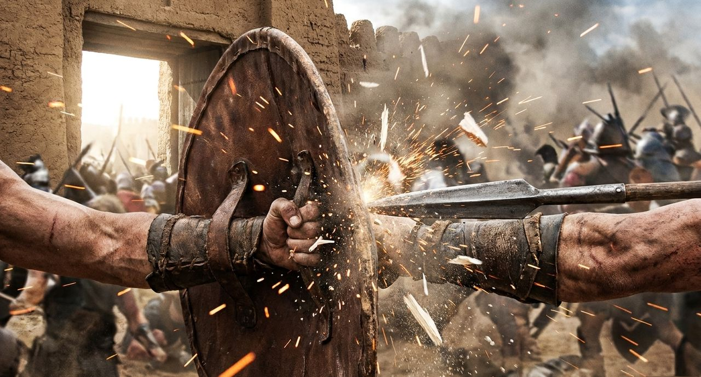
뺀 이유: 목사님이 빼서 보관
시대: 정착·사사, 왕국
용도: 사건 장면
태그: army, shield, city_gate, dust

쓰는 장(표지 카드에서만, 다른 카드는 아래 말이 있어야 함): 역대하 20장
카드 글에 이 말이 있으면: 노래하는 자들을 군대 · 찬송하는 자 · 여호사밧
용도: 사건 장면
태그: singers, army, sunrise_light_rays
지금 쓰인 카드: 없음
예비 자리: 365 139일 역대하 17–20장 (원고 전)

쓰는 장(표지 카드에서만, 다른 카드는 아래 말이 있어야 함): 열왕기하 25장, 역대하 36장, 예레미야 39장, 예레미야 52장, 예레미야애가 1–5장
카드 글에 이 말이 있으면: 불사르 · 불태우 · 함락
용도: 장소·생활 배경
태그: ruins, fire, city, night_sky
지금 쓰인 카드: 없음
예비 자리: 365 124일 열왕기하 24–25장 (원고 전) · 365 145일 역대하 34–36장 (원고 전) · 365 237일 예레미야 37–39장 (원고 전) · 365 240일 예레미야 50–52장 (원고 전)

쓰는 장(표지 카드에서만, 다른 카드는 아래 말이 있어야 함): 열왕기하 2장, 열왕기하 6장
카드 글에 이 말이 있으면: 불말 · 불병거
용도: 비유·환상·상징
태그: horse, chariot, fire, clouds
지금 쓰인 카드: 없음
예비 자리: 365 116일 열왕기하 1–2장 (원고 전) · 365 118일 열왕기하 6–8장 (원고 전)

쓰는 장(표지 카드에서만, 다른 카드는 아래 말이 있어야 함): 사무엘상 13장, 이사야 2장, 미가 4장, 요엘 3장
카드 글에 이 말이 있으면: 대장장이 · 보습
용도: 사건 장면
태그: fire, labor, hands
지금 쓰인 카드: 없음
예비 자리: 365 91일 사무엘상 13–14장 (원고 전) · 365 209일 이사야 1–5장 (원고 전) · 365 266일 요엘 1–3장 (원고 전) · 365 271일 미가 1–4장 (원고 전)

쓰는 장(표지 카드에서만, 다른 카드는 아래 말이 있어야 함): 사도행전 21–28장
카드 글에 이 말이 있으면: 로마 군대 · 군대가 · 병사들이 · 군사들이
이 말이 있으면 쓰지 않음: 배를 타 · 배에
용도: 사건 장면
태그: army, roman, road
쓰인 카드 1장 보기
- 리딩지저스 37주차 4일째 · 사도행전 23–24장 · 1번째 카드 — 부활 때문에, 지금은 가라

시대: 분열·포로
용도: 장소·생활 배경
태그: ruins, dawn, smoke, pasture
지금 쓰인 카드: 없음
예비: 카드 글에 태그의 낱말이 나오면 씁니다

쓰는 장(표지 카드에서만, 다른 카드는 아래 말이 있어야 함): 레위기 23장, 신명기 16장, 느헤미야 8장, 요한복음 7장, 에스라 3장
카드 글에 이 말이 있으면: 초막 · 초막절
용도: 장소·생활 배경
태그: booth, oil_lamp, dusk
쓰인 카드 2장 보기
- 365 42일 2027판 · 레위기 23–24장 · 2번째 카드 — 배경 · 나의 절기들 · 여호와의 절기들
- 365 310일 2027판 · 요한복음 7–8장 · 2번째 카드 — 배경 · 초막절 · 형제들까지도

쓰는 장(표지 카드에서만, 다른 카드는 아래 말이 있어야 함): 신명기 26장, 레위기 23장, 출애굽기 23장
카드 글에 이 말이 있으면: 첫 열매 · 맏물 · 첫 이삭 한 단
용도: 소품·동작
태그: basket, grapes, wheat_field, priest
쓰인 카드 1장 보기
- 365 42일 2027판 · 레위기 23–24장 · 4번째 카드 — 긴장 · 첫 이삭과 오십 일 · 곡물을 거둘 때

쓰는 장(표지 카드에서만, 다른 카드는 아래 말이 있어야 함): 레위기 23장, 사도행전 2장
카드 글에 이 말이 있으면: 칠칠절 · 오순절 · 떡 두 개
용도: 소품·동작
태그: bread, wheat_field
쓰인 카드 2장 보기
- 365 317일 2027판 · 사도행전 1–2장 · 6번째 카드 — 전환 · 오순절 날 · 기다림이 끝나는 날
- 리딩지저스 36주차 1일째 · 사도행전 1–3장 · 1번째 카드 — 너희가 죽였으나, 하나님이 살리셨으니

쓰는 장(표지 카드에서만, 다른 카드는 아래 말이 있어야 함): 출애굽기 15장, 사사기 11장, 사무엘상 18장
카드 글에 이 말이 있으면: 미리암 · 소고 · 구원하신 여호와를 노래
용도: 사건 장면
태그: timbrel, woman, dance, sea
지금 쓰인 카드: 없음
예비 자리: 365 25일 출애굽기 14–15장 (원고 있음, 그 장면 말이 아직 없음) · 365 82일 사사기 10–12장 (원고 전) · 365 93일 사무엘상 17–18장 (원고 전)

쓰는 장(표지 카드에서만, 다른 카드는 아래 말이 있어야 함): 역대상 15–16장, 역대상 25장, 역대하 5장, 역대하 29장, 에스라 3장, 느헤미야 12장
카드 글에 이 말이 있으면: 제금 · 비파 · 노래하는 자 · 찬양대
용도: 사건 장면
태그: singers, lyre, priest, temple_stones
지금 쓰인 카드: 없음
예비 자리: 365 128일 역대상 13–16장 (원고 전) · 365 131일 역대상 23–26장 (원고 전) · 365 134일 역대하 3–5장 (원고 전) · 365 143일 역대하 29–31장 (원고 전)

쓰는 장(표지 카드에서만, 다른 카드는 아래 말이 있어야 함): 시편 81장, 민수기 10장, 레위기 23장, 요엘 2장
카드 글에 이 말이 있으면: 초하루 · 뿔나팔 · 양각 나팔
용도: 사건 장면
태그: shofar, city_wall, night_sky, moon
지금 쓰인 카드: 없음
예비 자리: 365 42일 레위기 23–24장 (원고 있음, 그 장면 말이 아직 없음) · 365 48일 민수기 9–10장 (원고 있음, 그 장면 말이 아직 없음) · 365 183일 시편 78–83편 (원고 전) · 365 266일 요엘 1–3장 (원고 전)

쓰는 장(표지 카드에서만, 다른 카드는 아래 말이 있어야 함): 시편 120–134장, 누가복음 2장, 신명기 16장, 사무엘상 1장
카드 글에 이 말이 있으면: 순례 · 올라가는 노래 · 절기에 올라
용도: 사건 장면
태그: crowd, road, mountain_peak, family
지금 쓰인 카드: 없음
예비 자리: 365 61일 신명기 15–16장 (원고 전) · 365 87일 사무엘상 1–2장 (원고 전) · 365 192일 시편 120–134편 (원고 전) · 365 298일 누가복음 1–3장 (원고 전)

쓰는 장(표지 카드에서만, 다른 카드는 아래 말이 있어야 함): 느헤미야 8장, 열왕기하 22–23장, 역대하 34장, 신명기 31장
카드 글에 이 말이 있으면: 율법책 · 낭독 · 율법을 읽
용도: 사건 장면
태그: scroll, crowd, sunrise_light_rays
지금 쓰인 카드: 없음
예비 자리: 365 67일 신명기 29–31장 (원고 전) · 365 123일 열왕기하 21–23장 (원고 전) · 365 145일 역대하 34–36장 (원고 전) · 365 151일 느헤미야 7–8장 (원고 전)

쓰는 장(표지 카드에서만, 다른 카드는 아래 말이 있어야 함): 느헤미야 12장
카드 글에 이 말이 있으면: 성벽을 봉헌 · 성벽 위로
용도: 사건 장면
태그: singers, city_wall, lyre
지금 쓰인 카드: 없음
예비 자리: 365 153일 느헤미야 11–13장 (원고 전)

쓰는 장(표지 카드에서만, 다른 카드는 아래 말이 있어야 함): 역대하 30장, 역대하 35장, 열왕기하 23장, 에스라 6장, 출애굽기 12장
카드 글에 이 말이 있으면: 유월절 · 어린 양을 잡
용도: 사건 장면
태그: lamb, crowd, stone_altar, priest
지금 쓰인 카드: 없음
예비 자리: 365 24일 출애굽기 12–13장 (원고 있음, 그 장면 말이 아직 없음) · 365 123일 열왕기하 21–23장 (원고 전) · 365 143일 역대하 29–31장 (원고 전) · 365 145일 역대하 34–36장 (원고 전)

쓰는 장(표지 카드에서만, 다른 카드는 아래 말이 있어야 함): 에스더 9장
카드 글에 이 말이 있으면: 부림절
용도: 사건 장면
태그: table, feast, palace
지금 쓰인 카드: 없음
예비 자리: 365 156일 에스더 6–10장 (원고 전)

쓰는 장(표지 카드에서만, 다른 카드는 아래 말이 있어야 함): 마태복음 21장, 마가복음 11장, 누가복음 19장, 요한복음 12장
카드 글에 이 말이 있으면: 종려 · 호산나 · 환호하는 무리
용도: 사건 장면
태그: palm, robe, road
지금 쓰인 카드: 없음
예비 자리: 365 289일 마태복음 21–23장 (원고 전) · 365 296일 마가복음 11–13장 (원고 전) · 365 304일 누가복음 17–19장 (원고 있음, 그 장면 말이 아직 없음) · 365 312일 요한복음 11–12장 (원고 있음, 그 장면 말이 아직 없음)

쓰는 장(표지 카드에서만, 다른 카드는 아래 말이 있어야 함): 출애굽기 11장, 사사기 16장, 마태복음 24장, 요한계시록 18장
카드 글에 이 말이 있으면: 맷돌
이 말이 있으면 쓰지 않음: 맷돌 같은 돌 · 큰 맷돌
용도: 사건 장면
태그: millstone, hands, grain
지금 쓰인 카드: 없음
예비 자리: 365 23일 출애굽기 10–11장 (원고 있음, 그 장면 말이 아직 없음) · 365 83일 사사기 13–16장 (원고 전) · 365 290일 마태복음 24–25장 (원고 전) · 365 364일 요한계시록 15–18장 (원고 있음, 그 장면 말이 아직 없음)

쓰는 장(표지 카드에서만, 다른 카드는 아래 말이 있어야 함): 레위기 2장, 호세아 7장, 마태복음 6장
카드 글에 이 말이 있으면: 화덕 · 떡을 굽 · 떡을 만들
용도: 소품·동작
태그: bread, oven, fire
지금 쓰인 카드: 없음
예비 자리: 365 35일 레위기 1–6장 (원고 있음, 그 장면 말이 아직 없음) · 365 263일 호세아 3–7장 (원고 전) · 365 283일 마태복음 5–7장 (원고 전)

쓰는 장(표지 카드에서만, 다른 카드는 아래 말이 있어야 함): 사사기 16장, 잠언 31장
카드 글에 이 말이 있으면: 베틀 · 실을 뽑 · 물레
용도: 사건 장면
태그: loom, hands, yarn
지금 쓰인 카드: 없음
예비 자리: 365 83일 사사기 13–16장 (원고 전) · 365 202일 잠언 30–31장 (원고 전)

쓰는 장(표지 카드에서만, 다른 카드는 아래 말이 있어야 함): 창세기 24장, 요한복음 4장
카드 글에 이 말이 있으면: 물을 길 · 물 길으 · 물 길으러
용도: 사건 장면
태그: woman, clay_jar, city_wall, dawn
쓰인 카드 1장 보기
- 365 8일 2027판 · 창세기 24–25장 · 5번째 카드 — 긴장 · 우물 곁에서 · 24:12–20 · 우물 곁의 기도

쓰는 장(표지 카드에서만, 다른 카드는 아래 말이 있어야 함): 신명기 6장, 신명기 11장, 잠언 1–7장
카드 글에 이 말이 있으면: 자녀에게 가르 · 네 자녀 · 아들아 내 · 아들이 물을 · 무슨 뜻이냐
용도: 사건 장면
태그: child, elder, house
쓰인 카드 1장 보기
- 365 58일 2027판 · 신명기 5–8장 · 6번째 카드 — 긴장 · 아들이 물을 때 · 무슨 뜻이냐

카드 글에 이 말이 있으면: 시장 · 저울 · 장터
용도: 장소·생활 배경
태그: market, city_gate, donkey, grain
쓰인 카드 2장 보기
- 365 40일 2027판 · 레위기 18–20장 · 9번째 카드 — 의미 · 애굽에서 인도하여 낸 여호와 · 공평한 저울까지
- 리딩지저스 37주차 1일째 · 사도행전 16–18장 · 4번째 카드 — 긴장 · 닫힌 옥문 · 돈벌이가 끊어진 사람들

쓰는 장(표지 카드에서만, 다른 카드는 아래 말이 있어야 함): 에스더 4장, 욥기 2장, 요나 3장, 마태복음 11장
카드 글에 이 말이 있으면: 베옷 · 재를 무릅 · 재에 앉 · 재를 뒤집 · 재를 뒤집어 · 굵은 베 · 재 가운데
용도: 사건 장면
태그: sackcloth, ashes, sorrow
쓰인 카드 2장 보기
- 365 157일 2027판 · 욥기 1–3장 · 6번째 카드 — 긴장 · 또 하루는 · 이번에는 몸
- 365 157일 2028판 · 욥기 1–3장 · 1번째 카드 — 까닭 없이, 어찌하여

쓰는 장(표지 카드에서만, 다른 카드는 아래 말이 있어야 함): 마태복음 27–28장, 마가복음 15–16장, 누가복음 23–24장, 요한복음 11장, 요한복음 19–20장
카드 글에 이 말이 있으면: 돌을 굴려 · 무덤 문
용도: 소품·동작
태그: rock_tomb, stone
쓰인 카드 1장 보기
- 365 312일 2027판 · 요한복음 11–12장 · 1번째 카드 — 한 사람이 살아나자, 죽이려는 모의가

쓰는 장(표지 카드에서만, 다른 카드는 아래 말이 있어야 함): 마태복음 4장, 마가복음 1장, 요한복음 21장
카드 글에 이 말이 있으면: 그물을 깁 · 그물을 씻 · 그물을 던지
용도: 사건 장면
태그: net, hands, sea
지금 쓰인 카드: 없음
예비 자리: 365 282일 마태복음 1–4장 (원고 전) · 365 292일 마가복음 1–3장 (원고 전) · 365 316일 요한복음 18–21장 (원고 있음, 그 장면 말이 아직 없음)

쓰는 장(표지 카드에서만, 다른 카드는 아래 말이 있어야 함): 마태복음 13장, 마가복음 6장
카드 글에 이 말이 있으면: 목수
용도: 소품·동작
태그: tools, wood, labor
지금 쓰인 카드: 없음
예비 자리: 365 286일 마태복음 13장 (원고 전) · 365 294일 마가복음 6–8장 (원고 전)

카드 글에 이 말이 있으면: 아이들이 · 어린아이들 · 어린 아이들
용도: 사건 장면
태그: child, village, dust
쓰인 카드 2장 보기
- 365 172일 2027판 · 시편 8–14편 · 3번째 카드 — 긴장 · 대적 앞에서 · 젖먹이들의 입으로
- 365 301일 2028판 · 누가복음 10–11장 · 4번째 카드 — 긴장 · 닫힌 문 · 밤중에 찾아간 벗

쓰는 장(표지 카드에서만, 다른 카드는 아래 말이 있어야 함): 레위기 13–14장, 민수기 5장, 민수기 12장, 누가복음 5장, 누가복음 17장
카드 글에 이 말이 있으면: 진 밖 · 나병
용도: 사건 장면
태그: tent, desert, man, sorrow
쓰인 카드 1장 보기
- 365 46일 2027판 · 민수기 5–6장 · 1번째 카드 — 몸을 구별하는 모든 날 동안

카드 글에 이 말이 있으면: 등불 · 등잔 · 등을 켜
용도: 소품·동작
태그: oil_lamp, hands, darkness
쓰인 카드 3장 보기
- 365 34일 2027판 · 출애굽기 39–40장 · 8번째 카드 — 전환 · 하나씩 세울 때마다 · 명령하신 대로 되니라
- 365 47일 2027판 · 민수기 7–8장 · 10번째 카드 — 의미 · 이어지는 말씀 · 헌물 뒤에 들린 목소리
- 리딩지저스 43주차 2일째 · 베드로후서 1–3장 · 6번째 카드 — 근거 · 더 확실한 예언 · 어두운 데를 비추는 등불

쓰는 장(표지 카드에서만, 다른 카드는 아래 말이 있어야 함): 레위기 19장, 레위기 23장, 신명기 24장, 룻기 2장
카드 글에 이 말이 있으면: 밭 모퉁이 · 이삭을 줍
용도: 사건 장면
태그: wheat_field, hands, harvest
쓰인 카드 1장 보기
- 365 42일 2027판 · 레위기 23–24장 · 1번째 카드 — 절기 목록 한가운데 남겨 둔 이삭

시대: 왕국, 분열·포로, 복음서
용도: 장소·생활 배경
태그: city_wall, jerusalem, valley, men
쓰인 카드 11장 보기
- 365 222일 2027판 · 이사야 51–55장 · 2번째 카드 — 배경 · 사로잡힌 딸 시온 · 티끌에 앉은 성
- 365 305일 2027판 · 누가복음 20–21장 · 2번째 카드 — 배경 · 무슨 권위로 · 성전 뜰의 질문
- 365 312일 2027판 · 요한복음 11–12장 · 8번째 카드 — 긴장 · 우리가 어떻게 · 살아난 사람, 모이는 공회
- 365 317일 2027판 · 사도행전 1–2장 · 2번째 카드 — 배경 · 사십 일 · 떠나지 말고
- 365 322일 2027판 · 사도행전 13–15장 · 11번째 카드 — 의미 · 하나님이 함께 계셔 · 보고한 것은 하나님이 하신 일
- 365 340일 2027판 · 갈라디아서 1–2장 · 8번째 카드 — 전환 · 혈육과 의논하지 아니하고 · 사람에게 가지 않은 길
- 365 349일 2027판 · 디도서 1–3장 · 5번째 카드 — 긴장 · 오직 너는 · 선한 일의 본
- 리딩지저스 36주차 3일째 · 사도행전 6–8장 · 3번째 카드 — 배경 · 점점 왕성하여 · 예루살렘 안에서
- 리딩지저스 37주차 4일째 · 사도행전 23–24장 · 6번째 카드 — 전환 · 그 날 밤 · 바울 곁에 선 주님
- 리딩지저스 38주차 6일째 · 로마서 15–16장 · 3번째 카드 — 주장 · 이방인의 일꾼 · 남의 터 위에 아니하려
- 리딩지저스 42주차 4일째 · 히브리서 10–13장 · 8번째 카드 — 전환 · 성문 밖에서 · 백성을 거룩하게 하려고

쓰는 장(표지 카드에서만, 다른 카드는 아래 말이 있어야 함): 마태복음 21장, 마가복음 11장, 누가복음 2장, 누가복음 19–21장, 요한복음 2장, 요한복음 7–10장, 사도행전 2–7장, 사도행전 21장
카드 글에 이 말이 있으면: 성전 뜰 · 성전에서 · 성전에 올라 · 헤롯 성전
이 말이 있으면 쓰지 않음: 하늘의 성전 · 성전에서 나와 · 천사 · 새 예루살렘
용도: 장소·생활 배경
태그: temple_stones, jerusalem, courtyard
쓰인 카드 7장 보기
- 365 305일 2027판 · 누가복음 20–21장 · 1번째 카드 — 버린 돌, 아름다운 돌
- 365 310일 2027판 · 요한복음 7–8장 · 1번째 카드 — 어디서 왔는지 안다는 사람들
- 365 317일 2027판 · 사도행전 1–2장 · 1번째 카드 — 떠나지 말고 기다리라, 그리고 증인
- 365 318일 2027판 · 사도행전 3–5장 · 1번째 카드 — 마음에 가득한 것, 예루살렘에 가득한 것
- 365 325일 2027판 · 사도행전 21–24장 · 5번째 카드 — 긴장 · 이 거룩한 곳을 · 성전에서 들린 외침
- 리딩지저스 36주차 2일째 · 사도행전 4–5장 · 9번째 카드 — 긴장 · 엄금하였으되 · 다시 공회 앞에
- 리딩지저스 37주차 3일째 · 사도행전 21–22장 · 6번째 카드 — 긴장 · 성전의 소동 · 무리에게 붙들린 바울

시대: 왕국, 분열·포로
용도: 장소·생활 배경
태그: fortress, hill, donkey, road
지금 쓰인 카드: 없음
예비: 카드 글에 태그의 낱말이 나오면 씁니다

쓰는 장(표지 카드에서만, 다른 카드는 아래 말이 있어야 함): 요나 1–4장, 나훔 1–3장, 열왕기하 19장, 이사야 37장
카드 글에 이 말이 있으면: 니느웨
용도: 장소·생활 배경
태그: city_wall, city_gate, river
지금 쓰인 카드: 없음
예비 자리: 365 122일 열왕기하 18–20장 (원고 전) · 365 218일 이사야 36–39장 (원고 전) · 365 270일 오바댜 · 요나 1–4장 (원고 전) · 365 273일 나훔 1–3장 (원고 전)

시대: 분열·포로
용도: 장소·생활 배경
태그: babylon, city, river, ziggurat
지금 쓰인 카드: 없음
예비: 카드 글에 태그의 낱말이 나오면 씁니다

쓰는 장(표지 카드에서만, 다른 카드는 아래 말이 있어야 함): 에스더 1–10장, 느헤미야 1장, 다니엘 8장
카드 글에 이 말이 있으면: 수산 궁
용도: 장소·생활 배경
태그: palace, persia, pillars, steps
지금 쓰인 카드: 없음
예비 자리: 365 149일 느헤미야 1–2장 (원고 전) · 365 154일 에스더 1–2장 (원고 전) · 365 155일 에스더 3–5장 (원고 전) · 365 156일 에스더 6–10장 (원고 전)

시대: 자연·하늘
용도: 자연·지형
태그: sea, salt, desert, mountain_peak
쓰인 카드 5장 보기
- 365 5일 2027판 · 창세기 12–16장 · 4번째 카드 — 긴장 · 기근과 누이라는 말 · 12:10–13 · 누이라 하라
- 365 56일 2027판 · 민수기 34–36장 · 3번째 카드 — 배경 · 앞에서 받은 판정 · 딸들이 물었을 때
- 365 57일 2027판 · 신명기 1–4장 · 2번째 카드 — 배경 · 모압 땅에서 · 열 하룻길, 마흔째 해
- 리딩지저스 39주차 6일째 · 고린도후서 4–6장 · 12번째 카드 — 권면 · 마음을 넓히라 · 고린도 사람들에게
- 리딩지저스 41주차 1일째 · 골로새서 1–4장 · 12번째 카드 — 권면 · 외인을 향한 말 · 소금으로 맛을 냄과 같이

시대: 자연·하늘
용도: 자연·지형
태그: palm, spring, water
쓰인 카드 3장 보기
- 365 56일 2027판 · 민수기 34–36장 · 11번째 카드 — 의미 · 명령하신 대로 · 딸들이 한 일
- 365 304일 2027판 · 누가복음 17–19장 · 6번째 카드 — 전환 · 오늘 이 집에 · 잃어버린 자를 찾아
- 리딩지저스 42주차 4일째 · 히브리서 10–13장 · 3번째 카드 — 권면 · 하나님께 나아가자 · 참 마음과 온전한 믿음

시대: 자연·하늘, 족장, 정착·사사
용도: 사건 장면
태그: valley, road, men, sheep
쓰인 카드 9장 보기
- 365 5일 2027판 · 창세기 12–16장 · 5번째 카드 — 긴장 · 궁으로 간 사래 · 12:14–16 · 바로의 궁으로
- 365 10일 2027판 · 창세기 29–31장 · 2번째 카드 — 배경 · 외삼촌 집에서 한 약속 · 라헬을 위해 일하기로 한 칠 년
- 365 24일 2027판 · 출애굽기 12–13장 · 8번째 카드 — 긴장 · 다른 예식, 이어지는 물음 · 이것이 어찌 됨이냐
- 365 54일 2027판 · 민수기 26–30장 · 9번째 카드 — 전환 · 목자 없는 양 · 회중 위에 한 사람을
- 365 348일 2027판 · 디모데후서 1–4장 · 6번째 카드 — 전환 · 충성된 사람들에게
- 365 359일 2027판 · 요한이서 · 요한삼서 · 유다서 · 5번째 카드 — 긴장 · 미혹하는 자 · 진리를 행하는 자녀들 곁에
- 리딩지저스 36주차 3일째 · 사도행전 6–8장 · 8번째 카드 — 전환 · 두루 다니며
- 리딩지저스 38주차 6일째 · 로마서 15–16장 · 4번째 카드 — 근거 · 여러 번 막혔더니 · 편지 처음의 그 말
- 리딩지저스 42주차 3일째 · 히브리서 7–9장 · 6번째 카드 — 전환 · 오직 자기의 피로

시대: 자연·하늘
용도: 자연·지형
태그: desert, road, tree, sunrise_light_rays
쓰인 카드 20장 보기
- 365 6일 2027판 · 창세기 17–20장 · 5번째 카드 — 긴장 · 그랄에서 되풀이한 말 · 20:1–2 · 자기 누이라 하였으므로
- 365 11일 2027판 · 창세기 32–33장 · 11번째 카드 — 의미 · 두 만남을 말하는 야곱 · 두 만남을 돌아보며
- 365 19일 2027판 · 출애굽기 1–2장 · 9번째 카드 — 전환 · 듣고 기억하신 하나님
- 365 34일 2027판 · 출애굽기 39–40장 · 6번째 카드 — 전환 · 명령하신 대로 되었으므로
- 365 48일 2027판 · 민수기 9–10장 · 9번째 카드 — 전환 · 앞서 간 언약궤
- 365 58일 2027판 · 신명기 5–8장 · 7번째 카드 — 전환 · 광야 길을 기억하라
- 365 314일 2027판 · 요한복음 15–16장 · 11번째 카드 — 의미 · 열매를 많이 맺으면 · 가지가 열매를 맺는 자리
- 365 323일 2027판 · 사도행전 16–18장 · 2번째 카드 — 배경 · 다시 길을 나서다 · 루스드라에서
- 365 328일 2027판 · 로마서 4–8장 · 7번째 카드 — 전환 · 한 사람이 순종하심으로
- 365 341일 2027판 · 갈라디아서 3–6장 · 8번째 카드 — 전환 · 서로 거스르나니 · 섞이지 않는 두 길
- 365 346일 2027판 · 데살로니가후서 1–3장 · 9번째 카드 — 의미 · 굳건하게 하시기를 · 기준을 주고, 기도하다
- 365 351일 2027판 · 히브리서 1–6장 · 8번째 카드 — 전환 · 아들을 통하여
- 365 356일 2027판 · 베드로후서 1–3장 · 8번째 카드 — 전환 · 더딘 것이 아니라
- 리딩지저스 36주차 3일째 · 사도행전 6–8장 · 12번째 카드 — 의미 · 기쁘게 길을 가니라 · 광야 길 끝에서
- 리딩지저스 38주차 4일째 · 로마서 9–11장 · 8번째 카드 — 권면 · 자랑하지 말라
- 리딩지저스 39주차 5일째 · 고린도후서 1–3장 · 9번째 카드 — 근거 · 추천서가 필요한가 · 너희가 우리의 편지라
- 리딩지저스 40주차 3일째 · 갈라디아서 1–6장 · 8번째 카드 — 권면 · 자유의 쓰임 · 자유로운 사람이 다시 종이 되다
- 리딩지저스 41주차 4일째 · 디모데전서 1–6장 · 7번째 카드 — 권면 · 참 과부 · 교회가 존대할 사람
- 리딩지저스 42주차 3일째 · 히브리서 7–9장 · 8번째 카드 — 의미 · 두 번째 나타나시리라 · 자기를 바라는 자들에게
- 리딩지저스 43주차 4일째 · 요한일서 4–5장 · 11번째 카드 — 권면 · 또한 그 형제를 · 그 형제를 사랑할지니라

시대: 자연·하늘, 사도행전·서신
용도: 장소·생활 배경
태그: harbor, ship, sea, rock
쓰인 카드 3장 보기
- 365 320일 2027판 · 사도행전 8–9장 · 12번째 카드 — 의미 · 교회가 평안하여 · 흩어짐 뒤에 선 교회
- 리딩지저스 36주차 4일째 · 사도행전 9–10장 · 9번째 카드 — 배경 · 욥바 · 무두장이 시몬의 집
- 리딩지저스 45주차 5일째 · 요한계시록 20–21장 · 4번째 카드 — 본 것 · 사망과 음부 · 죽은 자들을 내주매

시대: 족장
용도: 장소·생활 배경
태그: well, tree, clay_jar
쓰인 카드 2장 보기
- 365 9일 2027판 · 창세기 26–28장 · 3번째 카드 — 배경 · 아버지에게 하신 말씀 · 26장 · 이삭에게 먼저 하신 약속
- 365 9일 2028판 · 창세기 26–28장 · 1번째 카드 — 아버지 때와 같은 흉년, 다시 들린 말씀

시대: 자연·하늘
용도: 자연·지형
태그: river, valley, sunrise_light_rays
쓰인 카드 9장 보기
- 365 7일 2027판 · 창세기 21–23장 · 2번째 카드 — 배경 · 말씀하신 대로 받은 아들 · 21:1–3 · 말씀하신 대로
- 365 13일 2027판 · 창세기 36장 · 7번째 카드 — 긴장 · 두 족장 목록 · 에서의 자손과 호리 족속
- 365 49일 2027판 · 민수기 11–14장 · 5번째 카드 — 긴장 · 갈라진 목소리 · 능히 이기리라, 치지 못하리라
- 365 55일 2027판 · 민수기 31–33장 · 5번째 카드 — 긴장 · 건너지 않게 하소서 · 이 땅을 우리에게
- 365 307일 2027판 · 요한복음 1–2장 · 11번째 카드 — 의미 · 비교해 보기 · 영광을 보니 · 고백한 영광, 나타난 영광
- 365 315일 2027판 · 요한복음 17장 · 7번째 카드 — 전환 · 다 하나가 되어
- 365 323일 2027판 · 사도행전 16–18장 · 6번째 카드 — 전환 · 강가에서 · 먼저 마음이 열린 사람
- 365 343일 2027판 · 빌립보서 1–4장 · 11번째 카드 — 의미 · 주께서 가까우시니라 · 기쁨의 근거
- 365 359일 2027판 · 요한이서 · 요한삼서 · 유다서 · 13번째 카드 — 의미 · 진리 안에서 행한다 · 문 앞에서 드러나는 진리

시대: 자연·하늘
용도: 자연·지형
태그: mountain_peak, sea, sunrise_light_rays
쓰인 카드 16장 보기
- 365 13일 2027판 · 창세기 36장 · 10번째 카드 — 의미 · 땅과 거처에 남은 이름들 · 구역과 거처를 따른 이름들
- 365 20일 2027판 · 출애굽기 3–4장 · 11번째 카드 — 전환 · 비교해 보기 · 예상과 실제 · 믿지 아니하며, 믿으며
- 365 32일 2027판 · 출애굽기 32–34장 · 12번째 카드 — 의미 · 두 번 내려온 모세 · 32:19 / 34:29–35 · 깨진 판에서 빛나는 얼굴로
- 365 96일 2027판 · 사무엘상 24–26장 · 12번째 카드 — 의미 · 다시 들리는 고백 · 다시 들리는 고백
- 365 328일 2027판 · 로마서 4–8장 · 11번째 카드 — 의미 · 살아 있는 자로 · 넘친 은혜 아래
- 365 337일 2027판 · 고린도후서 3–7장 · 3번째 카드 — 배경 · 우리의 만족 · 새 언약의 일꾼
- 365 342일 2027판 · 에베소서 1–6장 · 2번째 카드 — 배경 · 찬송하리로다 · 찬송으로 여는 편지
- 365 348일 2027판 · 디모데후서 1–4장 · 10번째 카드 — 의미 · 떠날 시각에 남긴 부탁 · 말씀을 전파하라
- 365 358일 2027판 · 요한일서 4–5장 · 9번째 카드 — 의미 · 그가 먼저 · 사랑의 처음
- 리딩지저스 39주차 5일째 · 고린도후서 1–3장 · 6번째 카드 — 근거 · 눈물의 편지 · 근심하게 하려고 썼나
- 리딩지저스 40주차 3일째 · 갈라디아서 1–6장 · 4번째 카드 — 근거 · 유대인인 우리도 · 의롭게 되는 근거는?
- 리딩지저스 41주차 2일째 · 데살로니가전서 1–5장 · 6번째 카드 — 주장 · 먼저 잠든 사람들 · 슬퍼하지 말라는 까닭
- 리딩지저스 42주차 3일째 · 히브리서 7–9장 · 7번째 카드 — 의미 · 어디에 들어가셨나 · 첫 장막과 바로 그 하늘
- 리딩지저스 43주차 1일째 · 베드로전서 1–5장 · 4번째 카드 — 근거 · 너희도 산 돌 같이 · 신령한 집으로 세워지고
- 리딩지저스 43주차 6일째 · 유다서 1장 · 12번째 카드 — 의미 · 능히 너희를 보호하사 · 지키시는 분께 영광
- 리딩지저스 45주차 1일째 · 요한계시록 12–13장 · 11번째 카드 — 본 것 · 남은 자손 · 더불어 싸우려고
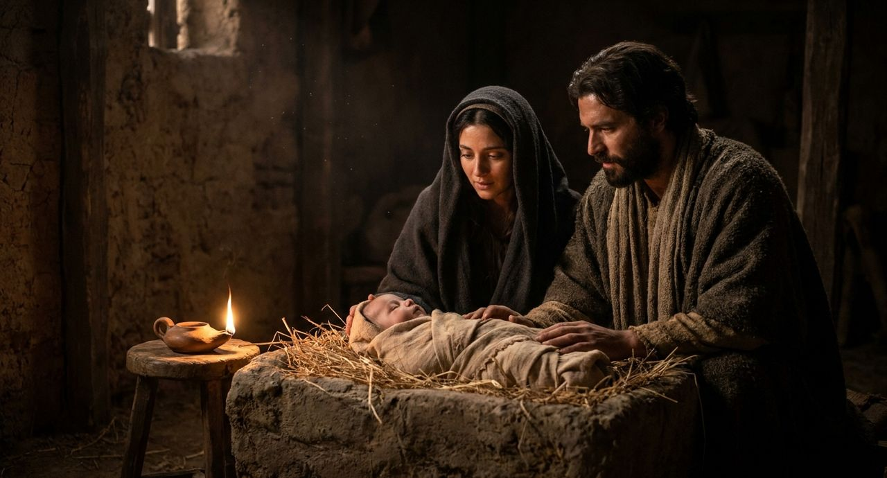
쓰는 장(표지 카드에서만, 다른 카드는 아래 말이 있어야 함): 누가복음 2장, 마태복음 1–2장
카드 글에 이 말이 있으면: 구유 · 말구유 · 강보로 싸
용도: 사건 장면
태그: manger, baby, mary, joseph, oil_lamp
지금 쓰인 카드: 없음
예비 자리: 365 282일 마태복음 1–4장 (원고 전) · 365 298일 누가복음 1–3장 (원고 전)
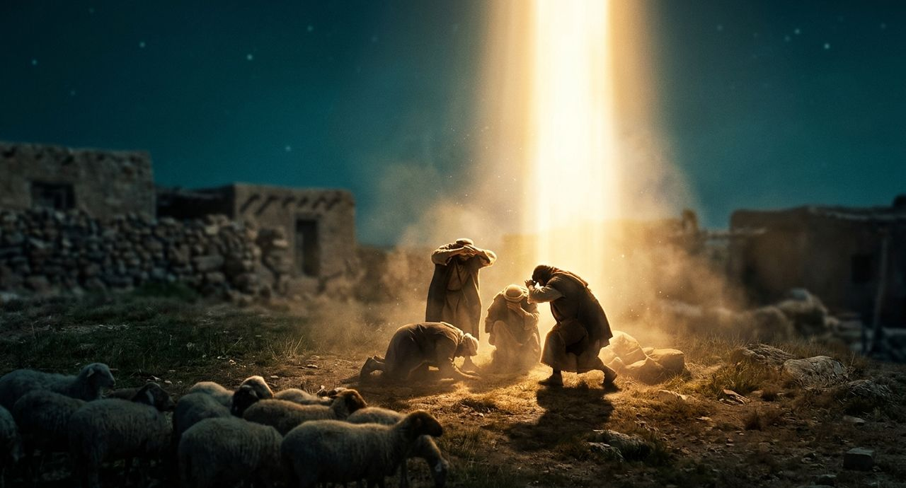
쓰는 장(표지 카드에서만, 다른 카드는 아래 말이 있어야 함): 누가복음 2장
카드 글에 이 말이 있으면: 목자들이 · 밤에 자기 양 떼 · 양 떼를 지키 · 천사가 목자
용도: 사건 장면
태그: shepherd, sheep, night_sky, sunrise_light_rays
지금 쓰인 카드: 없음
예비 자리: 365 298일 누가복음 1–3장 (원고 전)
쓰는 장(표지 카드에서만, 다른 카드는 아래 말이 있어야 함): 마태복음 2장
카드 글에 이 말이 있으면: 동방 박사 · 동방박사 · 박사들이 · 황금과 유향
용도: 사건 장면
태그: magi, gift, star, night_sky
지금 쓰인 카드: 없음
예비 자리: 365 282일 마태복음 1–4장 (원고 전)
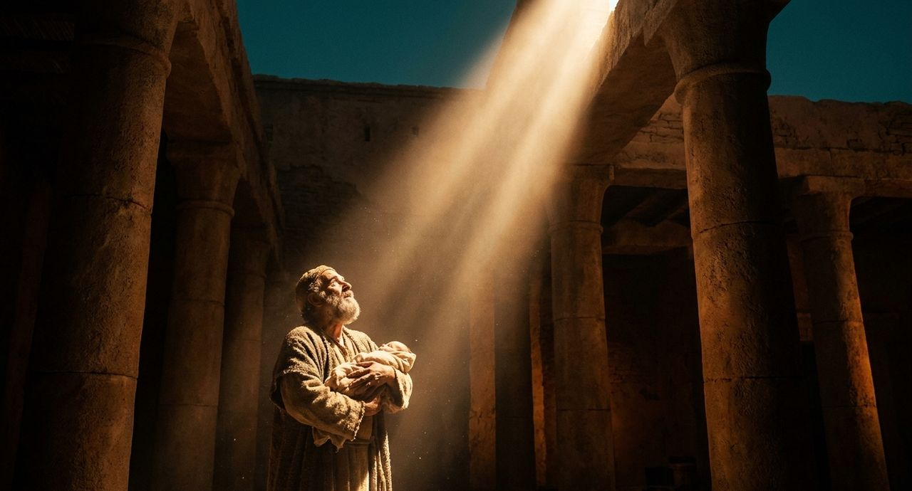
쓰는 장(표지 카드에서만, 다른 카드는 아래 말이 있어야 함): 누가복음 2장
카드 글에 이 말이 있으면: 시므온 · 선지자 안나 · 아기를 안고
용도: 사건 장면
태그: elder, baby, temple_stones
지금 쓰인 카드: 없음
예비 자리: 365 298일 누가복음 1–3장 (원고 전)
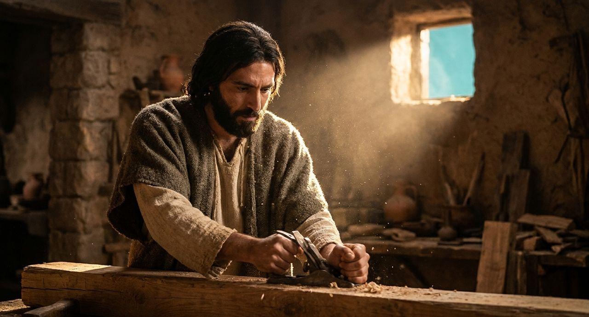
쓰는 장(표지 카드에서만, 다른 카드는 아래 말이 있어야 함): 마태복음 13장, 마가복음 6장
카드 글에 이 말이 있으면: 목수의 아들 · 목수가 아니냐
용도: 사건 장면
태그: carpenter, wood, tools, jesus
지금 쓰인 카드: 없음
예비 자리: 365 286일 마태복음 13장 (원고 전) · 365 294일 마가복음 6–8장 (원고 전)
쓰는 장(표지 카드에서만, 다른 카드는 아래 말이 있어야 함): 마태복음 3장, 마가복음 1장, 누가복음 3장, 요한복음 1장
카드 글에 이 말이 있으면: 세례를 받으시 · 비둘기 같이 · 성령이 비둘기
용도: 사건 장면
태그: river, dove, jesus, sunrise_light_rays
쓰인 카드 1장 보기
- 365 307일 2027판 · 요한복음 1–2장 · 1번째 카드 — 와서 보라, 먼저 보신 분
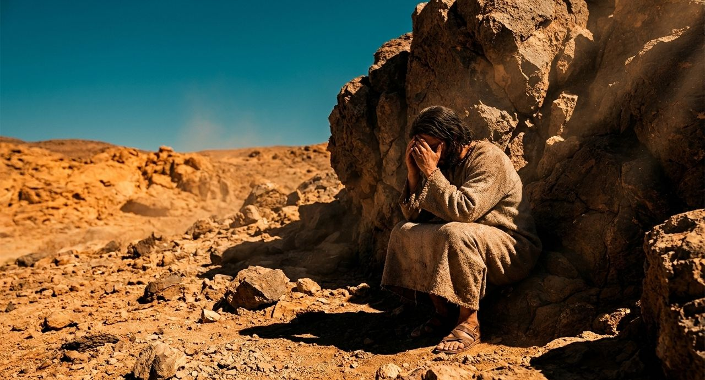
쓰는 장(표지 카드에서만, 다른 카드는 아래 말이 있어야 함): 마태복음 4장, 마가복음 1장, 누가복음 4장
카드 글에 이 말이 있으면: 마귀에게 시험 · 시험을 받으시 · 사십 일을 금식
용도: 비유·환상·상징
태그: desert, jesus, rock, sorrow
지금 쓰인 카드: 없음
예비 자리: 365 282일 마태복음 1–4장 (원고 전) · 365 292일 마가복음 1–3장 (원고 전) · 365 299일 누가복음 4–6장 (원고 전)
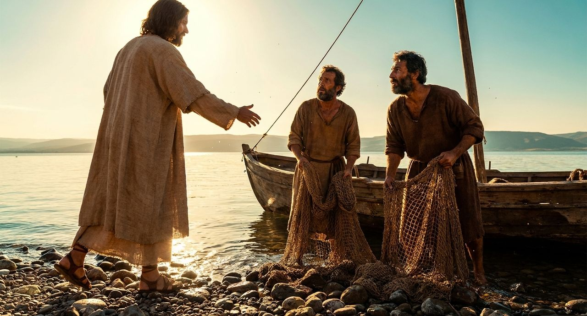
쓰는 장(표지 카드에서만, 다른 카드는 아래 말이 있어야 함): 마태복음 4장, 마가복음 1장, 누가복음 5장
카드 글에 이 말이 있으면: 사람을 낚 · 그물을 버려두고 · 그물을 버리고
용도: 사건 장면
태그: fishermen, boat, net, sea, jesus
지금 쓰인 카드: 없음
예비 자리: 365 282일 마태복음 1–4장 (원고 전) · 365 292일 마가복음 1–3장 (원고 전) · 365 299일 누가복음 4–6장 (원고 전)
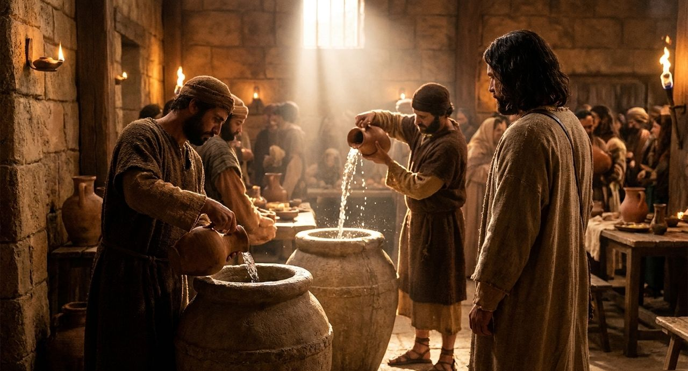
쓰는 장(표지 카드에서만, 다른 카드는 아래 말이 있어야 함): 요한복음 2장
카드 글에 이 말이 있으면: 가나의 혼인 · 가나에서 · 물로 된 포도주 · 돌항아리 · 항아리에 물을 · 아귀까지
용도: 사건 장면
태그: clay_jar, servants, water, jesus
쓰인 카드 1장 보기
- 365 307일 2027판 · 요한복음 1–2장 · 9번째 카드 — 전환 · 아귀까지 · 연회장은 몰랐고, 하인들은 알았다
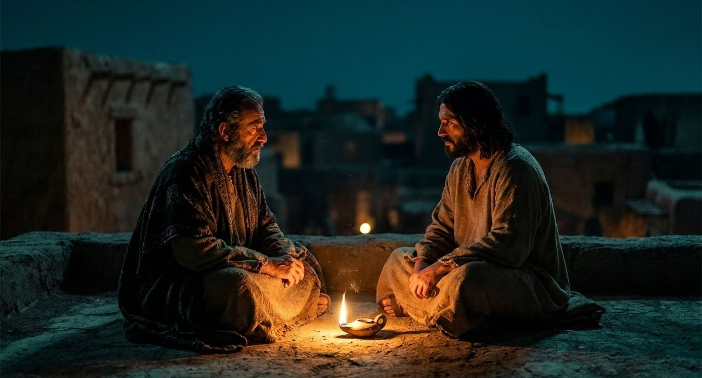
쓰는 장(표지 카드에서만, 다른 카드는 아래 말이 있어야 함): 요한복음 3장
카드 글에 이 말이 있으면: 니고데모 · 거듭나 · 밤에 예수께
용도: 사건 장면
태그: rooftop, oil_lamp, night_sky, jesus
쓰인 카드 1장 보기
- 365 308일 2027판 · 요한복음 3–4장 · 1번째 카드 — 밤에 온 선생, 우물가의 여자
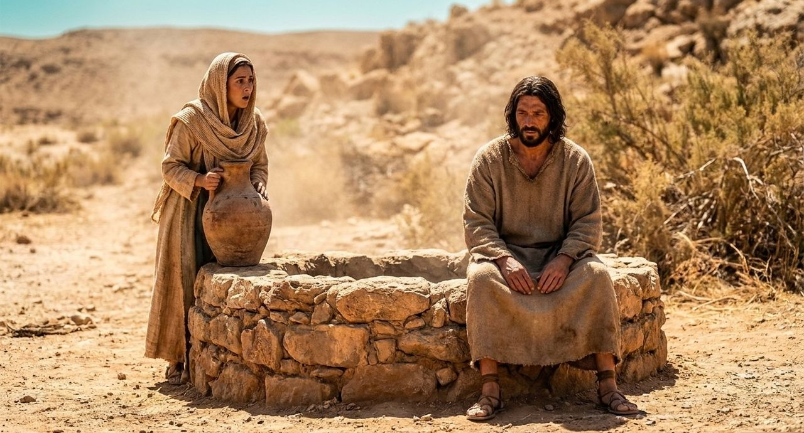
쓰는 장(표지 카드에서만, 다른 카드는 아래 말이 있어야 함): 요한복음 4장
카드 글에 이 말이 있으면: 사마리아 여자 · 사마리아 여인 · 야곱의 우물 · 수가라는 · 물 좀 달라
용도: 사건 장면
태그: well, woman, clay_jar, jesus
쓰인 카드 1장 보기
- 365 308일 2027판 · 요한복음 3–4장 · 7번째 카드 — 긴장 · 우물 곁에서 · 이번에는 먼저 청하신 분
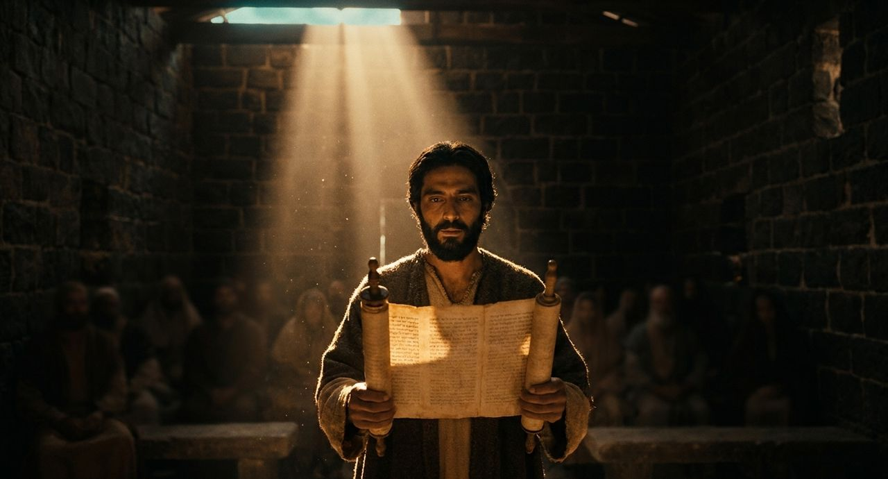
쓰는 장(표지 카드에서만, 다른 카드는 아래 말이 있어야 함): 누가복음 4장, 마가복음 1장, 마가복음 6장, 마태복음 13장
카드 글에 이 말이 있으면: 선지자 이사야의 글 · 안식일에 회당 · 회당에 들어가
용도: 사건 장면
태그: scroll, synagogue, jesus, crowd
지금 쓰인 카드: 없음
예비 자리: 365 286일 마태복음 13장 (원고 전) · 365 292일 마가복음 1–3장 (원고 전) · 365 294일 마가복음 6–8장 (원고 전) · 365 299일 누가복음 4–6장 (원고 전)
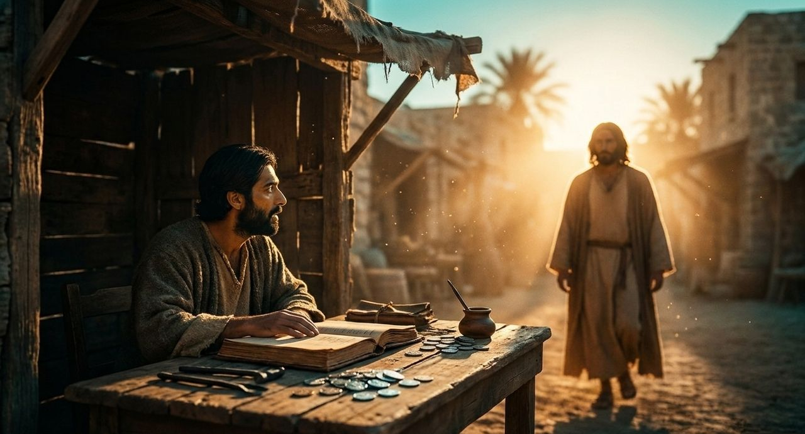
쓰는 장(표지 카드에서만, 다른 카드는 아래 말이 있어야 함): 마태복음 9장, 마가복음 2장, 누가복음 5장
카드 글에 이 말이 있으면: 세관에 앉 · 세리 마태 · 세리 레위
용도: 사건 장면
태그: tax_booth, coins, man
지금 쓰인 카드: 없음
예비 자리: 365 284일 마태복음 8–9장 (원고 전) · 365 292일 마가복음 1–3장 (원고 전) · 365 299일 누가복음 4–6장 (원고 전)
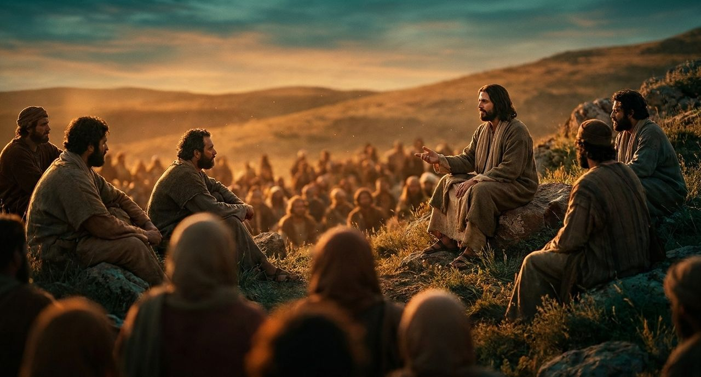
쓰는 장(표지 카드에서만, 다른 카드는 아래 말이 있어야 함): 마태복음 5–7장, 누가복음 6장
카드 글에 이 말이 있으면: 산에 올라가 앉으 · 복이 있나니 · 평지에 서
용도: 사건 장면
태그: crowd, hill, jesus, sunrise_light_rays
지금 쓰인 카드: 없음
예비 자리: 365 283일 마태복음 5–7장 (원고 전) · 365 299일 누가복음 4–6장 (원고 전)
쓰는 장(표지 카드에서만, 다른 카드는 아래 말이 있어야 함): 마가복음 1장, 누가복음 5장, 누가복음 6장, 마태복음 14장
카드 글에 이 말이 있으면: 새벽 아직도 밝기 전 · 한적한 곳에 가사 · 따로 산에 올라 기도 · 밤이 새도록 하나님께 기도
용도: 사건 장면
태그: prayer, dawn, hill, jesus
지금 쓰인 카드: 없음
예비 자리: 365 287일 마태복음 14–17장 (원고 전) · 365 292일 마가복음 1–3장 (원고 전) · 365 299일 누가복음 4–6장 (원고 전)
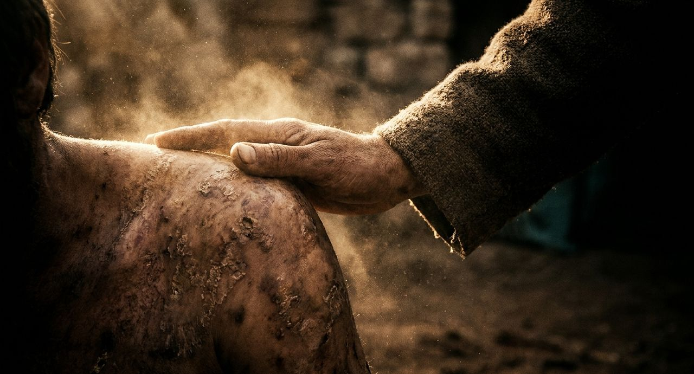
쓰는 장(표지 카드에서만, 다른 카드는 아래 말이 있어야 함): 마태복음 8장, 마가복음 1장, 누가복음 5장
카드 글에 이 말이 있으면: 나병환자가 · 나병 들린 · 손을 내밀어 그에게 대 · 깨끗함을 받으라
용도: 사건 장면
태그: hands, leper, healing, jesus
지금 쓰인 카드: 없음
예비 자리: 365 284일 마태복음 8–9장 (원고 전) · 365 292일 마가복음 1–3장 (원고 전) · 365 299일 누가복음 4–6장 (원고 전)
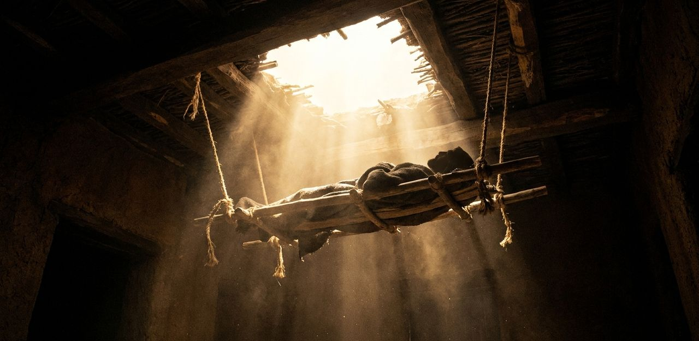
쓰는 장(표지 카드에서만, 다른 카드는 아래 말이 있어야 함): 마태복음 9장, 마가복음 2장, 누가복음 5장
카드 글에 이 말이 있으면: 지붕을 뜯 · 지붕에 올라가 · 상을 달아 내리
이 말이 있으면 쓰지 않음: 애니아
용도: 사건 장면
태그: roof, paralytic, crowd, jesus
지금 쓰인 카드: 없음
예비 자리: 365 284일 마태복음 8–9장 (원고 전) · 365 292일 마가복음 1–3장 (원고 전) · 365 299일 누가복음 4–6장 (원고 전)
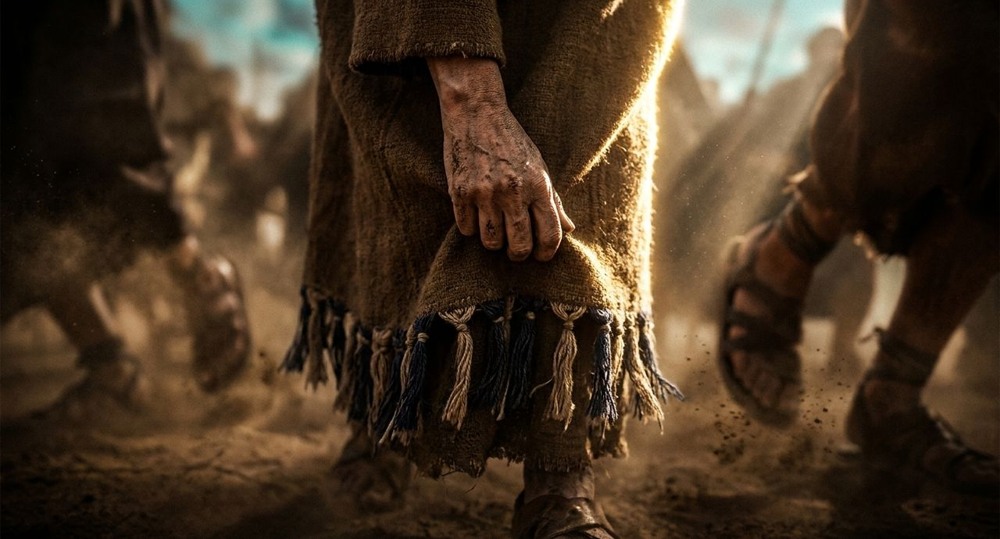
쓰는 장(표지 카드에서만, 다른 카드는 아래 말이 있어야 함): 마태복음 9장, 마가복음 5장, 누가복음 8장
카드 글에 이 말이 있으면: 혈루증 · 옷에 손을 대 · 옷 가에 손을
용도: 사건 장면
태그: hands, garment, crowd
지금 쓰인 카드: 없음
예비 자리: 365 284일 마태복음 8–9장 (원고 전) · 365 293일 마가복음 4–5장 (원고 전) · 365 300일 누가복음 7–9장 (원고 전)
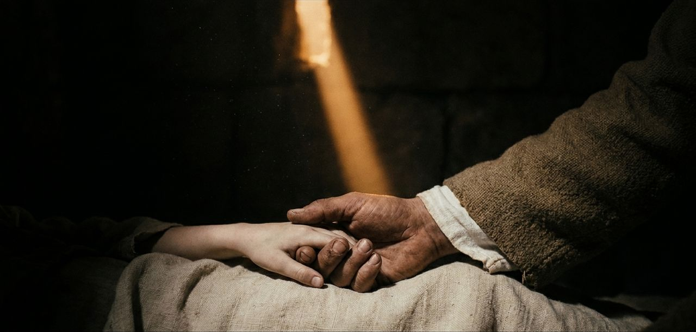
쓰는 장(표지 카드에서만, 다른 카드는 아래 말이 있어야 함): 마태복음 9장, 마가복음 5장, 누가복음 8장
카드 글에 이 말이 있으면: 달리다굼 · 야이로 · 소녀야 일어나 · 아이야 일어나
용도: 사건 장면
태그: hands, girl, healing, jesus
지금 쓰인 카드: 없음
예비 자리: 365 284일 마태복음 8–9장 (원고 전) · 365 293일 마가복음 4–5장 (원고 전) · 365 300일 누가복음 7–9장 (원고 전)
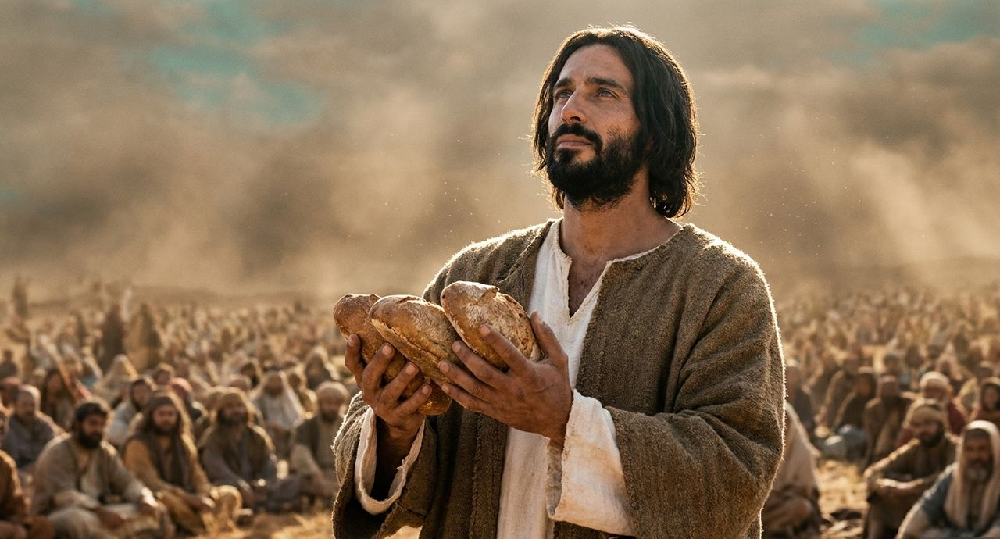
쓰는 장(표지 카드에서만, 다른 카드는 아래 말이 있어야 함): 마태복음 14–15장, 마가복음 6장, 마가복음 8장, 누가복음 9장, 요한복음 6장
카드 글에 이 말이 있으면: 오병이어 · 떡 다섯 · 보리떡 · 오천 명 · 사천 명
용도: 사건 장면
태그: bread, crowd, jesus, basket
쓰인 카드 1장 보기
- 365 309일 2027판 · 요한복음 5–6장 · 1번째 카드 — 내게 오는 자, 떠나가는 무리
쓰는 장(표지 카드에서만, 다른 카드는 아래 말이 있어야 함): 마태복음 14장, 마가복음 6장, 요한복음 6장
카드 글에 이 말이 있으면: 물 위로 걸 · 물 위를 걸 · 빠져 가는지라 · 믿음이 작은 자여
용도: 사건 장면
태그: hands, waves, sea, storm_sky
지금 쓰인 카드: 없음
예비 자리: 365 287일 마태복음 14–17장 (원고 전) · 365 294일 마가복음 6–8장 (원고 전) · 365 309일 요한복음 5–6장 (원고 있음, 그 장면 말이 아직 없음)
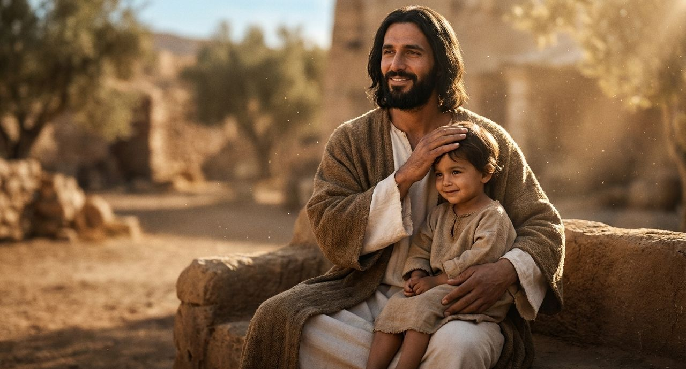
쓰는 장(표지 카드에서만, 다른 카드는 아래 말이 있어야 함): 마태복음 18–19장, 마가복음 9–10장, 누가복음 9장, 누가복음 18장
카드 글에 이 말이 있으면: 어린아이 하나를 · 어린아이들을 안고 · 어린아이와 같 · 어린아이를 영접
용도: 사건 장면
태그: child, jesus, village
지금 쓰인 카드: 없음
예비 자리: 365 288일 마태복음 18–20장 (원고 전) · 365 295일 마가복음 9–10장 (원고 전) · 365 300일 누가복음 7–9장 (원고 전) · 365 304일 누가복음 17–19장 (원고 있음, 그 장면 말이 아직 없음)
쓰는 장(표지 카드에서만, 다른 카드는 아래 말이 있어야 함): 요한복음 9장
카드 글에 이 말이 있으면: 진흙을 이겨 · 눈에 바르 · 맹인으로 난 · 날 때부터 맹인
용도: 사건 장면
태그: blind_man, hands, mud, jesus
쓰인 카드 1장 보기
- 365 311일 2027판 · 요한복음 9–10장 · 2번째 카드 — 배경 · 길을 가실 때 · 누구의 죄로 인함이니이까
쓰는 장(표지 카드에서만, 다른 카드는 아래 말이 있어야 함): 마태복음 13장, 마가복음 4장, 누가복음 8장
카드 글에 이 말이 있으면: 씨를 뿌리는 자 · 씨 뿌리는 자 · 씨를 뿌릴새 · 좋은 땅에
용도: 사건 장면
태그: sower, field, seed
지금 쓰인 카드: 없음
예비 자리: 365 286일 마태복음 13장 (원고 전) · 365 293일 마가복음 4–5장 (원고 전) · 365 300일 누가복음 7–9장 (원고 전)
쓰는 장(표지 카드에서만, 다른 카드는 아래 말이 있어야 함): 마태복음 18장, 누가복음 15장, 요한복음 10장
카드 글에 이 말이 있으면: 잃은 양 · 양 백 마리 · 아흔아홉 · 어깨에 메고 · 선한 목자
용도: 사건 장면
태그: shepherd, sheep, hill
쓰인 카드 2장 보기
- 365 303일 2027판 · 누가복음 14–16장 · 1번째 카드 — 잃었다가 얻었노라, 그런데 잔치 밖에는
- 365 311일 2027판 · 요한복음 9–10장 · 13번째 카드 — 의미 · 불러 인도하여 내는 목자 · 쫓아낸 사람들, 불러 내는 목자
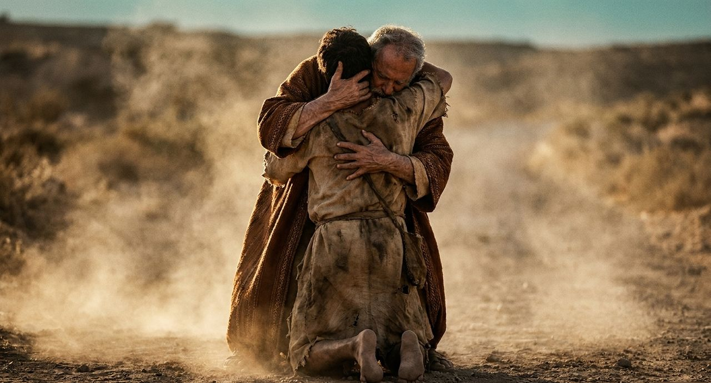
쓰는 장(표지 카드에서만, 다른 카드는 아래 말이 있어야 함): 누가복음 15장
카드 글에 이 말이 있으면: 탕자 · 둘째 아들이 · 살진 송아지 · 목을 안고 입을 맞추
용도: 사건 장면
태그: father, son, embrace, house
쓰인 카드 1장 보기
- 365 303일 2027판 · 누가복음 14–16장 · 6번째 카드 — 전환 · 아직도 거리가 먼데
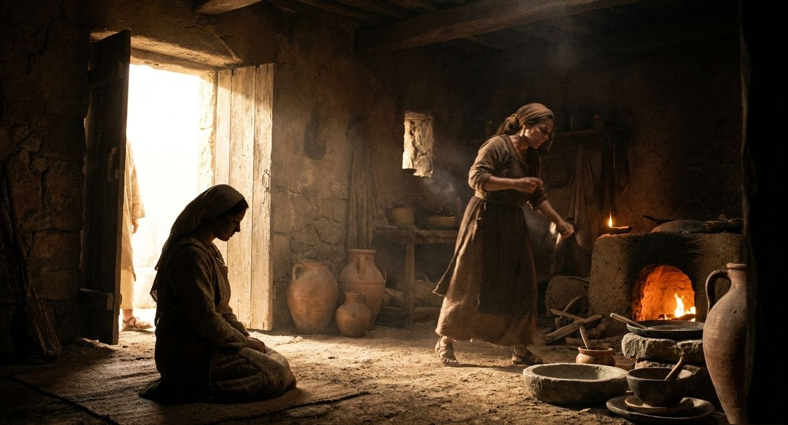
쓰는 장(표지 카드에서만, 다른 카드는 아래 말이 있어야 함): 누가복음 15장
카드 글에 이 말이 있으면: 드라크마 · 등불을 켜고 집을 쓸
용도: 사건 장면
태그: woman, house, oven, oil_lamp
쓰인 카드 1장 보기
- 365 303일 2027판 · 누가복음 14–16장 · 4번째 카드 — 긴장 · 양과 드라크마 · 나와 함께 즐기자
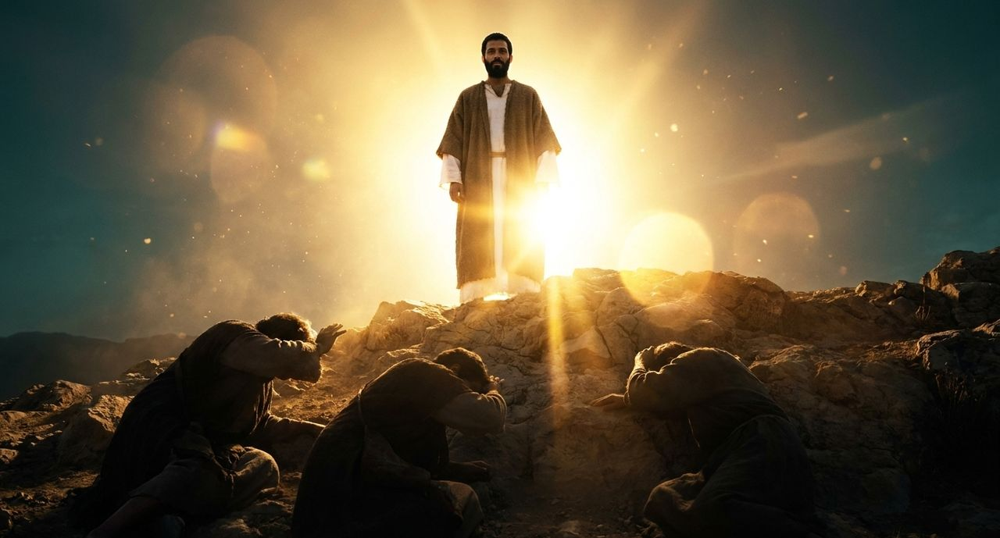
쓰는 장(표지 카드에서만, 다른 카드는 아래 말이 있어야 함): 마태복음 17장, 마가복음 9장, 누가복음 9장
카드 글에 이 말이 있으면: 변형되사 · 얼굴이 해 같이 · 모세와 엘리야 · 초막 셋
용도: 사건 장면
태그: mountain_peak, light, jesus, disciples
지금 쓰인 카드: 없음
예비 자리: 365 287일 마태복음 14–17장 (원고 전) · 365 295일 마가복음 9–10장 (원고 전) · 365 300일 누가복음 7–9장 (원고 전)
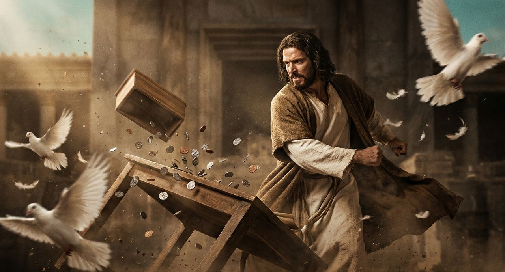
쓰는 장(표지 카드에서만, 다른 카드는 아래 말이 있어야 함): 마태복음 21장, 마가복음 11장, 누가복음 19장, 요한복음 2장
카드 글에 이 말이 있으면: 돈 바꾸는 · 환전 · 비둘기 파는 · 채찍을 만들 · 상을 엎으
용도: 사건 장면
태그: temple_stones, dove, coins, table
지금 쓰인 카드: 없음
예비 자리: 365 289일 마태복음 21–23장 (원고 전) · 365 296일 마가복음 11–13장 (원고 전) · 365 304일 누가복음 17–19장 (원고 있음, 그 장면 말이 아직 없음) · 365 307일 요한복음 1–2장 (원고 있음, 그 장면 말이 아직 없음)
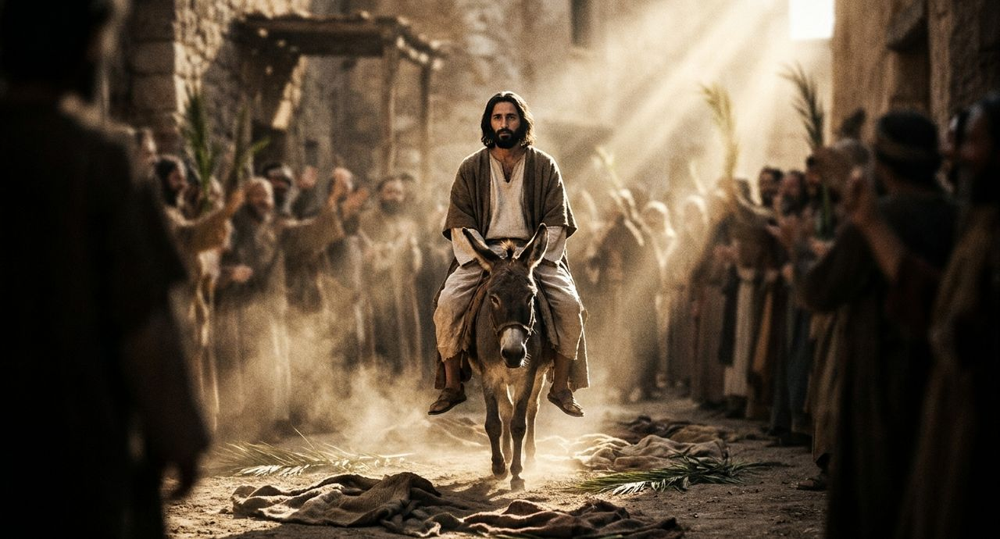
쓰는 장(표지 카드에서만, 다른 카드는 아래 말이 있어야 함): 마태복음 21장, 마가복음 11장, 누가복음 19장, 요한복음 12장
카드 글에 이 말이 있으면: 나귀 새끼 · 새끼 나귀 · 어린 나귀를 타 · 호산나 · 감람 산 내리막
용도: 사건 장면
태그: donkey, palm, crowd, jesus
쓰인 카드 1장 보기
- 365 304일 2027판 · 누가복음 17–19장 · 7번째 카드 — 긴장 · 가까이 오사 · 환호하는 무리
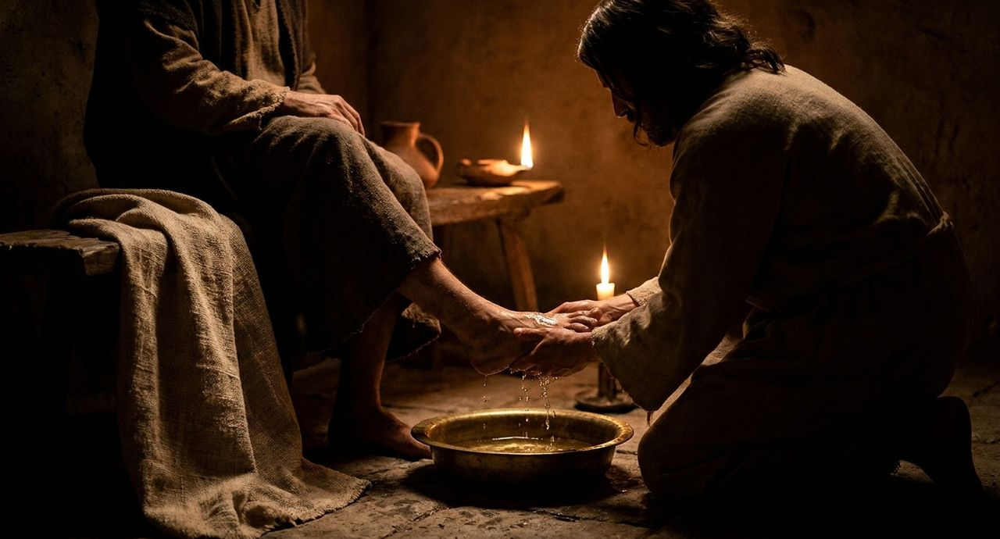
쓰는 장(표지 카드에서만, 다른 카드는 아래 말이 있어야 함): 요한복음 13장
카드 글에 이 말이 있으면: 발을 씻기 · 수건을 가져다가 허리에 · 대야에 물 · 발을 씻으
용도: 사건 장면
태그: basin, feet, towel, jesus
쓰인 카드 1장 보기
- 365 313일 2027판 · 요한복음 13–14장 · 4번째 카드 — 긴장 · 너희 중 하나가 · 심령이 괴로워
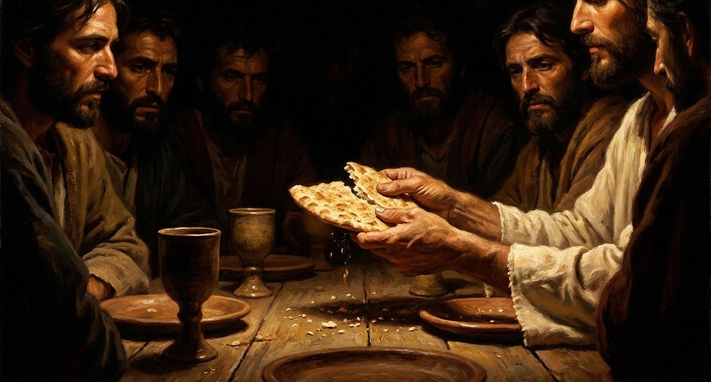
쓰는 장(표지 카드에서만, 다른 카드는 아래 말이 있어야 함): 마태복음 26장, 마가복음 14장, 누가복음 22장, 요한복음 13장
카드 글에 이 말이 있으면: 마지막 만찬 · 유월절 음식 · 이것은 내 몸 · 이 잔은 · 유월절 식탁 · 떡을 떼어 주시
용도: 사건 장면
태그: bread, cup, table, disciples
쓰인 카드 1장 보기
- 365 306일 2027판 · 누가복음 22–24장 · 2번째 카드 — 배경 · 마지막 식탁 · 떡과 각오
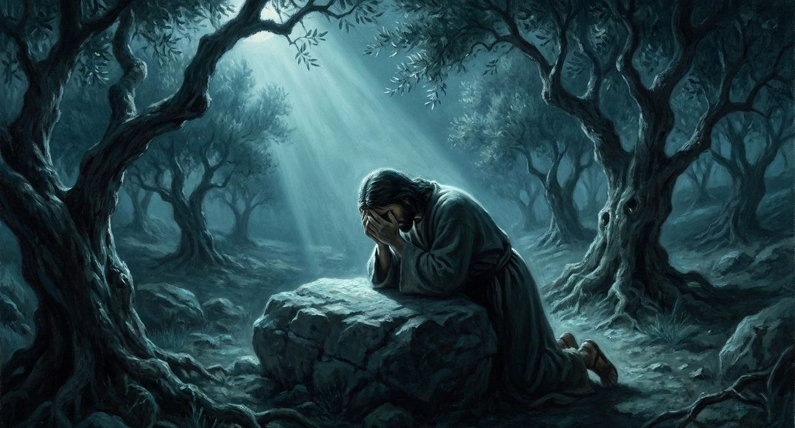
쓰는 장(표지 카드에서만, 다른 카드는 아래 말이 있어야 함): 마태복음 26장, 마가복음 14장, 누가복음 22장
카드 글에 이 말이 있으면: 겟세마네 · 땀이 땅에 떨어지는 핏방울 · 이 잔을 내게서
용도: 사건 장면
태그: prayer, olive_tree, night_sky, jesus
지금 쓰인 카드: 없음
예비 자리: 365 291일 마태복음 26–28장 (원고 전) · 365 297일 마가복음 14–16장 (원고 전) · 365 306일 누가복음 22–24장 (원고 있음, 그 장면 말이 아직 없음)
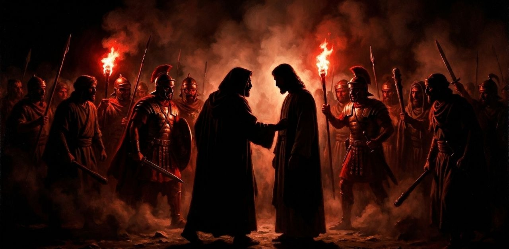
쓰는 장(표지 카드에서만, 다른 카드는 아래 말이 있어야 함): 마태복음 26장, 마가복음 14장, 누가복음 22장, 요한복음 18장
카드 글에 이 말이 있으면: 입맞추어 넘기 · 입맞추는 자 · 검과 몽치 · 등과 횃불 · 예수님이 잡히 · 칼을 칼집에
용도: 사건 장면
태그: torch, soldiers, kiss, night_sky
쓰인 카드 2장 보기
- 365 306일 2027판 · 누가복음 22–24장 · 4번째 카드 — 긴장 · 멀찍이 · 멀찍이 따라간 사람
- 365 316일 2027판 · 요한복음 18–21장 · 2번째 카드 — 배경 · 칼을 칼집에 · 동산에서 빼어 든 칼
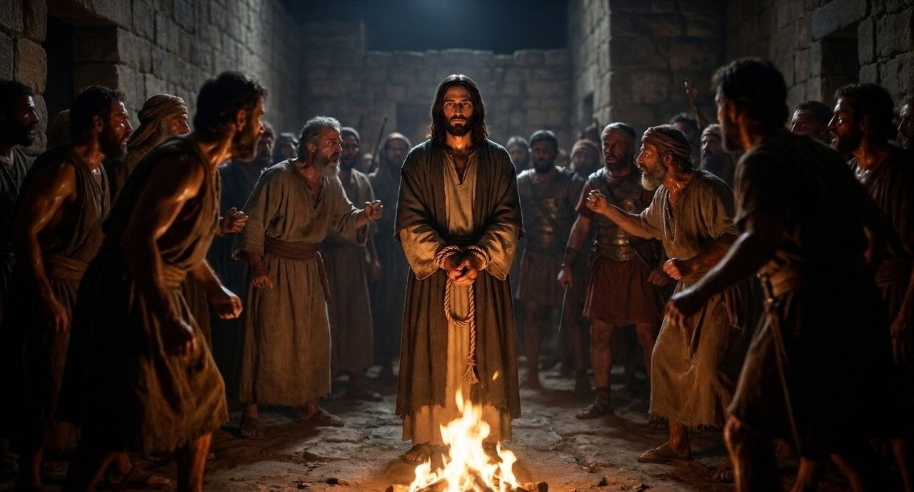
쓰는 장(표지 카드에서만, 다른 카드는 아래 말이 있어야 함): 마태복음 26장, 마가복음 14장, 누가복음 22장, 요한복음 18장
카드 글에 이 말이 있으면: 불을 쬐 · 대제사장의 집 뜰 · 대제사장의 뜰
이 말이 있으면 쓰지 않음: 아가보
용도: 사건 장면
태그: fire, courtyard, bound, night_sky
쓰인 카드 1장 보기
- 365 316일 2027판 · 요한복음 18–21장 · 6번째 카드 — 긴장 · 불 곁에서 · 불을 쬐며, 다시
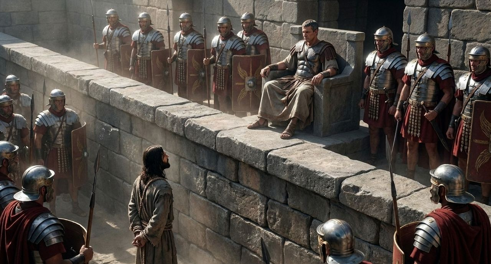
쓰는 장(표지 카드에서만, 다른 카드는 아래 말이 있어야 함): 마태복음 27장, 마가복음 15장, 누가복음 23장, 요한복음 18–19장
카드 글에 이 말이 있으면: 빌라도 · 재판석에 앉 · 총독이 물어
용도: 사건 장면
태그: governor, soldiers, judgment_seat
지금 쓰인 카드: 없음
예비 자리: 365 291일 마태복음 26–28장 (원고 전) · 365 297일 마가복음 14–16장 (원고 전) · 365 306일 누가복음 22–24장 (원고 있음, 그 장면 말이 아직 없음) · 365 316일 요한복음 18–21장 (원고 있음, 그 장면 말이 아직 없음)
쓰는 장(표지 카드에서만, 다른 카드는 아래 말이 있어야 함): 마태복음 27장, 마가복음 15장, 요한복음 19장
카드 글에 이 말이 있으면: 가시관 · 자색 옷 · 홍포 · 유대인의 왕이여 평안
용도: 사건 장면
태그: crown_of_thorns, robe, jesus
지금 쓰인 카드: 없음
예비 자리: 365 291일 마태복음 26–28장 (원고 전) · 365 297일 마가복음 14–16장 (원고 전) · 365 316일 요한복음 18–21장 (원고 있음, 그 장면 말이 아직 없음)
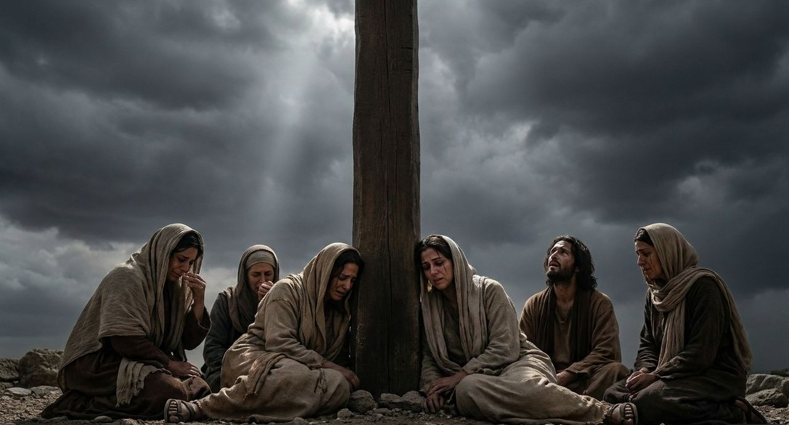
쓰는 장(표지 카드에서만, 다른 카드는 아래 말이 있어야 함): 마태복음 27장, 마가복음 15장, 누가복음 23장, 요한복음 19장
카드 글에 이 말이 있으면: 멀리서 바라보 · 십자가 곁에는 · 여자들이 멀리서 · 멀리 서서 이 일을
용도: 사건 장면
태그: women, cross, sorrow
쓰인 카드 1장 보기
- 365 306일 2027판 · 누가복음 22–24장 · 5번째 카드 — 긴장 · 멀리 서서 · 멀리 서서 이 일을 보니라
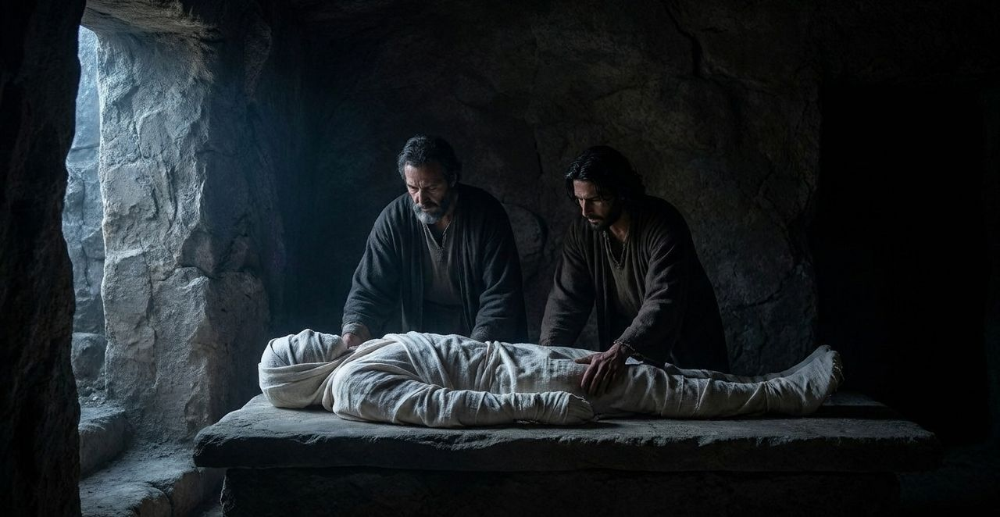
쓰는 장(표지 카드에서만, 다른 카드는 아래 말이 있어야 함): 마태복음 27장, 마가복음 15장, 누가복음 23장, 요한복음 19장
카드 글에 이 말이 있으면: 세마포로 싸 · 아리마대 사람 요셉 · 아리마대 요셉 · 몰약과 침향
용도: 사건 장면
태그: linen, burial, tomb
지금 쓰인 카드: 없음
예비 자리: 365 291일 마태복음 26–28장 (원고 전) · 365 297일 마가복음 14–16장 (원고 전) · 365 306일 누가복음 22–24장 (원고 있음, 그 장면 말이 아직 없음) · 365 316일 요한복음 18–21장 (원고 있음, 그 장면 말이 아직 없음)
쓰는 장(표지 카드에서만, 다른 카드는 아래 말이 있어야 함): 마태복음 28장, 마가복음 16장, 누가복음 24장, 요한복음 20장
카드 글에 이 말이 있으면: 빈 무덤 · 세마포가 놓 · 머리를 쌌던 수건
용도: 사건 장면
태그: rock_tomb, linen, sunrise_light_rays
지금 쓰인 카드: 없음
예비 자리: 365 291일 마태복음 26–28장 (원고 전) · 365 297일 마가복음 14–16장 (원고 전) · 365 306일 누가복음 22–24장 (원고 있음, 그 장면 말이 아직 없음) · 365 316일 요한복음 18–21장 (원고 있음, 그 장면 말이 아직 없음)
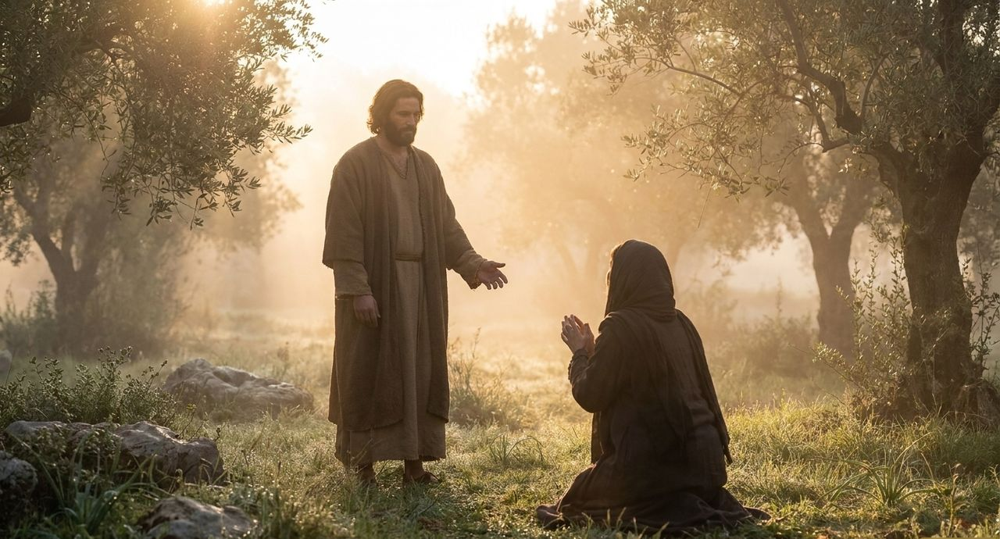
쓰는 장(표지 카드에서만, 다른 카드는 아래 말이 있어야 함): 요한복음 20장, 마태복음 28장
카드 글에 이 말이 있으면: 막달라 마리아 · 마리아야 · 랍오니 · 동산지기 · 나를 붙들지 말라
용도: 사건 장면
태그: garden, woman, jesus, dawn
지금 쓰인 카드: 없음
예비 자리: 365 291일 마태복음 26–28장 (원고 전) · 365 316일 요한복음 18–21장 (원고 있음, 그 장면 말이 아직 없음)
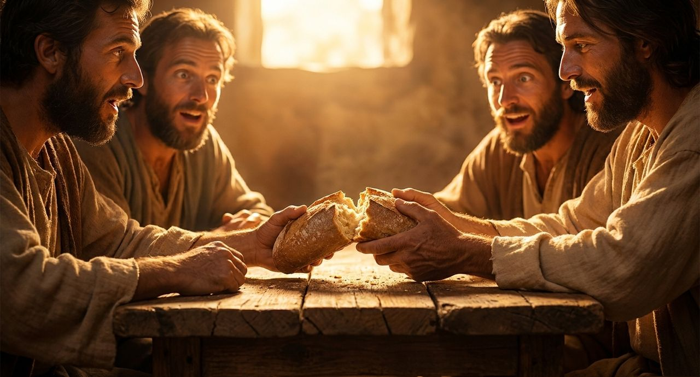
쓰는 장(표지 카드에서만, 다른 카드는 아래 말이 있어야 함): 누가복음 24장
카드 글에 이 말이 있으면: 엠마오 · 떡을 가지사 축사하시고 떼어 · 눈이 밝아져
용도: 사건 장면
태그: bread, table, disciples, jesus
쓰인 카드 1장 보기
- 365 306일 2027판 · 누가복음 22–24장 · 8번째 카드 — 전환 · 떡을 떼실 때
쓰는 장(표지 카드에서만, 다른 카드는 아래 말이 있어야 함): 요한복음 21장
카드 글에 이 말이 있으면: 숯불 · 디베랴 호수 · 조반을 먹으라 · 내 양을 먹이라 · 나를 사랑하느냐
용도: 사건 장면
태그: charcoal_fire, fish, bread, sea, jesus
쓰인 카드 1장 보기
- 365 316일 2027판 · 요한복음 18–21장 · 1번째 카드 — 불 곁의 세 번, 숯불 곁의 세 번
쓰는 장(표지 카드에서만, 다른 카드는 아래 말이 있어야 함): 요한복음 2장
카드 글에 이 말이 있으면: 항아리에 물을 · 아귀까지 · 물을 채우
용도: 사건 장면
태그: clay_jar, water, servants
지금 쓰인 카드: 없음
예비 자리: 365 307일 요한복음 1–2장 (원고 있음, 그 장면 말이 아직 없음)
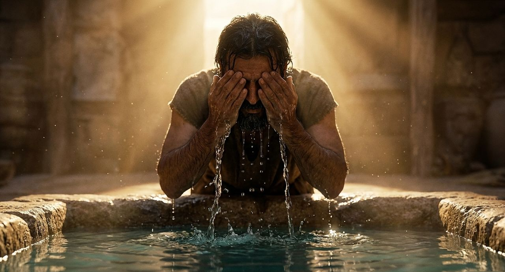
쓰는 장(표지 카드에서만, 다른 카드는 아래 말이 있어야 함): 요한복음 9장
카드 글에 이 말이 있으면: 실로암 · 가서 씻으라 · 씻고 밝은 눈
이 말이 있으면 쓰지 않음: 망대
용도: 사건 장면
태그: pool, water, blind_man
쓰인 카드 1장 보기
- 365 311일 2027판 · 요한복음 9–10장 · 3번째 카드 — 배경 · 실로암 · 가서 씻고
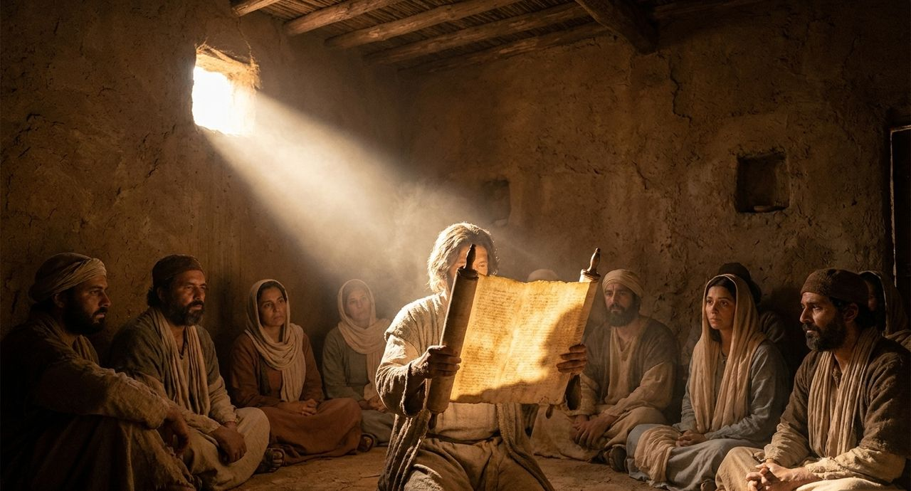
쓰는 장(표지 카드에서만, 다른 카드는 아래 말이 있어야 함): 에스겔 8장, 에스겔 14장, 에스겔 20장, 사도행전 28장, 예레미야 36장
카드 글에 이 말이 있으면: 셋집에 · 장로들이 내 앞에 앉 · 책을 낭독 · 두루마리를 낭독
용도: 사건 장면
태그: scroll, elder, house, crowd
쓰인 카드 1장 보기
- 365 326일 2027판 · 사도행전 25–28장 · 11번째 카드 — 의미 · 담대하게 거침없이 · 로마의 셋집에서
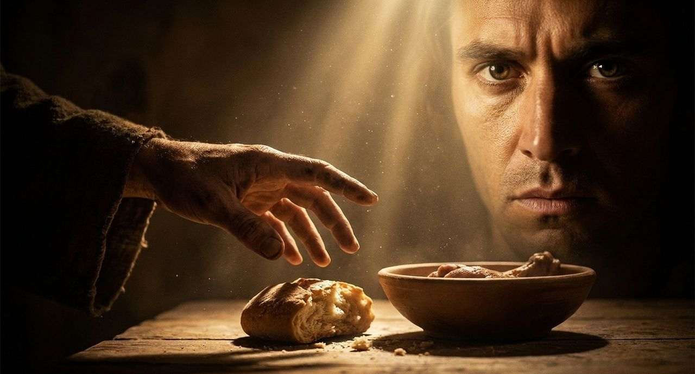
쓰는 장(표지 카드에서만, 다른 카드는 아래 말이 있어야 함): 창세기 25장, 히브리서 12장
카드 글에 이 말이 있으면: 팥죽 · 장자의 명분
용도: 사건 장면
태그: bread, bowl, hands, man
지금 쓰인 카드: 없음
예비 자리: 365 8일 창세기 24–25장 (원고 있음, 그 장면 말이 아직 없음) · 365 353일 히브리서 11–13장 (원고 있음, 그 장면 말이 아직 없음) · 리딩지저스 291일 히브리서 10–13장 (원고 있음, 그 장면 말이 아직 없음)
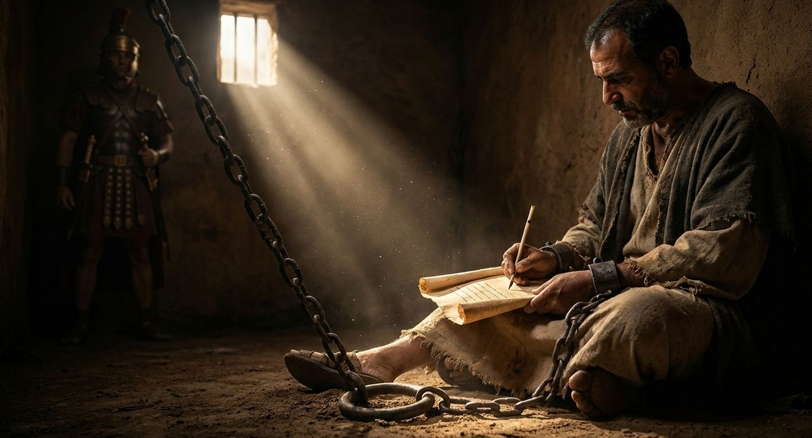
쓰는 장(표지 카드에서만, 다른 카드는 아래 말이 있어야 함): 사도행전 28장, 에베소서 3–4장, 에베소서 6장, 빌립보서 1장, 골로새서 4장, 디모데후서 1–2장, 빌레몬서 1장
카드 글에 이 말이 있으면: 쇠사슬에 매 · 사슬에 매 · 갇힌 자 된 나 · 매인 것
이 말이 있으면 쓰지 않음: 베드로
용도: 사건 장면
태그: chains, prison, scroll, soldier
쓰인 카드 3장 보기
- 365 350일 2027판 · 빌레몬서 · 1번째 카드 — 무익에서 유익으로, 종에서 형제로
- 리딩지저스 41주차 1일째 · 골로새서 1–4장 · 1번째 카드 — 받은 예수를 따라 어떻게 살까요?
- 리딩지저스 41주차 5일째 · 디모데후서 1–4장 · 2번째 카드 — 권면 · 부끄러워하지 말고 · 복음과 함께 고난을
쓰는 장(표지 카드에서만, 다른 카드는 아래 말이 있어야 함): 누가복음 24장
카드 글에 이 말이 있으면: 엠마오 · 길 가는 자들 · 동행하시
용도: 사건 장면
태그: road, sunset, disciples, jesus
쓰인 카드 1장 보기
- 365 306일 2027판 · 누가복음 22–24장 · 6번째 카드 — 긴장 · 엠마오로 가는 길 · 가까이 이르러 동행하시나
쓰는 장(표지 카드에서만, 다른 카드는 아래 말이 있어야 함): 창세기 16장, 창세기 21장
카드 글에 이 말이 있으면: 하갈 · 샘물 곁 · 물이 떨어진지라 · 브엘라해로이
용도: 사건 장면
태그: woman, well, desert, sorrow
쓰인 카드 1장 보기
- 365 5일 2027판 · 창세기 12–16장 · 1번째 카드 — 궁으로 간 사래, 광야로 도망한 하갈
쓰는 장(표지 카드에서만, 다른 카드는 아래 말이 있어야 함): 사도행전 27장, 요나 1장
카드 글에 이 말이 있으면: 밀을 바다에 · 배를 가볍게 · 바다에 던져 · 바다에 버리
용도: 사건 장면
태그: ship, sea, grain
지금 쓰인 카드: 없음
예비 자리: 365 270일 오바댜 · 요나 1–4장 (원고 전) · 365 326일 사도행전 25–28장 (원고 있음, 그 장면 말이 아직 없음) · 리딩지저스 258일 사도행전 27–28장 (원고 있음, 그 장면 말이 아직 없음)
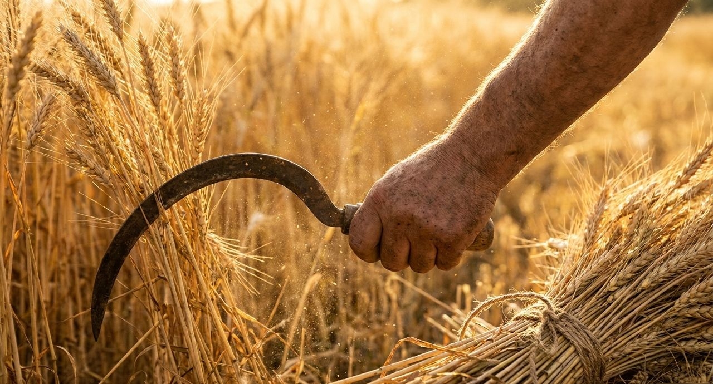
쓰는 장(표지 카드에서만, 다른 카드는 아래 말이 있어야 함): 룻기 2장, 요엘 3장, 요한계시록 14장, 요한복음 4장
카드 글에 이 말이 있으면: 낫을 대 · 낫을 쓰 · 곡식을 베 · 추수하는 자
용도: 사건 장면
태그: sickle, wheat_field, harvest, hands
지금 쓰인 카드: 없음
예비 자리: 365 86일 룻기 1–4장 (원고 전) · 365 266일 요엘 1–3장 (원고 전) · 365 308일 요한복음 3–4장 (원고 있음, 그 장면 말이 아직 없음) · 365 363일 요한계시록 10–14장 (원고 있음, 그 장면 말이 아직 없음)

시대: 자연·하늘, 왕국, 분열·포로
용도: 장소·생활 배경
태그: city_gate, door, sunrise_light_rays
쓰인 카드 21장 보기
- 365 2일 2027판 · 창세기 3–5장 · 12번째 카드 — 의미 · 책임을 묻고 생명을 지키시다 · 물으시고, 입히시고, 지키시는 분
- 365 9일 2027판 · 창세기 26–28장 · 12번째 카드 — 의미 · 응답보다 먼저 주어진 약속 · 서원보다 먼저 있던 약속
- 365 16일 2027판 · 창세기 42–45장 · 12번째 카드 — 의미 · 살아 있다는 소식 · 살아 있다는 소식
- 365 21일 2027판 · 출애굽기 5–6장 · 6번째 카드 — 전환 · 내가 듣고
- 365 30일 2027판 · 출애굽기 28–29장 · 8번째 카드 — 전환 · 이마의 글 · 여호와께 성결
- 365 35일 2027판 · 레위기 1–6장 · 10번째 카드 — 의미 · 여호와께 신실하지 못하여 · 이웃에게 한 일, 여호와 앞의 일
- 365 41일 2027판 · 레위기 21–22장 · 7번째 카드 — 전환 · 너희를 거룩하게 하는 여호와
- 365 46일 2027판 · 민수기 5–6장 · 6번째 카드 — 전환 · 여호와께 거룩한 자
- 365 58일 2027판 · 신명기 5–8장 · 11번째 카드 — 의미 · 기억할 분 · 종 되었던 집에서 이끌어 내신 여호와
- 365 311일 2027판 · 요한복음 9–10장 · 9번째 카드 — 긴장 · 쫓아내어 보내니라 · 우리를 가르치느냐
- 365 322일 2027판 · 사도행전 13–15장 · 8번째 카드 — 전환 · 함께 행하신 모든 일
- 365 327일 2027판 · 로마서 1–3장 · 1번째 카드 — 진노가 나타나고, 이제는 의가
- 365 335일 2027판 · 고린도전서 15–16장 · 8번째 카드 — 전환 · 첫 열매 뒤에 · 차례대로
- 365 340일 2027판 · 갈라디아서 1–2장 · 7번째 카드 — 전환 · 나를 부르신 이
- 365 345일 2027판 · 데살로니가전서 1–5장 · 11번째 카드 — 의미 · 그가 또한 이루시리라 · 기다림을 채우시는 분
- 365 350일 2027판 · 빌레몬서 · 6번째 카드 — 전환 · 사랑 받는 형제
- 365 355일 2027판 · 베드로전서 1–5장 · 9번째 카드 — 전환 · 그리스도의 고난에 참여
- 365 360일 2027판 · 요한계시록 1–3장 · 12번째 카드 — 의미 · 촛대 사이에서 · 보내시는 이는 같은 분
- 365 222일 2028판 · 이사야 51–55장 · 6번째 카드 — 전환 · 나타내셨으므로 · 드러난 거룩한 팔
- 리딩지저스 36주차 1일째 · 사도행전 1–3장 · 11번째 카드 — 의미 · 회개하고 돌이켜 · 두 설교의 끝
- 리딩지저스 36주차 6일째 · 사도행전 14–15장 · 10번째 카드 — 전환 · 주 예수의 은혜로

시대: 자연·하늘
용도: 자연·지형
태그: dew, grass, dawn, field
쓰인 카드 20장 보기
- 365 4일 2027판 · 창세기 10–11장 · 6번째 카드 — 전환 · 내려오신 여호와 · 11:5
- 365 16일 2027판 · 창세기 42–45장 · 8번째 카드 — 전환 · 내가 대신 남겠습니다
- 365 51일 2027판 · 민수기 18–19장 · 4번째 카드 — 전환 · 함께 담당할 죄
- 365 317일 2027판 · 사도행전 1–2장 · 9번째 카드 — 의미 · 약속하신 것 · 기다리라 하신 그것
- 365 325일 2027판 · 사도행전 21–24장 · 12번째 카드 — 의미 · 나의 일을 증언한 · 미뤄지는 처결
- 365 330일 2027판 · 로마서 12–16장 · 8번째 카드 — 전환 · 서로 받으라
- 365 336일 2027판 · 고린도후서 1–2장 · 8번째 카드 — 전환 · 그리스도 안에서 예가 되니
- 365 337일 2027판 · 고린도후서 3–7장 · 11번째 카드 — 의미 · 날로 새로워지도다 · 심히 큰 능력은 하나님께
- 365 347일 2027판 · 디모데전서 1–6장 · 6번째 카드 — 전환 · 괴수가 본이 되다 · 먼저 보이신 오래 참으심
- 365 353일 2027판 · 히브리서 11–13장 · 11번째 카드 — 의미 · 어제나 오늘이나 · 이름들의 줄이 바라보는 분
- 365 358일 2027판 · 요한일서 4–5장 · 6번째 카드 — 전환 · 먼저
- 리딩지저스 36주차 5일째 · 사도행전 11–13장 · 8번째 카드 — 전환 · 헤롯의 손에서
- 리딩지저스 37주차 4일째 · 사도행전 23–24장 · 8번째 카드 — 전환 · 같은 소망
- 리딩지저스 38주차 5일째 · 로마서 12–14장 · 3번째 카드 — 주장 · 한 몸 · 서로 지체가 되었느니라
- 리딩지저스 39주차 4일째 · 고린도전서 13–16장 · 11번째 카드 — 권면 · 수고가 헛되지 않음 · 그러므로, 주의 일에
- 리딩지저스 40주차 4일째 · 에베소서 1–3장 · 7번째 카드 — 전환 · 막힌 담이 허물어지다
- 리딩지저스 41주차 6일째 · 디도서 1장 – 빌레몬서 1장 · 14번째 카드 — 권면 · 나를 동역자로 알진대 · 그를 영접하기를 내게 하듯
- 리딩지저스 42주차 4일째 · 히브리서 10–13장 · 10번째 카드 — 의미 · 나아가자 · 휘장 안으로, 영문 밖으로
- 리딩지저스 43주차 5일째 · 요한이서 1장 – 요한삼서 1장 · 5번째 카드 — 근거 · 미혹하는 자 · 육체로 오심을 부인하는 자
- 리딩지저스 45주차 6일째 · 요한계시록 22장 · 5번째 카드 — 들은 것 · 천사의 대답 · 하나님께 경배하라
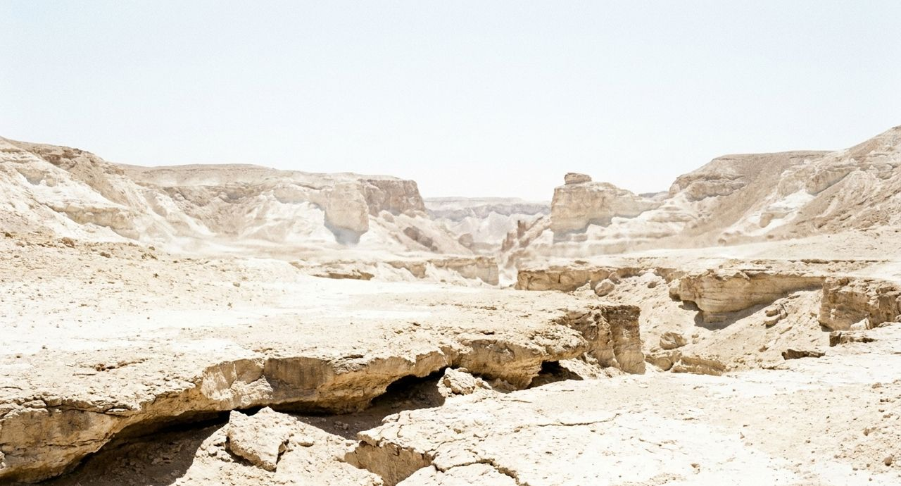
시대: 자연·하늘
용도: 자연·지형
태그: desert, canyon, noon
쓰인 카드 8장 보기
- 365 4일 2027판 · 창세기 10–11장 · 8번째 카드 — 전환 · 멈춘 도시 · 11:8–9 · 흩어지지 않으려 했지만
- 365 55일 2027판 · 민수기 31–33장 · 4번째 카드 — 긴장 · 목축할 만한 땅 · 길르앗 땅을 본즉
- 리딩지저스 38주차 3일째 · 로마서 7–8장 · 7번째 카드 — 주장 · 그러므로 이제 · 결코 정죄함이 없나니
- 리딩지저스 39주차 3일째 · 고린도전서 9–12장 · 6번째 카드 — 권면 · 나의 유익보다 · 남의 유익을 구하라
- 리딩지저스 40주차 5일째 · 에베소서 4–6장 · 9번째 카드 — 권면 · 가족과 일터 · 자녀에게도 주 안에서
- 리딩지저스 41주차 4일째 · 디모데전서 1–6장 · 8번째 카드 — 근거 · 자기 가족을 · 돌보지 아니하면
- 리딩지저스 42주차 2일째 · 히브리서 4–6장 · 6번째 카드 — 권면 · 들어가기를 힘쓸지니 · 저 순종하지 아니하는 본에
- 리딩지저스 43주차 6일째 · 유다서 1장 · 9번째 카드 — 권면 · 하나님의 사랑 안에서 · 긍휼을 기다리라
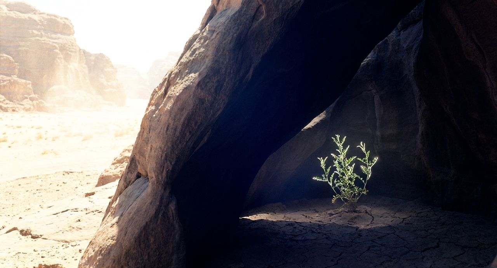
시대: 자연·하늘
용도: 자연·지형
태그: rock, shade, desert, plant
쓰인 카드 11장 보기
- 365 4일 2027판 · 창세기 10–11장 · 4번째 카드 — 긴장 · 시날 평지 · 11:2–3 · 벽돌을 굽는 사람들
- 365 305일 2027판 · 누가복음 20–21장 · 7번째 카드 — 긴장 · 이 돌 위에 · 떨어지는 돌
- 365 337일 2027판 · 고린도후서 3–7장 · 8번째 카드 — 전환 · 당하여도, 아니하며 · 우겨쌈을 당하여도
- 리딩지저스 37주차 4일째 · 사도행전 23–24장 · 9번째 카드 — 전환 · 이 한 소리 · 다시 꺼낸 말
- 리딩지저스 38주차 4일째 · 로마서 9–11장 · 9번째 카드 — 권면 · 네 말이 · 옳도다, 그러나
- 리딩지저스 39주차 3일째 · 고린도전서 9–12장 · 11번째 카드 — 권면 · 분쟁 대신 · 서로 같이 돌보게
- 리딩지저스 40주차 3일째 · 갈라디아서 1–6장 · 11번째 카드 — 권면 · 편지의 끝 · 중요한 것은 무엇인가
- 리딩지저스 41주차 4일째 · 디모데전서 1–6장 · 12번째 카드 — 권면 · 부한 자들에게 · 나누어 주기를 좋아하며
- 리딩지저스 42주차 2일째 · 히브리서 4–6장 · 4번째 카드 — 전환 · 다시 어느 날을 · 오늘이라고
- 리딩지저스 43주차 4일째 · 요한일서 4–5장 · 9번째 카드 — 근거 · 먼저 우리를 사랑 · 그가 먼저
- 리딩지저스 45주차 6일째 · 요한계시록 22장 · 2번째 카드 — 들은 것 · 참된 말씀 · 반드시 속히 되어질 일을

시대: 자연·하늘, 왕국, 분열·포로
용도: 장소·생활 배경
태그: city_wall, oil_lamp, dusk
쓰인 카드 6장 보기
- 365 18일 2027판 · 창세기 48–50장 · 2번째 카드 — 배경 · 복을 주셨던 하나님 · 아들에게 들려주는 하나님의 약속
- 365 302일 2027판 · 누가복음 12–13장 · 7번째 카드 — 전환 · 하나님께 대하여 · 누구를 위하여 쌓았나
- 365 313일 2027판 · 요한복음 13–14장 · 6번째 카드 — 긴장 · 올 수 없다 · 작은 자들아
- 365 339일 2027판 · 고린도후서 10–13장 · 11번째 카드 — 의미 · 그리스도의 능력이 머물게 · 자랑이 바뀐 자리
- 365 351일 2027판 · 히브리서 1–6장 · 10번째 카드 — 의미 · 그러므로 · 깊이 생각하라
- 365 96일 2028판 · 사무엘상 24–26장 · 6번째 카드 — 긴장 · 맹세를 받은 왕 · 울며 맹세를 받다
시대: 자연·하늘
용도: 자연·지형
태그: night_sky, star, hill
쓰인 카드 6장 보기
- 리딩지저스 37주차 5일째 · 사도행전 25–26장 · 6번째 카드 — 긴장 · 정오의 길 · 그가 박해한 이는 누구입니까?
- 리딩지저스 40주차 2일째 · 고린도후서 10–13장 · 10번째 카드 — 권면 · 누구를 시험할 것인가 · 시험을 돌려받은 교회
- 리딩지저스 41주차 1일째 · 골로새서 1–4장 · 7번째 카드 — 권면 · 함께 살아났으니
- 리딩지저스 43주차 6일째 · 유다서 1장 · 5번째 카드 — 근거 · 이익을 위하여 · 자랑하는 말과 아첨
- 리딩지저스 44주차 5일째 · 요한계시록 8–9장 · 6번째 카드 — 전환 · 남은 나팔들 · 화, 화, 화가 있으리니
- 리딩지저스 45주차 3일째 · 요한계시록 16–17장 · 7번째 카드 — 들은 것 · 짐승의 끝 · 멸망으로 들어갈 자니

시대: 자연·하늘
용도: 자연·지형
태그: moon, desert, night_sky, rock
쓰인 카드 17장 보기
- 365 3일 2027판 · 창세기 6–9장 · 10번째 카드 — 전환 · 다시 주신 복 · 8:22–9:1 · 생육하고 번성하여
- 365 9일 2027판 · 창세기 26–28장 · 9번째 카드 — 전환 · 함께하고 돌아오게 하리라
- 365 17일 2027판 · 창세기 46–47장 · 2번째 카드 — 배경 · 브엘세바에 멈춘 길 · 브엘세바의 밤
- 365 23일 2027판 · 출애굽기 10–11장 · 11번째 카드 — 의미 · 구별하시는 여호와 · 애굽 사람과 이스라엘 사이
- 365 172일 2027판 · 시편 8–14편 · 7번째 카드 — 의미 · 두 번의 '주의 손' · 하늘을 지으신 손, 맡기신 손
- 365 302일 2027판 · 누가복음 12–13장 · 6번째 카드 — 전환 · 오늘 밤
- 365 308일 2027판 · 요한복음 3–4장 · 12번째 카드 — 의미 · 세상의 구주 · "세상을 이처럼", "세상의 구주"
- 365 313일 2027판 · 요한복음 13–14장 · 7번째 카드 — 긴장 · 어디로 가시나이까 · 세 번 나를 부인하리라
- 365 323일 2027판 · 사도행전 16–18장 · 4번째 카드 — 긴장 · 드로아의 밤 · 건너와서 우리를 도우라
- 365 329일 2027판 · 로마서 9–11장 · 12번째 카드 — 의미 · 깊도다 · 근심에서 찬송으로
- 365 344일 2027판 · 골로새서 1–4장 · 3번째 카드 — 배경 · 만물이 그에게서 · 처음 나오는 만물
- 365 353일 2027판 · 히브리서 11–13장 · 2번째 카드 — 배경 · 나의 의인은 · 믿음은
- 리딩지저스 37주차 1일째 · 사도행전 16–18장 · 7번째 카드 — 전환 · 간수의 집 · 그 밤, 맞은 자리를 씻다
- 리딩지저스 37주차 6일째 · 사도행전 27–28장 · 6번째 카드 — 전환 · 어제 밤에 · 하나님의 사자가 한 말
- 리딩지저스 41주차 5일째 · 디모데후서 1–4장 · 7번째 카드 — 권면 · 그러나 너는 · 배우고 확신한 일에 거하라
- 리딩지저스 44주차 1일째 · 요한계시록 1장 · 6번째 카드 — 본 것 · 촛대 사이 · 인자 같은 이가
- 리딩지저스 45주차 1일째 · 요한계시록 12–13장 · 2번째 카드 — 본 것 · 하늘의 이적 · 해를 옷 입은 여자

시대: 자연·하늘, 시·지혜·일상
용도: 장소·생활 배경
태그: village, night_sky, oil_lamp, house
쓰인 카드 9장 보기
- 365 23일 2027판 · 출애굽기 10–11장 · 7번째 카드 — 전환 · 빛이 있었더라
- 365 172일 2027판 · 시편 8–14편 · 5번째 카드 — 전환 · 가운데 물음
- 365 303일 2027판 · 누가복음 14–16장 · 10번째 카드 — 의미 · 나와서 권하는 아버지 · 즐거워하는 것이 마땅하다
- 365 313일 2027판 · 요한복음 13–14장 · 1번째 카드 — 주여, 어디로 가시나이까
- 365 325일 2027판 · 사도행전 21–24장 · 8번째 카드 — 전환 · 그 날 밤
- 365 343일 2027판 · 빌립보서 1–4장 · 6번째 카드 — 긴장 · 살든지 죽든지 · 그 둘 사이에
- 365 348일 2027판 · 디모데후서 1–4장 · 5번째 카드 — 전환 · 내가 의탁한 것 · 지키실 줄을 확신함이라
- 365 357일 2027판 · 요한일서 1–3장 · 4번째 카드 — 긴장 · 죄가 없다고 · 죄에 관한 두 말
- 리딩지저스 37주차 1일째 · 사도행전 16–18장 · 11번째 카드 — 전환 · 고린도 · 두려워하지 말고 말하라
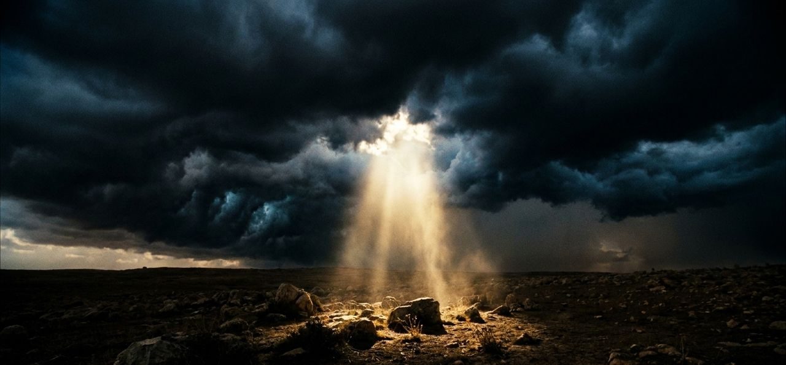
시대: 자연·하늘
용도: 자연·지형
태그: storm_sky, light, field
쓰인 카드 13장 보기
- 365 52일 2027판 · 민수기 20–21장 · 8번째 카드 — 전환 · 하나님의 판정
- 365 324일 2027판 · 사도행전 19–20장 · 8번째 카드 — 긴장 · 크다 아데미여 · 사람의 손으로 만든 것들
- 365 337일 2027판 · 고린도후서 3–7장 · 6번째 카드 — 긴장 · 질그릇의 형편 · 넉넉하지 않은 형편
- 리딩지저스 36주차 5일째 · 사도행전 11–13장 · 10번째 카드 — 전환 · 주의 사자가 곧 치니 · 영광을 돌리지 아니하므로
- 리딩지저스 37주차 2일째 · 사도행전 19–20장 · 4번째 카드 — 긴장 · 에베소의 소동 · 말씀이 흥왕하자
- 리딩지저스 38주차 4일째 · 로마서 9–11장 · 11번째 카드 — 근거 · 인자하심과 준엄하심 · 접붙이실 능력
- 리딩지저스 39주차 2일째 · 고린도전서 5–8장 · 7번째 카드 — 근거 · 값으로 사신 것 · 사람들의 종이 되지 말라
- 리딩지저스 40주차 1일째 · 고린도후서 7–9장 · 4번째 카드 — 근거 · 극심한 가난 · 가난이 풍성한 연보로
- 리딩지저스 40주차 6일째 · 빌립보서 1–4장 · 5번째 카드 — 근거 · 이 마음의 주인 · 그리스도 예수의 마음
- 리딩지저스 41주차 5일째 · 디모데후서 1–4장 · 4번째 카드 — 근거 · 갇혔지만 · 말씀은 매이지 않았습니다
- 리딩지저스 43주차 2일째 · 베드로후서 1–3장 · 4번째 카드 — 주장 · 교묘히 만든 이야기 · 친히 본 자라
- 리딩지저스 44주차 2일째 · 요한계시록 2–3장 · 5번째 카드 — [서머나교회] · 앞에 놓인 시련 · 장차 받을 고난을 두려워하지 말라
- 리딩지저스 45주차 3일째 · 요한계시록 16–17장 · 4번째 카드 — 본 것 · 금 잔을 든 여자 · 금과 보석과 진주로 꾸미고

시대: 자연·하늘
용도: 자연·지형
태그: fog, valley, mountain_peak, dawn
쓰인 카드 30장 보기
- 365 2일 2027판 · 창세기 3–5장 · 8번째 카드 — 전환 · 아벨의 행방을 물으시다 · 4:9–10 · 네 아우 아벨이 어디 있느냐
- 365 7일 2027판 · 창세기 21–23장 · 3번째 카드 — 배경 · 시험으로 시작된 부르심 · 22:1–2 · 시험하시려고
- 365 12일 2027판 · 창세기 34–35장 · 2번째 카드 — 배경 · 디나에게 일어난 일 · 세겜 성읍 앞에서
- 365 17일 2027판 · 창세기 46–47장 · 9번째 카드 — 의미 · 머무는 땅과 돌아갈 땅 · 머무는 땅, 돌아갈 땅
- 365 25일 2027판 · 출애굽기 14–15장 · 9번째 카드 — 전환 · 우리가 도망하자 · 쫓아오던 군대가 도망하려 하다
- 365 36일 2027판 · 레위기 7–10장 · 2번째 카드 — 배경 · 시내 산에서 명령하신 규례 · 규례가 온 곳
- 365 43일 2027판 · 레위기 25–27장 · 9번째 카드 — 의미 · 나와 함께 있느니라 · 땅의 주인과 함께 사는 백성
- 365 50일 2027판 · 민수기 15–17장 · 5번째 카드 — 긴장 · 아침에 보이실 분 · 엎드렸다가 한 대답
- 365 55일 2027판 · 민수기 31–33장 · 2번째 카드 — 배경 · 미디안을 친 뒤 · 브올의 사건 뒤에
- 365 305일 2027판 · 누가복음 20–21장 · 8번째 카드 — 전환 · 아름다운 돌 · 돌 하나도 돌 위에
- 365 310일 2027판 · 요한복음 7–8장 · 9번째 카드 — 전환 · 정죄하지 아니하노니 · 여자만 남았더라
- 365 315일 2027판 · 요한복음 17장 · 10번째 카드 — 의미 · 그들 안에 · 기도가 끝에서 구하는 것
- 365 322일 2027판 · 사도행전 13–15장 · 2번째 카드 — 배경 · 따로 세우라 · 금식할 때에
- 365 327일 2027판 · 로마서 1–3장 · 9번째 카드 — 전환 · 이제는
- 365 332일 2027판 · 고린도전서 5–7장 · 11번째 카드 — 의미 · 주는 몸을 위하여 · 제한의 근거
- 365 339일 2027판 · 고린도후서 10–13장 · 9번째 카드 — 전환 · 약한 그 때에 · 그러므로 기뻐하노니
- 365 349일 2027판 · 디도서 1–3장 · 6번째 카드 — 전환 · 은혜가 나타나 · 우리를 양육하시되
- 365 354일 2027판 · 야고보서 1–5장 · 9번째 카드 — 의미 · 다시, 구하라 · 구할 곳은 위로부터
- 365 359일 2027판 · 요한이서 · 요한삼서 · 유다서 · 2번째 카드 — 배경 · 장로가 쓴 두 편지 · 진리로 말미암아
- 365 365일 2027판 · 요한계시록 19–22장 · 8번째 카드 — 전환 · 이리 오라 · 21장의 초대
- 리딩지저스 36주차 3일째 · 사도행전 6–8장 · 2번째 카드 — 배경 · 말씀 사역에 · 일곱 사람을 세우다
- 리딩지저스 37주차 2일째 · 사도행전 19–20장 · 11번째 카드 — 의미 · 배까지 배웅하다 · 무릎을 꿇고 기도합니다
- 리딩지저스 38주차 2일째 · 로마서 4–6장 · 5번째 카드 — 근거 · 바랄 수 없는 중에 · 죽은 것 같음을 알고도
- 리딩지저스 39주차 1일째 · 고린도전서 1–4장 · 8번째 카드 — 근거 · 심고 물을 주었으되
- 리딩지저스 39주차 6일째 · 고린도후서 4–6장 · 4번째 카드 — 근거 · 고난의 두 모습 · 우겨싸여도, 망하지 않는다
- 리딩지저스 40주차 4일째 · 에베소서 1–3장 · 6번째 카드 — 근거 · 이방인에게는 · 그 때에는 밖에 있었다
- 리딩지저스 41주차 2일째 · 데살로니가전서 1–5장 · 8번째 카드 — 권면 · 서로 위로하라 · 이러한 말로
- 리딩지저스 42주차 2일째 · 히브리서 4–6장 · 5번째 카드 — 전환 · 안식할 때가
- 리딩지저스 43주차 1일째 · 베드로전서 1–5장 · 2번째 카드 — 배경 · 흩어진 나그네 · 흩어진 나그네
- 리딩지저스 43주차 6일째 · 유다서 1장 · 11번째 카드 — 권면 · 불에서 끌어내어 · 구원하라
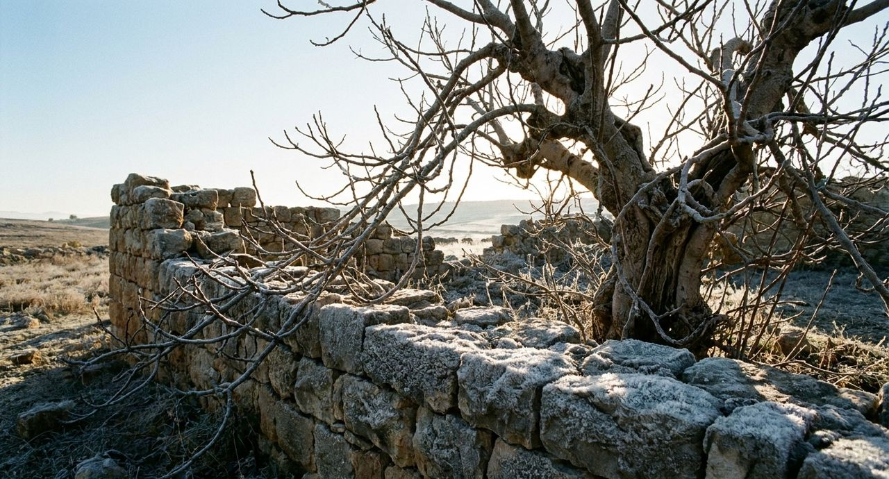
시대: 자연·하늘, 시·지혜·일상
용도: 자연·지형
태그: fig_tree, stone_wall, winter, frost
쓰인 카드 6장 보기
- 리딩지저스 38주차 5일째 · 로마서 12–14장 · 4번째 카드 — 근거 · 사랑에는 거짓이 없나니 · 악을 미워하고
- 리딩지저스 39주차 5일째 · 고린도후서 1–3장 · 8번째 카드 — 근거 · 사람에게서 나는 향기 · 그리스도의 향기
- 리딩지저스 40주차 5일째 · 에베소서 4–6장 · 3번째 카드 — 권면 · 하나 되게 하신 것을 · 성령이 하나 되게 하신 것
- 리딩지저스 41주차 2일째 · 데살로니가전서 1–5장 · 5번째 카드 — 권면 · 거룩한 삶 · 하나님이 원하시는 것
- 리딩지저스 43주차 5일째 · 요한이서 1장 – 요한삼서 1장 · 7번째 카드 — 요한삼서
- 리딩지저스 45주차 5일째 · 요한계시록 20–21장 · 5번째 카드 — 본 것 · 사망의 끝
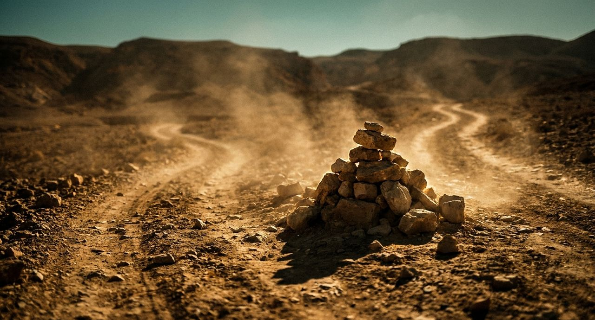
시대: 자연·하늘
용도: 자연·지형
태그: road, crossroads, cairn, desert
쓰인 카드 32장 보기
- 365 5일 2027판 · 창세기 12–16장 · 12번째 카드 — 의미 · 어려움을 겪는 두 사람을 살피시다 · 살피시는 하나님
- 365 10일 2027판 · 창세기 29–31장 · 9번째 카드 — 전환 · 돌아가라
- 365 16일 2027판 · 창세기 42–45장 · 10번째 카드 — 의미 · 형들이 팔았고, 하나님이 보내셨다 · 당신들이 아니요 하나님이시라
- 365 21일 2027판 · 출애굽기 5–6장 · 2번째 카드 — 배경 · 바로에게 전한 말씀 · 내 백성을 보내라
- 365 28일 2027판 · 출애굽기 21–24장 · 5번째 카드 — 전환 · 나그네였음이라
- 365 38일 2027판 · 레위기 13–15장 · 3번째 카드 — 규정 · 먼저 살펴봄 · 제사장이 진찰합니다
- 365 43일 2027판 · 레위기 25–27장 · 7번째 카드 — 전환 · 사람도 돌아감 · 종으로 부리지 말고
- 365 48일 2027판 · 민수기 9–10장 · 8번째 카드 — 긴장 · 우리의 눈이 되어 주소서 · 호밥에게 한 부탁
- 365 53일 2027판 · 민수기 22–25장 · 5번째 카드 — 긴장 · 싯딤에서 · 바알브올에게 가담하다
- 365 303일 2027판 · 누가복음 14–16장 · 3번째 카드 — 긴장 · 수군거림 · 죄인과 같이 먹는다
- 365 309일 2027판 · 요한복음 5–6장 · 11번째 카드 — 의미 · 이 말씀은 어렵도다 · 그 때부터
- 365 315일 2027판 · 요한복음 17장 · 5번째 카드 — 긴장 · 세상에 있사옵고 · 떠나는 아들, 남는 사람들
- 365 320일 2027판 · 사도행전 8–9장 · 6번째 카드 — 긴장 · 여전히 · 다메섹으로 가는 사울
- 365 327일 2027판 · 로마서 1–3장 · 7번째 카드 — 긴장 · 판단하는 사람에게도 · 외모로 취하지 아니하심
- 365 333일 2027판 · 고린도전서 8–10장 · 7번째 카드 — 전환 · 이 권리를 쓰지 아니하고
- 365 340일 2027판 · 갈라디아서 1–2장 · 2번째 카드 — 배경 · 다른 복음 · 이같이 속히 떠나
- 365 345일 2027판 · 데살로니가전서 1–5장 · 3번째 카드 — 배경 · 처음 나오는 강림 · 우상을 버리고, 섬기며, 기다리는
- 365 352일 2027판 · 히브리서 7–10장 · 5번째 카드 — 긴장 · 해마다 늘 드리는 · 되풀이되는 제사
- 365 358일 2027판 · 요한일서 4–5장 · 5번째 카드 — 전환 · 사랑은 여기 있으니 · 사랑이 나타난 자리
- 365 363일 2027판 · 요한계시록 10–14장 · 10번째 카드 — 의미 · 영원한 복음 · 만드신 이를 경배하라
- 365 28일 2028판 · 출애굽기 21–24장 · 7번째 카드 — 전환 · 네 앞서 보내어 · 네 앞서 보내리니
- 리딩지저스 36주차 3일째 · 사도행전 6–8장 · 10번째 카드 — 전환 · 광야 길 · 수레 위의 한 사람
- 리딩지저스 37주차 2일째 · 사도행전 19–20장 · 7번째 카드 — 전환 · 마치려 함에는
- 리딩지저스 38주차 1일째 · 로마서 1–3장 · 1번째 카드 — 모든 입을 막은 뒤, 이제는
- 리딩지저스 38주차 6일째 · 로마서 15–16장 · 2번째 카드 — 주장 · 서로 받으라 · 권면이 모이는 곳
- 리딩지저스 39주차 4일째 · 고린도전서 13–16장 · 1번째 카드 — 사랑이 없으면, 부활이 없다면
- 리딩지저스 40주차 2일째 · 고린도후서 10–13장 · 4번째 카드 — 근거 · 옳다고 인정받는 자
- 리딩지저스 41주차 3일째 · 데살로니가후서 1–3장 · 3번째 카드 — 근거 · 박해를 견디며 · 바울이 자랑하는 성도들
- 리딩지저스 42주차 1일째 · 히브리서 1–3장 · 3번째 카드 — 배경 · 천사보다 훨씬 · 더욱 아름다운 이름
- 리딩지저스 42주차 6일째 · 야고보서 4–5장 · 3번째 카드 — 긴장 · 잘못 구하기 때문이라 · 구하여도 받지 못함은
- 리딩지저스 43주차 4일째 · 요한일서 4–5장 · 3번째 카드 — 근거 · 하나님은 사랑이심이라 · 사랑하지 아니하는 자는
- 리딩지저스 44주차 5일째 · 요한계시록 8–9장 · 9번째 카드 — 긴장 · 이 재앙에 남은 사람들

시대: 자연·하늘, 왕국
용도: 장소·생활 배경
태그: stairs, olive_tree, city, road
쓰인 카드 20장 보기
- 365 1일 2027판 · 창세기 1–2장 · 5번째 카드 — 전환 · 좋지 않다고 하신 것 · 2:18
- 365 8일 2027판 · 창세기 24–25장 · 3번째 카드 — 배경 · 이삭의 아내를 찾으러 · 24:3–8 · 그 사자를 너보다 앞서
- 365 13일 2027판 · 창세기 36장 · 5번째 카드 — 긴장 · 함께 살 수 없었던 형제 · 가나안을 떠난 에서
- 365 20일 2027판 · 출애굽기 3–4장 · 10번째 카드 — 긴장 · 돌아가는 길의 위기 · 숙소에서 생긴 일
- 365 55일 2027판 · 민수기 31–33장 · 9번째 카드 — 전환 · 앞에서 가겠습니다 · 무장하고 앞에서
- 365 96일 2027판 · 사무엘상 24–26장 · 4번째 카드 — 긴장 · 굴 깊은 곳 · 24장 · 굴 깊은 곳에서
- 365 312일 2027판 · 요한복음 11–12장 · 4번째 카드 — 긴장 · 또 그리로 · 돌로 치려 하였는데
- 365 322일 2027판 · 사도행전 13–15장 · 5번째 카드 — 긴장 · 이고니온에서도 · 같은 순서가 다시
- 365 327일 2027판 · 로마서 1–3장 · 2번째 카드 — 배경 · 로마에 있는 너희에게 · 아직 가지 못한 곳
- 365 332일 2027판 · 고린도전서 5–7장 · 2번째 카드 — 배경 · 들리는 소식 · 오히려 교만하여져서
- 365 340일 2027판 · 갈라디아서 1–2장 · 1번째 카드 — 박해하던 자가 전하는 자로
- 365 347일 2027판 · 디모데전서 1–6장 · 2번째 카드 — 배경 · 에베소에 머물라 · 헛된 말에 빠져
- 365 355일 2027판 · 베드로전서 1–5장 · 2번째 카드 — 배경 · 흩어진 나그네 · 잠깐 근심하는 사람들
- 365 28일 2028판 · 출애굽기 21–24장 · 9번째 카드 — 의미 · 비교해 보기 · 같은 '원수', 서로 다른 대상
- 365 96일 2028판 · 사무엘상 24–26장 · 5번째 카드 — 긴장 · 오지 않은 '그 날' · 자기 길로 간 왕
- 리딩지저스 36주차 5일째 · 사도행전 11–13장 · 3번째 카드 — 배경 · 안디옥 · 주의 손이 함께
- 리딩지저스 38주차 6일째 · 로마서 15–16장 · 1번째 카드 — 막혔던 길, 힘을 같이하여
- 리딩지저스 40주차 3일째 · 갈라디아서 1–6장 · 9번째 카드 — 권면 · 성령을 따라 · 무엇을 따라 걸을까
- 리딩지저스 41주차 6일째 · 디도서 1장 – 빌레몬서 1장 · 5번째 카드 — 권면 · 오직 너는 · 바른 교훈에 합당한 것
- 리딩지저스 42주차 4일째 · 히브리서 10–13장 · 2번째 카드 — 배경 · 새로운 살 길 · 휘장 가운데로 열어 놓으신
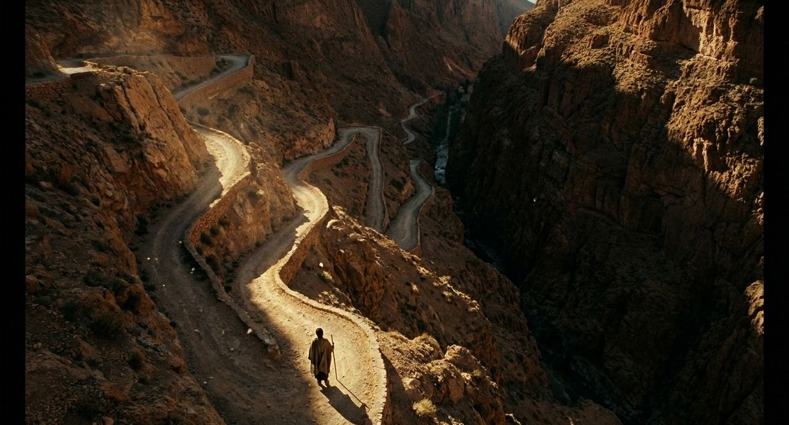
시대: 자연·하늘
용도: 자연·지형
태그: canyon, road, man
쓰인 카드 29장 보기
- 365 9일 2027판 · 창세기 26–28장 · 7번째 카드 — 긴장 · 어머니의 피신 권고와 아버지의 축복 · 리브가는 피신을 권하고, 이삭은 축복하며 보내다
- 365 14일 2027판 · 창세기 37–39장 · 9번째 카드 — 긴장 · 가려진 얼굴, 맡겨진 물건 · 38:14–23 · 염소 새끼 대신 도장과 지팡이
- 365 20일 2027판 · 출애굽기 3–4장 · 12번째 카드 — 의미 · 말씀을 전하게 하시는 분 · 하나님이 살피셨다는 소식을 듣고
- 365 28일 2027판 · 출애굽기 21–24장 · 8번째 카드 — 전환 · 법을 듣고 한 응답 · 말씀을 듣고 거듭한 다짐
- 365 38일 2027판 · 레위기 13–15장 · 4번째 카드 — 규정 · 시간이 지난 뒤 · 다시 살피는 이레
- 365 45일 2027판 · 민수기 3–4장 · 8번째 카드 — 전환 · 맏이를 세다 · 처음 태어난 남자의 명수
- 365 59일 2027판 · 신명기 9–11장 · 9번째 카드 — 전환 · 처음 판에 쓴 말
- 365 301일 2027판 · 누가복음 10–11장 · 1번째 카드 — 무엇을 하여야, 그리고 듣는 사람
- 365 322일 2027판 · 사도행전 13–15장 · 7번째 카드 — 전환 · 돌아가서 · 이번에는 지나온 성으로
- 365 328일 2027판 · 로마서 4–8장 · 5번째 카드 — 긴장 · 사망이 왕 노릇 · 아담으로부터 모세까지
- 365 334일 2027판 · 고린도전서 11–14장 · 4번째 카드 — 긴장 · 다 방언을 말하는 자이겠느냐 · 더욱 큰 은사를 사모하라
- 365 338일 2027판 · 고린도후서 8–9장 · 1번째 카드 — 은혜는 어디서 시작되는가
- 365 345일 2027판 · 데살로니가전서 1–5장 · 5번째 카드 — 긴장 · 막힌 길 · 사탄이 우리를 막았도다
- 365 352일 2027판 · 히브리서 7–10장 · 6번째 카드 — 긴장 · 죄를 기억하게 · 제사가 남기는 것
- 365 358일 2027판 · 요한일서 4–5장 · 8번째 카드 — 의미 · 하나님을 사랑하는 자는 · 사람의 말, 주께 받은 계명
- 365 363일 2027판 · 요한계시록 10–14장 · 8번째 카드 — 전환 · 어디로 인도하든지 · 따라가는 자들
- 365 96일 2028판 · 사무엘상 24–26장 · 13번째 카드 — 의미 · 아직 오지 않은 날 · 맡겨진 사울의 날
- 365 222일 2028판 · 이사야 51–55장 · 4번째 카드 — 긴장 · 깨소서 깨소서 · 잠든 것 같은 팔
- 리딩지저스 36주차 6일째 · 사도행전 14–15장 · 12번째 카드 — 의미 · 아무 짐도 · 안디옥에 온 편지
- 리딩지저스 37주차 5일째 · 사도행전 25–26장 · 9번째 카드 — 긴장 · 베스도의 외침 · 네 많은 학문이
- 리딩지저스 38주차 3일째 · 로마서 7–8장 · 2번째 카드 — 주장 · 법 아는 자들에게 · 남편이 죽으면
- 리딩지저스 39주차 1일째 · 고린도전서 1–4장 · 3번째 카드 — 근거 · 나뉘었느냐 · 바울의 이름으로?
- 리딩지저스 39주차 6일째 · 고린도후서 4–6장 · 7번째 카드 — 근거 · 새로운 피조물 · 이전 것은 지나갔으니
- 리딩지저스 40주차 4일째 · 에베소서 1–3장 · 2번째 카드 — 주장 · 찬송으로 시작하다 · 하늘의 신령한 복
- 리딩지저스 41주차 3일째 · 데살로니가후서 1–3장 · 2번째 카드 — 근거 · 어려움 속에서도 · 믿음이 자라고 있습니다
- 리딩지저스 42주차 1일째 · 히브리서 1–3장 · 1번째 카드 — 천사보다 높으신 아들이 낮아지신 까닭
- 리딩지저스 42주차 6일째 · 야고보서 4–5장 · 2번째 카드 — 긴장 · 싸움이 어디로부터 · 싸우는 정욕으로부터
- 리딩지저스 43주차 4일째 · 요한일서 4–5장 · 2번째 카드 — 주장 · 사랑은 하나님께 속한 것 · 우리가 서로 사랑하자
- 리딩지저스 45주차 2일째 · 요한계시록 14–15장 · 5번째 카드 — 들은 것 · 셋째 천사 · 짐승과 그의 우상에게 경배하고
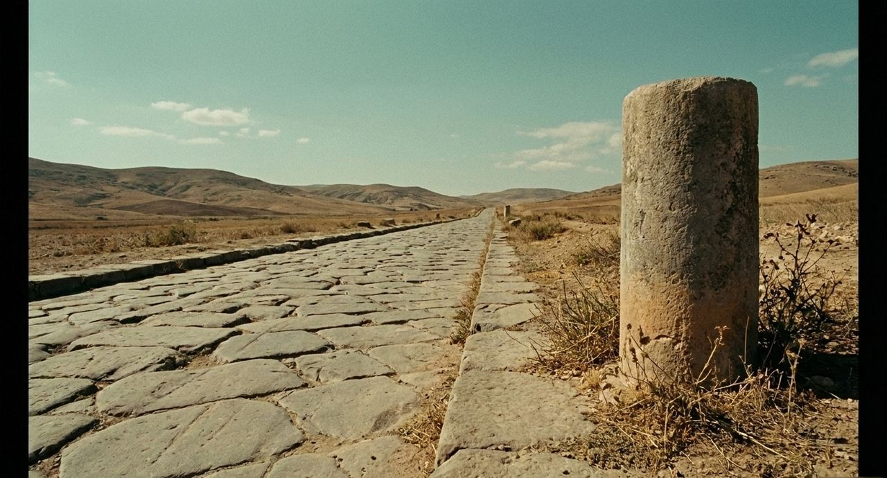
시대: 복음서, 사도행전·서신
용도: 장소·생활 배경
태그: roman_road, milestone, hill
쓰인 카드 1장 보기
- 365 331일 2027판 · 고린도전서 1–4장 · 4번째 카드 — 긴장 · 미련한 것 · 같은 십자가, 다른 이름
시대: 자연·하늘
용도: 사건 장면
태그: stream, stones, feet, water
지금 쓰인 카드: 없음
예비: 카드 글에 태그의 낱말이 나오면 씁니다
시대: 자연·하늘, 복음서
용도: 자연·지형
태그: lake, boat, sunset, water
쓰인 카드 4장 보기
- 리딩지저스 38주차 1일째 · 로마서 1–3장 · 9번째 카드 — 근거 · 값 없이 · 범하였으매, 얻은 자 되었느니라
- 리딩지저스 39주차 5일째 · 고린도후서 1–3장 · 3번째 카드 — 근거 · 살 소망까지 · 사형 선고를 받은 줄 알았으니
- 리딩지저스 40주차 4일째 · 에베소서 1–3장 · 12번째 카드 — 권면 · 찬송으로 돌아가다 · 교회 안에서 영광을
- 리딩지저스 41주차 6일째 · 디도서 1장 – 빌레몬서 1장 · 13번째 카드 — 권면 · 종 이상으로 · 사랑 받는 형제로
시대: 자연·하늘
용도: 자연·지형
태그: river, flood, rock, storm_sky
쓰인 카드 17장 보기
- 365 22일 2027판 · 출애굽기 7–9장 · 4번째 카드 — 긴장 · 따라 하던 요술사 · 그와 같이 행하므로
- 365 315일 2027판 · 요한복음 17장 · 2번째 카드 — 배경 · 하늘을 우러러 · 아버지여
- 365 321일 2027판 · 사도행전 10–12장 · 9번째 카드 — 긴장 · 무할례자의 집에 · 예루살렘의 비난
- 365 327일 2027판 · 로마서 1–3장 · 5번째 카드 — 긴장 · 하늘로부터 · 또 하나 나타나는 것
- 365 364일 2027판 · 요한계시록 15–18장 · 2번째 카드 — 배경 · 일곱 대접 뒤에 · 기억하신 바 된 성
- 리딩지저스 36주차 4일째 · 사도행전 9–10장 · 10번째 카드 — 긴장 · 주여 그럴 수 없나이다 · 그 집 지붕 위에서
- 리딩지저스 37주차 1일째 · 사도행전 16–18장 · 2번째 카드 — 배경 · 빌립보 강가 · 마음을 여시는 주님
- 리딩지저스 37주차 6일째 · 사도행전 27–28장 · 9번째 카드 — 전환 · 멜리데 · 살인자에서 신으로
- 리딩지저스 38주차 4일째 · 로마서 9–11장 · 6번째 카드 — 근거 · 넘어짐이 끝은 아닙니다 · 그럴 수 없느니라
- 리딩지저스 39주차 2일째 · 고린도전서 5–8장 · 6번째 카드 — 권면 · 서로에게 속한 몸 · 남편도, 아내도
- 리딩지저스 40주차 1일째 · 고린도후서 7–9장 · 5번째 카드 — 근거 · 그리스도의 은혜 · 부요하신 이가 가난하게
- 리딩지저스 40주차 6일째 · 빌립보서 1–4장 · 3번째 카드 — 권면 · 한 뜻으로 · 바울이 바라는 소식
- 리딩지저스 41주차 5일째 · 디모데후서 1–4장 · 6번째 카드 — 주장 · 잘못된 배움 · 배워도 진리에 닿지 못하다
- 리딩지저스 42주차 5일째 · 야고보서 1–3장 · 8번째 카드 — 의미 · 두 사람에게 한 말 · 앉으소서, 평안히 가라
- 리딩지저스 43주차 3일째 · 요한일서 1–3장 · 3번째 카드 — 근거 · 우리에게서 나갔으나 · 함께 거하지 아니한 사람들
- 리딩지저스 44주차 2일째 · 요한계시록 2–3장 · 7번째 카드 — [라오디게아교회] · 편지의 시작 · 충성되고 참된 증인
- 리딩지저스 45주차 3일째 · 요한계시록 16–17장 · 5번째 카드 — 본 것 · 놀란 요한 · 성도들의 피에 취한지라

시대: 자연·하늘
용도: 자연·지형
태그: pool, cave, desert, light
쓰인 카드 11장 보기
- 365 4일 2027판 · 창세기 10–11장 · 11번째 카드 — 의미 · 한 가족으로 좁혀지다 · 11:10–32 · 데라의 집, 사래의 빈자리
- 365 16일 2027판 · 창세기 42–45장 · 4번째 카드 — 긴장 · 남겨진 형, 데려와야 할 아우 · 시므온은 남고, 베냐민은 못 보내고
- 365 55일 2027판 · 민수기 31–33장 · 12번째 카드 — 의미 · 여호와 앞에서 받은 땅 · 건너가기까지
- 365 96일 2028판 · 사무엘상 24–26장 · 4번째 카드 — 긴장 · 굴 속의 '그 날' · 24장 · 이것이 그 날
- 리딩지저스 38주차 3일째 · 로마서 7–8장 · 10번째 카드 — 근거 · 성령으로 양자 됨 · 종의 영이 아니라
- 리딩지저스 39주차 3일째 · 고린도전서 9–12장 · 4번째 카드 — 근거 · 광야의 조상들 · 다 지나왔지만
- 리딩지저스 40주차 5일째 · 에베소서 4–6장 · 6번째 카드 — 근거 · 사랑 가운데 행하라
- 리딩지저스 41주차 4일째 · 디모데전서 1–6장 · 4번째 카드 — 권면 · 첫째로 권하노니 · 모든 사람을 위하여
- 리딩지저스 42주차 2일째 · 히브리서 4–6장 · 1번째 카드 — 들어가지 못한 안식, 남아 있는 약속
- 리딩지저스 43주차 5일째 · 요한이서 1장 – 요한삼서 1장 · 12번째 카드 — 근거 · 교회에서 내쫓는도다 · 형제들을 맞아들이지도 아니하고
- 리딩지저스 44주차 4일째 · 요한계시록 6–7장 · 3번째 카드 — 긴장 · 굴과 바위 틈 · 굴과 산들의 바위 틈에 숨어
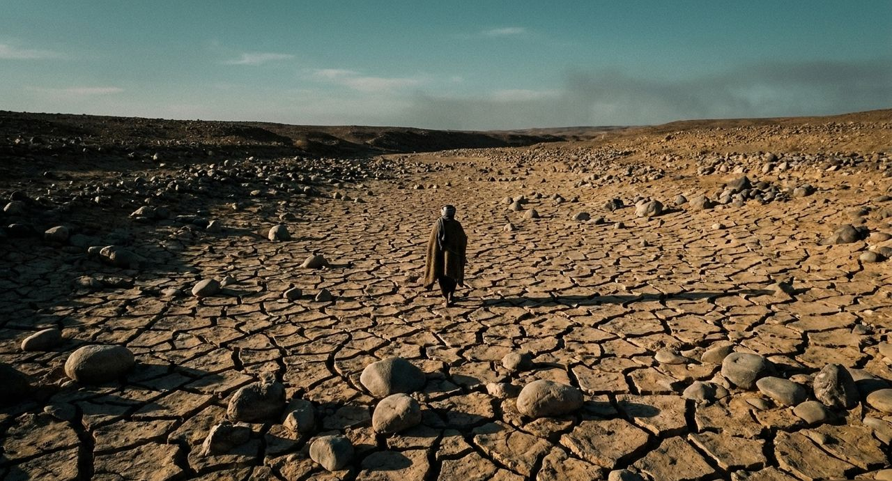
시대: 자연·하늘
용도: 자연·지형
태그: desert, dry_riverbed, man
쓰인 카드 10장 보기
- 365 4일 2027판 · 창세기 10–11장 · 7번째 카드 — 전환 · 하나님의 말씀 · 11:6–7 · 이제 누가 말씀하시는가
- 365 46일 2027판 · 민수기 5–6장 · 4번째 카드 — 긴장 · 자라게 둘 머리털 · 머리에 대지 않는 삭도
- 365 51일 2027판 · 민수기 18–19장 · 8번째 카드 — 전환 · 레위인도 담당 · 회막에서 봉사하는 사람들
- 리딩지저스 37주차 4일째 · 사도행전 23–24장 · 11번째 카드 — 의미 · 비교해 보기 · 다시 꺼낸 말 · 공회에서, 총독 앞에서
- 리딩지저스 38주차 3일째 · 로마서 7–8장 · 8번째 카드 — 근거 · 하나님은 하시나니
- 리딩지저스 39주차 3일째 · 고린도전서 9–12장 · 7번째 카드 — 주장 · 함께 먹는데 · 각각 자기 만찬을 먼저
- 리딩지저스 40주차 4일째 · 에베소서 1–3장 · 5번째 카드 — 주장 · 그러나 하나님 · 함께 살리셨고
- 리딩지저스 41주차 5일째 · 디모데후서 1–4장 · 11번째 카드 — 권면 · 그러나 너는 · 네 직무를 다하라
- 리딩지저스 43주차 5일째 · 요한이서 1장 – 요한삼서 1장 · 10번째 카드 — 근거 · 진리를 위하여 · 함께 일하는 자
- 리딩지저스 45주차 6일째 · 요한계시록 22장 · 7번째 카드 — 들은 것 · 두 번째 약속
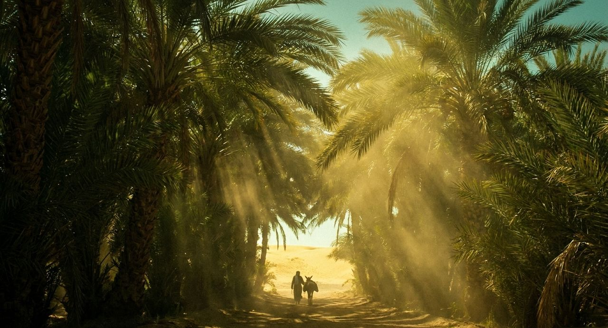
시대: 자연·하늘
용도: 자연·지형
태그: palm, oasis, road, donkey
쓰인 카드 27장 보기
- 365 11일 2027판 · 창세기 32–33장 · 2번째 카드 — 배경 · 돌아가는 길 · 먼저 보낸 사자들
- 365 16일 2027판 · 창세기 42–45장 · 7번째 카드 — 긴장 · 잔이 나온 자루 · 베냐민의 자루
- 365 21일 2027판 · 출애굽기 5–6장 · 11번째 카드 — 의미 · 알지 못한다에서 알게 되리라로 · 모른다는 왕, 알게 하시겠다는 하나님
- 365 28일 2027판 · 출애굽기 21–24장 · 9번째 카드 — 전환 · 언약의 피 · 제단과 백성에게 뿌린 피
- 365 38일 2027판 · 레위기 13–15장 · 6번째 카드 — 규정 · 옷과 집까지 · 집을 살피기 전에
- 365 45일 2027판 · 민수기 3–4장 · 7번째 카드 — 전환 · 일 개월 이상 · 레위인을 세다
- 365 313일 2027판 · 요한복음 13–14장 · 9번째 카드 — 긴장 · 그 길을 어찌 · 우리가 알지 못하거늘
- 365 323일 2027판 · 사도행전 16–18장 · 1번째 카드 — 막힌 길 끝에서, 건너와서 도우라
- 365 328일 2027판 · 로마서 4–8장 · 9번째 카드 — 긴장 · 죄에 거하겠느냐 · 그럴 수 없느니라
- 365 334일 2027판 · 고린도전서 11–14장 · 10번째 카드 — 의미 · 모일 때에 · 가장 좋은 길이 모임에 닿을 때
- 365 338일 2027판 · 고린도후서 8–9장 · 11번째 카드 — 의미 · 감사로 돌아가다 · 은혜는 하나님께로부터
- 365 345일 2027판 · 데살로니가전서 1–5장 · 8번째 카드 — 긴장 · 자는 자들 · 소망 없는 다른 이와 같이
- 365 352일 2027판 · 히브리서 7–10장 · 7번째 카드 — 긴장 · 매일 서서 · 서 있는 제사장들
- 365 359일 2027판 · 요한이서 · 요한삼서 · 유다서 · 4번째 카드 — 요한이서
- 365 28일 2028판 · 출애굽기 21–24장 · 1번째 카드 — 원수의 소를 돌려보내는 법, 원수에게 원수가 되시는 하나님
- 리딩지저스 36주차 6일째 · 사도행전 14–15장 · 13번째 카드 — 의미 · 위로한 말 · 하나님이 하신 일로
- 리딩지저스 37주차 5일째 · 사도행전 25–26장 · 10번째 카드 — 전환 · 왕 앞의 변론 · 미친 것이 아니라
- 리딩지저스 38주차 3일째 · 로마서 7–8장 · 1번째 카드 — 율법이 할 수 없는 그것을
- 리딩지저스 39주차 1일째 · 고린도전서 1–4장 · 2번째 카드 — 주장 · 분열 소식 · 나는 바울에게
- 리딩지저스 39주차 6일째 · 고린도후서 4–6장 · 8번째 카드 — 근거 · 먼저 화목하게 하신 이 · 모든 것이 하나님께로서
- 리딩지저스 40주차 4일째 · 에베소서 1–3장 · 3번째 카드 — 근거 · 약속의 성령 · 복음을 듣고 받은 표
- 리딩지저스 41주차 3일째 · 데살로니가후서 1–3장 · 4번째 카드 — 주장 · 주의 날이 이르렀다고? · 쉽게 마음이 흔들리지 말라
- 리딩지저스 42주차 1일째 · 히브리서 1–3장 · 4번째 카드 — 긴장 · 지금 우리가 · 아직 보지 못하고
- 리딩지저스 42주차 6일째 · 야고보서 4–5장 · 1번째 카드 — 싸움이 난 자리에서 들리는 ‘가까이’
- 리딩지저스 43주차 4일째 · 요한일서 4–5장 · 1번째 카드 — 우리가 사랑하는 이유는 무엇일까요?
- 리딩지저스 44주차 3일째 · 요한계시록 4–5장 · 7번째 카드 — 전환 · 울지 말라 · 유대 지파의 사자
- 리딩지저스 45주차 1일째 · 요한계시록 12–13장 · 4번째 카드 — 본 것 · 아이의 탄생 · 그 보좌 앞으로 올려가더라
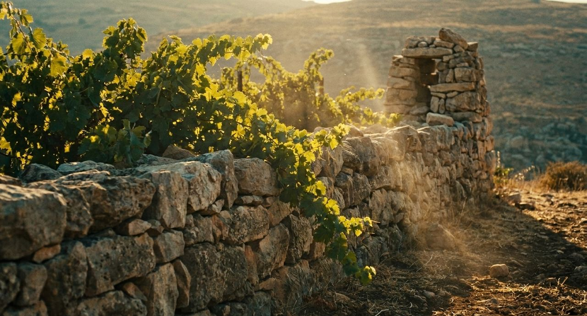
시대: 자연·하늘, 시·지혜·일상
용도: 장소·생활 배경
태그: vineyard, stone_wall, tower
쓰인 카드 1장 보기
- 365 314일 2027판 · 요한복음 15–16장 · 9번째 카드 — 의미 · 비교해 보기 · 택하였다는 말 · 택하심이 이어지는 두 곳
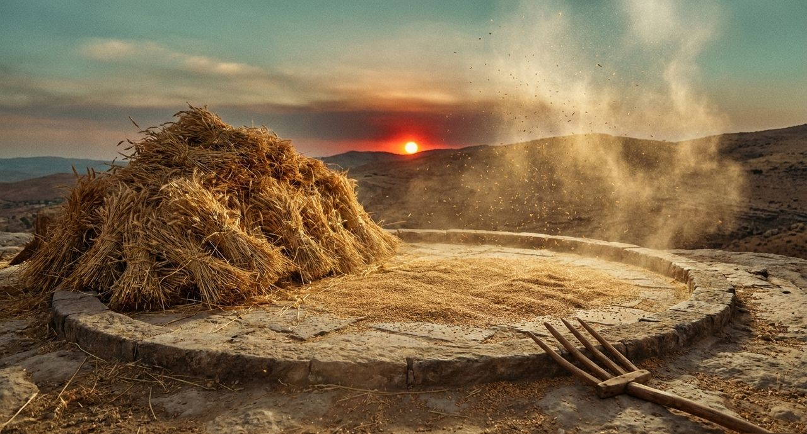
시대: 자연·하늘, 정착·사사, 시·지혜·일상
용도: 장소·생활 배경
태그: threshing_floor, grain, pitchfork
쓰인 카드 1장 보기
- 365 338일 2027판 · 고린도후서 8–9장 · 6번째 카드 — 긴장 · 이 은혜에도 · 명령이 아니라
시대: 자연·하늘
용도: 자연·지형
태그: canyon, red_rock, man
쓰인 카드 12장 보기
- 365 326일 2027판 · 사도행전 25–28장 · 10번째 카드 — 의미 · 로마로 가니라 · 이와 같이
- 365 350일 2027판 · 빌레몬서 · 3번째 카드 — 긴장 · 전에는 무익하였으나 · 오네시모라는 이름
- 리딩지저스 37주차 2일째 · 사도행전 19–20장 · 8번째 카드 — 전환 · 부탁하노니 · 누구에게 맡기는가
- 리딩지저스 38주차 1일째 · 로마서 1–3장 · 8번째 카드 — 주장 · 이제는
- 리딩지저스 39주차 2일째 · 고린도전서 5–8장 · 5번째 카드 — 근거 · 너희 몸 · 너희 자신의 것이 아니라
- 리딩지저스 40주차 1일째 · 고린도후서 7–9장 · 6번째 카드 — 권면 · 시작했던 일을 마치라 · 원했던 일을 끝까지
- 리딩지저스 40주차 6일째 · 빌립보서 1–4장 · 10번째 카드 — 권면 · 두 사람의 이름 · 같은 마음을 품으라
- 리딩지저스 41주차 1일째 · 골로새서 1–4장 · 4번째 카드 — 권면 · 받은 대로 · 그 안에서 행하되
- 리딩지저스 41주차 6일째 · 디도서 1장 – 빌레몬서 1장 · 9번째 카드 — 권면 · 선한 일을 힘쓰게 · 믿는 자들이 할 일
- 리딩지저스 43주차 2일째 · 베드로후서 1–3장 · 3번째 카드 — 근거 · 내가 떠난 후에라도 · 떠난 뒤에도 기억할 말
- 리딩지저스 44주차 2일째 · 요한계시록 2–3장 · 9번째 카드 — [라오디게아교회] · 교회의 말 · 나는 부자라
- 리딩지저스 45주차 3일째 · 요한계시록 16–17장 · 6번째 카드 — 들은 것 · 천사의 물음

시대: 자연·하늘, 분열·포로, 시·지혜·일상
용도: 소품·동작
태그: scroll, hands, oil_lamp
쓰인 카드 13장 보기
- 365 24일 2027판 · 출애굽기 12–13장 · 10번째 카드 — 의미 · 입에 남을 말씀 · 네 입에 있게 하라
- 365 33일 2027판 · 출애굽기 35–38장 · 8번째 카드 — 전환 · 여호와께로부터 얻은 지혜 · 두 가지 마음이 함께
- 365 54일 2027판 · 민수기 26–30장 · 4번째 카드 — 긴장 · 이름 사이에 남은 기록 · 목록이 멈추는 곳
- 365 157일 2027판 · 욥기 1–3장 · 10번째 카드 — 의미 · 두 번의 평가 · 본문이 붙인 말
- 365 303일 2027판 · 누가복음 14–16장 · 7번째 카드 — 전환 · 준비한 말과 달라진 말 · 준비한 말과 실제로 한 말
- 365 309일 2027판 · 요한복음 5–6장 · 5번째 카드 — 긴장 · 내게 오기를 · 영생을 얻기 위하여
- 365 336일 2027판 · 고린도후서 1–2장 · 11번째 카드 — 의미 · 눈물로 쓴 편지 · 근심 대신 편지
- 365 340일 2027판 · 갈라디아서 1–2장 · 3번째 카드 — 배경 · 복음은 어디서 · 사람에게서 받은 것도 아니요
- 365 345일 2027판 · 데살로니가전서 1–5장 · 7번째 카드 — 전환 · 흠이 없게 · 기쁜 소식, 그리고 기도
- 365 355일 2027판 · 베드로전서 1–5장 · 3번째 카드 — 배경 · 그 받으실 고난 · 처음 나오는 고난
- 365 360일 2027판 · 요한계시록 1–3장 · 6번째 카드 — 긴장 · 책망할 것이 있나니 · 칭찬 뒤의 '그러나'
- 365 222일 2028판 · 이사야 51–55장 · 11번째 카드 — 의미 · 그의 손으로 · 종을 통해 읽는 하나님의 팔
- 리딩지저스 45주차 6일째 · 요한계시록 22장 · 11번째 카드 — 들은 것 · 마지막 약속과 대답

시대: 자연·하늘, 시·지혜·일상
용도: 소품·동작
태그: door, house, sunrise_light_rays
쓰인 카드 21장 보기
- 365 1일 2027판 · 창세기 1–2장 · 10번째 카드 — 의미 · 혼자 두지 않으신 하나님 · 혼자 두지 않으신 하나님
- 365 15일 2027판 · 창세기 40–41장 · 8번째 카드 — 전환 · 내가 아니라
- 365 20일 2027판 · 출애굽기 3–4장 · 5번째 카드 — 전환 · 첫 물음에 대한 답
- 365 31일 2027판 · 출애굽기 30–31장 · 5번째 카드 — 전환 · 영을 충만하게 하여
- 365 37일 2027판 · 레위기 11–12장 · 7번째 카드 — 전환 · 너희도 거룩할지어다
- 365 45일 2027판 · 민수기 3–4장 · 11번째 카드 — 의미 · 내 것이 될 것임이니라 · 애굽에서 구별하신 날부터
- 365 53일 2027판 · 민수기 22–25장 · 11번째 카드 — 의미 · 복을 받은 자들의 자리 · 막힌 저주, 돌이킨 노
- 365 172일 2027판 · 시편 8–14편 · 6번째 카드 — 전환 · 관을 씌우셨나이다 · 영화와 존귀로
- 365 302일 2027판 · 누가복음 12–13장 · 10번째 카드 — 의미 · 하늘에 둔 보물 · 하나님께 대하여 부요한 것
- 365 312일 2027판 · 요한복음 11–12장 · 7번째 카드 — 전환 · 나오라
- 365 318일 2027판 · 사도행전 3–5장 · 11번째 카드 — 의미 · 그치지 아니하니라 · 예루살렘을 채운 것
- 365 327일 2027판 · 로마서 1–3장 · 12번째 카드 — 의미 · 자기도 의로우시며 · 이제는 나타난 의
- 365 336일 2027판 · 고린도후서 1–2장 · 6번째 카드 — 전환 · 하나님은 미쁘시니라 · 대답의 첫마디
- 365 338일 2027판 · 고린도후서 8–9장 · 7번째 카드 — 전환 · 그리스도의 은혜
- 365 343일 2027판 · 빌립보서 1–4장 · 8번째 카드 — 전환 · 주 안에서 항상
- 365 348일 2027판 · 디모데후서 1–4장 · 2번째 카드 — 배경 · 외조모와 어머니 · 먼저 있던 믿음
- 365 353일 2027판 · 히브리서 11–13장 · 8번째 카드 — 전환 · 더 좋은 것 · 이 사람들은 다
- 365 358일 2027판 · 요한일서 4–5장 · 3번째 카드 — 긴장 · 하나님은 사랑이심이라 · 하나님께 이르는 말
- 365 363일 2027판 · 요한계시록 10–14장 · 11번째 카드 — 의미 · 누구에게 경배하는가 · 두 무리의 끝
- 365 172일 2028판 · 시편 8–14편 · 6번째 카드 — 전환 · 시인의 대답
- 리딩지저스 36주차 4일째 · 사도행전 9–10장 · 11번째 카드 — 전환 · 의심하지 말고 · 성령의 말씀

시대: 자연·하늘, 시·지혜·일상
용도: 소품·동작
태그: door, bolt, night_sky
쓰인 카드 4장 보기
- 365 172일 2027판 · 시편 8–14편 · 1번째 카드 — 사람이 무엇이기에
- 365 313일 2027판 · 요한복음 13–14장 · 8번째 카드 — 전환 · 근심하지 말라 · 아버지 집에 거할 곳
- 365 346일 2027판 · 데살로니가후서 1–3장 · 5번째 카드 — 긴장 · 막는 것 · 풀지 않고, 묻는다
- 리딩지저스 37주차 6일째 · 사도행전 27–28장 · 8번째 카드 — 전환 · 거룻줄을 끊어 · 이번에는 바울의 말을
시대: 자연·하늘, 시·지혜·일상, 복음서, 사도행전·서신
용도: 소품·동작
태그: bread, cup, table, hands
쓰인 카드 21장 보기
- 365 17일 2027판 · 창세기 46–47장 · 7번째 카드 — 긴장 · 머물 곳과 먹을 것 · 기근 속의 봉양
- 365 28일 2027판 · 출애굽기 21–24장 · 10번째 카드 — 의미 · 하나님 앞의 식탁 · 산 위의 식탁
- 365 35일 2027판 · 레위기 1–6장 · 5번째 카드 — 긴장 · 제사장부터 평민까지 · 누가 범했든
- 365 41일 2027판 · 레위기 21–22장 · 2번째 카드 — 배경 · 제사장들에게 · 하나님의 음식을 드리는 자
- 365 96일 2027판 · 사무엘상 24–26장 · 8번째 카드 — 전환 · 막아선 사람 · 보내신 이를 찬송하다
- 365 301일 2027판 · 누가복음 10–11장 · 8번째 카드 — 전환 · 좋은 편 · 한 가지만이라도
- 365 309일 2027판 · 요한복음 5–6장 · 6번째 카드 — 긴장 · 큰 무리 · 따라온 무리
- 365 317일 2027판 · 사도행전 1–2장 · 10번째 카드 — 의미 · 성령이 임하시면 · 증인이 된 사람들
- 365 326일 2027판 · 사도행전 25–28장 · 7번째 카드 — 전환 · 말씀하신 그대로 · 머리카락 하나도
- 365 332일 2027판 · 고린도전서 5–7장 · 1번째 카드 — 모든 것이 가하나, 몸은 주를 위하여
- 365 338일 2027판 · 고린도후서 8–9장 · 5번째 카드 — 긴장 · 먼저 자신을 · 힘에 지나도록
- 365 344일 2027판 · 골로새서 1–4장 · 6번째 카드 — 긴장 · 붙잡지도 말고 · 사람의 명령과 가르침
- 365 350일 2027판 · 빌레몬서 · 8번째 카드 — 의미 · 내게 하듯 · 형제로 맞아들이는 일
- 365 355일 2027판 · 베드로전서 1–5장 · 7번째 카드 — 긴장 · 의를 위하여 · 선을 행함으로 받는 고난
- 365 301일 2028판 · 누가복음 10–11장 · 1번째 카드 — 구하라, 그리고 표적을 구하는 세대
- 365 354일 2028판 · 야고보서 1–5장 · 5번째 카드 — 긴장 · 평안히 가라 · 말로만 입히는 옷
- 리딩지저스 36주차 2일째 · 사도행전 4–5장 · 4번째 카드 — 긴장 · 공회 앞의 대답 · 이 사람이 섰느니라
- 리딩지저스 38주차 5일째 · 로마서 12–14장 · 11번째 카드 — 권면 · 너희의 선한 것이 · 형제 앞의 식탁
- 리딩지저스 39주차 3일째 · 고린도전서 9–12장 · 5번째 카드 — 근거 · 한 떡 · 많은 우리가 한 몸
- 리딩지저스 41주차 3일째 · 데살로니가후서 1–3장 · 9번째 카드 — 권면 · 자기 양식을 · 조용히 일하여
- 리딩지저스 42주차 5일째 · 야고보서 1–3장 · 5번째 카드 — 긴장 · 평안히 가라 · 그 몸에 쓸 것을 주지 아니하면

시대: 자연·하늘, 시·지혜·일상
용도: 소품·동작
태그: clay_jar, basin, towel
쓰인 카드 3장 보기
- 365 37일 2027판 · 레위기 11–12장 · 5번째 카드 — 긴장 · 저녁까지 부정하리라 · 주검을 만지면
- 365 321일 2027판 · 사도행전 10–12장 · 4번째 카드 — 긴장 · 그럴 수 없나이다 · 지붕 위의 환상
- 365 96일 2028판 · 사무엘상 24–26장 · 9번째 카드 — 전환 · 열흘 뒤 · 다른 날이 오다
시대: 자연·하늘, 왕국, 시·지혜·일상
용도: 소품·동작
태그: oil, flask
쓰인 카드 1장 보기
- 365 343일 2027판 · 빌립보서 1–4장 · 7번째 카드 — 긴장 · 전제로 드릴지라도 · 부어지는 제물 앞에서
시대: 자연·하늘, 시·지혜·일상, 복음서
용도: 소품·동작
태그: seed, hands, wheat
쓰인 카드 8장 보기
- 365 40일 2027판 · 레위기 18–20장 · 5번째 카드 — 긴장 · 귀먹은 자와 맹인 · 듣지 못하고 보지 못하는 사람 앞에서
- 365 54일 2027판 · 민수기 26–30장 · 10번째 카드 — 전환 · 영이 머무는 자 · 여호수아를 세우다
- 365 301일 2027판 · 누가복음 10–11장 · 9번째 카드 — 의미 · 하라, 그리고 듣더니 · 나란히 놓인 두 장면
- 365 314일 2027판 · 요한복음 15–16장 · 6번째 카드 — 전환 · 나의 사랑 안에 · 거할 곳의 이름
- 365 337일 2027판 · 고린도후서 3–7장 · 10번째 카드 — 의미 · 예수의 생명 · 같은 목적, 두 번
- 365 222일 2028판 · 이사야 51–55장 · 8번째 카드 — 전환 · 연한 순 같고 · 팔을 묻는 말 뒤에 보이는 종
- 365 301일 2028판 · 누가복음 10–11장 · 9번째 카드 — 의미 · 구하라, 구하되 · 두 구함, 두 대답
- 리딩지저스 38주차 4일째 · 로마서 9–11장 · 5번째 카드 — 근거 · 버리셨느냐 · 그럴 수 없느니라
시대: 자연·하늘, 시·지혜·일상
용도: 사건 장면
태그: prayer, man, mountain_peak, dawn
쓰인 카드 1장 보기
- 365 32일 2027판 · 출애굽기 32–34장 · 11번째 카드 — 전환 · 다시 산에 오르는 아침 · 34:1–9 · 새 돌판을 들고 올라가다

시대: 자연·하늘, 시·지혜·일상
용도: 소품·동작
태그: hands, covenant
쓰인 카드 9장 보기
- 365 9일 2027판 · 창세기 26–28장 · 6번째 카드 — 긴장 · 다른 이름으로 받은 복 · 음성은 야곱, 손은 에서
- 365 18일 2027판 · 창세기 48–50장 · 5번째 카드 — 전환 · 엇바꾼 손과 축복 · 엇바꾼 손, 하나님께 구한 복
- 365 31일 2027판 · 출애굽기 30–31장 · 7번째 카드 — 전환 · 함께 세운 사람들 · 오홀리압과 지혜로운 모든 자
- 365 306일 2027판 · 누가복음 22–24장 · 9번째 카드 — 전환 · 다시 예루살렘으로 · 그 때로 일어나
- 365 315일 2027판 · 요한복음 17장 · 4번째 카드 — 긴장 · 그들은 받고 · 말 없는 제자들
- 365 329일 2027판 · 로마서 9–11장 · 7번째 카드 — 긴장 · 종일 내 손을 · 거슬러 말하는 백성에게
- 365 343일 2027판 · 빌립보서 1–4장 · 10번째 카드 — 의미 · 두 번 말하는 기쁨 · 기뻐하고, 기뻐하라
- 365 350일 2027판 · 빌레몬서 · 9번째 카드 — 의미 · 형제로 돌아오다 · 형제여, 형제로
- 365 357일 2027판 · 요한일서 1–3장 · 9번째 카드 — 의미 · 말과 혀로만 · 요한의 기준
시대: 자연·하늘, 정착·사사, 왕국
용도: 장소·생활 배경
태그: city_gate, stone_seat
쓰인 카드 1장 보기
- 365 359일 2027판 · 요한이서 · 요한삼서 · 유다서 · 10번째 카드 — 긴장 · 문을 닫은 사람 · 맞아들이지 아니하니
시대: 자연·하늘, 왕국, 분열·포로
용도: 장소·생활 배경
태그: tower, oil_lamp, night_sky
쓰인 카드 9장 보기
- 365 6일 2027판 · 창세기 17–20장 · 7번째 카드 — 전환 · 막으신 분 · 20:6
- 365 11일 2027판 · 창세기 32–33장 · 6번째 카드 — 긴장 · 홀로 남은 밤 · 얍복 나루, 홀로
- 365 17일 2027판 · 창세기 46–47장 · 8번째 카드 — 긴장 · 애굽에서 십칠 년을 산 뒤 · 애굽에 장사하지 말라
- 365 310일 2027판 · 요한복음 7–8장 · 10번째 카드 — 전환 · 어디서 오며 어디로
- 365 326일 2027판 · 사도행전 25–28장 · 2번째 카드 — 배경 · 그 날 밤의 말씀 · 로마에서도
- 365 337일 2027판 · 고린도후서 3–7장 · 5번째 카드 — 긴장 · 마음에 비친 빛 · 보배를 가진 사람들
- 365 346일 2027판 · 데살로니가후서 1–3장 · 4번째 카드 — 전환 · 미혹되지 말라
- 365 357일 2027판 · 요한일서 1–3장 · 6번째 카드 — 전환 · 빛 가운데 있다 하면서
- 리딩지저스 41주차 1일째 · 골로새서 1–4장 · 2번째 카드 — 근거 · 우리를 옮기신 분 · 어둠에서 아들의 나라로

시대: 분열·포로, 자연·하늘
용도: 소품·동작
태그: city_wall, stones, ruins
쓰인 카드 13장 보기
- 365 4일 2027판 · 창세기 10–11장 · 5번째 카드 — 긴장 · 성읍과 탑 · 11:4 · 우리 이름을 내고
- 365 12일 2027판 · 창세기 34–35장 · 4번째 카드 — 긴장 · 속여 내건 조건 · 할례라는 조건
- 365 157일 2027판 · 욥기 1–3장 · 1번째 카드 — 온전하다 불린 사람, 그 입술의 말
- 365 222일 2027판 · 이사야 51–55장 · 5번째 카드 — 긴장 · 종일토록 · 더럽혀지는 이름
- 365 305일 2027판 · 누가복음 20–21장 · 4번째 카드 — 긴장 · 돌로 칠 것이라 · 되물으신 질문
- 365 310일 2027판 · 요한복음 7–8장 · 7번째 카드 — 긴장 · 돌로 치라 · 선생은 어떻게 말하겠나이까
- 365 318일 2027판 · 사도행전 3–5장 · 9번째 카드 — 긴장 · 크게 노하여 · 시기에서 살의까지
- 365 329일 2027판 · 로마서 9–11장 · 8번째 카드 — 전환 · 버리셨느냐 · 남은 자가 있느니라
- 365 342일 2027판 · 에베소서 1–6장 · 6번째 카드 — 긴장 · 그리스도 밖에 · 멀리 있던 너희
- 365 349일 2027판 · 디도서 1–3장 · 4번째 카드 — 긴장 · 시인하나 행위로는 · 선한 일을 버리는 자
- 365 356일 2027판 · 베드로후서 1–3장 · 5번째 카드 — 긴장 · 조롱하는 자들 · 그냥 있다는 말
- 365 222일 2028판 · 이사야 51–55장 · 9번째 카드 — 의미 · 높이 들려, 멸시를 받아 · 같은 종, 두 말
- 365 354일 2028판 · 야고보서 1–5장 · 7번째 카드 — 긴장 · 오늘이나 내일이나 · 내일을 말하는 사람들
쓰는 장(표지 카드에서만, 다른 카드는 아래 말이 있어야 함): 출애굽기 25장, 출애굽기 37장, 출애굽기 40장, 레위기 16장, 민수기 4장, 열왕기상 8장, 히브리서 9장
카드 글에 이 말이 있으면: 속죄소 · 그룹 사이 · 증거궤 · 언약궤 · 지성소 · 시은좌
용도: 소품·동작
태그: ark, cherubim, holy_of_holies, light
쓰인 카드 1장 보기
- 365 39일 2027판 · 레위기 16–17장 · 4번째 카드 — 긴장 · 들어오려면 · 씻고, 입고, 가져가고
쓰는 장(표지 카드에서만, 다른 카드는 아래 말이 있어야 함): 사사기 6장
카드 글에 이 말이 있으면: 양털 · 이슬이 양털에만 · 양털만 마르고
용도: 소품·동작
태그: fleece, dew, threshing_floor
지금 쓰인 카드: 없음
예비 자리: 365 80일 사사기 6–8장 (원고 전)
쓰는 장(표지 카드에서만, 다른 카드는 아래 말이 있어야 함): 사사기 7장
카드 글에 이 말이 있으면: 핥아 먹은 · 손으로 움켜 · 물을 핥는 · 삼백 명
용도: 사건 장면
태그: stream, soldiers, water
지금 쓰인 카드: 없음
예비 자리: 365 80일 사사기 6–8장 (원고 전)
쓰는 장(표지 카드에서만, 다른 카드는 아래 말이 있어야 함): 사사기 4장
카드 글에 이 말이 있으면: 드보라 · 종려나무 아래
용도: 사건 장면
태그: palm, woman, judge, crowd
지금 쓰인 카드: 없음
예비 자리: 365 79일 사사기 4–5장 (원고 전)
쓰는 장(표지 카드에서만, 다른 카드는 아래 말이 있어야 함): 사사기 4–5장
카드 글에 이 말이 있으면: 야엘 · 말뚝 · 장막 말뚝
용도: 소품·동작
태그: tent, peg, dusk
지금 쓰인 카드: 없음
예비 자리: 365 79일 사사기 4–5장 (원고 전)
쓰는 장(표지 카드에서만, 다른 카드는 아래 말이 있어야 함): 사사기 11장
카드 글에 이 말이 있으면: 입다 · 소고를 잡고
용도: 사건 장면
태그: woman, timbrel, house, man
지금 쓰인 카드: 없음
예비 자리: 365 82일 사사기 10–12장 (원고 전)
쓰는 장(표지 카드에서만, 다른 카드는 아래 말이 있어야 함): 사사기 15장
카드 글에 이 말이 있으면: 여우 · 꼬리와 꼬리 · 곡식 단과 아직 베지 아니한
용도: 사건 장면
태그: fox, torch, wheat_field, night_sky
지금 쓰인 카드: 없음
예비 자리: 365 83일 사사기 13–16장 (원고 전)
쓰는 장(표지 카드에서만, 다른 카드는 아래 말이 있어야 함): 사사기 16장
카드 글에 이 말이 있으면: 두 기둥 · 기둥을 껴 · 다곤의 신전 · 삼손
용도: 사건 장면
태그: pillars, temple, man, crowd
지금 쓰인 카드: 없음
예비 자리: 365 83일 사사기 13–16장 (원고 전)
쓰는 장(표지 카드에서만, 다른 카드는 아래 말이 있어야 함): 룻기 1장
카드 글에 이 말이 있으면: 룻 · 나오미 · 어머니를 떠나
용도: 사건 장면
태그: road, women, hills
지금 쓰인 카드: 없음
예비 자리: 365 86일 룻기 1–4장 (원고 전)
쓰는 장(표지 카드에서만, 다른 카드는 아래 말이 있어야 함): 룻기 3장
카드 글에 이 말이 있으면: 타작마당 · 발치 · 곡식 단 더미
용도: 사건 장면
태그: threshing_floor, night_sky, woman, man
지금 쓰인 카드: 없음
예비 자리: 365 86일 룻기 1–4장 (원고 전)
쓰는 장(표지 카드에서만, 다른 카드는 아래 말이 있어야 함): 룻기 4장
카드 글에 이 말이 있으면: 신을 벗어 · 신을 벗
용도: 사건 장면
태그: sandal, hands, elders, city_gate
지금 쓰인 카드: 없음
예비 자리: 365 86일 룻기 1–4장 (원고 전)
쓰는 장(표지 카드에서만, 다른 카드는 아래 말이 있어야 함): 사무엘상 3장
카드 글에 이 말이 있으면: 등불이 아직 꺼지지 · 사무엘이 누웠더니
용도: 사건 장면
태그: oil_lamp, boy, night_sky
지금 쓰인 카드: 없음
예비 자리: 365 88일 사무엘상 3–7장 (원고 전)
쓰는 장(표지 카드에서만, 다른 카드는 아래 말이 있어야 함): 사무엘상 5장
카드 글에 이 말이 있으면: 다곤 · 엎드러져 · 손목이
용도: 소품·동작
태그: idol, temple, stone
지금 쓰인 카드: 없음
예비 자리: 365 88일 사무엘상 3–7장 (원고 전)
쓰는 장(표지 카드에서만, 다른 카드는 아래 말이 있어야 함): 사무엘상 7장
카드 글에 이 말이 있으면: 에벤에셀 · 돌을 취하여
용도: 소품·동작
태그: stone, field, sunset
지금 쓰인 카드: 없음
예비 자리: 365 88일 사무엘상 3–7장 (원고 전)
쓰는 장(표지 카드에서만, 다른 카드는 아래 말이 있어야 함): 사무엘상 10장, 사무엘상 16장
카드 글에 이 말이 있으면: 기름을 부어 · 기름 병 · 기름 뿔
용도: 사건 장면
태그: anointing, oil, elder, man
지금 쓰인 카드: 없음
예비 자리: 365 89일 사무엘상 8–10장 (원고 전) · 365 92일 사무엘상 15–16장 (원고 전)
쓰는 장(표지 카드에서만, 다른 카드는 아래 말이 있어야 함): 열왕기상 8장, 역대하 6장
카드 글에 이 말이 있으면: 성전 봉헌 · 손을 펴 · 봉헌식
용도: 사건 장면
태그: temple, king, altar, hands
지금 쓰인 카드: 없음
예비 자리: 365 110일 열왕기상 8장 (원고 전) · 365 135일 역대하 6–7장 (원고 전)
쓰는 장(표지 카드에서만, 다른 카드는 아래 말이 있어야 함): 열왕기상 10장, 역대하 9장
카드 글에 이 말이 있으면: 스바 여왕 · 향품과 금
용도: 사건 장면
태그: camel, caravan, gold, city_gate
지금 쓰인 카드: 없음
예비 자리: 365 111일 열왕기상 9–11장 (원고 전) · 365 136일 역대하 8–9장 (원고 전)
쓰는 장(표지 카드에서만, 다른 카드는 아래 말이 있어야 함): 열왕기상 11장
카드 글에 이 말이 있으면: 열두 조각 · 옷을 찢
용도: 소품·동작
태그: hands, robe, tear
지금 쓰인 카드: 없음
예비 자리: 365 111일 열왕기상 9–11장 (원고 전)
쓰는 장(표지 카드에서만, 다른 카드는 아래 말이 있어야 함): 열왕기상 12장, 열왕기하 17장
카드 글에 이 말이 있으면: 금송아지 둘 · 벧엘과 단
용도: 사건 장면
태그: golden_calf, altar, fire, night_sky
지금 쓰인 카드: 없음
예비 자리: 365 112일 열왕기상 12–15장 (원고 전) · 365 121일 열왕기하 14–17장 (원고 전)
쓰는 장(표지 카드에서만, 다른 카드는 아래 말이 있어야 함): 열왕기상 17장
카드 글에 이 말이 있으면: 까마귀 · 그릿 시냇가
용도: 사건 장면
태그: ravens, brook, man, desert
지금 쓰인 카드: 없음
예비 자리: 365 113일 열왕기상 16–17장 (원고 전)
쓰는 장(표지 카드에서만, 다른 카드는 아래 말이 있어야 함): 열왕기상 17장
카드 글에 이 말이 있으면: 사르밧 · 가루 한 움큼 · 통의 가루 · 병의 기름
용도: 소품·동작
태그: flour, jar, sticks, hands
지금 쓰인 카드: 없음
예비 자리: 365 113일 열왕기상 16–17장 (원고 전)
쓰는 장(표지 카드에서만, 다른 카드는 아래 말이 있어야 함): 열왕기상 19장
카드 글에 이 말이 있으면: 호렙 · 굴 어귀 · 세미한 소리 · 겉옷으로 얼굴을
용도: 사건 장면
태그: cave, man, robe
지금 쓰인 카드: 없음
예비 자리: 365 114일 열왕기상 18–19장 (원고 전)
쓰는 장(표지 카드에서만, 다른 카드는 아래 말이 있어야 함): 열왕기상 19장
카드 글에 이 말이 있으면: 열두 겨릿소 · 겉옷을 그의 위에
용도: 사건 장면
태그: oxen, plow, robe, man
지금 쓰인 카드: 없음
예비 자리: 365 114일 열왕기상 18–19장 (원고 전)
쓰는 장(표지 카드에서만, 다른 카드는 아래 말이 있어야 함): 열왕기상 21장
카드 글에 이 말이 있으면: 나봇 · 포도원을 내게
용도: 장소·생활 배경
태그: vineyard, stone_wall, palace
지금 쓰인 카드: 없음
예비 자리: 365 115일 열왕기상 20–22장 (원고 전)
쓰는 장(표지 카드에서만, 다른 카드는 아래 말이 있어야 함): 열왕기하 2장
카드 글에 이 말이 있으면: 겉옷을 주워 · 불수레와 불말 · 엘리야의 겉옷
용도: 사건 장면
태그: robe, fire, man
지금 쓰인 카드: 없음
예비 자리: 365 116일 열왕기하 1–2장 (원고 전)
쓰는 장(표지 카드에서만, 다른 카드는 아래 말이 있어야 함): 열왕기하 4장
카드 글에 이 말이 있으면: 그릇에 기름 · 빈 그릇 · 기름이 그치
용도: 사건 장면
태그: oil, jars, woman, children
지금 쓰인 카드: 없음
예비 자리: 365 117일 열왕기하 3–5장 (원고 전)
쓰는 장(표지 카드에서만, 다른 카드는 아래 말이 있어야 함): 열왕기하 5장
카드 글에 이 말이 있으면: 나아만 · 일곱 번 몸을 잠그
용도: 사건 장면
태그: river, man, water, chariot
지금 쓰인 카드: 없음
예비 자리: 365 117일 열왕기하 3–5장 (원고 전)
쓰는 장(표지 카드에서만, 다른 카드는 아래 말이 있어야 함): 열왕기하 9장
카드 글에 이 말이 있으면: 이세벨 · 창에서 내려다 · 눈을 그리고
용도: 사건 장면
태그: window, woman, palace, night_sky
지금 쓰인 카드: 없음
예비 자리: 365 119일 열왕기하 9–10장 (원고 전)
쓰는 장(표지 카드에서만, 다른 카드는 아래 말이 있어야 함): 열왕기하 22장, 역대하 34장
카드 글에 이 말이 있으면: 율법책을 발견 · 율법책을 얻었
용도: 소품·동작
태그: scroll, hands, temple, light
지금 쓰인 카드: 없음
예비 자리: 365 123일 열왕기하 21–23장 (원고 전) · 365 145일 역대하 34–36장 (원고 전)
쓰는 장(표지 카드에서만, 다른 카드는 아래 말이 있어야 함): 열왕기하 25장, 역대하 36장, 예레미야 39장, 예레미야 52장
카드 글에 이 말이 있으면: 성전을 불사르 · 예루살렘 성벽을 헐 · 불살랐으며
용도: 사건 장면
태그: fire, city, temple, ruins
지금 쓰인 카드: 없음
예비 자리: 365 124일 열왕기하 24–25장 (원고 전) · 365 145일 역대하 34–36장 (원고 전) · 365 237일 예레미야 37–39장 (원고 전) · 365 240일 예레미야 50–52장 (원고 전)
쓰는 장(표지 카드에서만, 다른 카드는 아래 말이 있어야 함): 이사야 11장
카드 글에 이 말이 있으면: 이새의 줄기 · 그루터기 · 한 싹
용도: 소품·동작
태그: stump, sprout, field
지금 쓰인 카드: 없음
예비 자리: 365 211일 이사야 7–12장 (원고 전)
쓰는 장(표지 카드에서만, 다른 카드는 아래 말이 있어야 함): 이사야 43장
카드 글에 이 말이 있으면: 물 가운데로 지날 · 바다에 길
용도: 자연·지형
태그: sea, path, storm_sky, light
지금 쓰인 카드: 없음
예비 자리: 365 219일 이사야 40–44장 (원고 전)
쓰는 장(표지 카드에서만, 다른 카드는 아래 말이 있어야 함): 예레미야 18장, 이사야 64장, 로마서 9장
카드 글에 이 말이 있으면: 토기장이 · 진흙이 토기장이
용도: 소품·동작
태그: potter, clay, hands, wheel
쓰인 카드 1장 보기
- 리딩지저스 38주차 4일째 · 로마서 9–11장 · 1번째 카드 — 꺾인 가지, 접붙인 가지
쓰는 장(표지 카드에서만, 다른 카드는 아래 말이 있어야 함): 예레미야 27–28장
카드 글에 이 말이 있으면: 멍에를 메 · 줄과 멍에 · 나무 멍에
용도: 소품·동작
태그: yoke, man, shoulder
지금 쓰인 카드: 없음
예비 자리: 365 233일 예레미야 25–27장 (원고 전) · 365 234일 예레미야 28–29장 (원고 전)
쓰는 장(표지 카드에서만, 다른 카드는 아래 말이 있어야 함): 예레미야 32장
카드 글에 이 말이 있으면: 매매 증서 · 토기에 넣어 · 밭을 사
용도: 소품·동작
태그: clay_jar, scroll, hands
지금 쓰인 카드: 없음
예비 자리: 365 235일 예레미야 30–34장 (원고 전)
쓰는 장(표지 카드에서만, 다른 카드는 아래 말이 있어야 함): 예레미야 38장
카드 글에 이 말이 있으면: 웅덩이 · 헝겊과 낡은 옷 · 줄로 달아 · 줄로 끌어
용도: 소품·동작
태그: pit, rope, rags, hands
지금 쓰인 카드: 없음
예비 자리: 365 237일 예레미야 37–39장 (원고 전)
쓰는 장(표지 카드에서만, 다른 카드는 아래 말이 있어야 함): 에스겔 4장
카드 글에 이 말이 있으면: 박석 · 토성을 쌓
용도: 소품·동작
태그: brick, siege, city
지금 쓰인 카드: 없음
예비 자리: 365 244일 에스겔 4–7장 (원고 전)
쓰는 장(표지 카드에서만, 다른 카드는 아래 말이 있어야 함): 에스겔 47장
카드 글에 이 말이 있으면: 문지방 밑에서 물 · 물이 발목 · 물이 무릎
용도: 소품·동작
태그: water, temple, threshold
지금 쓰인 카드: 없음
예비 자리: 365 256일 에스겔 47–48장 (원고 전)
쓰는 장(표지 카드에서만, 다른 카드는 아래 말이 있어야 함): 아모스 7장
카드 글에 이 말이 있으면: 다림줄
용도: 소품·동작
태그: plumb_line, wall
지금 쓰인 카드: 없음
예비 자리: 365 269일 아모스 7–9장 (원고 전)
쓰는 장(표지 카드에서만, 다른 카드는 아래 말이 있어야 함): 아모스 8장
카드 글에 이 말이 있으면: 여름 과일 · 광주리
용도: 소품·동작
태그: fruit, basket, figs, grapes
지금 쓰인 카드: 없음
예비 자리: 365 269일 아모스 7–9장 (원고 전)
쓰는 장(표지 카드에서만, 다른 카드는 아래 말이 있어야 함): 요나 1장
카드 글에 이 말이 있으면: 요나 · 배를 가볍게 · 물건을 바다에 · 큰 폭풍
용도: 사건 장면
태그: ship, storm, sailors, sea
지금 쓰인 카드: 없음
예비 자리: 365 270일 오바댜 · 요나 1–4장 (원고 전)
쓰는 장(표지 카드에서만, 다른 카드는 아래 말이 있어야 함): 요나 4장
카드 글에 이 말이 있으면: 박넝쿨 · 박 넝쿨 · 그늘에 앉아
용도: 사건 장면
태그: vine, shade, man, city
지금 쓰인 카드: 없음
예비 자리: 365 270일 오바댜 · 요나 1–4장 (원고 전)
쓰는 장(표지 카드에서만, 다른 카드는 아래 말이 있어야 함): 하박국 2장, 에스겔 3장, 에스겔 33장
카드 글에 이 말이 있으면: 파수하는 성루 · 성루에 서 · 파수꾼
용도: 사건 장면
태그: tower, man, desert, sunrise_light_rays
지금 쓰인 카드: 없음
예비 자리: 365 243일 에스겔 1–3장 (원고 전) · 365 252일 에스겔 33–35장 (원고 전) · 365 274일 하박국 1–3장 (원고 전)
쓰는 장(표지 카드에서만, 다른 카드는 아래 말이 있어야 함): 말라기 3장, 이사야 1장, 이사야 48장, 스가랴 13장
카드 글에 이 말이 있으면: 연단하는 자의 불 · 은을 연단 · 정금 같이 · 풀무
용도: 소품·동작
태그: crucible, gold, fire
지금 쓰인 카드: 없음
예비 자리: 365 209일 이사야 1–5장 (원고 전) · 365 220일 이사야 45–48장 (원고 전) · 365 280일 스가랴 12–14장 (원고 전) · 365 281일 말라기 1–4장 (원고 전)
시대: 사도행전·서신
용도: 장소·생활 배경
태그: house_church, oil_lamp, scroll, crowd
쓰인 카드 14장 보기
- 365 317일 2027판 · 사도행전 1–2장 · 8번째 카드 — 전환 · 우리가 다 증인
- 365 323일 2027판 · 사도행전 16–18장 · 8번째 카드 — 전환 · 열린 옥문 · 어떻게 하여야
- 365 331일 2027판 · 고린도전서 1–4장 · 5번째 카드 — 긴장 · 표적과 지혜 · 구하는 것과 전하는 것
- 365 336일 2027판 · 고린도후서 1–2장 · 7번째 카드 — 전환 · 예만 되었느니라 · 전파된 그분
- 365 341일 2027판 · 갈라디아서 3–6장 · 2번째 카드 — 배경 · 누가 너희를 꾀더냐 · 어리석도다
- 365 346일 2027판 · 데살로니가후서 1–3장 · 3번째 카드 — 긴장 · 돌고 있는 말 · 주의 날이 이르렀다
- 365 351일 2027판 · 히브리서 1–6장 · 2번째 카드 — 배경 · 여러 부분과 여러 모양으로 · 말씀하신 하나님
- 365 356일 2027판 · 베드로후서 1–3장 · 3번째 카드 — 배경 · 둘째 편지 · 기억할 말씀
- 365 362일 2027판 · 요한계시록 7–9장 · 6번째 카드 — 전환 · 셀 수 없는 큰 무리
- 리딩지저스 36주차 1일째 · 사도행전 1–3장 · 3번째 카드 — 긴장 · 이 어찌 된 일이냐 · 놀라는 무리
- 리딩지저스 36주차 6일째 · 사도행전 14–15장 · 1번째 카드 — 신들이 내려오셨다, 할례를 받지 아니하면
- 리딩지저스 37주차 6일째 · 사도행전 27–28장 · 10번째 카드 — 전환 · 로마의 셋집 · 찾아오는 사람들 앞에서
- 리딩지저스 44주차 3일째 · 요한계시록 4–5장 · 10번째 카드 — 근거 · 새 노래
- 리딩지저스 45주차 6일째 · 요한계시록 22장 · 3번째 카드 — 들은 것 · 첫 번째 약속
시대: 사도행전·서신, 복음서
용도: 장소·생활 배경
태그: synagogue, bench, light
쓰인 카드 2장 보기
- 365 320일 2027판 · 사도행전 8–9장 · 11번째 카드 — 의미 · 멸하려던 자가 · 이 사람이 아니냐
- 리딩지저스 36주차 3일째 · 사도행전 6–8장 · 5번째 카드 — 긴장 · 능히 당하지 못하여 · 논쟁하던 사람들

시대: 사도행전·서신
용도: 장소·생활 배경
태그: forum, temple, crowd, city
쓰인 카드 7장 보기
- 365 321일 2027판 · 사도행전 10–12장 · 7번째 카드 — 전환 · 아무도 속되다 하거나 · 짐승에서 사람으로
- 365 331일 2027판 · 고린도전서 1–4장 · 2번째 카드 — 배경 · 분쟁이 있다는 것 · 글로에의 집 편으로
- 365 339일 2027판 · 고린도후서 10–13장 · 2번째 카드 — 배경 · 자기를 칭찬하는 자들 · 자랑하는 사람들
- 365 345일 2027판 · 데살로니가전서 1–5장 · 2번째 카드 — 배경 · 많은 환난 가운데서 · 소문이 퍼진 교회
- 365 362일 2027판 · 요한계시록 7–9장 · 9번째 카드 — 의미 · 비교해 보기 · 서리요, 서서 · 물음과 서 있는 무리
- 리딩지저스 36주차 1일째 · 사도행전 1–3장 · 7번째 카드 — 긴장 · 우리가 어찌할꼬 · 마음에 찔려
- 리딩지저스 36주차 6일째 · 사도행전 14–15장 · 4번째 카드 — 긴장 · 신들이 내려오셨다 · 루스드라의 무리
시대: 사도행전·서신
용도: 소품·동작
태그: meat, market, altar
쓰인 카드 2장 보기
- 365 333일 2027판 · 고린도전서 8–10장 · 2번째 카드 — 배경 · 우상의 제물 · 우리가 다 지식이 있는 줄을 아나
- 리딩지저스 39주차 2일째 · 고린도전서 5–8장 · 8번째 카드 — 주장 · 우상에게 바친 음식 · 알지만, 세우지 못한다면
시대: 사도행전·서신
용도: 사건 장면
태그: runners, race, dust
쓰인 카드 2장 보기
- 365 328일 2027판 · 로마서 4–8장 · 4번째 카드 — 긴장 · 한 사람으로 말미암아 · 들어온 죄와 사망
- 365 363일 2027판 · 요한계시록 10–14장 · 5번째 카드 — 긴장 · 땅에서 올라온 짐승 · 어린 양 같이, 용처럼

시대: 사도행전·서신
용도: 소품·동작
태그: wreath, stone
지금 쓰인 카드: 없음
예비: 카드 글에 태그의 낱말이 나오면 씁니다

시대: 사도행전·서신
용도: 소품·동작
태그: armor, shield, helmet, sword
쓰인 카드 1장 보기
- 리딩지저스 42주차 2일째 · 히브리서 4–6장 · 7번째 카드 — 의미 · 살아 있는 말씀 · 좌우에 날선 어떤 검보다도

시대: 사도행전·서신
용도: 소품·동작
태그: olive_tree, graft
쓰인 카드 2장 보기
- 365 334일 2027판 · 고린도전서 11–14장 · 6번째 카드 — 전환 · 사랑은 · 사랑이 하는 일, 하지 않는 일
- 365 356일 2027판 · 베드로후서 1–3장 · 11번째 카드 — 의미 · 오래 참으심 · 더디지 않은 약속 앞에서

시대: 사도행전·서신
용도: 소품·동작
태그: hands, cloth, needle
쓰인 카드 7장 보기
- 365 318일 2027판 · 사도행전 3–5장 · 3번째 카드 — 배경 · 사도들의 발 앞에 · 한마음과 한 뜻
- 365 327일 2027판 · 로마서 1–3장 · 10번째 카드 — 전환 · 차별이 없느니라 · 값 없이
- 365 336일 2027판 · 고린도후서 1–2장 · 10번째 카드 — 의미 · 너희를 아끼려 함이라 · 가지 않은 까닭
- 365 342일 2027판 · 에베소서 1–6장 · 10번째 카드 — 의미 · 은혜로 구원을 · 괄호 속 한마디, 다시
- 365 354일 2027판 · 야고보서 1–5장 · 3번째 카드 — 긴장 · 하나님께 구하라 · 지혜가 부족하거든
- 365 359일 2027판 · 요한이서 · 요한삼서 · 유다서 · 11번째 카드 — 의미 · 증거를 받은 사람 · 디오드레베 곁의 데메드리오
- 리딩지저스 36주차 5일째 · 사도행전 11–13장 · 4번째 카드 — 배경 · 바나바와 사울의 손으로 · 안디옥에서 유대로
시대: 사도행전·서신
이 말이 있으면 쓰지 않음: 거울이 되었
용도: 소품·동작
태그: mirror, bronze
쓰인 카드 1장 보기
- 리딩지저스 42주차 5일째 · 야고보서 1–3장 · 2번째 카드 — 주장 · 말씀을 행하는 자 · 듣기만 하여 자신을 속이는
시대: 사도행전·서신
용도: 소품·동작
태그: anchor, sea, rope
쓰인 카드 4장 보기
- 365 341일 2027판 · 갈라디아서 3–6장 · 6번째 카드 — 긴장 · 자유로 육체의 기회를 · 다른 쪽의 위험
- 365 354일 2027판 · 야고보서 1–5장 · 4번째 카드 — 긴장 · 요동하는 바다 물결 · 두 마음으로 구할 때
- 365 363일 2027판 · 요한계시록 10–14장 · 2번째 카드 — 배경 · 바다 모래 위에 선 용 · 남은 자손과 싸우려고
- 리딩지저스 45주차 1일째 · 요한계시록 12–13장 · 9번째 카드 — 들은 것 · 땅과 바다 · 자기의 때가 얼마 남지 않은 줄을
시대: 사도행전·서신
용도: 소품·동작
태그: clay_jar, light, crack
쓰인 카드 6장 보기
- 365 320일 2027판 · 사도행전 8–9장 · 9번째 카드 — 전환 · 나의 그릇
- 365 330일 2027판 · 로마서 12–16장 · 6번째 카드 — 긴장 · 네 음식으로 · 대신하여 죽으신 형제
- 365 337일 2027판 · 고린도후서 3–7장 · 7번째 카드 — 전환 · 질그릇에 담긴 보배
- 365 351일 2027판 · 히브리서 1–6장 · 3번째 카드 — 배경 · 듣는 것이 둔하므로 · 들은 사람들의 형편
- 리딩지저스 36주차 4일째 · 사도행전 9–10장 · 5번째 카드 — 전환 · 가라 · 주님의 대답
- 리딩지저스 39주차 6일째 · 고린도후서 4–6장 · 3번째 카드 — 근거 · 질그릇 속 보배 · 능력은 누구의 것인가
시대: 사도행전·서신
용도: 사건 장면
태그: hands, prayer, man
지금 쓰인 카드: 없음
예비: 카드 글에 태그의 낱말이 나오면 씁니다
시대: 사도행전·서신, 시·지혜·일상
용도: 사건 장면
태그: widow, bread, hands
쓰인 카드 1장 보기
- 365 333일 2027판 · 고린도전서 8–10장 · 5번째 카드 — 긴장 · 네 지식으로 · 위하여 죽으신 형제
쓰는 장(표지 카드에서만, 다른 카드는 아래 말이 있어야 함): 요한계시록 1장
카드 글에 이 말이 있으면: 밧모
용도: 장소·생활 배경
태그: cave, sea, rock, island
지금 쓰인 카드: 없음
예비 자리: 365 360일 요한계시록 1–3장 (원고 있음, 그 장면 말이 아직 없음) · 리딩지저스 302일 요한계시록 1장 (원고 있음, 그 장면 말이 아직 없음)
쓰는 장(표지 카드에서만, 다른 카드는 아래 말이 있어야 함): 요한계시록 1–2장
카드 글에 이 말이 있으면: 일곱 금 촛대 · 일곱 촛대 · 촛대 사이
용도: 소품·동작
태그: lampstands, light
쓰인 카드 2장 보기
- 365 360일 2027판 · 요한계시록 1–3장 · 3번째 카드 — 배경 · 본 것과 풀어 주신 것 · 일곱 별, 일곱 촛대
- 리딩지저스 44주차 1일째 · 요한계시록 1장 · 5번째 카드 — 전환 · 몸을 돌이켜 · 일곱 금 촛대를 보았는데
쓰는 장(표지 카드에서만, 다른 카드는 아래 말이 있어야 함): 요한계시록 5–6장
카드 글에 이 말이 있으면: 일곱 인 · 인을 떼 · 두루마리를 취하
용도: 소품·동작
태그: scroll, seals
쓰인 카드 3장 보기
- 365 361일 2027판 · 요한계시록 4–6장 · 1번째 카드 — 사자를 들었는데, 어린 양을 보았다
- 리딩지저스 44주차 3일째 · 요한계시록 4–5장 · 3번째 카드 — 배경 · 오른손에 · 일곱 인으로 봉하였더라
- 리딩지저스 44주차 4일째 · 요한계시록 6–7장 · 2번째 카드 — 배경 · 여섯째 인 · 큰 지진이 나며
쓰는 장(표지 카드에서만, 다른 카드는 아래 말이 있어야 함): 요한계시록 4장
카드 글에 이 말이 있으면: 유리 바다 · 보좌 · 무지개가 있어
용도: 비유·환상·상징
태그: light, sea, rainbow
쓰인 카드 2장 보기
- 365 361일 2027판 · 요한계시록 4–6장 · 6번째 카드 — 전환 · 본 것
- 리딩지저스 44주차 3일째 · 요한계시록 4–5장 · 8번째 카드 — 전환 · 요한이 본 모습 · 죽임을 당한 것 같더라
쓰는 장(표지 카드에서만, 다른 카드는 아래 말이 있어야 함): 요한계시록 5장, 요한계시록 8장
카드 글에 이 말이 있으면: 금 대접 · 향이 가득한 · 향연
용도: 소품·동작
태그: bowls, incense, smoke
지금 쓰인 카드: 없음
예비 자리: 365 361일 요한계시록 4–6장 (원고 있음, 그 장면 말이 아직 없음) · 365 362일 요한계시록 7–9장 (원고 있음, 그 장면 말이 아직 없음) · 리딩지저스 304일 요한계시록 4–5장 (원고 있음, 그 장면 말이 아직 없음) · 리딩지저스 306일 요한계시록 8–9장 (원고 있음, 그 장면 말이 아직 없음)
쓰는 장(표지 카드에서만, 다른 카드는 아래 말이 있어야 함): 요한계시록 7장
카드 글에 이 말이 있으면: 흰 옷을 입고 · 종려 가지 · 큰 무리
용도: 사건 장면
태그: crowd, white_robes, palm
쓰인 카드 2장 보기
- 365 362일 2027판 · 요한계시록 7–9장 · 1번째 카드 — 누가 능히 서리요, 그 사이의 7장
- 리딩지저스 44주차 4일째 · 요한계시록 6–7장 · 1번째 카드 — 누가 능히 설 수 있을까요?
쓰는 장(표지 카드에서만, 다른 카드는 아래 말이 있어야 함): 요한계시록 8–9장
카드 글에 이 말이 있으면: 일곱 나팔
용도: 소품·동작
태그: shofar, storm_sky
쓰인 카드 2장 보기
- 365 362일 2027판 · 요한계시록 7–9장 · 11번째 카드 — 의미 · 눈물을 씻어 주실 · 보좌 앞에 선 자들에게
- 리딩지저스 44주차 5일째 · 요한계시록 8–9장 · 1번째 카드 — 나팔 소리 뒤에 남은 사람들은?
쓰는 장(표지 카드에서만, 다른 카드는 아래 말이 있어야 함): 요한계시록 10장
카드 글에 이 말이 있으면: 작은 두루마리 · 먹어 버리라
용도: 소품·동작
태그: scroll, hands, light
지금 쓰인 카드: 없음
예비 자리: 365 363일 요한계시록 10–14장 (원고 있음, 그 장면 말이 아직 없음) · 리딩지저스 307일 요한계시록 10–11장 (원고 있음, 그 장면 말이 아직 없음)
쓰는 장(표지 카드에서만, 다른 카드는 아래 말이 있어야 함): 요한계시록 14장
카드 글에 이 말이 있으면: 포도주 틀 · 예리한 낫
용도: 소품·동작
태그: winepress, grapes, sickle
지금 쓰인 카드: 없음
예비 자리: 365 363일 요한계시록 10–14장 (원고 있음, 그 장면 말이 아직 없음) · 리딩지저스 310일 요한계시록 14–15장 (원고 있음, 그 장면 말이 아직 없음)
쓰는 장(표지 카드에서만, 다른 카드는 아래 말이 있어야 함): 요한계시록 18장
카드 글에 이 말이 있으면: 불타는 연기 · 큰 성 바벨론 · 선장과 선객
용도: 사건 장면
태그: city, fire, ships, sea
쓰인 카드 1장 보기
- 365 364일 2027판 · 요한계시록 15–18장 · 5번째 카드 — 긴장 · 무너졌도다 · 하늘에서 내려온 외침
쓰는 장(표지 카드에서만, 다른 카드는 아래 말이 있어야 함): 요한계시록 19장, 요한계시록 6장
카드 글에 이 말이 있으면: 백마
용도: 비유·환상·상징
태그: white_horse, clouds, light
쓰인 카드 1장 보기
- 365 365일 2027판 · 요한계시록 19–22장 · 5번째 카드 — 긴장 · 백마와 흰 보좌 · 생명책 앞에서
쓰는 장(표지 카드에서만, 다른 카드는 아래 말이 있어야 함): 요한계시록 21장
카드 글에 이 말이 있으면: 진주 문 · 열두 진주 · 정금 길 · 신부의 성
용도: 비유·환상·상징
태그: gate, pearl, gold
쓰인 카드 1장 보기
- 365 365일 2027판 · 요한계시록 19–22장 · 1번째 카드 — 음녀의 성, 신부의 성
쓰는 장(표지 카드에서만, 다른 카드는 아래 말이 있어야 함): 요한계시록 21장
카드 글에 이 말이 있으면: 기초석 · 벽옥 · 각색 보석 · 새 예루살렘이 내려
용도: 소품·동작
태그: wall, jewels, stones
쓰인 카드 1장 보기
- 365 365일 2027판 · 요한계시록 19–22장 · 10번째 카드 — 의미 · 하나님의 장막 · 함께 계시는 성
쓰는 장(표지 카드에서만, 다른 카드는 아래 말이 있어야 함): 요한계시록 22장
카드 글에 이 말이 있으면: 생명수의 강 · 생명나무 · 강 좌우에
용도: 자연·지형
태그: river, trees, light
지금 쓰인 카드: 없음
예비 자리: 365 365일 요한계시록 19–22장 (원고 있음, 그 장면 말이 아직 없음) · 리딩지저스 314일 요한계시록 22장 (원고 있음, 그 장면 말이 아직 없음)
쓰는 장(표지 카드에서만, 다른 카드는 아래 말이 있어야 함): 요한계시록 22장, 요한계시록 2장
카드 글에 이 말이 있으면: 새벽 별 · 광명한 새벽 별
용도: 자연·지형
태그: morning_star, dawn, night_sky
쓰인 카드 1장 보기
- 리딩지저스 45주차 6일째 · 요한계시록 22장 · 8번째 카드 — 들은 것 · 말씀하시는 분 · 나 예수는 교회들을 위하여
시대: 정착·사사, 왕국
용도: 장소·생활 배경
태그: village, hills, terraces, smoke
지금 쓰인 카드: 없음
예비: 카드 글에 태그의 낱말이 나오면 씁니다
시대: 정착·사사, 왕국, 시·지혜·일상
용도: 장소·생활 배경
태그: house, courtyard, donkey, oven
쓰인 카드 5장 보기
- 365 56일 2027판 · 민수기 34–36장 · 8번째 카드 — 전환 · 조상 지파의 종족에게로 · 마음대로, 그러나 지파 안에서
- 365 58일 2027판 · 신명기 5–8장 · 9번째 카드 — 긴장 · 은금이 많아질 때 · 아름다운 집과 늘어나는 은금
- 365 303일 2027판 · 누가복음 14–16장 · 8번째 카드 — 긴장 · 밖에 선 맏아들 · 들어가고자 하지 아니하거늘
- 365 311일 2027판 · 요한복음 9–10장 · 6번째 카드 — 긴장 · 부모의 대답 · 우리는 알지 못하나이다
- 365 316일 2027판 · 요한복음 18–21장 · 5번째 카드 — 긴장 · 나는 아니라 · 첫 번째 물음
시대: 정착·사사, 왕국, 시·지혜·일상
용도: 소품·동작
태그: olive_press, oil
지금 쓰인 카드: 없음
예비: 카드 글에 태그의 낱말이 나오면 씁니다
시대: 자연·하늘, 정착·사사, 왕국, 시·지혜·일상
용도: 장소·생활 배경
태그: sheepfold, shepherd, night_sky, moon
쓰인 카드 9장 보기
- 365 10일 2027판 · 창세기 29–31장 · 11번째 카드 — 전환 · 라반에게 주신 경고 · 쫓아온 라반에게 말씀하시다
- 365 172일 2027판 · 시편 8–14편 · 4번째 카드 — 긴장 · 하늘을 보는 사람 · 주의 손가락으로 만드신
- 365 310일 2027판 · 요한복음 7–8장 · 12번째 카드 — 의미 · 알지 못한 것 · 보내신 이를 알지 못하고
- 365 329일 2027판 · 로마서 9–11장 · 1번째 카드 — 큰 근심에서 깊도다까지
- 365 335일 2027판 · 고린도전서 15–16장 · 6번째 카드 — 긴장 · 더욱 불쌍한 자 · 가장 무거운 가정
- 365 356일 2027판 · 베드로후서 1–3장 · 7번째 카드 — 긴장 · 하루가 천 년 같고 · 잊지 말 한 가지
- 365 96일 2028판 · 사무엘상 24–26장 · 11번째 카드 — 전환 · 죽을 날
- 리딩지저스 37주차 1일째 · 사도행전 16–18장 · 9번째 카드 — 전환 · 베뢰아 · 이번에는 성경을 펴서
- 리딩지저스 44주차 5일째 · 요한계시록 8–9장 · 5번째 카드 — 긴장 · 넷째 나팔 · 해 삼분의 일과 달 삼분의 일

시대: 자연·하늘, 정착·사사, 왕국, 시·지혜·일상
용도: 사건 장면
태그: well, women, clay_jar, sunset
쓰인 카드 1장 보기
- 365 58일 2027판 · 신명기 5–8장 · 5번째 카드 — 긴장 · 배불리 먹게 하실 때에 · 짓지 않은 성읍, 파지 않은 우물
시대: 정착·사사, 왕국, 분열·포로
용도: 장소·생활 배경
태그: city_gate, elders
지금 쓰인 카드: 없음
예비: 카드 글에 태그의 낱말이 나오면 씁니다
시대: 왕국
용도: 사건 장면
태그: soldiers, palace, gate
지금 쓰인 카드: 없음
예비: 카드 글에 태그의 낱말이 나오면 씁니다
시대: 왕국, 분열·포로
용도: 장소·생활 배경
태그: city_wall, fire, night_sky, camp
지금 쓰인 카드: 없음
예비: 카드 글에 태그의 낱말이 나오면 씁니다
시대: 왕국, 분열·포로
용도: 장소·생활 배경
태그: high_place, altar, pillar, smoke
지금 쓰인 카드: 없음
예비: 카드 글에 태그의 낱말이 나오면 씁니다
시대: 분열·포로
용도: 사건 장면
태그: caravan, donkey, road, family
지금 쓰인 카드: 없음
예비: 카드 글에 태그의 낱말이 나오면 씁니다
시대: 분열·포로
용도: 장소·생활 배경
태그: ruins, city, burned
지금 쓰인 카드: 없음
예비: 카드 글에 태그의 낱말이 나오면 씁니다
시대: 분열·포로
용도: 사건 장면
태그: temple, foundation, crowd, light
지금 쓰인 카드: 없음
예비: 카드 글에 태그의 낱말이 나오면 씁니다
시대: 분열·포로
용도: 소품·동작
태그: scroll, ink, reed_pen, table
지금 쓰인 카드: 없음
예비: 카드 글에 태그의 낱말이 나오면 씁니다

시대: 자연·하늘
용도: 자연·지형
태그: stream, canyon, mountain
쓰인 카드 6장 보기
- 리딩지저스 38주차 2일째 · 로마서 4–6장 · 10번째 카드 — 근거 · 비교해 보기 · 여기다 · 하나님이 여기시고, 너희가 여기고
- 리딩지저스 39주차 3일째 · 고린도전서 9–12장 · 8번째 카드 — 근거 · 잡히시던 밤
- 리딩지저스 40주차 5일째 · 에베소서 4–6장 · 8번째 카드 — 근거 · 먼저 자신을 내어주신 분 · 그리스도의 사랑이 가정으로
- 리딩지저스 41주차 2일째 · 데살로니가전서 1–5장 · 12번째 카드 — 권면 · 덕을 세우기를 · 너희가 하는 것 같이
- 리딩지저스 43주차 6일째 · 유다서 1장 · 10번째 카드 — 권면 · 의심하는 자들을 · 긍휼히 여기라
- 리딩지저스 45주차 6일째 · 요한계시록 22장 · 4번째 카드 — 본 것 · 다시 엎드린 요한 · 천사의 발 앞에 경배하려고
시대: 정착·사사, 왕국, 시·지혜·일상
용도: 사건 장면
태그: harvest, grain, city_gate, men
지금 쓰인 카드: 없음
예비: 카드 글에 태그의 낱말이 나오면 씁니다
쓰는 장(표지 카드에서만, 다른 카드는 아래 말이 있어야 함): 출애굽기 25장, 출애굽기 26장, 출애굽기 40장, 레위기 16장, 히브리서 9장
카드 글에 이 말이 있으면: 언약궤 · 증거궤 · 지성소 · 그룹 사이 · 휘장
용도: 소품·동작
태그: ark, cherubim, holy_of_holies, veil, light
지금 쓰인 카드: 없음
예비 자리: 365 29일 출애굽기 25–27장 (원고 있음, 그 장면 말이 아직 없음) · 365 34일 출애굽기 39–40장 (원고 있음, 그 장면 말이 아직 없음) · 365 39일 레위기 16–17장 (원고 있음, 그 장면 말이 아직 없음) · 365 352일 히브리서 7–10장 (원고 있음, 그 장면 말이 아직 없음)
쓰는 장(표지 카드에서만, 다른 카드는 아래 말이 있어야 함): 레위기 16장, 히브리서 9장
카드 글에 이 말이 있으면: 속죄일 · 피를 속죄소 · 향연 · 뿌릴지며
용도: 사건 장면
태그: ark, blood, incense, priest_hand
지금 쓰인 카드: 없음
예비 자리: 365 39일 레위기 16–17장 (원고 있음, 그 장면 말이 아직 없음) · 365 352일 히브리서 7–10장 (원고 있음, 그 장면 말이 아직 없음) · 리딩지저스 290일 히브리서 7–9장 (원고 있음, 그 장면 말이 아직 없음)
쓰는 장(표지 카드에서만, 다른 카드는 아래 말이 있어야 함): 열왕기상 6장, 열왕기상 8장, 역대하 3장, 역대하 5장
카드 글에 이 말이 있으면: 내소 · 금 그룹 · 언약궤를 그 처소
용도: 소품·동작
태그: ark, cherubim, temple, gold
지금 쓰인 카드: 없음
예비 자리: 365 109일 열왕기상 6–7장 (원고 전) · 365 110일 열왕기상 8장 (원고 전) · 365 134일 역대하 3–5장 (원고 전)
쓰는 장(표지 카드에서만, 다른 카드는 아래 말이 있어야 함): 열왕기상 8장, 역대하 5장
카드 글에 이 말이 있으면: 채가 길므로 · 채 끝이 보이
용도: 소품·동작
태그: veil, ark, light, temple
지금 쓰인 카드: 없음
예비 자리: 365 110일 열왕기상 8장 (원고 전) · 365 134일 역대하 3–5장 (원고 전)
쓰는 장(표지 카드에서만, 다른 카드는 아래 말이 있어야 함): 사무엘하 6장, 역대상 13장
카드 글에 이 말이 있으면: 오벧에돔 · 그 집에 석 달
용도: 사건 장면
태그: ark, house, children
지금 쓰인 카드: 없음
예비 자리: 365 100일 사무엘하 5–7장 (원고 전) · 365 128일 역대상 13–16장 (원고 전)
쓰는 장(표지 카드에서만, 다른 카드는 아래 말이 있어야 함): 사무엘하 6장, 역대상 16장
카드 글에 이 말이 있으면: 장막 가운데 · 번제와 화목제
용도: 사건 장면
태그: ark, tent, altar, smoke
지금 쓰인 카드: 없음
예비 자리: 365 100일 사무엘하 5–7장 (원고 전) · 365 128일 역대상 13–16장 (원고 전)
쓰는 장(표지 카드에서만, 다른 카드는 아래 말이 있어야 함): 사무엘상 6장
카드 글에 이 말이 있으면: 벧세메스 · 밀을 베다가 · 수레를 패고 · 큰 돌
용도: 사건 장면
태그: ark, wheat_field, cart, fire
지금 쓰인 카드: 없음
예비 자리: 365 88일 사무엘상 3–7장 (원고 전)
쓰는 장(표지 카드에서만, 다른 카드는 아래 말이 있어야 함): 사무엘상 7장, 사무엘하 6장, 역대상 13장
카드 글에 이 말이 있으면: 아비나답의 집 · 기럇여아림 · 엘르아살
용도: 사건 장면
태그: ark, house, man, window_light
지금 쓰인 카드: 없음
예비 자리: 365 88일 사무엘상 3–7장 (원고 전) · 365 100일 사무엘하 5–7장 (원고 전) · 365 128일 역대상 13–16장 (원고 전)
쓰는 장(표지 카드에서만, 다른 카드는 아래 말이 있어야 함): 사무엘상 3장
카드 글에 이 말이 있으면: 사무엘이 누웠더니 · 하나님의 등불 · 궤 있는 곳
용도: 사건 장면
태그: ark, boy, lamp, night
지금 쓰인 카드: 없음
예비 자리: 365 88일 사무엘상 3–7장 (원고 전)
쓰는 장(표지 카드에서만, 다른 카드는 아래 말이 있어야 함): 민수기 17장, 출애굽기 16장, 히브리서 9장
카드 글에 이 말이 있으면: 싹 난 지팡이 · 만나 항아리 · 증거궤 앞
용도: 소품·동작
태그: ark, rod, almond_blossom, jar
쓰인 카드 1장 보기
- 365 50일 2027판 · 민수기 15–17장 · 9번째 카드 — 긴장 · 그치지 않은 원망 · 열두 지팡이
쓰는 장(표지 카드에서만, 다른 카드는 아래 말이 있어야 함): 여호수아 3장, 여호수아 4장
카드 글에 이 말이 있으면: 요단 · 언약궤를 멘 제사장 · 물이 그치고
용도: 사건 장면
태그: ark, river, stones, crowd
지금 쓰인 카드: 없음
예비 자리: 365 69일 여호수아 1–3장 (원고 전) · 365 70일 여호수아 4–5장 (원고 전)
쓰는 장(표지 카드에서만, 다른 카드는 아래 말이 있어야 함): 여호수아 6장
카드 글에 이 말이 있으면: 여리고 · 성벽이 무너져 · 나팔을 불
용도: 사건 장면
태그: ark, city_wall, trumpet, ruins
지금 쓰인 카드: 없음
예비 자리: 365 71일 여호수아 6–8장 (원고 전)
쓰는 장(표지 카드에서만, 다른 카드는 아래 말이 있어야 함): 사무엘상 5장
카드 글에 이 말이 있으면: 다곤 · 엎드러져 · 머리와 두 손목
용도: 사건 장면
태그: ark, idol, temple, broken_statue
지금 쓰인 카드: 없음
예비 자리: 365 88일 사무엘상 3–7장 (원고 전)
쓰는 장(표지 카드에서만, 다른 카드는 아래 말이 있어야 함): 민수기 2장
카드 글에 이 말이 있으면: 진영 · 회막을 중심 · 사방에 진
용도: 자연·지형
태그: camp, tents, tabernacle, banners
지금 쓰인 카드: 없음
예비 자리: 365 44일 민수기 1–2장 (원고 있음, 그 장면 말이 아직 없음)
쓰는 장(표지 카드에서만, 다른 카드는 아래 말이 있어야 함): 민수기 4장, 민수기 7장
카드 글에 이 말이 있으면: 레위인 · 메게 할지니 · 휘장과 덮개
용도: 사건 장면
태그: levites, carry, curtains, cart
쓰인 카드 2장 보기
- 365 45일 2027판 · 민수기 3–4장 · 1번째 카드 — 레위인은 내 것이라
- 365 47일 2027판 · 민수기 7–8장 · 2번째 카드 — 배경 · 장막을 세운 날 · 기름을 발라 구별한 날
쓰는 장(표지 카드에서만, 다른 카드는 아래 말이 있어야 함): 민수기 7장
카드 글에 이 말이 있으면: 수레 여섯 · 소 열둘 · 헌물
용도: 사건 장면
태그: carts, oxen, tabernacle_court
쓰인 카드 1장 보기
- 365 47일 2027판 · 민수기 7–8장 · 4번째 카드 — 긴장 · 하루 한 사람씩 · 정해 주신 순서
쓰는 장(표지 카드에서만, 다른 카드는 아래 말이 있어야 함): 민수기 6장
카드 글에 이 말이 있으면: 나실인 · 머리를 밀고 · 화목제 밑에 있는 불
용도: 사건 장면
태그: nazirite, hair, fire, tent
쓰인 카드 1장 보기
- 365 46일 2027판 · 민수기 5–6장 · 7번째 카드 — 전환 · 갑자기 곁에서 죽으면 · 다시 정하는 날
쓰는 장(표지 카드에서만, 다른 카드는 아래 말이 있어야 함): 민수기 9장, 민수기 10장
카드 글에 이 말이 있으면: 구름이 떠오르면 · 진을 걷 · 행진
용도: 사건 장면
태그: cloud, tents, tabernacle, people
쓰인 카드 1장 보기
- 365 48일 2027판 · 민수기 9–10장 · 4번째 카드 — 긴장 · 머물면 머물고 · 오래 머물 때에도
쓰는 장(표지 카드에서만, 다른 카드는 아래 말이 있어야 함): 민수기 12장
카드 글에 이 말이 있으면: 미리암 · 진 밖에 갇혀 · 이레 동안
용도: 사건 장면
태그: woman, desert, camp_far
지금 쓰인 카드: 없음
예비 자리: 365 49일 민수기 11–14장 (원고 있음, 그 장면 말이 아직 없음)
쓰는 장(표지 카드에서만, 다른 카드는 아래 말이 있어야 함): 민수기 14장
카드 글에 이 말이 있으면: 밤새도록 통곡 · 소리를 높여
용도: 사건 장면
태그: tents, night, weeping, lamp
쓰인 카드 1장 보기
- 365 49일 2027판 · 민수기 11–14장 · 6번째 카드 — 긴장 · 밤새도록 통곡 · 우리 처자가
쓰는 장(표지 카드에서만, 다른 카드는 아래 말이 있어야 함): 민수기 14장
카드 글에 이 말이 있으면: 아침에 일찍이 · 산 꼭대기로 올라가
용도: 사건 장면
태그: soldiers, mountain, dawn, swords
지금 쓰인 카드: 없음
예비 자리: 365 49일 민수기 11–14장 (원고 있음, 그 장면 말이 아직 없음)

쓰는 장(표지 카드에서만, 다른 카드는 아래 말이 있어야 함): 민수기 17장, 히브리서 9장
카드 글에 이 말이 있으면: 아론의 지팡이 · 싹이 나고 꽃이 피어 · 살구
용도: 소품·동작
태그: rod, almond_blossom, staffs
쓰인 카드 3장 보기
- 365 50일 2027판 · 민수기 15–17장 · 10번째 카드 — 전환 · 싹 난 지팡이
- 365 51일 2027판 · 민수기 18–19장 · 2번째 카드 — 배경 · 어제의 물음 · 우리가 다 망하여야 하리이까
- 365 352일 2027판 · 히브리서 7–10장 · 1번째 카드 — 날마다, 해마다, 그리고 단번에
쓰는 장(표지 카드에서만, 다른 카드는 아래 말이 있어야 함): 민수기 19장
카드 글에 이 말이 있으면: 붉은 암송아지 · 재 · 우슬초 · 홍색 실
용도: 소품·동작
태그: ash, hyssop, scarlet_thread, rock
쓰인 카드 1장 보기
- 365 51일 2027판 · 민수기 18–19장 · 1번째 카드 — 가까이 나아가는 자, 죄를 담당할 자
쓰는 장(표지 카드에서만, 다른 카드는 아래 말이 있어야 함): 민수기 20장
카드 글에 이 말이 있으면: 에돔 · 왕의 큰길 · 지나가지 못하리라
용도: 자연·지형
태그: canyon, army, road
쓰인 카드 1장 보기
- 365 52일 2027판 · 민수기 20–21장 · 9번째 카드 — 전환 · 호르 산에서 다시 불린 일 · 엘르아살에게 입힌 옷
쓰는 장(표지 카드에서만, 다른 카드는 아래 말이 있어야 함): 민수기 22장
카드 글에 이 말이 있으면: 발람 · 나귀 · 포도원 사이 좁은 길 · 여호와의 사자
용도: 사건 장면
태그: donkey, man, stone_walls, staff, light
쓰인 카드 1장 보기
- 365 53일 2027판 · 민수기 22–25장 · 2번째 카드 — 배경 · 저주하러 부른 사람 · 그들은 복을 받은 자들
쓰는 장(표지 카드에서만, 다른 카드는 아래 말이 있어야 함): 민수기 23장, 민수기 24장
카드 글에 이 말이 있으면: 높은 곳 · 진 친 것을 · 장막이 어찌 그리 아름다운지
용도: 자연·지형
태그: camp, tents, rocks, valley
쓰인 카드 1장 보기
- 365 53일 2027판 · 민수기 22–25장 · 1번째 카드 — 복을 받은 백성, 회막 문의 두 사람
쓰는 장(표지 카드에서만, 다른 카드는 아래 말이 있어야 함): 민수기 27장, 민수기 36장
카드 글에 이 말이 있으면: 슬로브핫의 딸들 · 회막 문 앞
용도: 사건 장면
태그: women, tabernacle, curtains
쓰인 카드 2장 보기
- 365 54일 2027판 · 민수기 26–30장 · 1번째 카드 — 다시 센 회중, 남은 두 사람
- 365 56일 2027판 · 민수기 34–36장 · 1번째 카드 — 두 번 들린 '말이 옳다'
쓰는 장(표지 카드에서만, 다른 카드는 아래 말이 있어야 함): 역대상 15장, 역대상 16장, 역대상 25장
카드 글에 이 말이 있으면: 노래하는 자 · 제금 · 비파 · 수금
용도: 사건 장면
태그: musicians, cymbals, lyre, levites
지금 쓰인 카드: 없음
예비 자리: 365 128일 역대상 13–16장 (원고 전) · 365 131일 역대상 23–26장 (원고 전)
쓰는 장(표지 카드에서만, 다른 카드는 아래 말이 있어야 함): 역대상 22장, 역대하 2장
카드 글에 이 말이 있으면: 다듬은 돌 · 백향목 · 놋 · 준비하였더라
용도: 소품·동작
태그: stones, cedar, bronze, building_materials
지금 쓰인 카드: 없음
예비 자리: 365 130일 역대상 21–22장 (원고 전) · 365 133일 역대하 1–2장 (원고 전)
쓰는 장(표지 카드에서만, 다른 카드는 아래 말이 있어야 함): 역대하 7장, 열왕기상 18장
카드 글에 이 말이 있으면: 불이 하늘에서 내려 · 엎드려 경배
용도: 사건 장면
태그: fire, altar, bowing
지금 쓰인 카드: 없음
예비 자리: 365 114일 열왕기상 18–19장 (원고 전) · 365 135일 역대하 6–7장 (원고 전)
쓰는 장(표지 카드에서만, 다른 카드는 아래 말이 있어야 함): 역대하 20장
카드 글에 이 말이 있으면: 노래하는 자들 · 군대 앞에서 · 찬송하게
용도: 사건 장면
태그: singer, army, dust
지금 쓰인 카드: 없음
예비 자리: 365 139일 역대하 17–20장 (원고 전)
쓰는 장(표지 카드에서만, 다른 카드는 아래 말이 있어야 함): 역대하 26장, 열왕기하 15장
카드 글에 이 말이 있으면: 웃시야 · 분향 · 이마에 나병
용도: 사건 장면
태그: king, censer, leprosy, temple
지금 쓰인 카드: 없음
예비 자리: 365 121일 열왕기하 14–17장 (원고 전) · 365 142일 역대하 26–28장 (원고 전)
쓰는 장(표지 카드에서만, 다른 카드는 아래 말이 있어야 함): 역대하 29장, 역대하 30장
카드 글에 이 말이 있으면: 성전 문을 열고 · 그릇들을 정결하게
용도: 소품·동작
태그: temple_doors, vessels, light
지금 쓰인 카드: 없음
예비 자리: 365 143일 역대하 29–31장 (원고 전)

뺀 이유: 보류: 고레스 원통은 스 1장 조서와 다른 문서(GPT 감사 2026-10-29)
시대: 분열·포로
용도: 소품·동작
태그: clay_cylinder, hands, palace
쓰는 장(표지 카드에서만, 다른 카드는 아래 말이 있어야 함): 에스라 3장
카드 글에 이 말이 있으면: 대성통곡 · 기뻐하여 즐거이 부르는 · 기초를 놓
용도: 사건 장면
태그: old_man, young_man, weeping, joy, foundation
지금 쓰인 카드: 없음
예비 자리: 365 147일 에스라 3–6장 (원고 전)
쓰는 장(표지 카드에서만, 다른 카드는 아래 말이 있어야 함): 에스라 9장, 에스라 10장
카드 글에 이 말이 있으면: 엎드려 · 심히 통곡 · 에스라가 기도
용도: 사건 장면
태그: bowing, crowd, weeping
지금 쓰인 카드: 없음
예비 자리: 365 148일 에스라 7–10장 (원고 전)
쓰는 장(표지 카드에서만, 다른 카드는 아래 말이 있어야 함): 느헤미야 2장
카드 글에 이 말이 있으면: 밤에 · 성벽을 살펴보니 · 짐승을 탄
용도: 사건 장면
태그: night, ruins, donkey, moon
지금 쓰인 카드: 없음
예비 자리: 365 149일 느헤미야 1–2장 (원고 전)
쓰는 장(표지 카드에서만, 다른 카드는 아래 말이 있어야 함): 느헤미야 4장
카드 글에 이 말이 있으면: 한 손으로 일을 하며 · 칼을 차고
용도: 소품·동작
태그: hands, stone_wall, sword
지금 쓰인 카드: 없음
예비 자리: 365 150일 느헤미야 3–6장 (원고 전)
쓰는 장(표지 카드에서만, 다른 카드는 아래 말이 있어야 함): 느헤미야 8장
카드 글에 이 말이 있으면: 나무 강단 · 율법책을 펴 · 모든 백성이 일어서
용도: 사건 장면
태그: scroll, pulpit, crowd
지금 쓰인 카드: 없음
예비 자리: 365 151일 느헤미야 7–8장 (원고 전)
쓰는 장(표지 카드에서만, 다른 카드는 아래 말이 있어야 함): 에스더 1장
카드 글에 이 말이 있으면: 수산 궁 · 잔치 · 흰 휘장 · 은 고리 · 대리석 기둥
용도: 장소·생활 배경
태그: palace, curtains, pillars, gold_cups
지금 쓰인 카드: 없음
예비 자리: 365 154일 에스더 1–2장 (원고 전)
쓰는 장(표지 카드에서만, 다른 카드는 아래 말이 있어야 함): 에스더 5장
카드 글에 이 말이 있으면: 금 규 · 내밀매 · 왕후 에스더
용도: 사건 장면
태그: queen, scepter, king
지금 쓰인 카드: 없음
예비 자리: 365 155일 에스더 3–5장 (원고 전)
쓰는 장(표지 카드에서만, 다른 카드는 아래 말이 있어야 함): 에스더 6장
카드 글에 이 말이 있으면: 잠이 오지 아니하므로 · 역대 일기 · 읽히더니
용도: 사건 장면
태그: scroll, lamp, night, king_bed
지금 쓰인 카드: 없음
예비 자리: 365 156일 에스더 6–10장 (원고 전)
쓰는 장(표지 카드에서만, 다른 카드는 아래 말이 있어야 함): 욥기 2장
카드 글에 이 말이 있으면: 질그릇 조각 · 재 가운데
용도: 소품·동작
태그: hand, potsherd, ash
지금 쓰인 카드: 없음
예비 자리: 365 157일 욥기 1–3장 (원고 있음, 그 장면 말이 아직 없음)

쓰는 장(표지 카드에서만, 다른 카드는 아래 말이 있어야 함): 욥기 2장
카드 글에 이 말이 있으면: 칠 일 칠 야 · 땅에 앉아 · 말하는 자가 없었으니
용도: 사건 장면
태그: friends, sitting, silence
지금 쓰인 카드: 없음
예비 자리: 365 157일 욥기 1–3장 (원고 있음, 그 장면 말이 아직 없음)

시대: 시·지혜·일상, 자연·하늘
용도: 자연·지형
태그: whirlwind, desert, light
쓰인 카드 18장 보기
- 365 9일 2027판 · 창세기 26–28장 · 11번째 카드 — 의미 · 비교해 보기 · 약속과 서원 · 하나님의 약속과 야곱의 서원
- 365 22일 2027판 · 출애굽기 7–9장 · 11번째 카드 — 의미 · 말과 행동을 함께 읽기 · 말과 행동 사이
- 365 27일 2027판 · 출애굽기 19–20장 · 7번째 카드 — 전환 · 구원받은 백성의 삶 · 구원받은 백성이 지킬 말씀
- 365 31일 2027판 · 출애굽기 30–31장 · 6번째 카드 — 전환 · 지혜로 하게 될 일 · 금속과 보석과 나무를 다루는 일
- 365 312일 2027판 · 요한복음 11–12장 · 9번째 카드 — 전환 · 스스로 함이 아니요 · 가야바의 말, 본문의 풀이
- 365 324일 2027판 · 사도행전 19–20장 · 7번째 카드 — 전환 · 책을 불사르다 · 모든 사람 앞에서
- 365 96일 2028판 · 사무엘상 24–26장 · 10번째 카드 — 긴장 · 다시 삼천 명 · 26장 · 다시 내려온 왕
- 365 157일 2028판 · 욥기 1–3장 · 10번째 카드 — 의미 · 두른 울타리, 둘러싸인 사람 · 두르심과 둘러 싸임
- 리딩지저스 36주차 4일째 · 사도행전 9–10장 · 2번째 카드 — 배경 · 다메섹 길 · 엎드러진 사울
- 리딩지저스 37주차 1일째 · 사도행전 16–18장 · 6번째 카드 — 전환 · 열린 감옥 · 문이 열렸는데도
- 리딩지저스 37주차 6일째 · 사도행전 27–28장 · 7번째 카드 — 전환 · 하나님을 믿노라
- 리딩지저스 38주차 4일째 · 로마서 9–11장 · 3번째 카드 — 근거 · 무슨 말을 하리요 · 의를 얻은 이방인, 이르지 못한 이스라엘
- 리딩지저스 39주차 4일째 · 고린도전서 13–16장 · 8번째 카드 — 근거 · 믿음도 헛것 · 다시 사시지 못하셨다면
- 리딩지저스 40주차 2일째 · 고린도후서 10–13장 · 3번째 카드 — 근거 · 그들끼리 비교하다 · 누가 누구를 재는가
- 리딩지저스 41주차 5일째 · 디모데후서 1–4장 · 8번째 카드 — 근거 · 서로 다른 배움 · 같이 배우지만 끝은 다릅니다
- 리딩지저스 43주차 2일째 · 베드로후서 1–3장 · 8번째 카드 — 전환 · 그러나 거짓 선생들 · 가만히 끌어들여
- 리딩지저스 44주차 2일째 · 요한계시록 2–3장 · 10번째 카드 — [라오디게아교회] · 주님의 평가
- 리딩지저스 45주차 3일째 · 요한계시록 16–17장 · 3번째 카드 — 본 것 · 광야에서 · 붉은 빛 짐승을 탔는데
시대: 시·지혜·일상, 자연·하늘
용도: 자연·지형
태그: tree, stream, light
쓰인 카드 7장 보기
- 365 344일 2027판 · 골로새서 1–4장 · 10번째 카드 — 의미 · 머리를 붙들지 아니하는지라 · 놓친 것은 머리
- 리딩지저스 38주차 4일째 · 로마서 9–11장 · 4번째 카드 — 근거 · 자기 의를 · 열심이 있으나
- 리딩지저스 39주차 5일째 · 고린도후서 1–3장 · 5번째 카드 — 이유 · 다시 가지 않은 까닭 · 너희를 아끼려 함
- 리딩지저스 40주차 5일째 · 에베소서 4–6장 · 11번째 카드 — 권면 · 끝까지 기도하라 · 모든 성도를 위하여
- 리딩지저스 41주차 4일째 · 디모데전서 1–6장 · 6번째 카드 — 권면 · 경건에 이르도록 · 경건은 범사에 유익하니
- 리딩지저스 43주차 1일째 · 베드로전서 1–5장 · 9번째 카드 — 근거 · 전에는, 이제는 · 이제는 하나님의 백성이요
- 리딩지저스 43주차 6일째 · 유다서 1장 · 8번째 카드 — 권면 · 사랑하는 자들아 너희는
시대: 시·지혜·일상
용도: 소품·동작
태그: chaff, wind, pitchfork, threshing
지금 쓰인 카드: 없음
예비: 카드 글에 태그의 낱말이 나오면 씁니다
시대: 시·지혜·일상, 자연·하늘
용도: 자연·지형
태그: deer, dry_ground, water
쓰인 카드 14장 보기
- 365 38일 2027판 · 레위기 13–15장 · 8번째 카드 — 규정 · 정결의 절차 · 그친 뒤에도 살핍니다
- 365 52일 2027판 · 민수기 20–21장 · 7번째 카드 — 긴장 · 두 번 친 반석 · 솟아난 물
- 365 328일 2027판 · 로마서 4–8장 · 8번째 카드 — 전환 · 더욱 넘쳤나니 · 죄가 더한 곳에
- 365 348일 2027판 · 디모데후서 1–4장 · 8번째 카드 — 전환 · 누구에게서 배운 것 · 어려서부터 알았나니
- 365 359일 2027판 · 요한이서 · 요한삼서 · 유다서 · 16번째 카드 — 의미 · 능히 너희를 보호하사
- 리딩지저스 37주차 5일째 · 사도행전 25–26장 · 12번째 카드 — 의미 · 결박된 것 외에는 · 증인의 자리
- 리딩지저스 38주차 3일째 · 로마서 7–8장 · 5번째 카드 — 근거 · 한 다른 법 · 법과 법이 싸워
- 리딩지저스 39주차 1일째 · 고린도전서 1–4장 · 7번째 카드 — 근거 · 다시 나타난 분열 · 3장에도 같은 말이
- 리딩지저스 40주차 1일째 · 고린도후서 7–9장 · 10번째 카드 — 근거 · 가난이 가져온 것 · 서로 다른 두 가난
- 리딩지저스 41주차 2일째 · 데살로니가전서 1–5장 · 3번째 카드 — 근거 · 바울의 사랑 · 목숨까지 주고 싶었습니다
- 리딩지저스 42주차 1일째 · 히브리서 1–3장 · 6번째 카드 — 이유 · 혈과 육을 함께 · 죽음의 세력을 잡은 자
- 리딩지저스 43주차 1일째 · 베드로전서 1–5장 · 6번째 카드 — 근거 · 건축자들이 버린 그 돌 · 모퉁이의 머릿돌
- 리딩지저스 43주차 6일째 · 유다서 1장 · 6번째 카드 — 전환 · 사랑하는 자들아 · 사도들의 말을 기억하라
- 리딩지저스 45주차 1일째 · 요한계시록 12–13장 · 7번째 카드 — 본 것 · 용의 이름 · 옛 뱀 곧 마귀라고도
쓰는 장(표지 카드에서만, 다른 카드는 아래 말이 있어야 함): 시편 137장
카드 글에 이 말이 있으면: 바벨론의 여러 강변 · 버드나무에 수금을 걸
용도: 소품·동작
태그: willow, lyre, river
지금 쓰인 카드: 없음
예비 자리: 365 193일 시편 135–137편 (원고 전)
쓰는 장(표지 카드에서만, 다른 카드는 아래 말이 있어야 함): 잠언 1장, 잠언 8장, 잠언 9장
카드 글에 이 말이 있으면: 지혜가 길거리에서 · 성문 어귀 · 외치며
용도: 비유·환상·상징
태그: woman_silhouette, city_gate, stairs, light
지금 쓰인 카드: 없음
예비 자리: 365 196일 잠언 1–5장 (원고 전) · 365 197일 잠언 6–9장 (원고 전)
시대: 시·지혜·일상
용도: 소품·동작
태그: ant, grain, ground
쓰인 카드 1장 보기
- 365 42일 2027판 · 레위기 23–24장 · 8번째 카드 — 의미 · 이미 들은 말씀 · 밭 모퉁이까지 다 거두지 말고
쓰는 장(표지 카드에서만, 다른 카드는 아래 말이 있어야 함): 잠언 9장
카드 글에 이 말이 있으면: 일곱 기둥 · 상을 갖추고
용도: 장소·생활 배경
태그: pillars, table, bread, cup
지금 쓰인 카드: 없음
예비 자리: 365 197일 잠언 6–9장 (원고 전)
시대: 시·지혜·일상
용도: 자연·지형
태그: path, sunrise, dark_canyon
지금 쓰인 카드: 없음
예비: 카드 글에 태그의 낱말이 나오면 씁니다
시대: 시·지혜·일상
용도: 자연·지형
태그: sunset, river, wind, field
지금 쓰인 카드: 없음
예비: 카드 글에 태그의 낱말이 나오면 씁니다
쓰는 장(표지 카드에서만, 다른 카드는 아래 말이 있어야 함): 아가 2장
카드 글에 이 말이 있으면: 작은 여우 · 포도원을 허는
용도: 자연·지형
태그: vineyard, fox, stone_wall, flowers
지금 쓰인 카드: 없음
예비 자리: 365 207일 아가 1–4장 (원고 전)
시대: 시·지혜·일상, 복음서
용도: 자연·지형
태그: fig_tree, poppies, spring, field
쓰인 카드 9장 보기
- 365 52일 2027판 · 민수기 20–21장 · 12번째 카드 — 의미 · 거룩함을 나타내신 분 · 우리가, 그리고 여호와께서
- 365 307일 2027판 · 요한복음 1–2장 · 7번째 카드 — 전환 · 먼저 보신 분 · 무화과나무 아래에서
- 리딩지저스 38주차 3일째 · 로마서 7–8장 · 11번째 카드 — 주장 · 끊을 수 없으리라 · 누가 나를, 누가 우리를
- 리딩지저스 39주차 3일째 · 고린도전서 9–12장 · 2번째 카드 — 주장 · 자유인인 바울 · 스스로 종이 되었습니다
- 리딩지저스 40주차 5일째 · 에베소서 4–6장 · 4번째 카드 — 근거 · 옛 사람과 새 사람 · 벗고 입을 것은
- 리딩지저스 41주차 5일째 · 디모데후서 1–4장 · 10번째 카드 — 권면 · 때를 얻든지 못 얻든지 · 말씀을 전파하라
- 리딩지저스 43주차 5일째 · 요한이서 1장 – 요한삼서 1장 · 6번째 카드 — 권면 · 이 교훈을 가지지 않고 · 그를 집에 들이지도 말고
- 리딩지저스 44주차 4일째 · 요한계시록 6–7장 · 9번째 카드 — 근거 · 이 흰 옷 입은 자들 · 이는 큰 환난에서 나오는 자들
- 리딩지저스 45주차 5일째 · 요한계시록 20–21장 · 8번째 카드 — 들은 것 · 보좌에서 난 음성
쓰는 장(표지 카드에서만, 다른 카드는 아래 말이 있어야 함): 다니엘 1장
카드 글에 이 말이 있으면: 채소 · 물만 주어 · 왕의 음식
용도: 소품·동작
태그: vegetables, water, bowl, table
지금 쓰인 카드: 없음
예비 자리: 365 257일 다니엘 1–2장 (원고 전)
쓰는 장(표지 카드에서만, 다른 카드는 아래 말이 있어야 함): 다니엘 3장
카드 글에 이 말이 있으면: 금 신상 · 엎드려 절하 · 두라 평지
용도: 사건 장면
태그: golden_statue, crowd, bowing, three_men
지금 쓰인 카드: 없음
예비 자리: 365 258일 다니엘 3–4장 (원고 전)
쓰는 장(표지 카드에서만, 다른 카드는 아래 말이 있어야 함): 다니엘 5장
카드 글에 이 말이 있으면: 손가락이 나타나 · 벽에 글 · 분벽
용도: 사건 장면
태그: wall, hand, lamp, writing
지금 쓰인 카드: 없음
예비 자리: 365 259일 다니엘 5–6장 (원고 전)
쓰는 장(표지 카드에서만, 다른 카드는 아래 말이 있어야 함): 다니엘 6장
카드 글에 이 말이 있으면: 창문을 열고 · 예루살렘으로 향한 · 하루 세 번
용도: 사건 장면
태그: window, prayer, kneeling, sunset
지금 쓰인 카드: 없음
예비 자리: 365 259일 다니엘 5–6장 (원고 전)
쓰는 장(표지 카드에서만, 다른 카드는 아래 말이 있어야 함): 에스겔 1장
카드 글에 이 말이 있으면: 그발 강가 · 폭풍 · 불이 번쩍
용도: 사건 장면
태그: river, captives, storm, fire
지금 쓰인 카드: 없음
예비 자리: 365 243일 에스겔 1–3장 (원고 전)
쓰는 장(표지 카드에서만, 다른 카드는 아래 말이 있어야 함): 에스겔 2장, 에스겔 3장
카드 글에 이 말이 있으면: 두루마리 · 먹으라 · 안팎에 글
용도: 소품·동작
태그: scroll, hands, light
지금 쓰인 카드: 없음
예비 자리: 365 243일 에스겔 1–3장 (원고 전)
쓰는 장(표지 카드에서만, 다른 카드는 아래 말이 있어야 함): 에스겔 12장
카드 글에 이 말이 있으면: 성벽을 뚫고 · 행구를 메고 · 구멍을 뚫
용도: 사건 장면
태그: wall, digging, lamp, night
지금 쓰인 카드: 없음
예비 자리: 365 246일 에스겔 12–15장 (원고 전)
쓰는 장(표지 카드에서만, 다른 카드는 아래 말이 있어야 함): 에스겔 34장
카드 글에 이 말이 있으면: 목자가 없으므로 · 흩어지 · 모든 산
용도: 자연·지형
태그: sheep, mountains, scattered, dust
지금 쓰인 카드: 없음
예비 자리: 365 252일 에스겔 33–35장 (원고 전)
쓰는 장(표지 카드에서만, 다른 카드는 아래 말이 있어야 함): 에스겔 37장
카드 글에 이 말이 있으면: 두 막대기 · 하나가 되게 · 막대기를
용도: 소품·동작
태그: sticks, hands, wood
지금 쓰인 카드: 없음
예비 자리: 365 253일 에스겔 36–39장 (원고 전)
쓰는 장(표지 카드에서만, 다른 카드는 아래 말이 있어야 함): 스가랴 2장, 에스겔 40장
카드 글에 이 말이 있으면: 측량줄 · 척량하려 · 재는 줄
용도: 사건 장면
태그: measuring_line, field, man, sunrise
지금 쓰인 카드: 없음
예비 자리: 365 254일 에스겔 40–42장 (원고 전) · 365 277일 스가랴 1–6장 (원고 전)
쓰는 장(표지 카드에서만, 다른 카드는 아래 말이 있어야 함): 스가랴 9장
카드 글에 이 말이 있으면: 나귀를 타시나니 · 나귀 새끼 · 네 왕이 임하시나니
용도: 사건 장면
태그: donkey, gate, crowd, palms
지금 쓰인 카드: 없음
예비 자리: 365 279일 스가랴 9–11장 (원고 전)
쓰는 장(표지 카드에서만, 다른 카드는 아래 말이 있어야 함): 스가랴 13장, 에스겔 47장
카드 글에 이 말이 있으면: 샘이 열리리라 · 성전 문지방 · 물이 흘러
용도: 자연·지형
태그: water, spring, stone_wall, light
지금 쓰인 카드: 없음
예비 자리: 365 256일 에스겔 47–48장 (원고 전) · 365 280일 스가랴 12–14장 (원고 전)
쓰는 장(표지 카드에서만, 다른 카드는 아래 말이 있어야 함): 말라기 3장
카드 글에 이 말이 있으면: 창고에 들여 · 온전한 십일조 · 양식
용도: 장소·생활 배경
태그: storehouse, jars, grain, sacks
지금 쓰인 카드: 없음
예비 자리: 365 281일 말라기 1–4장 (원고 전)
쓰는 장(표지 카드에서만, 다른 카드는 아래 말이 있어야 함): 말라기 4장
카드 글에 이 말이 있으면: 외양간에서 나온 송아지 · 뛰리라
용도: 사건 장면
태그: calves, field, dawn, stall
지금 쓰인 카드: 없음
예비 자리: 365 281일 말라기 1–4장 (원고 전)
쓰는 장(표지 카드에서만, 다른 카드는 아래 말이 있어야 함): 말라기 3장
카드 글에 이 말이 있으면: 기념책 · 기록하셨느니라
용도: 소품·동작
태그: scroll, reed_pen, lamp, hand
지금 쓰인 카드: 없음
예비 자리: 365 281일 말라기 1–4장 (원고 전)

시대: 자연·하늘, 시·지혜·일상
용도: 자연·지형
태그: rain, field, soil, storm_sky
쓰인 카드 18장 보기
- 365 3일 2027판 · 창세기 6–9장 · 5번째 카드 — 긴장 · 닫힌 문 · 7:15–16 · 문을 닫으신 분
- 365 22일 2027판 · 출애굽기 7–9장 · 10번째 카드 — 긴장 · 고백 뒤의 행동 · 이번은 내가 범죄하였노라
- 365 27일 2027판 · 출애굽기 19–20장 · 8번째 카드 — 긴장 · 우리가 죽을까 하나이다 · 두려워 멀리 선 백성
- 365 172일 2027판 · 시편 8–14편 · 9번째 카드 — 의미 · 호소 사이의 노래 · 두 말 사이에 놓인 노래
- 365 324일 2027판 · 사도행전 19–20장 · 9번째 카드 — 긴장 · 어찌하여 모였는지 · 연극장의 무리
- 365 334일 2027판 · 고린도전서 11–14장 · 8번째 카드 — 의미 · 사모하라 · 돌아온 말, 앞에 붙은 말
- 365 343일 2027판 · 빌립보서 1–4장 · 4번째 카드 — 긴장 · 괴로움을 더하려는 이들 · 투기와 분쟁으로
- 365 364일 2027판 · 요한계시록 15–18장 · 7번째 카드 — 긴장 · 마음에 말하기를 · 여왕으로 앉은 자
- 리딩지저스 36주차 4일째 · 사도행전 9–10장 · 13번째 카드 — 전환 · 누가 능히 금하리요 · 말할 때에 성령이
- 리딩지저스 37주차 2일째 · 사도행전 19–20장 · 10번째 카드 — 권면 · 자신의 손으로 · 주는 것이 받는 것보다
- 리딩지저스 38주차 2일째 · 로마서 4–6장 · 3번째 카드 — 근거 · 삯과 은혜 · 보수로 여겨지거니와
- 리딩지저스 39주차 2일째 · 고린도전서 5–8장 · 11번째 카드 — 권면 · 먹지 아니하리라 · 바울 자신의 선택
- 리딩지저스 40주차 1일째 · 고린도후서 7–9장 · 7번째 카드 — 권면 · 억지가 아니라 즐거움
- 리딩지저스 40주차 6일째 · 빌립보서 1–4장 · 7번째 카드 — 근거 · 디모데의 마음 · 자기 일이 아니라 너희 사정
- 리딩지저스 41주차 4일째 · 디모데전서 1–6장 · 5번째 카드 — 근거 · 하나님의 집 · 교회가 서야 할 자리
- 리딩지저스 42주차 5일째 · 야고보서 1–3장 · 3번째 카드 — 근거 · 거울로 · 자기의 생긴 얼굴을
- 리딩지저스 43주차 3일째 · 요한일서 1–3장 · 6번째 카드 — 근거 · 아들을 시인하는 자 · 아버지도 있느니라
- 리딩지저스 44주차 2일째 · 요한계시록 2–3장 · 6번째 카드 — [서머나교회] · 마지막 약속 · 생명의 관을 네게 주리라

시대: 자연·하늘, 시·지혜·일상
용도: 자연·지형
태그: rain, puddle, olive_tree, stone_wall, clouds
쓰인 카드 19장 보기
- 365 3일 2027판 · 창세기 6–9장 · 8번째 카드 — 전환 · 나오는 생명들 · 8:2–19 · 들어가라 하신 하나님이 이제 나오라고 하십니다
- 365 12일 2027판 · 창세기 34–35장 · 8번째 카드 — 전환 · 떠날 준비와 보호 · 신상을 묻고 떠난 길
- 365 46일 2027판 · 민수기 5–6장 · 5번째 카드 — 긴장 · 가족이 죽은 때에도 · 시체를 가까이 하지 말 것
- 365 51일 2027판 · 민수기 18–19장 · 7번째 카드 — 긴장 · 땅의 기업이 없는 아론 · 네 분깃, 네 기업
- 365 157일 2027판 · 욥기 1–3장 · 3번째 카드 — 긴장 · 하늘의 '하루는' · 여호와께서 먼저 부르신 이름
- 365 310일 2027판 · 요한복음 7–8장 · 6번째 카드 — 긴장 · 갈릴리에서 · 알기 전에 심판하느냐
- 365 320일 2027판 · 사도행전 8–9장 · 8번째 카드 — 긴장 · 내가 듣사온즉 · 아나니아의 대답
- 365 351일 2027판 · 히브리서 1–6장 · 5번째 카드 — 긴장 · 천사 중 누구에게 · 두 번 던지는 물음
- 365 356일 2027판 · 베드로후서 1–3장 · 6번째 카드 — 긴장 · 일부러 잊으려 · 그 말이 빠뜨린 것
- 365 365일 2027판 · 요한계시록 19–22장 · 6번째 카드 — 긴장 · 큰 음녀를 보이던 천사 · 17장의 초대
- 리딩지저스 37주차 4일째 · 사도행전 23–24장 · 5번째 카드 — 긴장 · 나뉜 무리 · 부활도 없고
- 리딩지저스 38주차 2일째 · 로마서 4–6장 · 2번째 카드 — 주장 · 아브라함이 무엇을 얻었다 하리요 · 의로 여겨진 바
- 리딩지저스 39주차 1일째 · 고린도전서 1–4장 · 10번째 카드 — 근거 · 이름의 자리 · 처음의 말, 뒤의 대답
- 리딩지저스 39주차 6일째 · 고린도후서 4–6장 · 5번째 카드 — 근거 · 낙심하지 아니하노니 · 겉사람과 속사람
- 리딩지저스 40주차 5일째 · 에베소서 4–6장 · 10번째 카드 — 권면 · 마지막에 필요한 힘 · 전신 갑주를 취하라
- 리딩지저스 41주차 6일째 · 디도서 1장 – 빌레몬서 1장 · 4번째 카드 — 주장 · 잘못된 가르침 · 가정을 무너뜨리는 사람들
- 리딩지저스 43주차 5일째 · 요한이서 1장 – 요한삼서 1장 · 11번째 카드 — 전환 · 으뜸되기를 좋아하는 · 우리를 맞아들이지 아니하니
- 리딩지저스 44주차 4일째 · 요한계시록 6–7장 · 8번째 카드 — 본 것 · 그다음 본 무리 · 보좌 앞과 어린 양 앞에 서서
- 리딩지저스 45주차 5일째 · 요한계시록 20–21장 · 10번째 카드 — 들은 것 · 보좌에 앉으신 이 · 보라 내가 만물을 새롭게 하노라
시대: 자연·하늘, 원역사(창 1–11)
용도: 자연·지형
태그: rainbow, storm_sky, light, field
쓰인 카드 14장 보기
- 365 325일 2027판 · 사도행전 21–24장 · 4번째 카드 — 긴장 · 들은 말 · 사실이 아니고
- 365 361일 2027판 · 요한계시록 4–6장 · 8번째 카드 — 의미 · 비교해 보기 · 들은 것과 본 것 · 사자, 그리고 어린 양
- 365 354일 2028판 · 야고보서 1–5장 · 3번째 카드 — 긴장 · 하나님께 시험을 받는다 · 사람이 하는 첫 번째 말
- 리딩지저스 36주차 5일째 · 사도행전 11–13장 · 9번째 카드 — 긴장 · 신의 소리요 · 단상의 헤롯
- 리딩지저스 37주차 3일째 · 사도행전 21–22장 · 10번째 카드 — 긴장 · 채찍질을 앞두고 · 로마 시민의 한마디
- 리딩지저스 38주차 2일째 · 로마서 4–6장 · 4번째 카드 — 근거 · 할례시냐 무할례시냐 · 언제 여겨졌는가
- 리딩지저스 39주차 2일째 · 고린도전서 5–8장 · 3번째 카드 — 권면 · 안과 밖 · 판단해야 할 곳은
- 리딩지저스 40주차 1일째 · 고린도후서 7–9장 · 8번째 카드 — 근거 · 넉넉하게 하시는 이 · 먼저 넘치게 하시는 하나님
- 리딩지저스 40주차 6일째 · 빌립보서 1–4장 · 11번째 카드 — 권면 · 기뻐하라 · 기쁨과 염려 앞에서
- 리딩지저스 41주차 1일째 · 골로새서 1–4장 · 5번째 카드 — 권면 · 사로잡을까 주의하라 · 사람의 전통과 초등학문
- 리딩지저스 41주차 6일째 · 디도서 1장 – 빌레몬서 1장 · 7번째 카드 — 근거 · 자신을 주신 그리스도
- 리딩지저스 42주차 5일째 · 야고보서 1–3장 · 4번째 카드 — 긴장 · 좋은 자리에 앉으소서 · 가난한 자는 서 있고
- 리딩지저스 43주차 3일째 · 요한일서 1–3장 · 7번째 카드 — 전환 · 처음부터 들은 것
- 리딩지저스 44주차 2일째 · 요한계시록 2–3장 · 4번째 카드 — [서머나교회] · 뜻밖의 평가

시대: 자연·하늘
용도: 자연·지형
태그: snow, mountain_peak, winter, desert
쓰인 카드 16장 보기
- 365 4일 2027판 · 창세기 10–11장 · 2번째 카드 — 배경 · 여러 언어의 후손들 · 10장 · 땅에 퍼진 노아의 후손들
- 365 12일 2027판 · 창세기 34–35장 · 7번째 카드 — 전환 · 벧엘로 올라가라
- 365 20일 2027판 · 출애굽기 3–4장 · 6번째 카드 — 긴장 · 무엇이라 말할까 · 그의 이름이 무엇이냐
- 365 28일 2027판 · 출애굽기 21–24장 · 2번째 카드 — 배경 · 다짐 뒤의 법 · 가장 먼저 나오는 종에 관한 법
- 365 29일 2027판 · 출애굽기 25–27장 · 8번째 카드 — 전환 · 만들 제단 · 속이 빈 놋 제단
- 365 55일 2027판 · 민수기 31–33장 · 6번째 카드 — 전환 · 너희 조상들도
- 365 59일 2027판 · 신명기 9–11장 · 6번째 카드 — 긴장 · 깨뜨린 판 · 너희의 목전에서
- 365 317일 2027판 · 사도행전 1–2장 · 3번째 카드 — 긴장 · 이 때니이까 · 제자들의 물음
- 리딩지저스 36주차 5일째 · 사도행전 11–13장 · 2번째 카드 — 배경 · 예루살렘에서 · 비난 앞에서 한 설명
- 리딩지저스 37주차 4일째 · 사도행전 23–24장 · 10번째 카드 — 긴장 · 지금은 가라 · 벨릭스의 대답
- 리딩지저스 38주차 2일째 · 로마서 4–6장 · 7번째 카드 — 근거 · 한 사람과 한 사람 · 아담에서 그리스도까지
- 리딩지저스 39주차 4일째 · 고린도전서 13–16장 · 12번째 카드 — 권면 · 편지의 마지막 · 모든 일을 사랑으로
- 리딩지저스 40주차 3일째 · 갈라디아서 1–6장 · 3번째 카드 — 근거 · 안디옥의 식탁 · 함께 먹다가 물러나다
- 리딩지저스 41주차 2일째 · 데살로니가전서 1–5장 · 10번째 카드 — 근거 · 함께 살게 하시려고
- 리딩지저스 42주차 2일째 · 히브리서 4–6장 · 2번째 카드 — 배경 · 안식의 약속 · 아직 남아 있을지라도
- 리딩지저스 43주차 5일째 · 요한이서 1장 – 요한삼서 1장 · 3번째 카드 — 배경 · 진리를 행하는 자 · 심히 기쁘도다
시대: 자연·하늘, 시·지혜·일상
용도: 자연·지형
태그: frost, winter, stone_wall, grass
쓰인 카드 6장 보기
- 리딩지저스 38주차 2일째 · 로마서 4–6장 · 8번째 카드 — 근거 · 죄에 거하겠느냐 · 그럴 수 없느니라
- 리딩지저스 39주차 5일째 · 고린도후서 1–3장 · 2번째 카드 — 주장 · 모든 위로의 하나님 · 환난을 위로하시는 분
- 리딩지저스 40주차 3일째 · 갈라디아서 1–6장 · 6번째 카드 — 근거 · 아브라함의 믿음 · 먼저 의로 여겨진 사람
- 리딩지저스 41주차 1일째 · 골로새서 1–4장 · 10번째 카드 — 권면 · 옷 입고 · 벗은 자리에 입는 것
- 리딩지저스 41주차 6일째 · 디도서 1장 – 빌레몬서 1장 · 12번째 카드 — 이유 · 억지가 아니라 · 스스로 하기를 바랍니다
- 리딩지저스 43주차 6일째 · 유다서 1장 · 7번째 카드 — 근거 · 이 사람들은 · 분열을 일으키는 자

시대: 자연·하늘, 애굽·출애굽
용도: 자연·지형
태그: hail, storm_sky, rock
쓰인 카드 12장 보기
- 365 22일 2027판 · 출애굽기 7–9장 · 5번째 카드 — 긴장 · 숨을 돌린 뒤 · 보내겠다고 했지만
- 365 315일 2027판 · 요한복음 17장 · 3번째 카드 — 긴장 · 창세 전의 영화 · 주신 일을 이루어
- 365 326일 2027판 · 사도행전 25–28장 · 5번째 카드 — 긴장 · 유라굴로 · 구원의 여망마저
- 365 335일 2027판 · 고린도전서 15–16장 · 4번째 카드 — 긴장 · 부활이 없다 하느냐 · 교회 안의 다른 말
- 365 301일 2028판 · 누가복음 10–11장 · 7번째 카드 — 긴장 · 표적을 구하니 · 다른 구함
- 리딩지저스 37주차 1일째 · 사도행전 16–18장 · 12번째 카드 — 의미 · 에베소의 아볼로 · 말씀을 더 정확하게
- 리딩지저스 38주차 5일째 · 로마서 12–14장 · 8번째 카드 — 근거 · 권세 앞에서도 · 선한 일을 도모하라
- 리딩지저스 39주차 5일째 · 고린도후서 1–3장 · 7번째 카드 — 권면 · 근심한 사람에게 · 용서하고 위로할 것이니
- 리딩지저스 40주차 3일째 · 갈라디아서 1–6장 · 5번째 카드 — 주장 · 한 가지를 묻다
- 리딩지저스 41주차 5일째 · 디모데후서 1–4장 · 3번째 카드 — 권면 · 충성된 사람들에게 · 내게 들은 바를
- 리딩지저스 43주차 2일째 · 베드로후서 1–3장 · 9번째 카드 — 근거 · 탐심으로써 지어낸 말
- 리딩지저스 44주차 2일째 · 요한계시록 2–3장 · 8번째 카드 — [라오디게아교회] · 주님이 보신 행위 · 차지도 아니하고 뜨겁지도 아니하도다

시대: 자연·하늘, 시·지혜·일상
용도: 자연·지형
태그: wind, dust, drought, tree
쓰인 카드 20장 보기
- 365 22일 2027판 · 출애굽기 7–9장 · 8번째 카드 — 긴장 · 서지 못한 요술사 · 모세 앞에 서지 못하니
- 365 36일 2027판 · 레위기 7–10장 · 5번째 카드 — 긴장 · 여덟째 날 · 영광이 나타나리라
- 365 55일 2027판 · 민수기 31–33장 · 10번째 카드 — 전환 · 여호와 앞에서 · 너희 죄가 찾아낼 줄
- 365 303일 2027판 · 누가복음 14–16장 · 5번째 카드 — 긴장 · 먼 나라에서 · 준비한 말
- 365 319일 2027판 · 사도행전 6–7장 · 5번째 카드 — 긴장 · 모세를 밀어뜨려 · 두 번째 거절
- 365 327일 2027판 · 로마서 1–3장 · 6번째 카드 — 긴장 · 내버려 두사 · 바꾸었느니라, 내버려 두사
- 365 335일 2027판 · 고린도전서 15–16장 · 5번째 카드 — 긴장 · 만일 · 그 말을 끝까지 따라가면
- 365 338일 2027판 · 고린도후서 8–9장 · 4번째 카드 — 긴장 · 마게도냐 교회 · 하나님께서 주신 은혜
- 365 344일 2027판 · 골로새서 1–4장 · 7번째 카드 — 전환 · 조금도 유익이 없느니라 · 사도의 판정
- 365 351일 2027판 · 히브리서 1–6장 · 6번째 카드 — 긴장 · 섬기는 영 · 천사들은 누구인가
- 365 359일 2027판 · 요한이서 · 요한삼서 · 유다서 · 8번째 카드 — 긴장 · 나그네 된 자들 · 열어야 할 문
- 리딩지저스 37주차 5일째 · 사도행전 25–26장 · 5번째 카드 — 긴장 · 바울의 물음 · 어찌하여 못 믿을 것으로
- 리딩지저스 38주차 3일째 · 로마서 7–8장 · 3번째 카드 — 근거 · 율법이 죄냐 · 거룩하고 선하도다
- 리딩지저스 39주차 1일째 · 고린도전서 1–4장 · 5번째 카드 — 근거 · 고린도에 왔을 때 · 전하려 한 것은 하나
- 리딩지저스 40주차 1일째 · 고린도후서 7–9장 · 12번째 카드 — 권면 · 마지막에 남는 감사 · 누구께로 돌아가는가
- 리딩지저스 41주차 3일째 · 데살로니가후서 1–3장 · 6번째 카드 — 권면 · 굳건하게 서서 · 받은 전통을 지키라
- 리딩지저스 42주차 3일째 · 히브리서 7–9장 · 4번째 카드 — 긴장 · 아직 나타나지 아니한 · 성소에 들어가는 길
- 리딩지저스 43주차 1일째 · 베드로전서 1–5장 · 7번째 카드 — 근거 · 걸려 넘어지게 하는 바위 · 말씀에 순종하지 아니하므로
- 리딩지저스 43주차 6일째 · 유다서 1장 · 3번째 카드 — 근거 · 가만히 들어온 사람 · 은혜를 방탕한 것으로
- 리딩지저스 44주차 5일째 · 요한계시록 8–9장 · 8번째 카드 — 긴장 · 여섯째 나팔 · 사람 삼분의 일을 죽이기로
시대: 자연·하늘, 시·지혜·일상
용도: 자연·지형
태그: sunset, village, smoke, hill
쓰인 카드 4장 보기
- 365 57일 2027판 · 신명기 1–4장 · 4번째 카드 — 긴장 · 가데스 바네아에서 · 올라가서 차지하라
- 리딩지저스 38주차 5일째 · 로마서 12–14장 · 6번째 카드 — 근거 · 원수 갚는 것이 · 하나님의 진노하심에 맡기라
- 리딩지저스 39주차 5일째 · 고린도후서 1–3장 · 10번째 카드 — 근거 · 마음판에 쓴 편지 · 먹이 아니라 영으로
- 리딩지저스 45주차 2일째 · 요한계시록 14–15장 · 6번째 카드 — 들은 것 · 경고의 끝 · 밤낮 쉼을 얻지 못하리라
시대: 자연·하늘
용도: 자연·지형
태그: dusk, desert, mountain_peak, canyon
쓰인 카드 18장 보기
- 365 9일 2027판 · 창세기 26–28장 · 8번째 카드 — 긴장 · 해가 진 곳 · 해가 진 곳, 돌 하나
- 365 18일 2027판 · 창세기 48–50장 · 6번째 카드 — 긴장 · 그리 마옵소서 · 나도 안다 내 아들아
- 365 25일 2027판 · 출애굽기 14–15장 · 10번째 카드 — 의미 · 비교해 보기 · 누가 싸우시는가 · 모세와 애굽 군대가 한 말
- 365 32일 2027판 · 출애굽기 32–34장 · 2번째 카드 — 배경 · 산 위와 산 아래 · 두 돌판을 받은 때
- 365 44일 2027판 · 민수기 1–2장 · 3번째 카드 — 배경 · 함께 설 사람들 · 지파마다 한 사람씩
- 365 53일 2027판 · 민수기 22–25장 · 3번째 카드 — 배경 · 산 위에서 들린 축복 · 저주하라 했으나
- 365 302일 2027판 · 누가복음 12–13장 · 2번째 카드 — 배경 · 유산을 나누게 하소서 · 무리 가운데 한 사람
- 365 312일 2027판 · 요한복음 11–12장 · 13번째 카드 — 의미 · 땅에서 들리면 · 죽으심으로 사람들을 모으시는 분
- 365 324일 2027판 · 사도행전 19–20장 · 13번째 카드 — 의미 · 이어지는 길 · 에베소를 떠나며
- 365 343일 2027판 · 빌립보서 1–4장 · 2번째 카드 — 배경 · 나의 매임 · 갇힌 사람의 편지
- 365 354일 2027판 · 야고보서 1–5장 · 2번째 카드 — 배경 · 여러 가지 시험 · 흩어진 열두 지파에게
- 리딩지저스 36주차 2일째 · 사도행전 4–5장 · 2번째 카드 — 배경 · 누구의 이름으로 · 공회의 질문
- 리딩지저스 37주차 3일째 · 사도행전 21–22장 · 2번째 카드 — 배경 · 두로 · 가지 말라는 사람들
- 리딩지저스 38주차 5일째 · 로마서 12–14장 · 2번째 카드 — 주장 · 그러므로 형제들아 · 모든 자비하심으로
- 리딩지저스 41주차 1일째 · 골로새서 1–4장 · 8번째 카드 — 근거 · 죽음과 새 삶 · 함께 죽고, 함께 살다
- 리딩지저스 43주차 3일째 · 요한일서 1–3장 · 2번째 카드 — 배경 · 많은 적그리스도 · 지금도 많이 일어났으니
- 리딩지저스 44주차 5일째 · 요한계시록 8–9장 · 11번째 카드 — 의미 · 또 회개하지 아니하더라 · 살인과 복술과 음행과 도둑질
- 리딩지저스 45주차 3일째 · 요한계시록 16–17장 · 10번째 카드 — 들은 것 · 하나님의 말씀 · 하나님의 말씀이 응하기까지
시대: 자연·하늘, 광야·성막
용도: 자연·지형
태그: clouds, desert, light
쓰인 카드 23장 보기
- 365 4일 2027판 · 창세기 10–11장 · 3번째 카드 — 배경 · 다시 한 언어로 · 11:1 · 그런데 말은 하나였습니다
- 365 12일 2027판 · 창세기 34–35장 · 5번째 카드 — 긴장 · 칼과 노략 · 할례를 받은 지 사흘째
- 365 17일 2027판 · 창세기 46–47장 · 3번째 카드 — 긴장 · 비교해 보기 · 같은 애굽, 다른 말씀 · 내려가지 말고, 두려워하지 말라
- 365 27일 2027판 · 출애굽기 19–20장 · 6번째 카드 — 전환 · 구원하신 하나님을 먼저 밝히시다
- 365 32일 2027판 · 출애굽기 32–34장 · 7번째 카드 — 긴장 · 함께 가지 않겠다는 말씀 · 33:1–4
- 365 38일 2027판 · 레위기 13–15장 · 2번째 카드 — 배경 · 하나님이 주신 구별 · 사건이 아니라 정결 규정입니다
- 365 43일 2027판 · 레위기 25–27장 · 3번째 카드 — 긴장 · 오십 년째 해 · 자유를 공포하라
- 365 48일 2027판 · 민수기 9–10장 · 10번째 카드 — 의미 · 비교해 보기 · 길을 찾는 눈 · 누가 쉴 곳을 찾았는가
- 365 53일 2027판 · 민수기 22–25장 · 7번째 카드 — 전환 · 회중 가운데에서 일어난 사람 · 비느하스가 보고 일어나다
- 365 307일 2027판 · 요한복음 1–2장 · 4번째 카드 — 긴장 · 네가 누구냐 · 알지 못하는 한 사람
- 365 317일 2027판 · 사도행전 1–2장 · 4번째 카드 — 긴장 · 알 바 아니요 · 때 대신 주신 말씀
- 365 323일 2027판 · 사도행전 16–18장 · 5번째 카드 — 전환 · 부르신 줄로
- 365 340일 2027판 · 갈라디아서 1–2장 · 10번째 카드 — 의미 · 하나님께 영광을 · 얼굴로는 알지 못하고
- 365 345일 2027판 · 데살로니가전서 1–5장 · 9번째 카드 — 전환 · 항상 주와 함께
- 365 28일 2028판 · 출애굽기 21–24장 · 6번째 카드 — 긴장 · 굽게 하지 말라 · 하나님이 금하시는 부당한 판결
- 리딩지저스 37주차 4일째 · 사도행전 23–24장 · 4번째 카드 — 긴장 · 공회에서 외친 말 · 죽은 자의 소망
- 리딩지저스 38주차 5일째 · 로마서 12–14장 · 7번째 카드 — 권면 · 선으로
- 리딩지저스 39주차 3일째 · 고린도전서 9–12장 · 10번째 카드 — 근거 · 성령이 나누시고 · 지체가 많아도
- 리딩지저스 40주차 3일째 · 갈라디아서 1–6장 · 10번째 카드 — 권면 · 서로의 짐 · 성령의 열매가 향하는 자리
- 리딩지저스 41주차 3일째 · 데살로니가후서 1–3장 · 11번째 카드 — 권면 · 원수와 같이 말고 · 형제 같이 권면하라
- 리딩지저스 42주차 2일째 · 히브리서 4–6장 · 3번째 카드 — 긴장 · 들은 바 그 말씀이 · 같이 들었으나
- 리딩지저스 43주차 4일째 · 요한일서 4–5장 · 10번째 카드 — 전환 · 그 형제를 미워하면 · 이는 거짓말하는 자니
- 리딩지저스 44주차 4일째 · 요한계시록 6–7장 · 7번째 카드 — 들은 것 · 먼저 들은 수 · 십사만 사천이니

시대: 자연·하늘, 시·지혜·일상
용도: 자연·지형
태그: pasture, grass, sheep, hills
쓰인 카드 16장 보기
- 365 4일 2027판 · 창세기 10–11장 · 9번째 카드 — 의미 · 두 번의 제안 · 사람들의 “자”, 하나님의 “자”
- 365 10일 2027판 · 창세기 29–31장 · 7번째 카드 — 긴장 · 길어진 세월 · 다시 칠 년, 그리고 이십 년
- 365 23일 2027판 · 출애굽기 10–11장 · 9번째 카드 — 긴장 · 가축은 두고 가라 · 한 마리도 남길 수 없으니
- 365 55일 2027판 · 민수기 31–33장 · 1번째 카드 — 다시 땅을 본 사람들
- 365 322일 2027판 · 사도행전 13–15장 · 10번째 카드 — 의미 · 떠날 때와 돌아올 때 · 세우신 분, 맡기신 은혜
- 365 356일 2027판 · 베드로후서 1–3장 · 10번째 카드 — 의미 · 그의 약속대로 · 어디 있느냐 물은 그 약속
- 365 361일 2027판 · 요한계시록 4–6장 · 9번째 카드 — 의미 · 합당하도다 · 물음에 돌아온 대답
- 리딩지저스 37주차 4일째 · 사도행전 23–24장 · 12번째 카드 — 의미 · 미뤄 둔 사람 · 이태가 지난 후
- 리딩지저스 38주차 2일째 · 로마서 4–6장 · 9번째 카드 — 근거 · 함께 장사되었나니 · 옛 사람이 못 박힌 것은
- 리딩지저스 39주차 3일째 · 고린도전서 9–12장 · 3번째 카드 — 이유 · 여러 사람에게 · 약한 사람을 얻으려고
- 리딩지저스 40주차 4일째 · 에베소서 1–3장 · 8번째 카드 — 근거 · 새로운 이름 · 외인에서 한 가족으로
- 리딩지저스 41주차 4일째 · 디모데전서 1–6장 · 9번째 카드 — 주장 · 거짓된 이익 · 경건으로 돈을 벌려고
- 리딩지저스 42주차 2일째 · 히브리서 4–6장 · 8번째 카드 — 의미 · 같은 말씀 · 유익하지 못한 말씀, 살아 있는 말씀
- 리딩지저스 43주차 5일째 · 요한이서 1장 – 요한삼서 1장 · 2번째 카드 — 요한이서
- 리딩지저스 44주차 3일째 · 요한계시록 4–5장 · 11번째 카드 — 의미 · 모든 피조물이 · 어린 양에게 찬송과 존귀와 영광과 권능을
- 리딩지저스 45주차 3일째 · 요한계시록 16–17장 · 8번째 카드 — 들은 것 · 왕들과 어린 양 · 어린 양은 만주의 주시요
시대: 자연·하늘, 시·지혜·일상
용도: 자연·지형
태그: birds, clouds, dusk
쓰인 카드 17장 보기
- 365 2일 2027판 · 창세기 3–5장 · 5번째 카드 — 전환 · 부르시는 하나님 · 3:9
- 365 8일 2027판 · 창세기 24–25장 · 11번째 카드 — 전환 · 이삭에게 이르다 · 24:62–67 · 어머니의 장막으로
- 365 21일 2027판 · 출애굽기 5–6장 · 8번째 카드 — 긴장 · 듣지 못한 까닭 · 마음의 상함과 가혹한 노역
- 365 34일 2027판 · 출애굽기 39–40장 · 10번째 카드 — 의미 · 영광이 충만하매 · 다 마친 성막에 찾아온 것
- 365 49일 2027판 · 민수기 11–14장 · 8번째 카드 — 전환 · 내 종 갈렙 · 영광이 나타난 회막
- 365 315일 2027판 · 요한복음 17장 · 9번째 카드 — 의미 · 나의 영광을 그들로 · 처음의 영화, 끝의 영광
- 365 327일 2027판 · 로마서 1–3장 · 8번째 카드 — 긴장 · 모든 입을 막고 · 의인은 없나니
- 365 338일 2027판 · 고린도후서 8–9장 · 10번째 카드 — 의미 · 처음과 끝 · 하나님께서, 하나님께
- 365 344일 2027판 · 골로새서 1–4장 · 9번째 카드 — 의미 · 비교해 보기 · 창조와 화목 · 처음과 끝의 만물
- 365 354일 2027판 · 야고보서 1–5장 · 8번째 카드 — 의미 · 위로부터 · 같은 곳에서 내려오는 것
- 365 360일 2027판 · 요한계시록 1–3장 · 9번째 카드 — 전환 · 1장에서 본 모습 · 편지마다 다시 오는 환상
- 365 157일 2028판 · 욥기 1–3장 · 9번째 카드 — 전환 · 어찌하여 · 침묵을 깬 물음
- 365 172일 2028판 · 시편 8–14편 · 4번째 카드 — 긴장 · 마음에 이르기를 · 보지 아니하시리라
- 리딩지저스 37주차 2일째 · 사도행전 19–20장 · 5번째 카드 — 전환 · 드로아의 밤 · 창에서 떨어진 청년
- 리딩지저스 39주차 1일째 · 고린도전서 1–4장 · 12번째 카드 — 근거 · 받은 것을 자랑하다 · 누가 너를 구별하였느냐
- 리딩지저스 40주차 5일째 · 에베소서 4–6장 · 5번째 카드 — 권면 · 용서의 기준 · 누가 먼저 용서하셨나
- 리딩지저스 43주차 5일째 · 요한이서 1장 – 요한삼서 1장 · 8번째 카드 — 배경 · 진리 안에서 행한다 · 네가 진리 안에서 행한다
시대: 자연·하늘, 시·지혜·일상
용도: 자연·지형
태그: eagle, cliff, nest, light
쓰인 카드 11장 보기
- 365 331일 2027판 · 고린도전서 1–4장 · 9번째 카드 — 의미 · 어리석은 자가 되라 · 하나님이 하신 일, 너희에게 돌아온 말
- 리딩지저스 38주차 1일째 · 로마서 1–3장 · 3번째 카드 — 근거 · 핑계하지 못할지니라 · 알 만한 것이 보였는데
- 리딩지저스 38주차 6일째 · 로마서 15–16장 · 9번째 카드 — 권면 · 여러 이름의 문안 · 이름마다 사연이 있습니다
- 리딩지저스 39주차 4일째 · 고린도전서 13–16장 · 6번째 카드 — 근거 · 먼저 받은 복음 · 죽으시고 다시 살아나사
- 리딩지저스 40주차 2일째 · 고린도후서 10–13장 · 7번째 카드 — 근거 · 뜻밖의 자랑 · 매와 굶주림을 늘어놓다
- 리딩지저스 41주차 2일째 · 데살로니가전서 1–5장 · 2번째 카드 — 근거 · 그들이 달라진 모습 · 우상을 버리고 돌아오다
- 리딩지저스 42주차 1일째 · 히브리서 1–3장 · 7번째 카드 — 이유 · 형제라 부르시기를 · 부끄러워하지 아니하시고
- 리딩지저스 42주차 6일째 · 야고보서 4–5장 · 4번째 카드 — 주장 · 세상과 벗된 것이 · 하나님과 원수 됨을
- 리딩지저스 43주차 4일째 · 요한일서 4–5장 · 7번째 카드 — 근거 · 우리가 서로 사랑하면 · 하나님의 사랑이 온전히
- 리딩지저스 44주차 6일째 · 요한계시록 10–11장 · 11번째 카드 — 의미 · 구경하는 자들 · 영광을 하늘의 하나님께
- 리딩지저스 45주차 2일째 · 요한계시록 14–15장 · 7번째 카드 — 의미 · 세 음성 뒤에
시대: 자연·하늘, 시·지혜·일상, 복음서
용도: 소품·동작
태그: sparrows, roof, village
쓰인 카드 2장 보기
- 365 304일 2027판 · 누가복음 17–19장 · 3번째 카드 — 긴장 · 멀리 서서 · 열 사람의 외침
- 365 312일 2027판 · 요한복음 11–12장 · 2번째 카드 — 배경 · 사랑하시는 자 · 베다니의 나사로
시대: 자연·하늘, 시·지혜·일상
용도: 자연·지형
태그: lion, thicket, light
쓰인 카드 13장 보기
- 365 325일 2027판 · 사도행전 21–24장 · 6번째 카드 — 전환 · 생각함이러라 · 본문이 덧붙인 한 줄
- 365 335일 2027판 · 고린도전서 15–16장 · 10번째 카드 — 의미 · 헛되지 않다 · '헛되다'가 옮겨 간 자리
- 365 361일 2027판 · 요한계시록 4–6장 · 5번째 카드 — 긴장 · 들은 것 · 울지 말라
- 리딩지저스 37주차 1일째 · 사도행전 16–18장 · 13번째 카드 — 의미 · 다시 돌아보면 · 닫혀 있어도, 열려 있어도
- 리딩지저스 38주차 5일째 · 로마서 12–14장 · 9번째 카드 — 권면 · 사랑의 빚 · 율법의 완성
- 리딩지저스 39주차 4일째 · 고린도전서 13–16장 · 9번째 카드 — 근거 · 그러나 이제
- 리딩지저스 40주차 2일째 · 고린도후서 10–13장 · 2번째 카드 — 주장 · 고린도에서 들리는 말 · 편지는 강한데 사람은 약하다
- 리딩지저스 41주차 4일째 · 디모데전서 1–6장 · 10번째 카드 — 근거 · 참된 이익
- 리딩지저스 42주차 5일째 · 야고보서 1–3장 · 6번째 카드 — 주장 · 행함이 없는 믿음 · 그 자체가 죽은 것
- 리딩지저스 43주차 3일째 · 요한일서 1–3장 · 5번째 카드 — 근거 · 거짓말하는 자가 누구냐 · 예수께서 그리스도이심을
- 리딩지저스 44주차 1일째 · 요한계시록 1장 · 11번째 카드 — 의미 · 촛대의 뜻 · 일곱 촛대는 일곱 교회니라
- 리딩지저스 44주차 6일째 · 요한계시록 10–11장 · 9번째 카드 — 전환 · 삼 일 반 후에
- 리딩지저스 45주차 1일째 · 요한계시록 12–13장 · 6번째 카드 — 본 것 · 하늘의 전쟁 · 이기지 못하여

시대: 족장, 정착·사사, 왕국, 분열·포로, 시·지혜·일상, 복음서, 사도행전·서신
용도: 사건 장면
태그: prayer, kneeling, window_light, man
쓰인 카드 3장 보기
- 365 315일 2027판 · 요한복음 17장 · 1번째 카드 — 때가 이르렀사오니, 넓어지는 기도
- 365 321일 2027판 · 사도행전 10–12장 · 2번째 카드 — 배경 · 가이사랴의 백부장 · 하나님을 경외하는 이방인
- 리딩지저스 36주차 2일째 · 사도행전 4–5장 · 7번째 카드 — 전환 · 보고 들은 것 · 대답과 기도

시대: 족장, 정착·사사, 왕국, 분열·포로, 시·지혜·일상, 복음서, 사도행전·서신
용도: 사건 장면
태그: prayer, hands, hill, sunrise
지금 쓰인 카드: 없음
예비: 카드 글에 태그의 낱말이 나오면 씁니다

시대: 광야·성막, 정착·사사, 왕국, 분열·포로, 시·지혜·일상, 복음서, 사도행전·서신
용도: 사건 장면
태그: bowing, worship, crowd, light
쓰인 카드 1장 보기
- 365 44일 2027판 · 민수기 1–2장 · 5번째 카드 — 긴장 · 같은 말로 열두 번 · 이십 세 이상으로 싸움에 나갈 만한
시대: 정착·사사, 왕국, 분열·포로, 시·지혜·일상, 복음서
용도: 사건 장면
태그: sackcloth, ashes, sorrow, man
지금 쓰인 카드: 없음
예비: 카드 글에 태그의 낱말이 나오면 씁니다
시대: 족장, 정착·사사, 왕국, 분열·포로, 시·지혜·일상, 복음서, 사도행전·서신
용도: 사건 장면
태그: weeping, woman, sorrow, door
지금 쓰인 카드: 없음
예비: 카드 글에 태그의 낱말이 나오면 씁니다
시대: 정착·사사, 왕국, 분열·포로, 시·지혜·일상, 복음서
용도: 사건 장면
태그: burial, crowd, city_gate, sorrow
지금 쓰인 카드: 없음
예비: 카드 글에 태그의 낱말이 나오면 씁니다

시대: 정착·사사, 왕국, 시·지혜·일상, 복음서, 사도행전·서신
용도: 사건 장면
태그: feast, joy, bread, oil_lamp, men
지금 쓰인 카드: 없음
예비: 카드 글에 태그의 낱말이 나오면 씁니다
시대: 애굽·출애굽, 정착·사사, 왕국, 시·지혜·일상
용도: 사건 장면
태그: dance, timbrel, women, joy
지금 쓰인 카드: 없음
예비: 카드 글에 태그의 낱말이 나오면 씁니다
시대: 시·지혜·일상, 복음서
용도: 사건 장면
태그: torch, oil_lamp, night, crowd
지금 쓰인 카드: 없음
예비: 카드 글에 태그의 낱말이 나오면 씁니다
시대: 분열·포로, 시·지혜·일상
용도: 소품·동작
태그: potter, clay, hands, wheel
쓰인 카드 6장 보기
- 365 1일 2027판 · 창세기 1–2장 · 9번째 카드 — 전환 · 사람의 응답 · 2:23–24 · 뼈 중의 뼈
- 365 35일 2027판 · 레위기 1–6장 · 6번째 카드 — 긴장 · 이웃이 맡긴 물건 · 이웃을 속인 죄
- 365 45일 2027판 · 민수기 3–4장 · 9번째 카드 — 전환 · 더 많은 이백칠십삼 명 · 속전으로
- 365 58일 2027판 · 신명기 5–8장 · 4번째 카드 — 긴장 · 안식일에 붙은 기억 · 너는 기억하라
- 365 222일 2027판 · 이사야 51–55장 · 9번째 카드 — 의미 · 우리가 생각한 것 · 다시 보는 고백
- 365 172일 2028판 · 시편 8–14편 · 5번째 카드 — 긴장 · 일어나옵소서 · 잊지 마옵소서
시대: 시·지혜·일상, 복음서
용도: 소품·동작
태그: carpenter, tools, wood, hands
쓰인 카드 6장 보기
- 365 6일 2027판 · 창세기 17–20장 · 9번째 카드 — 전환 · 돌려보내고 기도하다 · 20:14–18 · 아브라함이 기도하매
- 365 51일 2027판 · 민수기 18–19장 · 6번째 카드 — 전환 · 선물로 주신 직분 · 맡겨진 일, 받은 선물
- 365 59일 2027판 · 신명기 9–11장 · 8번째 카드 — 전환 · 모세의 간구 · 주의 백성을 멸하지 마옵소서
- 365 309일 2027판 · 요한복음 5–6장 · 9번째 카드 — 전환 · 결코 내쫓지 · 누가 오는가
- 365 328일 2027판 · 로마서 4–8장 · 3번째 카드 — 배경 · 화평을 누리자 · 아직 죄인 되었을 때에
- 365 346일 2027판 · 데살로니가후서 1–3장 · 8번째 카드 — 의미 · 편지마다 표시로서 · 친필로 쓴 문안
시대: 복음서
용도: 사건 장면
태그: fishermen, net, boat, dawn, lake
지금 쓰인 카드: 없음
예비: 카드 글에 태그의 낱말이 나오면 씁니다
시대: 족장, 정착·사사, 왕국, 시·지혜·일상, 복음서
용도: 사건 장면
태그: mother, baby, house, courtyard
지금 쓰인 카드: 없음
예비: 카드 글에 태그의 낱말이 나오면 씁니다
시대: 정착·사사, 왕국, 분열·포로, 시·지혜·일상
용도: 사건 장면
태그: elder, child, city_gate, stone_seat
지금 쓰인 카드: 없음
예비: 카드 글에 태그의 낱말이 나오면 씁니다
시대: 정착·사사, 왕국, 시·지혜·일상, 사도행전·서신
용도: 사건 장면
태그: carry, men, road, sunset
쓰인 카드 1장 보기
- 리딩지저스 38주차 6일째 · 로마서 15–16장 · 11번째 카드 — 주장 · 견고하게 하실 · 막힌 길 끝의 송영
시대: 광야·성막
용도: 장소·생활 배경
태그: tabernacle, tabernacle_court, camp, smoke
쓰인 카드 4장 보기
- 365 33일 2027판 · 출애굽기 35–38장 · 9번째 카드 — 전환 · 짓기 시작한 손들 · 마음이 지혜로운 모든 사람이
- 365 39일 2027판 · 레위기 16–17장 · 7번째 카드 — 의미 · 일 년에 한 번 · 본토인이든 거류민이든
- 365 44일 2027판 · 민수기 1–2장 · 7번째 카드 — 전환 · 계수하지 말며
- 365 50일 2027판 · 민수기 15–17장 · 7번째 카드 — 전환 · 땅이 입을 열고 · 여호와께로부터 나온 불
시대: 광야·성막, 정착·사사, 왕국
용도: 소품·동작
태그: altar, fire, smoke, bronze
쓰인 카드 5장 보기
- 365 32일 2027판 · 출애굽기 32–34장 · 6번째 카드 — 긴장 · 아론의 말, 다음 날의 간구 · 32:21–35 · 송아지는 어떻게 나왔을까
- 365 39일 2027판 · 레위기 16–17장 · 8번째 카드 — 의미 · 비교해 보기 · 명령하신 대로 · 다른 불, 그리고 명령하신 대로
- 365 45일 2027판 · 민수기 3–4장 · 2번째 카드 — 배경 · 아론의 아들들 · 다른 불을 드리다가
- 365 50일 2027판 · 민수기 15–17장 · 1번째 카드 — 다 거룩하다는 말, 누가 거룩한지 보이시는 분
- 365 59일 2027판 · 신명기 9–11장 · 2번째 카드 — 배경 · 오늘 요단을 건너 · 네 앞에 나아가시는 하나님

시대: 복음서
용도: 장소·생활 배경
태그: temple_stones, pilgrim
쓰인 카드 8장 보기
- 365 304일 2027판 · 누가복음 17–19장 · 4번째 카드 — 긴장 · 성전의 두 기도 · 다시, 멀리 서서
- 365 310일 2027판 · 요한복음 7–8장 · 4번째 카드 — 긴장 · 우리는 아노라 · 어디서 왔는지 아노라
- 365 318일 2027판 · 사도행전 3–5장 · 8번째 카드 — 전환 · 예루살렘에 가득하게
- 365 332일 2027판 · 고린도전서 5–7장 · 10번째 카드 — 의미 · 알지 못하느냐 · 몸을 두고 묻는 두 물음
- 365 340일 2027판 · 갈라디아서 1–2장 · 6번째 카드 — 긴장 · 조상의 전통 · 누구보다 열심이었던
- 365 351일 2027판 · 히브리서 1–6장 · 11번째 카드 — 의미 · 멜기세덱의 반차를 따라 · 말씀하신 아들, 대제사장이신 아들
- 리딩지저스 36주차 1일째 · 사도행전 1–3장 · 10번째 카드 — 의미 · 다시 들리는 문장 · 같은 뒤집힘, 두 번째 설교
- 리딩지저스 37주차 4일째 · 사도행전 23–24장 · 7번째 카드 — 긴장 · 더둘로의 고발 · 총독 앞에서
시대: 왕국, 복음서, 사도행전·서신
용도: 장소·생활 배경
태그: pillars, colonnade, light, temple
지금 쓰인 카드: 없음
예비: 카드 글에 태그의 낱말이 나오면 씁니다
시대: 왕국, 분열·포로
용도: 장소·생활 배경
태그: throne, palace, cedar, stairs
지금 쓰인 카드: 없음
예비: 카드 글에 태그의 낱말이 나오면 씁니다

시대: 족장, 광야·성막
용도: 장소·생활 배경
태그: tents, camp, desert, smoke
쓰인 카드 5장 보기
- 365 5일 2027판 · 창세기 12–16장 · 9번째 카드 — 긴장 · 학대와 도망 · 16:5–6 · 당신의 눈에 좋을 대로
- 365 13일 2027판 · 창세기 36장 · 1번째 카드 — 세일에 자리 잡은 에서의 집
- 365 35일 2027판 · 레위기 1–6장 · 7번째 카드 — 전환 · 무슨 허물이든지
- 365 44일 2027판 · 민수기 1–2장 · 6번째 카드 — 긴장 · 그러나 레위인은 · 목록에 없는 지파
- 365 50일 2027판 · 민수기 15–17장 · 2번째 카드 — 배경 · 들어갈 땅의 규례 · 광야에서 들은 땅의 이야기
시대: 복음서, 사도행전·서신
용도: 장소·생활 배경
태그: synagogue, bench, scroll, light
쓰인 카드 14장 보기
- 365 301일 2027판 · 누가복음 10–11장 · 4번째 카드 — 긴장 · 무엇을 하여야 · 시험하는 질문
- 365 306일 2027판 · 누가복음 22–24장 · 7번째 카드 — 전환 · 성경을 풀어 · 모든 성경에 쓴 바
- 365 311일 2027판 · 요한복음 9–10장 · 8번째 카드 — 긴장 · 어디서 왔는지 · 알지 못하노라
- 365 322일 2027판 · 사도행전 13–15장 · 4번째 카드 — 긴장 · 시기가 가득하여 · 비시디아 안디옥에서
- 365 329일 2027판 · 로마서 9–11장 · 4번째 카드 — 긴장 · 말씀이 폐하여졌는가 · 약속들이 있는데
- 365 335일 2027판 · 고린도전서 15–16장 · 2번째 카드 — 배경 · 받은 것을 전하였노니 · 먼저 전한 복음
- 365 339일 2027판 · 고린도후서 10–13장 · 4번째 카드 — 긴장 · 나도 그러하며 · 어리석은 자처럼
- 365 344일 2027판 · 골로새서 1–4장 · 2번째 카드 — 배경 · 골로새의 성도들 · 에바브라에게 배운 복음
- 365 352일 2027판 · 히브리서 7–10장 · 10번째 카드 — 의미 · 기억 · 두 번 나오는 '기억'
- 365 357일 2027판 · 요한일서 1–3장 · 5번째 카드 — 긴장 · 그를 아노라 하고 · 안다는 말
- 365 362일 2027판 · 요한계시록 7–9장 · 5번째 카드 — 긴장 · 들은 수 · 인침을 받은 자의 수
- 리딩지저스 36주차 6일째 · 사도행전 14–15장 · 2번째 카드 — 배경 · 이고니온에서 · 주께서 그들의 손으로
- 리딩지저스 44주차 3일째 · 요한계시록 4–5장 · 4번째 카드 — 긴장 · 누가 합당하냐
- 리딩지저스 45주차 6일째 · 요한계시록 22장 · 10번째 카드 — 들은 것 · 마지막 경고 · 이것들 외에 더하면
시대: 왕국, 분열·포로, 시·지혜·일상, 복음서, 사도행전·서신
용도: 장소·생활 배경
태그: market, jars, sacks, street
지금 쓰인 카드: 없음
예비: 카드 글에 태그의 낱말이 나오면 씁니다
시대: 복음서
용도: 장소·생활 배경
태그: rock_tomb, stone, olive_tree
쓰인 카드 3장 보기
- 365 312일 2027판 · 요한복음 11–12장 · 6번째 카드 — 긴장 · 돌로 막았거늘 · 벌써 냄새가 나나이다
- 365 354일 2028판 · 야고보서 1–5장 · 6번째 카드 — 전환 · 그 자체가 죽은 것
- 리딩지저스 44주차 6일째 · 요한계시록 10–11장 · 7번째 카드 — 긴장 · 사흘 반 동안 · 무덤에 장사하지 못하게

시대: 애굽·출애굽, 분열·포로, 복음서, 사도행전·서신
용도: 장소·생활 배경
태그: prison, chains, light, stone_wall
쓰인 카드 7장 보기
- 365 320일 2027판 · 사도행전 8–9장 · 4번째 카드 — 긴장 · 잔멸할새 · 집집마다
- 365 333일 2027판 · 고린도전서 8–10장 · 8번째 카드 — 전환 · 종이 된 것은 · 자유로우나, 종이 되어
- 365 339일 2027판 · 고린도후서 10–13장 · 5번째 카드 — 긴장 · 바울의 목록 · 옥과 매와 파선
- 365 347일 2027판 · 디모데전서 1–6장 · 4번째 카드 — 긴장 · 내가 전에는 · 숨기지 않은 과거
- 365 353일 2027판 · 히브리서 11–13장 · 7번째 카드 — 긴장 · 또 어떤 이들은 · 이름 없는 이들
- 리딩지저스 36주차 5일째 · 사도행전 11–13장 · 7번째 카드 — 전환 · 그 손에서 벗어지더라 · 끌어 내려던 전날 밤
- 리딩지저스 37주차 3일째 · 사도행전 21–22장 · 5번째 카드 — 전환 · 이름을 위하여
시대: 정착·사사, 왕국, 시·지혜·일상
용도: 소품·동작
태그: lyre, timbrel, shofar, stone
지금 쓰인 카드: 없음
예비: 카드 글에 태그의 낱말이 나오면 씁니다
시대: 복음서
용도: 소품·동작
태그: bread, fish, basket
쓰인 카드 3장 보기
- 365 330일 2027판 · 로마서 12–16장 · 4번째 카드 — 긴장 · 연약한 자를 · 먹는 자, 먹지 않는 자
- 365 338일 2027판 · 고린도후서 8–9장 · 2번째 카드 — 배경 · 성도 섬기는 일 · 일 년 전에 시작한 일
- 리딩지저스 38주차 5일째 · 로마서 12–14장 · 12번째 카드 — 근거 · 하나님의 나라는 · 선으로 악을 이기는 자리
시대: 시·지혜·일상, 복음서
용도: 소품·동작
태그: oil, wine, cup, jar, table
쓰인 카드 3장 보기
- 365 303일 2027판 · 누가복음 14–16장 · 2번째 카드 — 배경 · 사양한 잔치 · 내 집을 채우라
- 365 330일 2027판 · 로마서 12–16장 · 5번째 카드 — 긴장 · 업신여기고 비판하고 · 서로를 향한 두 시선
- 365 359일 2027판 · 요한이서 · 요한삼서 · 유다서 · 9번째 카드 — 전환 · 진리를 위하여 함께 일하는 자
시대: 족장, 광야·성막, 정착·사사, 왕국, 시·지혜·일상
용도: 소품·동작
태그: robe, staff, sandal, stone
쓰인 카드 2장 보기
- 365 41일 2027판 · 레위기 21–22장 · 4번째 카드 — 긴장 · 대제사장 · 더 엄한 규례
- 365 49일 2027판 · 민수기 11–14장 · 7번째 카드 — 긴장 · 옷을 찢은 두 사람 · 같은 말로 시작한 다른 보고
시대: 정착·사사, 시·지혜·일상
용도: 소품·동작
태그: threshing_floor, winnowing, grain, sunset
지금 쓰인 카드: 없음
예비: 카드 글에 태그의 낱말이 나오면 씁니다
쓰는 장(표지 카드에서만, 다른 카드는 아래 말이 있어야 함): 고린도전서 3장, 에베소서 2장
카드 글에 이 말이 있으면: 터 · 기초 · 터를 닦
용도: 소품·동작
태그: foundation, stones, hands, builder
쓰인 카드 1장 보기
- 리딩지저스 39주차 1일째 · 고린도전서 1–4장 · 9번째 카드 — 근거 · 집의 터 · 다른 터는 없습니다
쓰는 장(표지 카드에서만, 다른 카드는 아래 말이 있어야 함): 고린도전서 3장
카드 글에 이 말이 있으면: 심었고 · 물을 주었으되 · 자라나게
용도: 소품·동작
태그: seed, water, jar, hands, field
쓰인 카드 2장 보기
- 365 331일 2027판 · 고린도전서 1–4장 · 1번째 카드 — 미련한 것, 하나님의 지혜
- 리딩지저스 39주차 1일째 · 고린도전서 1–4장 · 1번째 카드 — 나는 바울에게? 너희는 그리스도의 것
쓰는 장(표지 카드에서만, 다른 카드는 아래 말이 있어야 함): 고린도전서 5장
카드 글에 이 말이 있으면: 누룩 · 묵은 누룩
용도: 사건 장면
태그: leaven, lamp, house, man
쓰인 카드 2장 보기
- 365 332일 2027판 · 고린도전서 5–7장 · 4번째 카드 — 긴장 · 적은 누룩 · 자랑하는 것이 옳지 아니하도다
- 리딩지저스 39주차 2일째 · 고린도전서 5–8장 · 1번째 카드 — 너희 몸은 너희 것만이 아니다

쓰는 장(표지 카드에서만, 다른 카드는 아래 말이 있어야 함): 고린도후서 5장, 베드로후서 1장
카드 글에 이 말이 있으면: 장막 집 · 땅에 있는 장막 · 영원한 집
용도: 장소·생활 배경
태그: tent, house, desert, man
쓰인 카드 3장 보기
- 365 337일 2027판 · 고린도후서 3–7장 · 1번째 카드 — 질그릇에 담긴 보배
- 365 356일 2027판 · 베드로후서 1–3장 · 1번째 카드 — 약속이 어디 있느냐, 더딘 것이 아니라
- 리딩지저스 39주차 6일째 · 고린도후서 4–6장 · 1번째 카드 — 질그릇에 보배를, 사람에게 화목의 말씀을

쓰는 장(표지 카드에서만, 다른 카드는 아래 말이 있어야 함): 고린도후서 2장
카드 글에 이 말이 있으면: 이기게 하시고 · 개선 행렬 · 향기
용도: 사건 장면
태그: soldiers, procession, smoke, roman_road
쓰인 카드 1장 보기
- 리딩지저스 39주차 5일째 · 고린도후서 1–3장 · 1번째 카드 — 눈물의 편지에서 마음판의 편지로

쓰는 장(표지 카드에서만, 다른 카드는 아래 말이 있어야 함): 로마서 12장, 고린도전서 12장, 에베소서 4장
카드 글에 이 말이 있으면: 한 몸 · 지체
용도: 소품·동작
태그: hands, table, together
쓰인 카드 5장 보기
- 365 330일 2027판 · 로마서 12–16장 · 1번째 카드 — 받으라, 서로 받으라
- 365 334일 2027판 · 고린도전서 11–14장 · 3번째 카드 — 긴장 · 쓸 데가 없다 · 지체가 지체에게 하는 말
- 리딩지저스 38주차 5일째 · 로마서 12–14장 · 1번째 카드 — 선으로 악을 이기라
- 리딩지저스 39주차 3일째 · 고린도전서 9–12장 · 1번째 카드 — 자유롭지만 종이 되고, 함께 모이면 기다리고
- 리딩지저스 40주차 5일째 · 에베소서 4–6장 · 1번째 카드 — 한 몸이 된 사람들은 어떻게 살아갈까요?
쓰는 장(표지 카드에서만, 다른 카드는 아래 말이 있어야 함): 갈라디아서 5장, 로마서 6장
카드 글에 이 말이 있으면: 종의 멍에 · 자유 · 해방
용도: 소품·동작
태그: chains, feet, door, light
쓰인 카드 4장 보기
- 365 328일 2027판 · 로마서 4–8장 · 1번째 카드 — 한 사람과 한 사람
- 365 341일 2027판 · 갈라디아서 3–6장 · 1번째 카드 — 성령으로 시작하였다가
- 리딩지저스 38주차 2일째 · 로마서 4–6장 · 1번째 카드 — 의로 여기시고, 너희도 여기라
- 리딩지저스 40주차 3일째 · 갈라디아서 1–6장 · 1번째 카드 — 다른 복음인가, 받은 은혜인가
쓰는 장(표지 카드에서만, 다른 카드는 아래 말이 있어야 함): 빌레몬서 1장
카드 글에 이 말이 있으면: 오네시모 · 돌려보내 · 종으로 대하지
용도: 사건 장면
태그: slave, letter, door, young_man
쓰인 카드 2장 보기
- 365 350일 2027판 · 빌레몬서 · 4번째 카드 — 긴장 · 돌려 보내노니 · 곁에 두고 싶었으나
- 리딩지저스 41주차 6일째 · 디도서 1장 – 빌레몬서 1장 · 10번째 카드 — 빌레몬서
쓰는 장(표지 카드에서만, 다른 카드는 아래 말이 있어야 함): 빌립보서 3장, 고린도전서 9장
카드 글에 이 말이 있으면: 푯대 · 달려가노라 · 달음질
용도: 사건 장면
태그: runner, race, dust, pillar
쓰인 카드 1장 보기
- 리딩지저스 40주차 6일째 · 빌립보서 1–4장 · 9번째 카드 — 권면 · 아직 끝나지 않은 달음질 · 푯대를 향해
쓰는 장(표지 카드에서만, 다른 카드는 아래 말이 있어야 함): 디모데후서 2장
카드 글에 이 말이 있으면: 병사 · 군사 · 농부
용도: 사건 장면
태그: soldier, farmer, plow, shield
지금 쓰인 카드: 없음
예비 자리: 365 348일 디모데후서 1–4장 (원고 있음, 그 장면 말이 아직 없음) · 리딩지저스 285일 디모데후서 1–4장 (원고 있음, 그 장면 말이 아직 없음)
쓰는 장(표지 카드에서만, 다른 카드는 아래 말이 있어야 함): 히브리서 12장
카드 글에 이 말이 있으면: 구름 같이 둘러싼 · 허다한 증인 · 경주
용도: 장소·생활 배경
태그: stadium, crowd, stairs, light
쓰인 카드 2장 보기
- 365 353일 2027판 · 히브리서 11–13장 · 9번째 카드 — 전환 · 예수를 바라보자
- 리딩지저스 42주차 4일째 · 히브리서 10–13장 · 1번째 카드 — 열린 길에서 물러서지 않는 사람들
쓰는 장(표지 카드에서만, 다른 카드는 아래 말이 있어야 함): 야고보서 3장
카드 글에 이 말이 있으면: 작은 불이 · 많은 나무를 · 혀는 곧 불
용도: 자연·지형
태그: fire, forest, smoke, thorns
쓰인 카드 3장 보기
- 365 354일 2027판 · 야고보서 1–5장 · 1번째 카드 — 두 지혜, 어디서 구하는가
- 365 354일 2028판 · 야고보서 1–5장 · 1번째 카드 — 믿음이 있노라, 그 말은 무엇으로 재는가
- 리딩지저스 42주차 5일째 · 야고보서 1–3장 · 1번째 카드 — 말씀을 들은 사람의 말과 행동
쓰는 장(표지 카드에서만, 다른 카드는 아래 말이 있어야 함): 베드로전서 2장
카드 글에 이 말이 있으면: 산 돌 · 신령한 집 · 돌같이
용도: 소품·동작
태그: stones, wall, light
쓰인 카드 2장 보기
- 365 355일 2027판 · 베드로전서 1–5장 · 1번째 카드 — 그리스도의 고난, 나그네의 고난
- 리딩지저스 43주차 1일째 · 베드로전서 1–5장 · 3번째 카드 — 주장 · 산 돌이신 예수 · 사람에게는 버린 바
쓰는 장(표지 카드에서만, 다른 카드는 아래 말이 있어야 함): 베드로전서 5장
카드 글에 이 말이 있으면: 우는 사자 · 삼킬 자 · 두루 다니며
용도: 자연·지형
태그: lion, night, rock, moon
지금 쓰인 카드: 없음
예비 자리: 365 355일 베드로전서 1–5장 (원고 있음, 그 장면 말이 아직 없음) · 리딩지저스 295일 베드로전서 1–5장 (원고 있음, 그 장면 말이 아직 없음)
쓰는 장(표지 카드에서만, 다른 카드는 아래 말이 있어야 함): 유다서 1장
카드 글에 이 말이 있으면: 물 없는 구름 · 뿌리까지 뽑힌 · 열매 없는
용도: 자연·지형
태그: tree, drought, clouds, dry_ground
쓰인 카드 1장 보기
- 리딩지저스 43주차 6일째 · 유다서 1장 · 1번째 카드 — “이 사람들”과 “사랑하는 자들아 너희는”
쓰는 장(표지 카드에서만, 다른 카드는 아래 말이 있어야 함): 예레미야애가 1장
카드 글에 이 말이 있으면: 홀로 앉았는고 · 성읍이 · 과부 같이
용도: 사건 장면
태그: ruins, city_gate, woman, ashes
지금 쓰인 카드: 없음
예비 자리: 365 241일 예레미야애가 1–2장 (원고 전)
쓰는 장(표지 카드에서만, 다른 카드는 아래 말이 있어야 함): 예레미야애가 3장
카드 글에 이 말이 있으면: 아침마다 새로우니 · 긍휼이 무궁
용도: 소품·동작
태그: ruins, sprout, sunrise, stone
지금 쓰인 카드: 없음
예비 자리: 365 242일 예레미야애가 3–5장 (원고 전)
쓰는 장(표지 카드에서만, 다른 카드는 아래 말이 있어야 함): 호세아 3장
카드 글에 이 말이 있으면: 은 열다섯 개 · 보리 · 샀더니
용도: 사건 장면
태그: silver, barley, hands, woman
지금 쓰인 카드: 없음
예비 자리: 365 263일 호세아 3–7장 (원고 전)
쓰는 장(표지 카드에서만, 다른 카드는 아래 말이 있어야 함): 호세아 14장
카드 글에 이 말이 있으면: 이슬과 같으리니 · 백합화 · 뿌리가 박히
용도: 소품·동작
태그: lily, dew, roots, cedar
지금 쓰인 카드: 없음
예비 자리: 365 265일 호세아 12–14장 (원고 전)
쓰는 장(표지 카드에서만, 다른 카드는 아래 말이 있어야 함): 요엘 1장, 요엘 2장
카드 글에 이 말이 있으면: 메뚜기 · 팥중이 · 느치
용도: 자연·지형
태그: locusts, wheat_field, storm_sky
지금 쓰인 카드: 없음
예비 자리: 365 266일 요엘 1–3장 (원고 전)
쓰는 장(표지 카드에서만, 다른 카드는 아래 말이 있어야 함): 오바댜 1장
카드 글에 이 말이 있으면: 바위 틈에 거하며 · 높은 곳 · 에돔
용도: 자연·지형
태그: fortress, canyon, red_rock
지금 쓰인 카드: 없음
예비 자리: 365 270일 오바댜 · 요나 1–4장 (원고 전)
쓰는 장(표지 카드에서만, 다른 카드는 아래 말이 있어야 함): 미가 4장, 이사야 2장, 요엘 3장
카드 글에 이 말이 있으면: 칼을 쳐서 보습 · 창을 쳐서 · 보습을 쳐서 칼
용도: 소품·동작
태그: sword, anvil, hammer, sparks
지금 쓰인 카드: 없음
예비 자리: 365 209일 이사야 1–5장 (원고 전) · 365 266일 요엘 1–3장 (원고 전) · 365 271일 미가 1–4장 (원고 전)
쓰는 장(표지 카드에서만, 다른 카드는 아래 말이 있어야 함): 미가 4장, 열왕기상 4장
카드 글에 이 말이 있으면: 자기 포도나무 · 무화과나무 아래
용도: 사건 장면
태그: vine, fig_tree, man, village
지금 쓰인 카드: 없음
예비 자리: 365 108일 열왕기상 3–5장 (원고 전) · 365 271일 미가 1–4장 (원고 전)
쓰는 장(표지 카드에서만, 다른 카드는 아래 말이 있어야 함): 미가 5장
카드 글에 이 말이 있으면: 베들레헴 에브라다 · 작을지라도
용도: 자연·지형
태그: village, terraces, sheep, dusk
지금 쓰인 카드: 없음
예비 자리: 365 272일 미가 5–7장 (원고 전)
쓰는 장(표지 카드에서만, 다른 카드는 아래 말이 있어야 함): 나훔 2장
카드 글에 이 말이 있으면: 강들의 수문 · 왕궁이 소멸 · 니느웨
용도: 사건 장면
태그: flood, city_wall, gate, bricks
지금 쓰인 카드: 없음
예비 자리: 365 273일 나훔 1–3장 (원고 전)
쓰는 장(표지 카드에서만, 다른 카드는 아래 말이 있어야 함): 스바냐 1장
카드 글에 이 말이 있으면: 등불로 · 두루 찾아
용도: 사건 장면
태그: oil_lamp, night, man, alley
지금 쓰인 카드: 없음
예비 자리: 365 275일 스바냐 1–3장 (원고 전)
뺀 이유: 현대 목조 주택과 유리창으로 그려짐
시대: 분열·포로
용도: 장소·생활 배경
태그: house, ruins, temple
쓰는 장(표지 카드에서만, 다른 카드는 아래 말이 있어야 함): 학개 2장, 에스라 3장
카드 글에 이 말이 있으면: 이 성전의 이전 영광 · 기초 · 작은 일의 날
용도: 사건 장면
태그: builders, stones, elder, temple
지금 쓰인 카드: 없음
예비 자리: 365 147일 에스라 3–6장 (원고 전) · 365 276일 학개 1–2장 (원고 전)
쓰는 장(표지 카드에서만, 다른 카드는 아래 말이 있어야 함): 스가랴 8장
카드 글에 이 말이 있으면: 소년과 소녀들이 거리에서 뛰놀 · 노인과 노파
용도: 사건 장면
태그: children, elders, street, joy
지금 쓰인 카드: 없음
예비 자리: 365 278일 스가랴 7–8장 (원고 전)
쓰는 장(표지 카드에서만, 다른 카드는 아래 말이 있어야 함): 스가랴 4장, 아모스 7장
카드 글에 이 말이 있으면: 다림줄
용도: 소품·동작
태그: plumb_line, hand, stone_wall
지금 쓰인 카드: 없음
예비 자리: 365 269일 아모스 7–9장 (원고 전) · 365 277일 스가랴 1–6장 (원고 전)
쓰는 장(표지 카드에서만, 다른 카드는 아래 말이 있어야 함): 에베소서 2장
카드 글에 이 말이 있으면: 막힌 담 · 허시고 · 둘로 하나를
용도: 사건 장면
태그: wall, ruins, crowd, light
쓰인 카드 2장 보기
- 365 342일 2027판 · 에베소서 1–6장 · 1번째 카드 — 그때는, 이제는
- 리딩지저스 40주차 4일째 · 에베소서 1–3장 · 1번째 카드 — 멀리 있던 이들이 어떻게 한 집이 되었을까요?
쓰는 장(표지 카드에서만, 다른 카드는 아래 말이 있어야 함): 에베소서 2장, 베드로전서 2장
카드 글에 이 말이 있으면: 모퉁잇돌 · 터 위에 세우심 · 함께 지어져
용도: 소품·동작
태그: cornerstone, stones, hands, builder
쓰인 카드 2장 보기
- 리딩지저스 40주차 4일째 · 에베소서 1–3장 · 9번째 카드 — 근거 · 함께 지어지는 처소 · 성전이 되어 가다
- 리딩지저스 43주차 1일째 · 베드로전서 1–5장 · 1번째 카드 — 사람들이 버린 돌은 누구에게 보배일까요?
뺀 이유: 허리띠에 현대식 쇠버클
시대: 사도행전·서신
용도: 소품·동작
태그: belt, armor, soldier
뺀 이유: 화면이 반으로 갈라져 아래가 비어 있음
시대: 사도행전·서신
용도: 사건 장면
태그: robe, man, clothes
쓰는 장(표지 카드에서만, 다른 카드는 아래 말이 있어야 함): 골로새서 2장
카드 글에 이 말이 있으면: 법조문으로 쓴 증서 · 지우시고 · 십자가에 못 박으시고
용도: 소품·동작
태그: scroll, nail, debt, wall
쓰인 카드 1장 보기
- 365 344일 2027판 · 골로새서 1–4장 · 1번째 카드 — 만물, 그 중심에 서신 분
쓰는 장(표지 카드에서만, 다른 카드는 아래 말이 있어야 함): 데살로니가전서 5장, 베드로후서 3장
카드 글에 이 말이 있으면: 밤에 도둑 · 깨어 정신을 차릴지라
용도: 사건 장면
태그: night, door, oil_lamp, thief
쓰인 카드 2장 보기
- 365 346일 2027판 · 데살로니가후서 1–3장 · 2번째 카드 — 배경 · 박해와 환난 중에 · 자라는 믿음
- 리딩지저스 41주차 2일째 · 데살로니가전서 1–5장 · 9번째 카드 — 권면 · 자지 말고 · 오직 깨어 정신을 차릴지라

쓰는 장(표지 카드에서만, 다른 카드는 아래 말이 있어야 함): 데살로니가후서 3장, 데살로니가전서 4장
카드 글에 이 말이 있으면: 일하기 싫어하거든 · 수고하고 애써 · 자기 손으로 일하고
용도: 소품·동작
태그: hands, sewing, bread, labor
쓰인 카드 4장 보기
- 365 345일 2027판 · 데살로니가전서 1–5장 · 1번째 카드 — 강림을 기다리는 오늘
- 365 346일 2027판 · 데살로니가후서 1–3장 · 1번째 카드 — 주의 날이 이르렀다는 말 앞에서
- 리딩지저스 41주차 2일째 · 데살로니가전서 1–5장 · 1번째 카드 — 기다리는 사람에게 필요한 말씀
- 리딩지저스 41주차 3일째 · 데살로니가후서 1–3장 · 1번째 카드 — 흔들리는 교회에 보낸 편지

쓰는 장(표지 카드에서만, 다른 카드는 아래 말이 있어야 함): 디모데전서 2장
카드 글에 이 말이 있으면: 거룩한 손을 들어 · 기도하기를
용도: 사건 장면
태그: prayer, hands, crowd, night
지금 쓰인 카드: 없음
예비 자리: 365 347일 디모데전서 1–6장 (원고 있음, 그 장면 말이 아직 없음) · 리딩지저스 284일 디모데전서 1–6장 (원고 있음, 그 장면 말이 아직 없음)
쓰는 장(표지 카드에서만, 다른 카드는 아래 말이 있어야 함): 디모데전서 6장
카드 글에 이 말이 있으면: 가지고 온 것이 없으매 · 먹을 것과 입을 것 · 족한 줄로
용도: 사건 장면
태그: elder, empty_hands, bread, house
쓰인 카드 1장 보기
- 리딩지저스 41주차 4일째 · 디모데전서 1–6장 · 1번째 카드 — 어떤 가르침이 교회를 세울까요?
쓰는 장(표지 카드에서만, 다른 카드는 아래 말이 있어야 함): 디도서 1장
카드 글에 이 말이 있으면: 그레데 · 남겨 둔 이유
용도: 자연·지형
태그: island, sea, ship, man, sunset
쓰인 카드 2장 보기
- 365 349일 2027판 · 디도서 1–3장 · 1번째 카드 — 선한 일은 어디서 시작되는가
- 리딩지저스 41주차 6일째 · 디도서 1장 – 빌레몬서 1장 · 1번째 카드 — 선한 일은 어디서 시작될까요?
쓰는 장(표지 카드에서만, 다른 카드는 아래 말이 있어야 함): 베드로후서 1장
카드 글에 이 말이 있으면: 어두운 데 비치는 등불 · 샛별이 · 날이 새어
용도: 소품·동작
태그: oil_lamp, window, morning_star, night
쓰인 카드 1장 보기
- 리딩지저스 43주차 2일째 · 베드로후서 1–3장 · 1번째 카드 — 직접 들은 말과 지어낸 말
쓰는 장(표지 카드에서만, 다른 카드는 아래 말이 있어야 함): 베드로후서 2장
카드 글에 이 말이 있으면: 돼지는 씻었다가 · 더러운 구덩이 · 개가 그 토하였던
용도: 자연·지형
태그: pig, mud, dry_ground
지금 쓰인 카드: 없음
예비 자리: 365 356일 베드로후서 1–3장 (원고 있음, 그 장면 말이 아직 없음) · 리딩지저스 296일 베드로후서 1–3장 (원고 있음, 그 장면 말이 아직 없음)
쓰는 장(표지 카드에서만, 다른 카드는 아래 말이 있어야 함): 요한일서 1장, 요한일서 2장
카드 글에 이 말이 있으면: 빛 가운데 행하면 · 어둠에 행하면
용도: 사건 장면
태그: light, alley, man, door
쓰인 카드 2장 보기
- 365 357일 2027판 · 요한일서 1–3장 · 1번째 카드 — 말하는 것과 행하는 것 사이
- 리딩지저스 43주차 3일째 · 요한일서 1–3장 · 1번째 카드 — 떠난 사람들 뒤에 남은 말씀
쓰는 장(표지 카드에서만, 다른 카드는 아래 말이 있어야 함): 요한이서 1장, 요한삼서 1장
카드 글에 이 말이 있으면: 진리를 행하는 자 · 내 자녀들이 진리 안에서 행한다
용도: 사건 장면
태그: elder, children, road, city_gate
쓰인 카드 2장 보기
- 365 359일 2027판 · 요한이서 · 요한삼서 · 유다서 · 1번째 카드 — 진리 안에서 행한다는 것, 문 앞에서
- 리딩지저스 43주차 5일째 · 요한이서 1장 – 요한삼서 1장 · 1번째 카드 — 두 편지는 사람을 맞아들이는 일에 대해 무엇을 말할까요?
쓰는 장(표지 카드에서만, 다른 카드는 아래 말이 있어야 함): 요한삼서 1장, 히브리서 13장
카드 글에 이 말이 있으면: 나그네 된 자들에게 · 신실한 일 · 손님 대접
용도: 사건 장면
태그: feet, basin, water, table, hospitality
쓰인 카드 2장 보기
- 365 353일 2027판 · 히브리서 11–13장 · 1번째 카드 — 믿음으로, 믿음으로, 그리고 예수를 바라보자
- 리딩지저스 43주차 5일째 · 요한이서 1장 – 요한삼서 1장 · 9번째 카드 — 근거 · 나그네 된 자들에게 · 신실한 일이니

시대: 자연·하늘, 복음서
용도: 자연·지형
태그: sunrise, lake, fog, mountain_peak
쓰인 카드 22장 보기
- 365 7일 2027판 · 창세기 21–23장 · 11번째 카드 — 전환 · 비교 · 준비하심에 관한 두 말 · 준비하시리라, 준비되리라
- 365 13일 2027판 · 창세기 36장 · 6번째 카드 — 전환 · 세일의 거주자 · 세일 산에 거주하니라
- 365 20일 2027판 · 출애굽기 3–4장 · 4번째 카드 — 긴장 · 보고 듣고 내려오심 · 내가 너를 바로에게 보내어
- 365 28일 2027판 · 출애굽기 21–24장 · 11번째 카드 — 의미 · 다짐에 담긴 구체적 삶 · 다짐이 이웃을 돌보는 삶으로
- 365 29일 2027판 · 출애굽기 25–27장 · 5번째 카드 — 전환 · 보이는 모양대로
- 365 35일 2027판 · 레위기 1–6장 · 8번째 카드 — 전환 · 끝마다 돌아오는 말 · 아홉 번의 사함
- 365 40일 2027판 · 레위기 18–20장 · 2번째 카드 — 배경 · 거룩하라 · 온 회중에게 주신 말씀
- 365 54일 2027판 · 민수기 26–30장 · 8번째 카드 — 긴장 · 들어가지 못할 모세 · 땅을 바라보라
- 365 59일 2027판 · 신명기 9–11장 · 5번째 카드 — 긴장 · 처음 받은 두 돌판 · 하나님이 손으로 쓰신 글
- 365 222일 2027판 · 이사야 51–55장 · 6번째 카드 — 전환 · 산을 넘는 발
- 365 332일 2027판 · 고린도전서 5–7장 · 8번째 카드 — 전환 · 값으로 산 것
- 365 359일 2027판 · 요한이서 · 요한삼서 · 유다서 · 15번째 카드 — 권면 · 힘써 싸우라 · 단번에 주신 믿음의 도
- 365 28일 2028판 · 출애굽기 21–24장 · 8번째 카드 — 전환 · 원수에게 원수가
- 리딩지저스 38주차 1일째 · 로마서 1–3장 · 6번째 카드 — 근거 · 유대인이라 불리는 네가 · 율법을 자랑하는 네가
- 리딩지저스 38주차 6일째 · 로마서 15–16장 · 7번째 카드 — 권면 · 힘을 같이하여
- 리딩지저스 39주차 4일째 · 고린도전서 13–16장 · 4번째 카드 — 이유 · 교회의 덕을 세우라 · 은사를 구하는 목적
- 리딩지저스 40주차 2일째 · 고린도후서 10–13장 · 9번째 카드 — 이유 · 자랑하는 목적 · 너희를 세우려고
- 리딩지저스 41주차 3일째 · 데살로니가후서 1–3장 · 8번째 카드 — 근거 · 신실하신 주님
- 리딩지저스 42주차 1일째 · 히브리서 1–3장 · 8번째 카드 — 이유 · 능히 도우실 수 있느니라 · 시험 받는 자들을
- 리딩지저스 42주차 6일째 · 야고보서 4–5장 · 6번째 카드 — 권면 · 하나님을 가까이하라
- 리딩지저스 43주차 4일째 · 요한일서 4–5장 · 4번째 카드 — 근거 · 사랑이 나타난 바 · 독생자를 세상에 보내심은
- 리딩지저스 45주차 2일째 · 요한계시록 14–15장 · 8번째 카드 — 들은 것 · 하늘의 음성 · 주 안에서 죽는 자들은 복이 있도다
시대: 자연·하늘, 광야·성막
용도: 자연·지형
태그: dawn, desert, mountain_peak, red_rock
쓰인 카드 40장 보기
- 365 1일 2027판 · 창세기 1–2장 · 2번째 카드 — 배경 · 거듭 나오는 좋다는 말씀 · 1장 · 보시기에 좋았더라
- 365 6일 2027판 · 창세기 17–20장 · 8번째 카드 — 긴장 · 아브라함이 밝힌 이유 · 20:8–13 · 하나님을 두려워함이 없으니
- 365 12일 2027판 · 창세기 34–35장 · 9번째 카드 — 의미 · 비교해 보기 · 예상과 결과 · 나를 죽이리니, 추격하는 자가 없었더라
- 365 19일 2027판 · 출애굽기 1–2장 · 6번째 카드 — 전환 · 산파들에게 베푸신 은혜
- 365 25일 2027판 · 출애굽기 14–15장 · 6번째 카드 — 전환 · 너희를 위하여 싸우시리니
- 365 34일 2027판 · 출애굽기 39–40장 · 11번째 카드 — 의미 · 들어갈 수 없었으니 · 영광이 가득한 회막 앞에서
- 365 39일 2027판 · 레위기 16–17장 · 6번째 카드 — 전환 · 이 날에
- 365 44일 2027판 · 민수기 1–2장 · 2번째 카드 — 배경 · 둘째 해 둘째 달 · 시내 광야 회막에서
- 365 49일 2027판 · 민수기 11–14장 · 3번째 카드 — 배경 · 내가 주는 땅 · 정탐하러 보낸 사람들
- 365 54일 2027판 · 민수기 26–30장 · 2번째 카드 — 배경 · 염병 후에 · 다시 계수하라
- 365 157일 2027판 · 욥기 1–3장 · 2번째 카드 — 배경 · 우스 땅의 한 사람 · 본문이 먼저 소개한 사람
- 365 222일 2027판 · 이사야 51–55장 · 1번째 카드 — 산을 넘는 발, 그리고 상한 종
- 365 304일 2027판 · 누가복음 17–19장 · 8번째 카드 — 전환 · 숨겨졌도다
- 365 309일 2027판 · 요한복음 5–6장 · 10번째 카드 — 의미 · 비교해 보기 · 만나 이야기의 다른 끝 · 만나를 먹은 조상들
- 365 314일 2027판 · 요한복음 15–16장 · 7번째 카드 — 전환 · 친구를 위하여 · 더 큰 사랑이 없나니
- 365 319일 2027판 · 사도행전 6–7장 · 2번째 카드 — 배경 · 거짓 증인들 · 고발당한 스데반
- 365 325일 2027판 · 사도행전 21–24장 · 2번째 카드 — 배경 · 예루살렘에 이르니 · 하나님이 하신 일
- 365 330일 2027판 · 로마서 12–16장 · 2번째 카드 — 배경 · 그러므로 · 자비하심으로 권하노니
- 365 335일 2027판 · 고린도전서 15–16장 · 7번째 카드 — 전환 · 그러나 이제
- 365 341일 2027판 · 갈라디아서 3–6장 · 10번째 카드 — 의미 · 시작한 대로 · 성령으로 시작, 성령으로 행함
- 365 346일 2027판 · 데살로니가후서 1–3장 · 7번째 카드 — 의미 · 비교해 보기 · 말과 편지 · 같은 말, 다른 출처
- 365 352일 2027판 · 히브리서 7–10장 · 2번째 카드 — 배경 · 다른 한 제사장 · 온전함을 얻을 수 있었으면
- 365 358일 2027판 · 요한일서 4–5장 · 2번째 카드 — 배경 · 서로 사랑하자 · 다시 돌아온 계명
- 365 363일 2027판 · 요한계시록 10–14장 · 7번째 카드 — 전환 · 시온 산에 선 어린 양
- 365 28일 2028판 · 출애굽기 21–24장 · 2번째 카드 — 배경 · 법정에 선 사람 · 법정에서도 길에서도
- 365 157일 2028판 · 욥기 1–3장 · 2번째 카드 — 배경 · 늘 번제를 드린 사람 · 욥의 행위가 항상
- 365 172일 2028판 · 시편 8–14편 · 7번째 카드 — 전환 · 들으셨사오니 · 말이 바뀌는 자리
- 리딩지저스 36주차 1일째 · 사도행전 1–3장 · 2번째 카드 — 배경 · 내 증인이 되리라 · 증인이 될 사람들
- 리딩지저스 36주차 6일째 · 사도행전 14–15장 · 8번째 카드 — 전환 · 믿음의 문을 여신 것 · 돌아와 한 보고
- 리딩지저스 37주차 3일째 · 사도행전 21–22장 · 12번째 카드 — 의미 · 결박당한 증인 · 무엇을 위하여
- 리딩지저스 38주차 1일째 · 로마서 1–3장 · 5번째 카드 — 근거 · 다시 두 이름 · 환난에도, 영광에도
- 리딩지저스 38주차 6일째 · 로마서 15–16장 · 6번째 카드 — 근거 · 그러나 이제는 · 먼저 예루살렘으로
- 리딩지저스 39주차 4일째 · 고린도전서 13–16장 · 3번째 카드 — 권면 · 세 가지 가운데 · 그중의 제일은
- 리딩지저스 40주차 2일째 · 고린도후서 10–13장 · 6번째 카드 — 근거 · 거짓 사도 · 겉모습과 실제
- 리딩지저스 41주차 3일째 · 데살로니가후서 1–3장 · 10번째 카드 — 권면 · 낙심하지 말라 · 선을 행하다가
- 리딩지저스 42주차 1일째 · 히브리서 1–3장 · 2번째 카드 — 배경 · 아들을 통하여 · 마지막에는 아들을 통하여
- 리딩지저스 42주차 6일째 · 야고보서 4–5장 · 5번째 카드 — 전환 · 더욱 큰 은혜 · 겸손한 자에게 은혜를
- 리딩지저스 43주차 4일째 · 요한일서 4–5장 · 5번째 카드 — 전환 · 사랑은 여기 있으니
- 리딩지저스 44주차 2일째 · 요한계시록 2–3장 · 13번째 카드 — [라오디게아교회] · 이기는 그에게는 · 내 보좌에 함께 앉게
- 리딩지저스 45주차 2일째 · 요한계시록 14–15장 · 2번째 카드 — 본 것 · 공중을 나는 천사 · 영원한 복음을 가졌더라

시대: 자연·하늘, 시·지혜·일상
용도: 자연·지형
태그: clouds, light, storm_sky, desert
쓰인 카드 38장 보기
- 365 3일 2027판 · 창세기 6–9장 · 2번째 카드 — 배경 · 땅에 가득한 죄악 · 6:5–13 · 보시고, 한탄하시고
- 365 9일 2027판 · 창세기 26–28장 · 5번째 카드 — 긴장 · 잘 보지 못하는 아버지 · 27장 · 눈이 어두운 아버지
- 365 14일 2027판 · 창세기 37–39장 · 10번째 카드 — 전환 · 알아본 사람 · 38:24–30 · 이번에는 유다가 알아봅니다
- 365 19일 2027판 · 출애굽기 1–2장 · 5번째 카드 — 긴장 · 산파들에게 내린 명령 · 아들이거든
- 365 25일 2027판 · 출애굽기 14–15장 · 5번째 카드 — 긴장 · 바다 앞의 백성 · 눈을 들어 본즉
- 365 33일 2027판 · 출애굽기 35–38장 · 5번째 카드 — 긴장 · 마음이 지혜로운 자는 · 만들 사람도 마음으로
- 365 38일 2027판 · 레위기 13–15장 · 5번째 카드 — 전환 · 진영 밖에서 만나는 길 · 밖에 머무는 사람, 밖으로 나가는 제사장
- 365 45일 2027판 · 민수기 3–4장 · 5번째 카드 — 긴장 · 맏이를 대신하게 · 레위인을 택하여
- 365 50일 2027판 · 민수기 15–17장 · 4번째 카드 — 긴장 · 모여서 거스른 사람들 · 고라 무리의 말
- 365 56일 2027판 · 민수기 34–36장 · 6번째 카드 — 긴장 · 희년이 와도 · 아주 삭감되리이다
- 365 57일 2027판 · 신명기 1–4장 · 5번째 카드 — 긴장 · 볼 자가 하나도 없으리라 · 하나님이 맹세하신 말씀
- 365 96일 2027판 · 사무엘상 24–26장 · 2번째 카드 — 배경 · 매일 쫓기는 사람 · 매일 쫓기는 사람
- 365 157일 2027판 · 욥기 1–3장 · 4번째 카드 — 긴장 · 땅의 '하루는' · 나만 홀로 피하였으므로
- 365 172일 2027판 · 시편 8–14편 · 2번째 카드 — 배경 · 호소 사이의 노래 · 부르짖음 사이에서
- 365 302일 2027판 · 누가복음 12–13장 · 5번째 카드 — 긴장 · 내 곳간, 내 영혼 · 혼자 묻고 혼자 답하다
- 365 308일 2027판 · 요한복음 3–4장 · 2번째 카드 — 배경 · 한 사람 · 그런데 한 사람이 있으니
- 365 311일 2027판 · 요한복음 9–10장 · 5번째 카드 — 긴장 · 안식일이라 · 그 사람, 그리고 선지자
- 365 318일 2027판 · 사도행전 3–5장 · 6번째 카드 — 긴장 · 시기가 가득하여 · 시기로 일어난 사람들
- 365 324일 2027판 · 사도행전 19–20장 · 5번째 카드 — 긴장 · 너희는 누구냐 · 벗은 몸으로 도망하다
- 365 329일 2027판 · 로마서 9–11장 · 9번째 카드 — 전환 · 이제 긍휼을 · 순종하지 아니함과 긍휼
- 365 334일 2027판 · 고린도전서 11–14장 · 2번째 카드 — 배경 · 신령한 것에 대하여 · 은사는 여러 가지나
- 365 339일 2027판 · 고린도후서 10–13장 · 6번째 카드 — 긴장 · 광주리를 타고 · 성벽을 내려간 사도
- 365 344일 2027판 · 골로새서 1–4장 · 5번째 카드 — 긴장 · 철학과 헛된 속임수 · 사로잡을까 주의하라
- 365 350일 2027판 · 빌레몬서 · 2번째 카드 — 배경 · 빌레몬의 집 · 성도들의 마음을 평안하게 한 사람
- 365 355일 2027판 · 베드로전서 1–5장 · 6번째 카드 — 긴장 · 그 자취를 따라 · 다시 그리스도의 고난
- 365 360일 2027판 · 요한계시록 1–3장 · 7번째 카드 — 긴장 · 다시 '그러나' · 버가모와 두아디라에도
- 365 9일 2028판 · 창세기 26–28장 · 8번째 카드 — 긴장 · 다시 판 우물 · 아버지가 부르던 이름으로
- 365 96일 2028판 · 사무엘상 24–26장 · 8번째 카드 — 긴장 · 아침까지 · 다윗이 정한 기한
- 리딩지저스 36주차 3일째 · 사도행전 6–8장 · 7번째 카드 — 긴장 · 큰 박해 · 흩어지는 교회
- 리딩지저스 37주차 3일째 · 사도행전 21–22장 · 4번째 카드 — 긴장 · 바울의 띠 · 이 띠 임자를
- 리딩지저스 38주차 5일째 · 로마서 12–14장 · 5번째 카드 — 근거 · 박해하는 자를 · 악을 악으로
- 리딩지저스 39주차 5일째 · 고린도후서 1–3장 · 4번째 카드 — 주장 · 방문 계획 · 예와 아니오 사이
- 리딩지저스 40주차 4일째 · 에베소서 1–3장 · 10번째 카드 — 근거 · 비밀의 내용 · 누가 함께 참여하는가
- 리딩지저스 41주차 4일째 · 디모데전서 1–6장 · 11번째 카드 — 권면 · 오직 너 하나님의 사람아 · 믿음의 선한 싸움
- 리딩지저스 42주차 4일째 · 히브리서 10–13장 · 9번째 카드 — 권면 · 영문 밖으로
- 리딩지저스 43주차 2일째 · 베드로후서 1–3장 · 7번째 카드 — 근거 · 성령의 감동하심 · 사람의 뜻으로 낸 것이 아니요
- 리딩지저스 44주차 1일째 · 요한계시록 1장 · 3번째 카드 — 배경 · 뒤에서 들린 음성 · 나팔 소리 같은 큰 음성
- 리딩지저스 44주차 6일째 · 요한계시록 10–11장 · 5번째 카드 — 긴장 · 증언을 마칠 때 · 그들을 죽일 터인즉

시대: 자연·하늘, 왕국, 분열·포로, 시·지혜·일상
용도: 자연·지형
태그: snow, village, winter, smoke
쓰인 카드 9장 보기
- 365 307일 2027판 · 요한복음 1–2장 · 6번째 카드 — 긴장 · 나사렛에서 · 나사렛에서 무슨 선한 것이
- 365 362일 2027판 · 요한계시록 7–9장 · 10번째 카드 — 의미 · 들은 수, 본 무리 · 들은 것과 본 것
- 리딩지저스 36주차 3일째 · 사도행전 6–8장 · 9번째 카드 — 전환 · 사마리아도 · 사마리아 성에서
- 리딩지저스 38주차 2일째 · 로마서 4–6장 · 6번째 카드 — 근거 · 우리도 위함이니
- 리딩지저스 39주차 3일째 · 고린도전서 9–12장 · 9번째 카드 — 권면 · 함께 모일 때 · 먼저 기다리십시오
- 리딩지저스 40주차 3일째 · 갈라디아서 1–6장 · 7번째 카드 — 근거 · 아들의 영 · 종이 아니라 자녀로
- 리딩지저스 41주차 1일째 · 골로새서 1–4장 · 11번째 카드 — 권면 · 기도를 계속하고 · 깨어 있으라
- 리딩지저스 41주차 6일째 · 디도서 1장 – 빌레몬서 1장 · 8번째 카드 — 근거 · 우리의 공로가 아니라 · 긍휼로 구원하셨습니다
- 리딩지저스 43주차 5일째 · 요한이서 1장 – 요한삼서 1장 · 4번째 카드 — 권면 · 서로 사랑하자 · 처음부터 가진 것이라

시대: 자연·하늘, 광야·성막
용도: 자연·지형
태그: sandstorm, dust, donkey, desert
쓰인 카드 31장 보기
- 365 7일 2027판 · 창세기 21–23장 · 6번째 카드 — 긴장 · 가는 길 · 22:3–5 · 제삼일에
- 365 14일 2027판 · 창세기 37–39장 · 2번째 카드 — 배경 · 미움이 자라는 집 · 37:2–4 · 말조차 편하게 못 하는 형제들
- 365 21일 2027판 · 출애굽기 5–6장 · 7번째 카드 — 전환 · 들으신 분의 약속 · 내 백성으로 삼고
- 365 26일 2027판 · 출애굽기 16–18장 · 8번째 카드 — 긴장 · 르비딤의 물음 · 이번에는 백성이 하나님을 시험하다
- 365 32일 2027판 · 출애굽기 32–34장 · 4번째 카드 — 긴장 · 산 위의 간구 · 32:7–14 · 내려가라는 말씀 앞에서
- 365 37일 2027판 · 레위기 11–12장 · 4번째 카드 — 긴장 · 물과 하늘과 땅의 생물 · 하나하나 가르는 목록
- 365 42일 2027판 · 레위기 23–24장 · 3번째 카드 — 긴장 · 되풀이되는 두 말 · 성회로 모이고, 일하지 말고
- 365 47일 2027판 · 민수기 7–8장 · 7번째 카드 — 전환 · 두 그룹 사이에서
- 365 52일 2027판 · 민수기 20–21장 · 2번째 카드 — 배경 · 다시 가데스 · 물이 없는 곳
- 365 301일 2027판 · 누가복음 10–11장 · 5번째 카드 — 긴장 · 자기를 옳게 보이려고 · 내 이웃이 누구니이까
- 365 309일 2027판 · 요한복음 5–6장 · 4번째 카드 — 긴장 · 이 날은 안식일 · 자리를 들고 걸어가니
- 365 319일 2027판 · 사도행전 6–7장 · 4번째 카드 — 긴장 · 요셉을 시기하여 · 첫 번째 거절
- 365 324일 2027판 · 사도행전 19–20장 · 10번째 카드 — 전환 · 아무 까닭도 없는 · 두 시간의 외침
- 365 333일 2027판 · 고린도전서 8–10장 · 4번째 카드 — 긴장 · 약한 자의 양심 · 모든 사람에게 있는 것은 아니므로
- 365 342일 2027판 · 에베소서 1–6장 · 11번째 카드 — 의미 · 하나님의 권속 · 살리시고, 가깝게 하시고
- 365 348일 2027판 · 디모데후서 1–4장 · 7번째 카드 — 긴장 · 경건의 모양 · 고통하는 때
- 365 354일 2027판 · 야고보서 1–5장 · 5번째 카드 — 긴장 · 땅 위의 것 · 지혜가 아닌 지혜
- 365 359일 2027판 · 요한이서 · 요한삼서 · 유다서 · 6번째 카드 — 긴장 · 집에 들이지도 말고 · 닫아야 할 문
- 365 28일 2028판 · 출애굽기 21–24장 · 4번째 카드 — 긴장 · 원수의 소 · 만일 원수의 소를 보거든
- 리딩지저스 36주차 1일째 · 사도행전 1–3장 · 5번째 카드 — 긴장 · 너희가 못 박아 · 너희가 한 일
- 리딩지저스 36주차 6일째 · 사도행전 14–15장 · 5번째 카드 — 긴장 · 제사하고자 · 제우스와 헤르메스
- 리딩지저스 37주차 5일째 · 사도행전 25–26장 · 4번째 카드 — 긴장 · 베스도가 본 쟁점 · 죽은 것을 살아 있다고
- 리딩지저스 38주차 3일째 · 로마서 7–8장 · 4번째 카드 — 근거 · 선한 것을 원하지만 · 원하는 것과 행하는 것
- 리딩지저스 39주차 1일째 · 고린도전서 1–4장 · 4번째 카드 — 근거 · 십자가의 도 · 누구에게는 미련하고
- 리딩지저스 40주차 3일째 · 갈라디아서 1–6장 · 2번째 카드 — 주장 · 인사 다음에 나온 말 · 복음이 달라졌습니까?
- 리딩지저스 41주차 1일째 · 골로새서 1–4장 · 9번째 카드 — 권면 · 벗어 버리고 · 옛 사람과 그 행위
- 리딩지저스 41주차 6일째 · 디도서 1장 – 빌레몬서 1장 · 3번째 카드 — 권면 · 그레데에 남겨 둔 이유 · 각 성에 장로들을
- 리딩지저스 42주차 4일째 · 히브리서 10–13장 · 5번째 카드 — 근거 · 믿음으로 · 갈 바를 알지 못하고
- 리딩지저스 43주차 3일째 · 요한일서 1–3장 · 9번째 카드 — 권면 · 주 안에 거하라 · 가르치신 그대로
- 리딩지저스 44주차 3일째 · 요한계시록 4–5장 · 6번째 카드 — 긴장 · 크게 울었더니 · 내가 크게 울었더니
- 리딩지저스 45주차 1일째 · 요한계시록 12–13장 · 3번째 카드 — 본 것 · 또 다른 이적 · 한 큰 붉은 용이 있어
시대: 자연·하늘, 분열·포로, 시·지혜·일상
용도: 자연·지형
태그: drought, dry_riverbed, thorns
쓰인 카드 14장 보기
- 365 319일 2027판 · 사도행전 6–7장 · 6번째 카드 — 전환 · 거절하던 그 모세를 · 하나님은 보내셨으니
- 365 339일 2027판 · 고린도후서 10–13장 · 7번째 카드 — 긴장 · 육체에 가시 · 세 번 간구하였더니
- 365 348일 2027판 · 디모데후서 1–4장 · 9번째 카드 — 의미 · 비교해 보기 · 지키라, 지켰으니 · 맡긴 사람의 마지막 말
- 365 360일 2027판 · 요한계시록 1–3장 · 11번째 카드 — 의미 · 열린 문 · 책망 없는 편지
- 리딩지저스 38주차 1일째 · 로마서 1–3장 · 4번째 카드 — 근거 · 남을 판단하는 사람아 · 같은 일을 행함이니라
- 리딩지저스 38주차 6일째 · 로마서 15–16장 · 8번째 카드 — 권면 · 하나님의 뜻을 따라 · 무엇을 빌어 달라 하는가
- 리딩지저스 39주차 4일째 · 고린도전서 13–16장 · 5번째 카드 — 권면 · 모두 모일 때 · 모든 것을 덕을 세우기 위하여
- 리딩지저스 40주차 2일째 · 고린도후서 10–13장 · 8번째 카드 — 전환 · 주님의 대답
- 리딩지저스 41주차 2일째 · 데살로니가전서 1–5장 · 4번째 카드 — 근거 · 디모데의 소식 · 믿음과 사랑을 전하다
- 리딩지저스 42주차 1일째 · 히브리서 1–3장 · 5번째 카드 — 전환 · 오직 우리가 예수를 보니
- 리딩지저스 42주차 6일째 · 야고보서 4–5장 · 8번째 카드 — 의미 · 겸손한 자에게 · 물리치시는 하나님, 높이시는 하나님
- 리딩지저스 43주차 4일째 · 요한일서 4–5장 · 8번째 카드 — 근거 · 사랑 안에 두려움이 없고 · 온전한 사랑이 두려움을 내쫓나니
- 리딩지저스 44주차 2일째 · 요한계시록 2–3장 · 12번째 카드 — [라오디게아교회] · 문 밖에 서서 · 문을 열면
- 리딩지저스 45주차 1일째 · 요한계시록 12–13장 · 10번째 카드 — 본 것 · 박해받는 여자 · 여자를 박해하는지라

시대: 정착·사사, 왕국, 시·지혜·일상
용도: 소품·동작
태그: grapes, harvest, basket, hands, vineyard
쓰인 카드 6장 보기
- 365 16일 2027판 · 창세기 42–45장 · 5번째 카드 — 긴장 · 비교해 보기 · 아버지에게 한 두 약속 · 아들들을 걸겠다는 형, 자신을 걸겠다는 아우
- 365 28일 2027판 · 출애굽기 21–24장 · 4번째 카드 — 긴장 · 손상된 눈과 빠진 이 · 주인에게 맞아 다친 종을 위해
- 365 33일 2027판 · 출애굽기 35–38장 · 4번째 카드 — 긴장 · 마음에 원하는 자는 · 누구든지, 마음에 원하는 자
- 365 55일 2027판 · 민수기 31–33장 · 7번째 카드 — 전환 · 모세가 다시 들려준 이야기 · 에스골 골짜기에서 본 땅
- 365 222일 2027판 · 이사야 51–55장 · 11번째 카드 — 의미 · 돈 없이 · 소식이 초대가 되다
- 365 314일 2027판 · 요한복음 15–16장 · 2번째 카드 — 배경 · 여기를 떠나자 · 참포도나무
시대: 정착·사사, 왕국, 분열·포로, 시·지혜·일상
용도: 소품·동작
태그: winepress, grapes, feet
쓰인 카드 1장 보기
- 365 314일 2027판 · 요한복음 15–16장 · 3번째 카드 — 긴장 · 스스로 열매를 · 붙어 있지 아니하면

시대: 자연·하늘, 시·지혜·일상, 복음서
용도: 자연·지형
태그: flowers, poppies, field, hills
쓰인 카드 7장 보기
- 365 310일 2027판 · 요한복음 7–8장 · 5번째 카드 — 긴장 · 나를 보내신 이 · 알지만, 알지 못하는
- 리딩지저스 38주차 2일째 · 로마서 4–6장 · 11번째 카드 — 근거 · 은혜 아래에 · 하나님께 드리라
- 리딩지저스 39주차 1일째 · 고린도전서 1–4장 · 11번째 카드 — 권면 · 그리스도의 일꾼 · 사람을 어떻게 여길까
- 리딩지저스 39주차 6일째 · 고린도후서 4–6장 · 2번째 카드 — 주장 · 우리를 전파하지 않는다 · 누구의 종이라고 말하나
- 리딩지저스 40주차 4일째 · 에베소서 1–3장 · 11번째 카드 — 근거 · 그 때와 이제 · 외인에서 시민으로
- 리딩지저스 41주차 2일째 · 데살로니가전서 1–5장 · 7번째 카드 — 근거 · 예수님이 다시 사셨으니
- 리딩지저스 43주차 5일째 · 요한이서 1장 – 요한삼서 1장 · 13번째 카드 — 권면 · 선한 것을 본받으라

시대: 자연·하늘, 분열·포로, 시·지혜·일상
용도: 자연·지형
태그: grass, flowers, drought, wind
쓰인 카드 12장 보기
- 365 1일 2027판 · 창세기 1–2장 · 7번째 카드 — 전환 · 만드시고 이끌어 오시니 · 2:21–22 · 이끌어 오시니
- 365 355일 2027판 · 베드로전서 1–5장 · 8번째 카드 — 긴장 · 불 시험 · 이상히 여기지 말고
- 365 172일 2028판 · 시편 8–14편 · 3번째 카드 — 긴장 · 교만한 얼굴의 말 · 감찰하지 아니하신다
- 리딩지저스 38주차 1일째 · 로마서 1–3장 · 2번째 카드 — 주장 · 로마에 있는 너희에게 · 부끄러워하지 아니하노니
- 리딩지저스 38주차 6일째 · 로마서 15–16장 · 5번째 카드 — 근거 · 서바나로 갈 때에 · 지나가는 길에
- 리딩지저스 39주차 4일째 · 고린도전서 13–16장 · 2번째 카드 — 주장 · 사랑이 없으면 · 가장 큰 말도 빈소리
- 리딩지저스 40주차 2일째 · 고린도후서 10–13장 · 5번째 카드 — 주장 · 다른 복음 · 잘못된 가르침도 용납하는 교회
- 리딩지저스 41주차 3일째 · 데살로니가후서 1–3장 · 7번째 카드 — 근거 · 위로를 구하는 기도 · 마음을 굳게 해 주시기를
- 리딩지저스 42주차 3일째 · 히브리서 7–9장 · 5번째 카드 — 전환 · 그리스도께서는 · 손으로 짓지 아니한
- 리딩지저스 43주차 1일째 · 베드로전서 1–5장 · 5번째 카드 — 근거 · 성경에 기록되었으되 · 보배로운 모퉁잇돌
- 리딩지저스 43주차 6일째 · 유다서 1장 · 4번째 카드 — 근거 · 물 없는 구름 · 자기 몸만 기르는 목자
- 리딩지저스 45주차 3일째 · 요한계시록 16–17장 · 9번째 카드 — 들은 것 · 뜻밖의 변화 · 음녀를 미워하여 망하게 하고
시대: 정착·사사, 왕국, 분열·포로, 시·지혜·일상
용도: 사건 장면
태그: weeping, sorrow, bowing, women
지금 쓰인 카드: 없음
예비: 카드 글에 태그의 낱말이 나오면 씁니다
시대: 정착·사사, 왕국, 시·지혜·일상, 복음서
용도: 사건 장면
태그: dance, joy, feast, torch, crowd
지금 쓰인 카드: 없음
예비: 카드 글에 태그의 낱말이 나오면 씁니다
시대: 정착·사사, 시·지혜·일상
용도: 사건 장면
태그: bread, grain, labor, hands, harvest
쓰인 카드 2장 보기
- 365 26일 2027판 · 출애굽기 16–18장 · 6번째 카드 — 전환 · 먹여서 알게 하심 · 먹이시며 알려 주시는 하나님
- 365 59일 2027판 · 신명기 9–11장 · 7번째 카드 — 전환 · 전과 같이 엎드려 · 다시 사십 주 사십 야
시대: 족장, 정착·사사, 왕국, 시·지혜·일상
용도: 사건 장면
태그: well, child, mother, clay_jar
쓰인 카드 3장 보기
- 365 8일 2027판 · 창세기 24–25장 · 8번째 카드 — 긴장 · 가족에게 전한 이야기 · 24:33–50 · 여호와께로 말미암았으니
- 365 57일 2027판 · 신명기 1–4장 · 6번째 카드 — 전환 · 너희의 아이들 · 사로잡히리라 하던 아이들
- 365 308일 2027판 · 요한복음 3–4장 · 8번째 카드 — 긴장 · 어디서 · 그릇도 없고, 우물은 깊은데
시대: 족장, 정착·사사, 왕국, 시·지혜·일상
용도: 사건 장면
태그: blessing, hands, father, son
지금 쓰인 카드: 없음
예비: 카드 글에 태그의 낱말이 나오면 씁니다

시대: 정착·사사, 왕국, 분열·포로
용도: 소품·동작
태그: sword, spear, shield, armor
쓰인 카드 1장 보기
- 365 96일 2027판 · 사무엘상 24–26장 · 7번째 카드 — 긴장 · 반전, 나발 앞에서 · 25장 · 선과 악, 두 번의 대답
시대: 복음서, 사도행전·서신
이 말이 있으면 쓰지 않음: 하나님의 장막
용도: 소품·동작
태그: roman, helmet, shield, armor, tent
쓰인 카드 6장 보기
- 365 319일 2027판 · 사도행전 6–7장 · 8번째 카드 — 전환 · 너희도 너희 조상과 같이
- 365 329일 2027판 · 로마서 9–11장 · 5번째 카드 — 긴장 · 불의가 있느냐 · 긍휼히 여길 자를
- 365 351일 2027판 · 히브리서 1–6장 · 7번째 카드 — 긴장 · 하나님의 온 집에서 · 이번에는 모세
- 리딩지저스 39주차 6일째 · 고린도후서 4–6장 · 6번째 카드 — 근거 · 땅의 장막 · 무너져도 남는 집
- 리딩지저스 42주차 3일째 · 히브리서 7–9장 · 3번째 카드 — 긴장 · 일 년에 한 번 · 대제사장이 홀로
- 리딩지저스 44주차 4일째 · 요한계시록 6–7장 · 10번째 카드 — 의미 · 장막을 치시리니 · 그들 위에 장막을 치시리니
시대: 정착·사사, 왕국, 분열·포로
용도: 소품·동작
태그: bow, arrows, quiver, sunset
지금 쓰인 카드: 없음
예비: 카드 글에 태그의 낱말이 나오면 씁니다
시대: 족장, 왕국, 분열·포로
용도: 장소·생활 배경
태그: pit, well, stones, light
쓰인 카드 2장 보기
- 365 5일 2027판 · 창세기 12–16장 · 10번째 카드 — 전환 · 샘물 곁의 말씀 · 16:7–12 · 네 고통을 들으셨음이니라
- 365 9일 2028판 · 창세기 26–28장 · 7번째 카드 — 긴장 · 메워진 우물 · 복 뒤에 온 시기
시대: 분열·포로, 복음서, 사도행전·서신
용도: 소품·동작
태그: stocks, chains, prison, light
쓰인 카드 8장 보기
- 365 320일 2027판 · 사도행전 8–9장 · 10번째 카드 — 의미 · 끌어다가, 끌려 · 끌던 손, 끌려가는 몸
- 365 332일 2027판 · 고린도전서 5–7장 · 6번째 카드 — 긴장 · 모든 것이 내게 가하나 · 두 번 나오는 말
- 365 340일 2027판 · 갈라디아서 1–2장 · 5번째 카드 — 긴장 · 심히 박해하여 · 교회를 멸하려던 사람
- 365 355일 2027판 · 베드로전서 1–5장 · 5번째 카드 — 긴장 · 선을 행함으로 · 부당하게 받는 고난
- 365 363일 2027판 · 요한계시록 10–14장 · 6번째 카드 — 긴장 · 오른손이나 이마에 · 작은 자나 큰 자나
- 365 354일 2028판 · 야고보서 1–5장 · 4번째 카드 — 전환 · 욕심이 잉태한즉 · 말 뒤에 숨은 사슬
- 리딩지저스 36주차 5일째 · 사도행전 11–13장 · 6번째 카드 — 긴장 · 옥에 갇혔고 · 옥에 갇힌 베드로
- 리딩지저스 37주차 3일째 · 사도행전 21–22장 · 8번째 카드 — 전환 · 층대 위의 이야기 · 내가 결박하여
뺀 이유: 현대식 금속 트럼펫으로 그려짐
시대: 광야·성막
용도: 소품·동작
태그: trumpet, camp
시대: 정착·사사, 왕국, 시·지혜·일상
용도: 소품·동작
태그: lyre, hands, oil_lamp
쓰인 카드 5장 보기
- 365 2일 2027판 · 창세기 3–5장 · 6번째 카드 — 긴장 · 책임을 돌리는 대답 · 3:10–21 · 여자가 주어서, 뱀이 꾀어서
- 365 29일 2027판 · 출애굽기 25–27장 · 4번째 카드 — 긴장 · 예물을 내는 사람들 · 기쁜 마음으로 드리는 예물
- 365 38일 2027판 · 레위기 13–15장 · 7번째 카드 — 규정 · 몸의 여러 상태 · 유출과 월경의 구별
- 365 157일 2027판 · 욥기 1–3장 · 8번째 카드 — 전환 · 두 번째 대답 · 화도 받지 아니하겠느냐
- 365 301일 2027판 · 누가복음 10–11장 · 7번째 카드 — 전환 · 발치에 앉아
시대: 정착·사사, 왕국, 분열·포로
용도: 사건 장면
태그: shofar, city_wall, watchman, sunset
지금 쓰인 카드: 없음
예비: 카드 글에 태그의 낱말이 나오면 씁니다
시대: 왕국, 분열·포로
용도: 장소·생활 배경
태그: palace, pillars, throne, light
지금 쓰인 카드: 없음
예비: 카드 글에 태그의 낱말이 나오면 씁니다
시대: 왕국, 분열·포로
용도: 소품·동작
태그: table, gold_cups, fruit, palace
지금 쓰인 카드: 없음
예비: 카드 글에 태그의 낱말이 나오면 씁니다
시대: 족장, 광야·성막
용도: 장소·생활 배경
태그: tent, jar, wineskin, light
쓰인 카드 6장 보기
- 365 5일 2027판 · 창세기 12–16장 · 8번째 카드 — 긴장 · 십 년이 지났어도 · 16:1–4 · 아브람이 사래의 말을 들으니
- 365 10일 2027판 · 창세기 29–31장 · 8번째 카드 — 긴장 · 달라진 안색 · 아들들의 말, 라반의 안색
- 365 34일 2027판 · 출애굽기 39–40장 · 7번째 카드 — 전환 · 세우라 하신 말씀 · 모세가 그같이 행하되
- 365 42일 2027판 · 레위기 23–24장 · 6번째 카드 — 전환 · 다시 이어지는 목록 · 나팔, 속죄일, 초막절
- 365 48일 2027판 · 민수기 9–10장 · 5번째 카드 — 긴장 · 여호와의 명령을 따라 · 진을 치는 기준
- 365 56일 2027판 · 민수기 34–36장 · 7번째 카드 — 전환 · 요셉 자손 지파의 말이 옳도다

시대: 족장, 광야·성막, 정착·사사, 왕국
용도: 장소·생활 배경
태그: camp, tents, night, fire
쓰인 카드 2장 보기
- 365 36일 2027판 · 레위기 7–10장 · 8번째 카드 — 전환 · 같은 말로 시작하는 불 · 불이 여호와 앞에서 나와
- 365 46일 2027판 · 민수기 5–6장 · 2번째 카드 — 배경 · 진영을 정결하게 · 진영의 규례, 그리고 서원
시대: 족장, 왕국, 분열·포로, 복음서
용도: 장소·생활 배경
태그: tomb, rock_tomb, light
쓰인 카드 3장 보기
- 365 8일 2027판 · 창세기 24–25장 · 12번째 카드 — 의미 · 아브라함 이후에도 주시는 복 · 아브라함에게서 이삭에게로
- 365 312일 2027판 · 요한복음 11–12장 · 5번째 카드 — 긴장 · 이미 나흘 · 주께서 여기 계셨더라면
- 365 335일 2027판 · 고린도전서 15–16장 · 1번째 카드 — 부활이 없다면, 그러나 이제
시대: 족장, 왕국
용도: 자연·지형
태그: cairn, pillar, desert, sunset
쓰인 카드 1장 보기
- 365 14일 2027판 · 창세기 37–39장 · 11번째 카드 — 배경 · 다시 요셉에게로 · 39:1–6 · 낯선 집의 모든 일을 맡다

시대: 족장, 정착·사사, 왕국, 시·지혜·일상
용도: 소품·동작
태그: oven, bread, fire
쓰인 카드 9장 보기
- 365 7일 2027판 · 창세기 21–23장 · 7번째 카드 — 긴장 · 함께 걸으며 나눈 말 · 22:6–8 · 어린 양은 어디 있나이까
- 365 15일 2027판 · 창세기 40–41장 · 5번째 카드 — 긴장 · 해석대로, 그러나 잊힘 · 관원장은 돌아갔지만
- 365 24일 2027판 · 출애굽기 12–13장 · 7번째 카드 — 전환 · 나를 위하여 행하신 일
- 365 36일 2027판 · 레위기 7–10장 · 7번째 카드 — 전환 · 다른 불
- 365 41일 2027판 · 레위기 21–22장 · 6번째 카드 — 전환 · 이번에는 음식 · 성물을 먹는 사람
- 365 53일 2027판 · 민수기 22–25장 · 8번째 카드 — 전환 · 내 질투심으로
- 365 58일 2027판 · 신명기 5–8장 · 10번째 카드 — 의미 · 비교해 보기 · 같은 배부름 · '먹어서 배부르고' 다음에 오는 말
- 365 302일 2027판 · 누가복음 12–13장 · 9번째 카드 — 의미 · 다시 나온 양식 · 쌓아 두는 사람, 나누어 주는 청지기
- 365 314일 2027판 · 요한복음 15–16장 · 5번째 카드 — 긴장 · 밖에 버려져 · 거하지 아니하면
쓰는 장(표지 카드에서만, 다른 카드는 아래 말이 있어야 함): 요한계시록 1장
카드 글에 이 말이 있으면: 돌이켜 · 음성을 알아 보려고 · 뒤에서 들으니 · 밧모
용도: 사건 장면
태그: old_man, sea, rock, light
쓰인 카드 1장 보기
- 리딩지저스 44주차 1일째 · 요한계시록 1장 · 1번째 카드 — 요한이 돌아보자 무엇이 보였을까요?
뺀 이유: 발이 불꽃처럼 타오르게 과장됨
시대: 사도행전·서신
용도: 사건 장면
태그: candlestand, light, feet
쓰는 장(표지 카드에서만, 다른 카드는 아래 말이 있어야 함): 요한계시록 1장
카드 글에 이 말이 있으면: 발 앞에 엎드 · 오른손을 · 죽은 자 같이
용도: 사건 장면
태그: old_man, bowing, hand, light
쓰인 카드 1장 보기
- 리딩지저스 44주차 1일째 · 요한계시록 1장 · 8번째 카드 — 긴장 · 그의 발 앞에 · 죽은 자 같이 되매
쓰는 장(표지 카드에서만, 다른 카드는 아래 말이 있어야 함): 요한계시록 1–3장
카드 글에 이 말이 있으면: 일곱 교회에 편지 · 일곱 교회
용도: 사건 장면
태그: road, travelers, city, dust
쓰인 카드 2장 보기
- 365 360일 2027판 · 요한계시록 1–3장 · 1번째 카드 — 일곱 교회, 되풀이되는 편지의 틀
- 리딩지저스 44주차 1일째 · 요한계시록 1장 · 4번째 카드 — 지시 · 두루마리에 써서 · 일곱 교회에 보내라

뺀 이유: 보류: 에베소 배경에 로마 콜로세움·판테온 같은 건물(GPT 감사 2026-10-29)
시대: 사도행전·서신
용도: 사건 장면
태그: ruins, city, oil_lamp, columns
쓰는 장(표지 카드에서만, 다른 카드는 아래 말이 있어야 함): 요한계시록 2장
카드 글에 이 말이 있으면: 서머나 · 생명의 관 · 죽도록 충성
용도: 소품·동작
태그: prison, chains, wreath, light
쓰인 카드 1장 보기
- 리딩지저스 44주차 2일째 · 요한계시록 2–3장 · 2번째 카드 — [서머나교회] · 편지의 시작 · 죽었다가 살아나신 이
쓰는 장(표지 카드에서만, 다른 카드는 아래 말이 있어야 함): 요한계시록 3장
카드 글에 이 말이 있으면: 문 밖에 서서 · 문을 두드 · 두드리노니
용도: 사건 장면
태그: door, hand, light, house
쓰인 카드 1장 보기
- 리딩지저스 44주차 2일째 · 요한계시록 2–3장 · 1번째 카드 — 가난한 교회와 부자라 말하는 교회

뺀 이유: 보류: 작은 사람 옷이 요즘 옷처럼 보임, 계 3:8 열린 문과 섞일 위험(GPT 감사 2026-10-29)
시대: 사도행전·서신
용도: 사건 장면
태그: sky, clouds, light, man
뺀 이유: 형광 녹색, 게임 화면 같음
시대: 사도행전·서신
용도: 사건 장면
태그: throne, rainbow, fire
뺀 이유: 요즘 아랍 옷(흰 토브·머리띠), 유리 바닥
시대: 사도행전·서신
용도: 사건 장면
태그: elders, crown
뺀 이유: 목의 붉은 상처가 과장됨
시대: 사도행전·서신
용도: 사건 장면
태그: lamb, incense, light
쓰는 장(표지 카드에서만, 다른 카드는 아래 말이 있어야 함): 요한계시록 6장
카드 글에 이 말이 있으면: 흰 말 · 붉은 말 · 검은 말 · 청황색 말
용도: 사건 장면
태그: horses, dust, riders
지금 쓰인 카드: 없음
예비 자리: 365 361일 요한계시록 4–6장 (원고 있음, 그 장면 말이 아직 없음) · 리딩지저스 305일 요한계시록 6–7장 (원고 있음, 그 장면 말이 아직 없음)

뺀 이유: 보류: 흰 두루마기가 유령처럼 떠 있는 천으로 보임(GPT 감사 2026-10-29)
시대: 사도행전·서신
용도: 사건 장면
태그: crowd, white_robe, light, hands
뺀 이유: 요즘 군복, 공포 영화 같은 표정
시대: 사도행전·서신
용도: 사건 장면
태그: eclipse, cave, crowd
쓰는 장(표지 카드에서만, 다른 카드는 아래 말이 있어야 함): 요한계시록 7장
카드 글에 이 말이 있으면: 바람을 붙잡 · 땅의 네 모퉁이
용도: 자연·지형
태그: sea, calm, tree, still
쓰인 카드 2장 보기
- 365 362일 2027판 · 요한계시록 7–9장 · 4번째 카드 — 긴장 · 바람을 붙잡은 천사 · 인치기까지
- 리딩지저스 44주차 4일째 · 요한계시록 6–7장 · 5번째 카드 — 전환 · 네 천사가 서서 · 사방의 바람을 붙잡아
쓰는 장(표지 카드에서만, 다른 카드는 아래 말이 있어야 함): 요한계시록 1장
카드 글에 이 말이 있으면: 발은 풀무 · 발 앞에
용도: 사건 장면
태그: candlestand, light, feet
지금 쓰인 카드: 없음
예비 자리: 365 360일 요한계시록 1–3장 (원고 있음, 그 장면 말이 아직 없음) · 리딩지저스 302일 요한계시록 1장 (원고 있음, 그 장면 말이 아직 없음)
쓰는 장(표지 카드에서만, 다른 카드는 아래 말이 있어야 함): 요한계시록 4장
카드 글에 이 말이 있으면: 무지개 · 보좌에 앉으신 · 유리 바다
용도: 사건 장면
태그: rainbow, sea, old_man, light
쓰인 카드 1장 보기
- 리딩지저스 44주차 3일째 · 요한계시록 4–5장 · 9번째 카드 — 전환 · 두루마리를 취하시니라 · 오른손에서 두루마리를

뺀 이유: 보류: 금관이 그릇처럼 보여 관을 드리는 행위가 분명하지 않음(GPT 감사 2026-10-29)
시대: 사도행전·서신
용도: 사건 장면
태그: elders, crown, bowing
시대: 족장, 시·지혜·일상, 사도행전·서신
이 말이 있으면 쓰지 않음: 죽임을 당한 · 일곱 뿔 · 일곱 눈
용도: 소품·동작
태그: lamb, field, rock, morning
쓰인 카드 3장 보기
- 365 47일 2027판 · 민수기 7–8장 · 5번째 카드 — 긴장 · 첫째 날, 유다 · 하나하나 적힌 헌물
- 365 355일 2027판 · 베드로전서 1–5장 · 11번째 카드 — 의미 · 잠깐 · 고난이 이어지는 곳
- 리딩지저스 44주차 3일째 · 요한계시록 4–5장 · 1번째 카드 — 두루마리를 펼 사람은 누구일까요?
쓰는 장(표지 카드에서만, 다른 카드는 아래 말이 있어야 함): 요한계시록 6장
카드 글에 이 말이 있으면: 여섯째 인 · 굴과 바위 · 누가 능히 서리요
이 말이 있으면 쓰지 않음: 인을 떼시는
용도: 사건 장면
태그: cave, men, king, dark
쓰인 카드 3장 보기
- 365 361일 2027판 · 요한계시록 4–6장 · 10번째 카드 — 의미 · 인을 떼시는 어린 양 · 사자의 이름, 어린 양의 모습
- 365 362일 2027판 · 요한계시록 7–9장 · 2번째 카드 — 배경 · 여섯째 인 끝에서 · 바위 틈의 물음
- 리딩지저스 44주차 4일째 · 요한계시록 6–7장 · 4번째 카드 — 긴장 · 사람들이 던진 물음
쓰는 장(표지 카드에서만, 다른 카드는 아래 말이 있어야 함): 요한계시록 8장
카드 글에 이 말이 있으면: 반 시간쯤 고요 · 고요하더니
용도: 자연·지형
태그: field, grass, still, dawn
쓰인 카드 1장 보기
- 리딩지저스 44주차 5일째 · 요한계시록 8–9장 · 2번째 카드 — 배경 · 일곱째 인 · 하늘이 반 시간쯤 고요하더니
쓰는 장(표지 카드에서만, 다른 카드는 아래 말이 있어야 함): 요한계시록 8장
카드 글에 이 말이 있으면: 향연 · 성도의 기도 · 금 향로 · 금 제단
용도: 소품·동작
태그: censer, incense, altar, light
쓰인 카드 1장 보기
- 리딩지저스 44주차 5일째 · 요한계시록 8–9장 · 3번째 카드 — 배경 · 기도와 향연 · 하나님 앞으로 올라가는지라
뺀 이유: 운석 같은 과장
시대: 사도행전·서신
용도: 사건 장면
태그: fire, lightning, earth
뺀 이유: 폭탄 폭발처럼 과장
시대: 사도행전·서신
용도: 사건 장면
태그: sea, fire, ships
쓰는 장(표지 카드에서만, 다른 카드는 아래 말이 있어야 함): 요한계시록 9장
카드 글에 이 말이 있으면: 무저갱 · 연기 · 황충
용도: 자연·지형
태그: smoke, storm, darkness
쓰인 카드 1장 보기
- 리딩지저스 44주차 5일째 · 요한계시록 8–9장 · 7번째 카드 — 긴장 · 다섯째 나팔 · 죽이지는 못하게 하시고
뺀 이유: 힌두 신상(가네샤)이 들어감
시대: 사도행전·서신
용도: 사건 장면
태그: idols, bowing
쓰는 장(표지 카드에서만, 다른 카드는 아래 말이 있어야 함): 요한계시록 10장
카드 글에 이 말이 있으면: 무지개 · 바다를 밟고 · 작은 두루마리
용도: 사건 장면
태그: rainbow, sea, light, scroll
지금 쓰인 카드: 없음
예비 자리: 365 363일 요한계시록 10–14장 (원고 있음, 그 장면 말이 아직 없음) · 리딩지저스 307일 요한계시록 10–11장 (원고 있음, 그 장면 말이 아직 없음)
쓰는 장(표지 카드에서만, 다른 카드는 아래 말이 있어야 함): 요한계시록 10장
카드 글에 이 말이 있으면: 두루마리를 먹 · 작은 두루마리를
용도: 사건 장면
태그: old_man, scroll, hands
지금 쓰인 카드: 없음
예비 자리: 365 363일 요한계시록 10–14장 (원고 있음, 그 장면 말이 아직 없음) · 리딩지저스 307일 요한계시록 10–11장 (원고 있음, 그 장면 말이 아직 없음)
쓰는 장(표지 카드에서만, 다른 카드는 아래 말이 있어야 함): 요한계시록 11장
카드 글에 이 말이 있으면: 두 증인 · 두 감람나무 · 굵은 베옷
용도: 사건 장면
태그: olive_tree, two_men, torch, night
쓰인 카드 1장 보기
- 리딩지저스 44주차 6일째 · 요한계시록 10–11장 · 2번째 카드 — 배경 · 나의 두 증인 · 천이백육십 일을 예언하리라
뺀 이유: 빛나는 성모상처럼 보임
시대: 사도행전·서신
용도: 사건 장면
태그: woman, light, stars, moon
뺀 이유: 만화 같은 용
시대: 사도행전·서신
용도: 사건 장면
태그: dragon, storm
쓰는 장(표지 카드에서만, 다른 카드는 아래 말이 있어야 함): 요한계시록 12장
카드 글에 이 말이 있으면: 독수리의 두 날개 · 광야로 · 광야에서
이 말이 있으면 쓰지 않음: 붉은 빛 짐승
용도: 사건 장면
태그: eagle, desert, woman, canyon
쓰인 카드 2장 보기
- 365 363일 2027판 · 요한계시록 10–14장 · 1번째 카드 — 짐승의 표, 어린 양의 이름
- 리딩지저스 45주차 1일째 · 요한계시록 12–13장 · 1번째 카드 — 하늘에서 전쟁이 벌어집니다. 용의 싸움은 끝날까요?
뺀 이유: 만화 같은 괴물
시대: 사도행전·서신
용도: 사건 장면
태그: sea, storm, beast
쓰는 장(표지 카드에서만, 다른 카드는 아래 말이 있어야 함): 요한계시록 15장
카드 글에 이 말이 있으면: 유리 바다 · 거문고 · 모세의 노래
용도: 사건 장면
태그: harps, white_robe, fire, sea
지금 쓰인 카드: 없음
예비 자리: 365 364일 요한계시록 15–18장 (원고 있음, 그 장면 말이 아직 없음) · 리딩지저스 310일 요한계시록 14–15장 (원고 있음, 그 장면 말이 아직 없음)
뺀 이유: 형광 붉은빛, 과장
시대: 사도행전·서신
용도: 소품·동작
태그: bowl, red, light
쓰는 장(표지 카드에서만, 다른 카드는 아래 말이 있어야 함): 요한계시록 17장
카드 글에 이 말이 있으면: 음녀 · 자주 빛과 붉은 빛 · 금잔
용도: 소품·동작
태그: cloth, gold_cup, pearls, rock
쓰인 카드 1장 보기
- 리딩지저스 45주차 3일째 · 요한계시록 16–17장 · 1번째 카드 — 금잔을 든 여자의 끝은 어떻게 될까요?

뺀 이유: 보류: 콜로세움이 보여 큰 성을 로마로 못 박음(GPT 감사 2026-10-29)
시대: 사도행전·서신
용도: 장소·생활 배경
태그: city, hills, temples, storm
쓰는 장(표지 카드에서만, 다른 카드는 아래 말이 있어야 함): 요한계시록 18장
카드 글에 이 말이 있으면: 멀리 서서 · 선장과 · 티끌을 자기 머리에
용도: 사건 장면
태그: ship, sailors, smoke, fire
쓰인 카드 1장 보기
- 365 364일 2027판 · 요한계시록 15–18장 · 1번째 카드 — 여왕으로 앉은 자, 한 시간에
쓰는 장(표지 카드에서만, 다른 카드는 아래 말이 있어야 함): 요한계시록 18장
카드 글에 이 말이 있으면: 상품 · 사람의 영혼
용도: 소품·동작
태그: storehouse, goods, chains, jars
쓰인 카드 1장 보기
- 리딩지저스 45주차 4일째 · 요한계시록 18–19장 · 4번째 카드 — 들은 것 · 땅의 상인들 · 상품을 사는 자가 없음이라
쓰는 장(표지 카드에서만, 다른 카드는 아래 말이 있어야 함): 요한계시록 18장
카드 글에 이 말이 있으면: 맷돌 같은 돌
용도: 소품·동작
태그: millstone, sea, splash
지금 쓰인 카드: 없음
예비 자리: 365 364일 요한계시록 15–18장 (원고 있음, 그 장면 말이 아직 없음) · 리딩지저스 312일 요한계시록 18–19장 (원고 있음, 그 장면 말이 아직 없음)
쓰는 장(표지 카드에서만, 다른 카드는 아래 말이 있어야 함): 요한계시록 18장
카드 글에 이 말이 있으면: 맷돌 소리 · 등불 빛 · 결코 다시
용도: 장소·생활 배경
태그: millstone, lamp, empty_street
쓰인 카드 1장 보기
- 리딩지저스 45주차 4일째 · 요한계시록 18–19장 · 1번째 카드 — 큰 성에서 사라진 소리 뒤에 무슨 노래가 들릴까요?

뺀 이유: 보류: '많은 물 소리'(비유)를 실제 폭포로 그림(GPT 감사 2026-10-29)
시대: 사도행전·서신
용도: 사건 장면
태그: waterfall, crowd, white_robe, praise
쓰는 장(표지 카드에서만, 다른 카드는 아래 말이 있어야 함): 요한계시록 19장
카드 글에 이 말이 있으면: 혼인 잔치 · 혼인 기약 · 세마포
용도: 사건 장면
태그: bride, feast, table, white_robe
쓰인 카드 1장 보기
- 리딩지저스 45주차 4일째 · 요한계시록 18–19장 · 10번째 카드 — 들은 것 · 혼인 잔치 · 청함을 받은 자들은 복이 있도다
쓰는 장(표지 카드에서만, 다른 카드는 아래 말이 있어야 함): 요한계시록 19장
카드 글에 이 말이 있으면: 백마 · 흰 말
용도: 사건 장면
태그: white_horse, rider, storm, light
지금 쓰인 카드: 없음
예비 자리: 365 365일 요한계시록 19–22장 (원고 있음, 그 장면 말이 아직 없음) · 리딩지저스 312일 요한계시록 18–19장 (원고 있음, 그 장면 말이 아직 없음)
쓰는 장(표지 카드에서만, 다른 카드는 아래 말이 있어야 함): 요한계시록 20장
카드 글에 이 말이 있으면: 무저갱의 열쇠 · 큰 쇠사슬 · 결박
용도: 소품·동작
태그: chains, key, pit, rock
지금 쓰인 카드: 없음
예비 자리: 365 365일 요한계시록 19–22장 (원고 있음, 그 장면 말이 아직 없음) · 리딩지저스 313일 요한계시록 20–21장 (원고 있음, 그 장면 말이 아직 없음)
쓰는 장(표지 카드에서만, 다른 카드는 아래 말이 있어야 함): 요한계시록 20장
카드 글에 이 말이 있으면: 크고 흰 보좌 · 책들이 펴 · 생명책
용도: 사건 장면
태그: scrolls, people, light
쓰인 카드 1장 보기
- 리딩지저스 45주차 5일째 · 요한계시록 20–21장 · 1번째 카드 — 흰 보좌 앞에서 사망은 어떻게 될까요?

뺀 이유: 보류: 새 예루살렘 안에 성전 같은 큰 건물(계 21:22, GPT 감사 2026-10-29)
시대: 사도행전·서신
용도: 사건 장면
태그: city, gold, mountain, old_man
쓰는 장(표지 카드에서만, 다른 카드는 아래 말이 있어야 함): 요한계시록 21장, 요한계시록 7장
카드 글에 이 말이 있으면: 눈물을 씻 · 모든 눈물
용도: 사건 장면
태그: tears, hand, face, light
지금 쓰인 카드: 없음
예비 자리: 365 362일 요한계시록 7–9장 (원고 있음, 그 장면 말이 아직 없음) · 365 365일 요한계시록 19–22장 (원고 있음, 그 장면 말이 아직 없음) · 리딩지저스 305일 요한계시록 6–7장 (원고 있음, 그 장면 말이 아직 없음) · 리딩지저스 313일 요한계시록 20–21장 (원고 있음, 그 장면 말이 아직 없음)
쓰는 장(표지 카드에서만, 다른 카드는 아래 말이 있어야 함): 요한계시록 21장, 요한계시록 22장
카드 글에 이 말이 있으면: 성문들을 · 닫지 아니하리니 · 만국
용도: 사건 장면
태그: city_gate, crowd, light
지금 쓰인 카드: 없음
예비 자리: 365 365일 요한계시록 19–22장 (원고 있음, 그 장면 말이 아직 없음) · 리딩지저스 313일 요한계시록 20–21장 (원고 있음, 그 장면 말이 아직 없음) · 리딩지저스 314일 요한계시록 22장 (원고 있음, 그 장면 말이 아직 없음)
쓰는 장(표지 카드에서만, 다른 카드는 아래 말이 있어야 함): 요한계시록 22장, 요한계시록 21장
카드 글에 이 말이 있으면: 목마른 자 · 생명수 · 값없이
용도: 사건 장면
태그: spring_water, hands, rock
쓰인 카드 1장 보기
- 리딩지저스 45주차 6일째 · 요한계시록 22장 · 1번째 카드 — “속히 오리니” 이 말씀에 어떻게 답할까요?
쓰는 장(표지 카드에서만, 다른 카드는 아래 말이 있어야 함): 요한계시록 8장
카드 글에 이 말이 있으면: 반 시간쯤 고요 · 고요하더니
용도: 자연·지형
태그: field, grass, still, dawn
지금 쓰인 카드: 없음
예비 자리: 365 362일 요한계시록 7–9장 (원고 있음, 그 장면 말이 아직 없음) · 리딩지저스 306일 요한계시록 8–9장 (원고 있음, 그 장면 말이 아직 없음)
쓰는 장(표지 카드에서만, 다른 카드는 아래 말이 있어야 함): 요한계시록 8장
카드 글에 이 말이 있으면: 향연 · 성도의 기도 · 금 향로 · 금 제단
용도: 소품·동작
태그: censer, incense, altar, light
지금 쓰인 카드: 없음
예비 자리: 365 362일 요한계시록 7–9장 (원고 있음, 그 장면 말이 아직 없음) · 리딩지저스 306일 요한계시록 8–9장 (원고 있음, 그 장면 말이 아직 없음)
뺀 이유: 운석처럼 과장
시대: 사도행전·서신
용도: 사건 장면
태그: fire, lightning, earth
뺀 이유: 화산 폭발처럼 과장
시대: 사도행전·서신
용도: 사건 장면
태그: sea, fire, ships
쓰는 장(표지 카드에서만, 다른 카드는 아래 말이 있어야 함): 요한계시록 9장
카드 글에 이 말이 있으면: 무저갱 · 연기 · 황충
용도: 자연·지형
태그: smoke, storm, darkness
지금 쓰인 카드: 없음
예비 자리: 365 362일 요한계시록 7–9장 (원고 있음, 그 장면 말이 아직 없음) · 리딩지저스 306일 요한계시록 8–9장 (원고 있음, 그 장면 말이 아직 없음)
쓰는 장(표지 카드에서만, 다른 카드는 아래 말이 있어야 함): 요한계시록 9장
카드 글에 이 말이 있으면: 우상에게
용도: 사건 장면
태그: idols, bowing
쓰인 카드 1장 보기
- 리딩지저스 44주차 5일째 · 요한계시록 8–9장 · 10번째 카드 — 의미 · 오히려 우상에게 · 우상에게 절하고
쓰는 장(표지 카드에서만, 다른 카드는 아래 말이 있어야 함): 요한계시록 10장
카드 글에 이 말이 있으면: 무지개 · 바다를 밟고 · 작은 두루마리
용도: 사건 장면
태그: rainbow, sea, light, scroll
지금 쓰인 카드: 없음
예비 자리: 365 363일 요한계시록 10–14장 (원고 있음, 그 장면 말이 아직 없음) · 리딩지저스 307일 요한계시록 10–11장 (원고 있음, 그 장면 말이 아직 없음)
쓰는 장(표지 카드에서만, 다른 카드는 아래 말이 있어야 함): 요한계시록 10장
카드 글에 이 말이 있으면: 두루마리를 먹 · 작은 두루마리를
용도: 사건 장면
태그: old_man, scroll, hands
지금 쓰인 카드: 없음
예비 자리: 365 363일 요한계시록 10–14장 (원고 있음, 그 장면 말이 아직 없음) · 리딩지저스 307일 요한계시록 10–11장 (원고 있음, 그 장면 말이 아직 없음)
쓰는 장(표지 카드에서만, 다른 카드는 아래 말이 있어야 함): 요한계시록 11장
카드 글에 이 말이 있으면: 두 증인 · 두 감람나무 · 굵은 베옷
용도: 사건 장면
태그: olive_tree, two_men, torch, night
쓰인 카드 1장 보기
- 리딩지저스 44주차 6일째 · 요한계시록 10–11장 · 1번째 카드 — 죽임당한 두 증인은 어떻게 될까요?
뺀 이유: 빛나는 성모상처럼 보임
시대: 사도행전·서신
용도: 사건 장면
태그: woman, light, stars, moon
뺀 이유: 만화 같은 용
시대: 사도행전·서신
용도: 사건 장면
태그: dragon, storm
쓰는 장(표지 카드에서만, 다른 카드는 아래 말이 있어야 함): 요한계시록 12장
카드 글에 이 말이 있으면: 독수리의 두 날개 · 광야로 · 광야에서
이 말이 있으면 쓰지 않음: 붉은 빛 짐승
용도: 사건 장면
태그: eagle, desert, woman, canyon
쓰인 카드 1장 보기
- 리딩지저스 45주차 1일째 · 요한계시록 12–13장 · 5번째 카드 — 본 것 · 광야의 여자 · 하나님께서 예비하신 곳
뺀 이유: 만화 같은 괴물
시대: 사도행전·서신
용도: 사건 장면
태그: sea, storm, beast
쓰는 장(표지 카드에서만, 다른 카드는 아래 말이 있어야 함): 요한계시록 15장
카드 글에 이 말이 있으면: 유리 바다 · 거문고 · 모세의 노래
용도: 사건 장면
태그: harps, white_robe, fire, sea
쓰인 카드 1장 보기
- 리딩지저스 45주차 2일째 · 요한계시록 14–15장 · 1번째 카드 — 세 천사가 외칠 때 누구에게 경배할까요?
뺀 이유: 형광 붉은빛, 과장
시대: 사도행전·서신
용도: 소품·동작
태그: bowl, red, light
쓰는 장(표지 카드에서만, 다른 카드는 아래 말이 있어야 함): 요한계시록 17장
카드 글에 이 말이 있으면: 음녀 · 자주 빛과 붉은 빛 · 금잔
용도: 소품·동작
태그: cloth, gold_cup, pearls, rock
쓰인 카드 1장 보기
- 리딩지저스 45주차 3일째 · 요한계시록 16–17장 · 2번째 카드 — 들은 것 · 천사의 부름 · 내게 보이리라

뺀 이유: 보류: 개선문·원형 경기장이 보여 큰 성을 로마로 못 박음(GPT 감사 2026-10-29), g53_04로 대신
시대: 사도행전·서신
용도: 장소·생활 배경
태그: city, hills, temples, storm
쓰는 장(표지 카드에서만, 다른 카드는 아래 말이 있어야 함): 요한계시록 18장
카드 글에 이 말이 있으면: 멀리 서서 · 선장과 · 티끌을 자기 머리에
용도: 사건 장면
태그: ship, sailors, smoke, fire
쓰인 카드 1장 보기
- 365 364일 2027판 · 요한계시록 15–18장 · 8번째 카드 — 전환 · 한 시간에
쓰는 장(표지 카드에서만, 다른 카드는 아래 말이 있어야 함): 요한계시록 18장
카드 글에 이 말이 있으면: 상품 · 사람의 영혼
용도: 소품·동작
태그: storehouse, goods, chains, jars
지금 쓰인 카드: 없음
예비 자리: 365 364일 요한계시록 15–18장 (원고 있음, 그 장면 말이 아직 없음) · 리딩지저스 312일 요한계시록 18–19장 (원고 있음, 그 장면 말이 아직 없음)
쓰는 장(표지 카드에서만, 다른 카드는 아래 말이 있어야 함): 요한계시록 18장
카드 글에 이 말이 있으면: 맷돌 같은 돌
용도: 소품·동작
태그: millstone, sea, splash
쓰인 카드 1장 보기
- 리딩지저스 45주차 4일째 · 요한계시록 18–19장 · 5번째 카드 — 본 것 · 큰 맷돌 같은 돌 · 결코 다시 보이지 아니하리로다
쓰는 장(표지 카드에서만, 다른 카드는 아래 말이 있어야 함): 요한계시록 18장
카드 글에 이 말이 있으면: 맷돌 소리 · 등불 빛 · 결코 다시
용도: 장소·생활 배경
태그: millstone, lamp, empty_street
쓰인 카드 1장 보기
- 리딩지저스 45주차 4일째 · 요한계시록 18–19장 · 6번째 카드 — 들은 것 · 그친 소리

뺀 이유: 보류: '많은 물 소리'(비유)를 실제 폭포로 그림(GPT 감사 2026-10-29)
시대: 사도행전·서신
용도: 사건 장면
태그: waterfall, crowd, white_robe, praise
쓰는 장(표지 카드에서만, 다른 카드는 아래 말이 있어야 함): 요한계시록 19장
카드 글에 이 말이 있으면: 혼인 잔치 · 혼인 기약 · 세마포
용도: 사건 장면
태그: bride, feast, table, white_robe
쓰인 카드 2장 보기
- 365 365일 2027판 · 요한계시록 19–22장 · 3번째 카드 — 배경 · 혼인 기약 · 다른 여자의 노래
- 리딩지저스 45주차 4일째 · 요한계시록 18–19장 · 9번째 카드 — 들은 것 · 또 다른 혼인
쓰는 장(표지 카드에서만, 다른 카드는 아래 말이 있어야 함): 요한계시록 19장
카드 글에 이 말이 있으면: 백마 · 흰 말
용도: 사건 장면
태그: white_horse, rider, storm, light
지금 쓰인 카드: 없음
예비 자리: 365 365일 요한계시록 19–22장 (원고 있음, 그 장면 말이 아직 없음) · 리딩지저스 312일 요한계시록 18–19장 (원고 있음, 그 장면 말이 아직 없음)
쓰는 장(표지 카드에서만, 다른 카드는 아래 말이 있어야 함): 요한계시록 20장
카드 글에 이 말이 있으면: 무저갱의 열쇠 · 큰 쇠사슬 · 결박
용도: 소품·동작
태그: chains, key, pit, rock
지금 쓰인 카드: 없음
예비 자리: 365 365일 요한계시록 19–22장 (원고 있음, 그 장면 말이 아직 없음) · 리딩지저스 313일 요한계시록 20–21장 (원고 있음, 그 장면 말이 아직 없음)
쓰는 장(표지 카드에서만, 다른 카드는 아래 말이 있어야 함): 요한계시록 20장
카드 글에 이 말이 있으면: 크고 흰 보좌 · 책들이 펴 · 생명책
용도: 사건 장면
태그: scrolls, people, light
쓰인 카드 1장 보기
- 리딩지저스 45주차 5일째 · 요한계시록 20–21장 · 2번째 카드 — 본 것 · 크고 흰 보좌 · 땅과 하늘이 그 앞에서 피하여
쓰는 장(표지 카드에서만, 다른 카드는 아래 말이 있어야 함): 요한계시록 21장
카드 글에 이 말이 있으면: 새 예루살렘 · 높은 산 · 거룩한 성
용도: 사건 장면
태그: city, gold, mountain, old_man
쓰인 카드 2장 보기
- 365 365일 2027판 · 요한계시록 19–22장 · 7번째 카드 — 전환 · 하늘에서 내려오는 성
- 리딩지저스 45주차 5일째 · 요한계시록 20–21장 · 7번째 카드 — 본 것 · 내려오는 성 · 신부가 남편을 위하여 단장한 것 같더라
쓰는 장(표지 카드에서만, 다른 카드는 아래 말이 있어야 함): 요한계시록 21장, 요한계시록 7장
카드 글에 이 말이 있으면: 눈물을 씻 · 모든 눈물
용도: 사건 장면
태그: tears, hand, face, light
쓰인 카드 2장 보기
- 리딩지저스 44주차 4일째 · 요한계시록 6–7장 · 11번째 카드 — 의미 · 모든 눈물을
- 리딩지저스 45주차 5일째 · 요한계시록 20–21장 · 9번째 카드 — 들은 것 · 다시는 사망이 없고 · 모든 눈물을 그 눈에서 닦아 주시니
쓰는 장(표지 카드에서만, 다른 카드는 아래 말이 있어야 함): 요한계시록 21장, 요한계시록 22장
카드 글에 이 말이 있으면: 성문들을 · 닫지 아니하리니 · 만국
용도: 사건 장면
태그: city_gate, crowd, light
지금 쓰인 카드: 없음
예비 자리: 365 365일 요한계시록 19–22장 (원고 있음, 그 장면 말이 아직 없음) · 리딩지저스 313일 요한계시록 20–21장 (원고 있음, 그 장면 말이 아직 없음) · 리딩지저스 314일 요한계시록 22장 (원고 있음, 그 장면 말이 아직 없음)
쓰는 장(표지 카드에서만, 다른 카드는 아래 말이 있어야 함): 요한계시록 22장, 요한계시록 21장
카드 글에 이 말이 있으면: 목마른 자 · 생명수 · 값없이
용도: 사건 장면
태그: spring_water, hands, rock
지금 쓰인 카드: 없음
예비 자리: 365 365일 요한계시록 19–22장 (원고 있음, 그 장면 말이 아직 없음) · 리딩지저스 313일 요한계시록 20–21장 (원고 있음, 그 장면 말이 아직 없음) · 리딩지저스 314일 요한계시록 22장 (원고 있음, 그 장면 말이 아직 없음)
쓰는 장(표지 카드에서만, 다른 카드는 아래 말이 있어야 함): 요한계시록 2장
카드 글에 이 말이 있으면: 에베소 · 촛대를
용도: 사건 장면
태그: oil_lamp, city, columns, sea, dusk
쓰인 카드 1장 보기
- 365 360일 2027판 · 요한계시록 1–3장 · 5번째 카드 — 긴장 · 같은 틀의 편지 · 편지하라, 그리고 들을지어다
쓰는 장(표지 카드에서만, 다른 카드는 아래 말이 있어야 함): 요한계시록 4장
카드 글에 이 말이 있으면: 열린 문 · 이리로 올라오라
용도: 사건 장면
태그: clouds, light, old_man, rock, sea
쓰인 카드 2장 보기
- 365 361일 2027판 · 요한계시록 4–6장 · 2번째 카드 — 배경 · 하늘에 열린 문 · 보좌 앞의 경배
- 리딩지저스 44주차 3일째 · 요한계시록 4–5장 · 2번째 카드 — 배경 · 하늘에 보좌를 · 보좌 위에 앉으신 이
쓰는 장(표지 카드에서만, 다른 카드는 아래 말이 있어야 함): 요한계시록 6장
카드 글에 이 말이 있으면: 흰 두루마기 · 제단 아래
용도: 사건 장면
태그: altar, people, light, linen
지금 쓰인 카드: 없음
예비 자리: 365 361일 요한계시록 4–6장 (원고 있음, 그 장면 말이 아직 없음) · 리딩지저스 305일 요한계시록 6–7장 (원고 있음, 그 장면 말이 아직 없음)
쓰는 장(표지 카드에서만, 다른 카드는 아래 말이 있어야 함): 요한계시록 17–18장
카드 글에 이 말이 있으면: 큰 성 · 멀리 서서
용도: 장소·생활 배경
태그: city, sea, smoke, dusk, harbor
쓰인 카드 3장 보기
- 365 364일 2027판 · 요한계시록 15–18장 · 3번째 카드 — 배경 · 풀어 주신 여자 · 그 여자는 큰 성이라
- 리딩지저스 45주차 3일째 · 요한계시록 16–17장 · 11번째 카드 — 들은 것 · 비밀의 마지막 · 그 여자는 큰 성이라
- 리딩지저스 45주차 4일째 · 요한계시록 18–19장 · 2번째 카드 — 들은 것 · 큰 성의 몰락 · 무너졌도다 무너졌도다
쓰는 장(표지 카드에서만, 다른 카드는 아래 말이 있어야 함): 요한계시록 19장
카드 글에 이 말이 있으면: 할렐루야 · 허다한 무리
용도: 사건 장면
태그: crowd, people, sunrise_light_rays, field
쓰인 카드 3장 보기
- 365 364일 2027판 · 요한계시록 15–18장 · 11번째 카드 — 의미 · 우는 자들과 즐거워하는 자들 · 각각 누구인가
- 365 365일 2027판 · 요한계시록 19–22장 · 2번째 카드 — 배경 · 할렐루야 · 즐거워하라, 그다음
- 리딩지저스 45주차 4일째 · 요한계시록 18–19장 · 7번째 카드 — 들은 것 · 이 일 후에 · 할렐루야
쓰는 장(표지 카드에서만, 다른 카드는 아래 말이 있어야 함): 요나 3장
카드 글에 이 말이 있으면: 굵은 베 옷 · 재 위에 · 금식
용도: 사건 장면
태그: city_gate, people, ashes, cattle, city
지금 쓰인 카드: 없음
예비 자리: 365 270일 오바댜 · 요나 1–4장 (원고 전)
뺀 이유: 보류: 엎질러진 포도주가 피처럼 보여 처형을 미리 보이는 듯함
시대: 분열·포로
용도: 사건 장면
태그: palace, banquet, people, wine
뺀 이유: 보류: 나무판과 창틀이 요즘 붙박이장·창문처럼 보임
시대: 분열·포로
용도: 사건 장면
태그: house, ruins, window
쓰는 장(표지 카드에서만, 다른 카드는 아래 말이 있어야 함): 에스라 1장
카드 글에 이 말이 있으면: 고레스 · 조서 · 공포
용도: 사건 장면
태그: crowd, scroll, city, people
지금 쓰인 카드: 없음
예비 자리: 365 146일 에스라 1–2장 (원고 전)